| 円環少女 ８裏切りの天秤 (角川スニーカー文庫) | |
| 長谷 敏司 | |
| (2013) | |
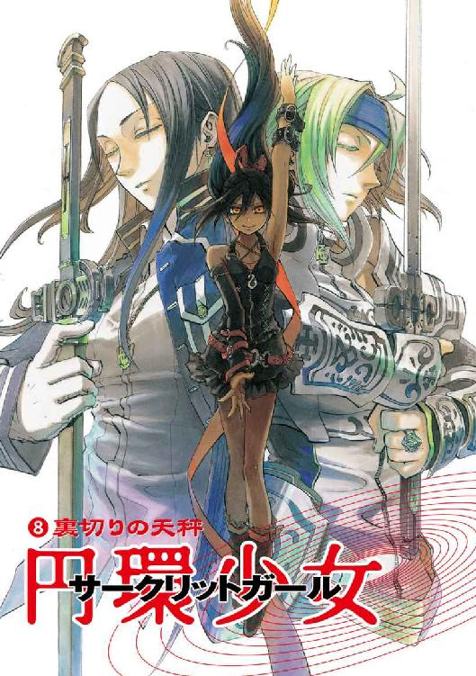
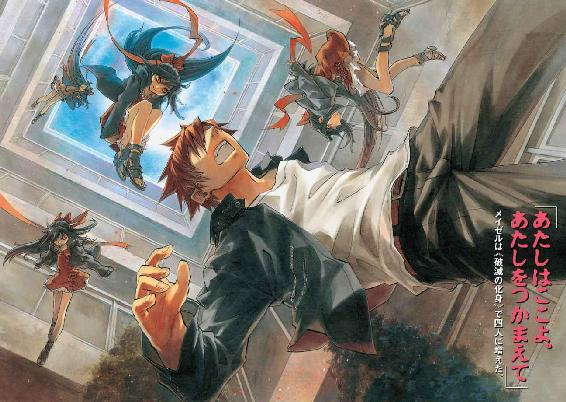
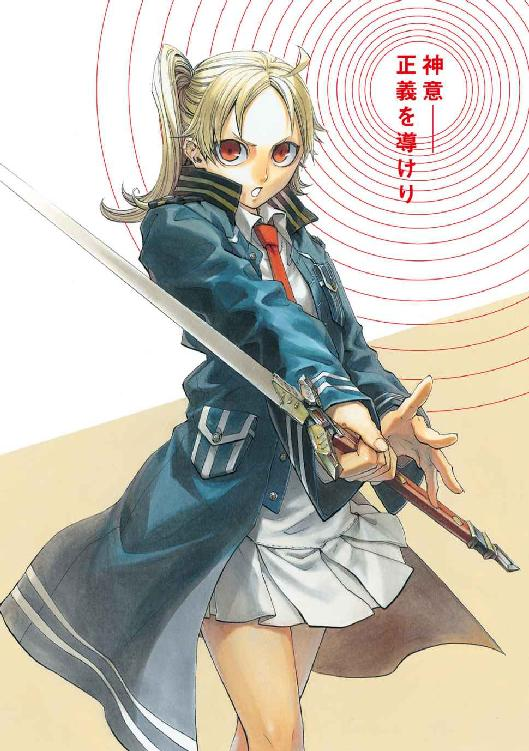
円環少女
⑧裏切りの天秤
長谷敏司

角川スニーカー文庫
本作品の全部または一部を無断で複製、転載、配信、送信したり、ホームページ上に転載することを禁止します。また、本作品の内容を無断で改変、改ざん等を行うことも禁止します。
本作品購入時にご承諾いただいた規約により、有償・無償にかかわらず本作品を第三者に譲渡することはできません。
本作品を示すサムネイルなどのイメージ画像は、再ダウンロード時に予告なく変更される場合があります。
本作品は縦書きでレイアウトされています。
また、ご覧になるリーディングシステムにより、表示の差が認められることがあります。
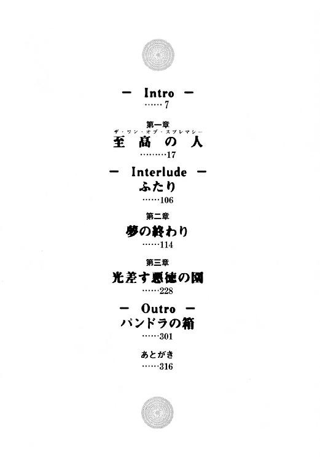
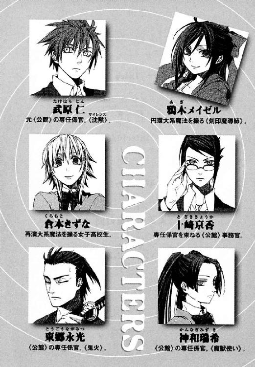
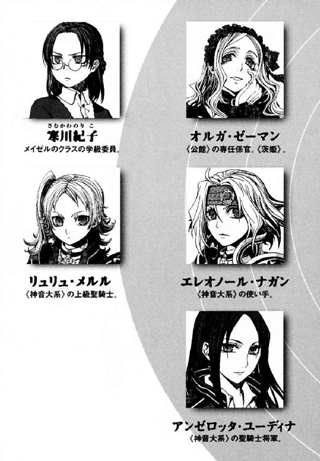
魔導師公館は、この百数十年の歴史で有数の危機に見舞われていた。
関係者はただ《公館》と呼ぶこの魔導師公館は、魔法使いとの関係を管轄する非公然の政府機関だ。
この世界には、異世界から魔法使いが訪れている。たいていの人は夢物語だと考えているが、この世界の神話や伝説は、異世界人の影響を色濃く受けている。そして日本は、魔法が存在する異世界からの客たちとよい関係を築いた国だった。
東京に魔導師公館が設立されたのは、日本が近代国家になった明治時代だ。それから百年以上を経た現代も《公館》の職分は同じだ。魔法使いたちの政治勢力である《協会》との外交の窓口をつとめること。そして、魔法使いから国を守ることだ。
つまり《公館》は、魔法使い側の動きがはげしくなりすぎると到底対応が追いつかなくなる。
八月の核爆弾騒動から一ヶ月以上経った十月現在、状況は制御不能になりつつあった。
「魔導師公館という組織の問題は、百年以上前と変わっていないことなのですよ。このままでは、《公館》は倒れるでしょうね」
だから、《公館》の事務官である十崎京香は、しばらく家にも帰れていない。
明るい銅色に染めた長い髪をアップスタイルにした彼女は、《公館》では仕事のできる女で通っている。実際、高級ブランドのスーツに身を包んだ京香は、若いがこの役所でもっとも重要なスタッフのひとりだった。
魔法使いから日本を守る《公館》の治安機能を担当するのは、わずか六人の専任係官だ。そして十崎京香は、専任係官のまとめ役なのだ。京香は実質的な指揮官でもある。このどんぶり勘定なシステムも、明治時代から〝変化〟がない。
「専任係官の定員が十二名なのは、明治当初は京都と東京しか守らなかったためです。専任係官は採用基準も高すぎます。定員を百名程度まで増やして、基準はさげるべきです」
京香は、ひとりごとを言っているわけではない。彼女に対面する席に、男がひとりいた。その男、溝呂木京也は、《公館》嘱託の魔法学者だ。細身だが長身の体に白衣をひっかけ、髪を運動選手のように短く刈っている。
「武原仁の抜けた穴は、おおきいということか。現在動いている専任係官は六名。《公館》の命令に縛られる者はわずか四名か......。普通に勘定すれば壊滅状態だとも言えるな」
魔法学者溝呂木の研究室は、巨大な用具を運びこむため学校の教室ほども広さがある。ただ、普段は、実験用テーブルと壁面の書架の他には何もない殺風景な場所だ。だから、彼女のことばがいやに大きく響いた。
「敵は神聖騎士団。聖騎士将軍アンゼロッタ・ユーディナと、機械化聖騎士師団五千騎です。溝呂木さんは、ここに十二年以上おられて、これより悪かった戦況をご存じですか」
「ここが陥落する可能性なら今回が最大だな」
溝呂木は他人事のように即答した。
改めて、京香はあまりに絶望的な状況に嗤いがこみあげた。
「聖騎士将軍アンゼロッタ・ユーディナを乗せた飛行機が、明日、ハワイを発ちます。明後日には、東京に〝彼女〟がやって来ます」
現在、神聖騎士団という魔法使い集団が、一個師団をもってこの国に侵入しつつあった。入庁三年目、二十五歳の彼女は、これから勝ち目がない戦いの指揮をとる。
「それで十崎事務官は私にこの《鍵》の再調査を依頼するわけだな」
溝呂木が、窓のない研究室の机に置かれていた短剣を手に取った。材質は青銅のような青緑色の金属で、デザインは装飾がないペーパーナイフに似ていた。
「事態のスタートラインは、明らかにこの《鍵》と、鍵をもちいるべき《幻影城》です。再演魔導師の出現からわずか四ヶ月で、事態は急転しました。......《神に近き者》グレンの襲来も、国城田事件も、すべて倉本きずなが目覚めたバベル事件後の出来事でした。
私も二年半ここにいますが、今年六月以降の大事件の発生頻度は異常です」
「原因がわかっているならば、倉本きずなの身柄を確保したまえ」
「倉本きずなの身柄を確保した場所へ聖騎士五千騎が押し寄せてきたら、防ぎようがありません。逆に、完璧に隠せたとしても、まずこの公館本館が攻撃を受けます」
季節はまだ秋だ。暖房をまだ入れていないとはいえ、実験室はこごえるほど寒いわけではない。だが、京香は血の温度が下がってゆくようで、かすかに頭痛を覚えた。
「──私が神聖騎士団側の指揮官なら、必要になったらこの公館本館をまず陥落させます」
十崎京香は、倉本きずなをよく知っていた。きずなの高校の夏休みが終わるころまで、彼女を居候させてやっていたのだ。六月から夏の終わりまでの短い時間だが、京香は、きずなの作った食事を食べてすごした。家族のようにすごした。
だが、やさしい彼女は、《公館》にとっては疫病神だ。
「ふむ。十崎君の話を聞いていると、今回は完全な負け戦だな」
「ご存じなかったのですか？ 私たち魔導師公館は、十年規模の戦略でとっくに負けています」
魔法使いたちは、京香たちが住むこの世界を《地獄》と呼ぶ。この世界の住人が、観測した魔法を破壊する魔法消去能力を持っているためだ。だから、異世界人たちは、京香たちを魔法の天敵、《悪鬼》と蔑む。
そして現在、日本政府と魔法使いの関係は異常だった。公館の本拠であるこの洋館から、魔法使いの姿が消えたのだ。公館本館は、京香たちがはたらく《公館》の区画と、異世界人勢力《協会》が使っている区画にわかれている。だが、夏の核テロ以降魔法使いが減り続け、現在は《協会》区画がもぬけの空だった。《公館》からの、核テロで押収された爆弾についての質問も無視されたままだ。
《協会》の政策は、いつからか日本に対して極端な対立路線へ移っていた。《協会》の宿敵である神聖騎士団と戦うというのに、京香たちは魔法使いたちと連携ができない。
京香は、この世界が神なき《地獄》だと知っていても、祈りたくなった。
「今回、神聖騎士団が東京に来た目的は《賢者の石》だという話は、どの程度のたしかさなのですか」
「確証がまったくない程度だな。ただ、五千騎もの集団を動かすのが〝今〟である理由が、ほかに考えられんだけだ」
《賢者の石》は、絶大な力を持つ魔法遺産である神人遺物の原料だ。それを使えば、魔法世界とこの世界とをつなぐ入り口である《門》を新たに作り出せる可能性があった。確かに秘宝と言えるほど貴重なものだ。だが、《賢者の石》が東京にあるという溝呂木の確信が、京香にはわからなかった。
「曖昧なデータしかなく予測値を出せないのが残念だ。だが、《賢者の石》が現れている可能性は、かなり高いと考えていいだろう。
まず、《賢者の石》は魔法使いの歴史の分岐点に現れるという前提がある。そして、この公館本館の様子を見たまえ。日本と千年以上のつきあいがあった《協会》が、連絡を断ってここを引き払った。これは、魔法使いの歴史が新しい局面を迎えた一大転換点であるはずだ」
溝呂木は、学術的興味におぼれて、楽しそうだった。だが京香は、組織の人間を絶望的な死地へ送りこむ指揮官だった。
「縁起でもありませんね。それだと、《協会》との同盟関係は崩れて、歴史上この断交が続くことになります」
京香は、人差し指の爪で、実験室の机をカツカツとたたいた。大きなため息をつく。彼女は認めたくなかった。彼女のひとりごとは、愚痴のようになっていた。
「聖騎士将軍アンゼロッタがひきいる機械化聖騎士師団は、神聖騎士団の新時代の象徴です。《協会》も、日本との断交を決意するほど変化しました。組織を飛び出した魔法使いたちは、ワイズマン警備調査会社をつくりました。なのに、私たち魔導師公館だけが、明治時代から変わりません。こわいと思いませんか？」
「今さらだな。《公館》は常に危機の中にあった。戦後六十年、公館本館は、横田だの厚木だのの米軍基地に囲まれているからな」
「そうなのでしょう。ですが、魔法世界にかかわるこれら勢力が全力で衝突すれば──」
京香は、その事実を戦闘指揮者として嚙みしめる。
「──最初に滅びるのは、私たちです」
京香たちは、たぶんどこかで、時代に合わせて〝変化〟するきっかけを見逃したのだ。
その夜、京香はせまい会議室にいた。またひとつ、決断をせねばならなかったからだ。
どんなことをしても戦力の穴を早急に埋めなければならなかった。カネで雇えるものなら、少々の不道徳は目をつぶる覚悟はあった。
だが、そんな京香も面接会場に入って驚愕した。そこにいた魔法使いが全裸だったからだ。
「いつ脱いだのですか？」
全裸のまま椅子に座っていた魔法使いが、眼光鋭く返した。
「先ほど、身支度を整えさせてもらった」
白金色の髪も凜とした美女の名は、《無双剣》セラ・バラードという。かつては《協会》に所属し、専任係官神和瑞希と互角の勝負を繰り広げた高位魔導師だ。だから、実力は信用できた。見た目通り、隠し事をしないだろう人柄も評価できた。
「ところで、よいのか？ 魔導師公館は、私をグレン・アザレイの一件で追っていたのだろう。再演魔導師をまた狙うかもしれんぞ」
「再演魔導師の生命は、我々にとって現状そうおおきなものではありません。私たちは、あなたに、《協会》がグレン事件で刻印魔導師を勝手に損耗した責任を明確にするため、証人をお願いするつもりでした。ですが、これももはや無意味です。魔導師公館と《協会》との交流が断絶していますので」
「ならばよかった。この国の者には、そう......やっかいになった義理もある」
急場の傭兵として、セラは申し分なかった。それ以上に、魔導師公館も新しい試みをはじめねば手遅れになる瀬戸際だったのだ。
「待遇と報酬に関しては、先に事務の者がおわたしした書類のとおりです。《無双剣》セラ・バラード。あなたは、専任係官ではなく、臨時雇いの戦力ということになります。ですから、あげていただいた戦果によって報酬は出来高で上昇してゆきます」
セラは、ひとつひとつうなずきながら聞いていた。もう秋になって会議室は肌寒いというのに、なめらかな肌をひきつらせることさえない。
「仕事は、神聖騎士団との戦闘。命令拒否は即刻解雇となります。《協会》の魔導師であるあなたは、聖騎士以外の相手と戦う命令は拒絶する権利を持ちます。ただし、一度命令を受けた後に逃走した場合は、専任係官と同じ処分を受けていただきます」
セラの魔法、錬金大系は、この世界の歴史では錬金術師として歴史に痕跡を残している。化学の基礎を作った歴史上の錬金術師たちは《賢者の石》を求めていた。京香たちが教科書に見たそれと、これから聖騎士たちと争う《賢者の石》は別物だ。だが、京香には、今回の戦いにセラを投げ込むことを、運命じみて感じられたのだ。
あらゆるものをさらけだした魔法使いが、スーツに身をかためた京香を試すように問うた。
「私を信用できるか、服を着た女。私は、おまえたちを裏切るかもしれないのだぞ」
全裸侍が信義を語っていた。京香は冗談のようだと思った。ただ、はっきりしていることはひとつだった。すべてが悪い冗談だとしても、京香は高級官僚として仕事を果たさねばならないということだ。
「私が個人的に信用できなくてもよいのです。組織とは、よいものも悪いものも、まじめなものも不真面目なものも載せて動くためにあります」
彼女は闇の底で、手入れの行き届いた工具のように厳密に彼女の仕事を果たす。
「魔導師公館という組織には、あなたのようないびつな力がふさわしいのでしょう。私たちは、社会の、この世界の人間と魔法使いの仲立ちをする歯車です。あらそい、疑うことと同時に、信用することも、魔導師公館の仕事なのです」
そうかと、セラが腹を決めたように重々しくうなずいた。
──へくしゅん
かわいらしいくしゃみが聞こえた。
京香が書類から顔をあげると、堂々と胸を張った魔女の鼻の穴から光るものが垂れ下がっていた。会議室は、太陽がはいらず空調もないため、夏は暑く冬は寒い。セラは、自分が鼻水を垂らしていることに気付いていなかった。
「私に望むことは、これだけか？」
「あとは、外を歩くときは、きちんと服を着てくだされば」
「断る。服など子どもの着るものだ」
セラが即答し、時間が止まった────。
京香は、この全裸とやってゆけるのかと迷った。これを追い返して他にアテはあるのかと、浅ましく計算した。こんな全裸の魔導師を頼る今の京香たちが、もはや喜劇か悲劇かわからないほど歪んでいた。
その一呼吸ほどの沈黙も、未来の行方を決める分け目だった。
そして歯を食いしばり、京香は決断した。
「わかりました。魔導師公館は、全裸を許します」
歪んだ部品を組み合わせて、魔導師公館という愚者の船はまた、戦いへ向けて漕ぎ出す。
十崎京香は、組織から、それが沈みゆく泥船でも逃げない。
武原仁は、組織からはじき出された人間だ。
彼は、今年の夏まで、十崎京香と同じ魔導師公館に所属していた。役職は専任係官。魔法世界の政治権力である《協会》から、刻印魔導師と呼ばれる罪人を借り受け、彼は日本を魔法使いから守っていたのだ。
「ただいま」
仁は、アパートのドアを開けた。部屋の中から、あたたかな明かりが漏れた。十月になって夜風もすっかり秋の冷たさになった。
「おかえりなさい。外、寒かったんじゃないですか」
部屋の中から、女の子のやさしい声が聞こえた。毎日彼を安心させてくれる声だ。
仁は、彼ひとりのものではなくなった部屋へ入るとき、いつも緊張した。
「まだまだ大丈夫だよ。運動会の準備だから、力仕事が多くて、かえって汗かいたよ」
魔導師公館にいたころ、彼の毎日は血みどろの殺し合いの連続だった。今の彼はちがう。彼は今、私立御陵甲小学校で、教師としてはたらいている。明日の日曜日は、運動会だった。
台所の奥の居間で、倉本きずなが顔をあげた。正座しても背筋がぴんとのびているから、毛織物のトップスに豊かなカーブをつくる胸が目にまぶしかった。
「ごはん、もうすぐしますから、ちょっとだけ待ってくださいね」
二十四歳の仁にとって、女子高生のきずなが若妻のように座っているのを見るのは気恥ずかしい。きずなは、鼻歌を歌いながら、楽しそうに針仕事をしていた。栗色の髪が、彼女が鼻歌に合わせて体を揺らすたび、肩のあたりで弾んだ。
「ああ、いいよ、きずなちゃん。俺もすこし休憩してるから、きりのいいところまでやっちゃってくれ」
洋裁でもしていたのか、きずなの座布団の脇には電動ミシンが置いてあった。
仁は、部屋にミシンがあることが奇妙だった。家庭のにおいが増して、九年も過ごしたアパートが別の場所になったように思えた。
「なんか、本当の家族みたいでなんか照れるな」
「変ですよね。普通のことしているだけなのに、わたしも楽しくって......」
きずなが、縫い物の手を止めて笑った。彼女の前のちゃぶ台では、晩ご飯のおかずがあたたかい湯気を立てていた。
やさしいたれ気味の目を細めて、きずながアパートを見渡した。六畳一間の居間と、昔は仁の妹の部屋だった四畳半、そして台所。仁たちは、このちいさな部屋にかけがえのないものを築きつつあった。
「そう言ってくれると、ほっとするよ。ずっと、きずなちゃんに、高校もいそがしいのに家事してもらってるし」
「いいんですよ。お父さんと一緒のときも、ずっとこうでしたし......」
仁の脇の下に、汗がじわりと浮いた。彼には、きずなに告白できていない秘密があった。仁は、かつて彼女の義父である倉本慈雄と戦い、死に至らしめた。仁ときずなは、神聖騎士団が歴史を改変しようとした《バベル事件》で出会った。倉本慈雄は、娘であるきずなを生贄にしようとした、その首謀者だったのだ。
きずなは、いいえいいえと手を振ろうとして、針を持ったままではできずこまっていた。
「それに。......あの、お母さんも、こんなだったのかなあって」
きずなが母親だと思っている女性も、実の肉親ではない。それを知っているから、仁はどう答えてよいかわからず、脱いだジャケットをえもん掛けに吊して鴨居に引っかけた。
「そっか......。それでいろいろ上手なんだ」
彼は、魔導師公館を放逐された。それでも気楽に生きられる立場ではない。なくしかけたものを取り戻したと、ほっとできる立場ではなかった。
「そういえば、十崎さんは、ちゃんとごはん食べてるでしょうか」
きずなが、ちゃぶ台をはさんだ向かい側で針をちくちくやっていた少女にたずねた。
「どうしてあたしに聞くの？」
答えた鴉木メイゼルは、小学生で、魔法使いだ。仁にとっては、小学校で受け持つ六年一組の教え子でもある。メイゼルは、華奢な体を壁にもたせかけて、話しかけたら針で刺されそうなほど集中していた。学校ではうるさいほど元気だが、今夜の彼女は静かだ。縫い物は慣れていないのか、左手の人差し指に二カ所、ピンクの絆創膏を貼っていた。
メイゼルがものごとに真剣に打ちこむ姿は、浮世離れして端正だった。真剣に一点を凝視するあめ色の瞳は、宝石のように澄んでいた。十年後の妖美を確信させる長いつややかな黒髪も、今夜は結んだリボンと同じくらい年相応に見えた。
「せんせ、おかえりなさい。でも、もうすぐ終わるから......ちょっとだけ待って」
手元に集中しすぎて、メイゼルは、ワンピースのすそからのびるすらりとした足が動いているのに気付いていない様子だった。
「おい。行儀悪いから、足を曲げたりのばしたりするな。あと靴下脱げかけてるぞ」
武原仁は、このちいさな魔女を救うために任務をほうりだし、魔導師公館を解雇された。だから仁は、組織を飛び出して守った彼女が生き生きしていると、それだけでうれしかった。
突然、ちいさな魔女が歓声をあげた。
「できたわ！」
メイゼルが両手で天にかかげたものは、黄色の派手なプリーツスカートだった。
「おい、それ学校に穿いてくのか？ いくらなんでもちょっと短すぎるだろ」
仁が困っていると、少女が無邪気だった頰をほんのり上気させだした。
「ガッコウじゃイヤだから、ここで着てほしいの？ ひとりじめしたいのね。せんせ、本当によくばりだわ」
「そういうのじゃなくて、おまえ、なんでこんな秋になって、ここまで短いんだ」
「せんせ、夏だって、あたし、あんまりかわらないくらい足の出る服も着てたわ。せんせの独占欲が強くなっただけよ。だってせんせ、さっきもあたしの足、ずっと見てたもの」
ちいさな魔女は、仁をからかって遊んでいるのではない。仁が焦ったり恥ずかしがったりするのが、真剣に楽しいのだ。鴉木メイゼルは、この年にして、後もどりのきかない嗜虐趣味者なのである。
「そりゃ靴下が脱げかけてたら見るだろ。今脱がなくていい。俺ははだしに興味があるわけじゃないし、脱いだ靴下もほしくない！」
仁がメイゼルと出会ったのは、彼女がこの世界に来てまだ間もない五月だった。
彼の所属した魔導師公館は、治安維持のため使い捨てる肉の壁として、《協会》から刻印魔導師を引き受けていた。刻印魔導師は、故郷の世界で神判の極刑を受けた罪人で、《協会》の敵を百人斃すまで自由になれない。仁は消耗品として子どもを引き渡された。《公館》にとっては、死なせるのも寝覚めが悪い厄介ものだったからだ。それが彼女自身わかっているから、出会ったころのメイゼルは追い詰められていた。ちいさな魔女が明るい表情を見せてくれているだけで、仁はうれしかった。
きずなが、メイゼルが洗面所に手を洗いに行ったすきに教えてくれた。
「ほら、武原さんの学校で、日曜日に運動会じゃないですか」
「どうしてきずながせんせに言おうとするの？」
専任係官の仁と、刻印魔導師のメイゼルと、監視対象だったきずな。三人のつながりは、最初、魔導師公館という組織があってこそのものだった。なのに、仁がひとりになっても、彼女たちはそばに来てくれた。
「本当に、ありがとうな。明日も、ずっと、こんなふうにたのしかったらいいな」
「運動会、実はけっこう楽しみなんですよ。わたし、お父さんがトラックの運転手でいそがしかったから、運動会とか来てもらったことなくて」
そう言うきずながメイゼルへ向ける目は、本当のお姉さんのようにあたたかかった。この世界に来るとき両親と引き離されたメイゼルを、もう両親がいないきずなが心配してくれていた。
「あたしも、ウンドウカイってはじめて。本当にたのしみだわ。だって負けたり実力を出せなかったりして、くやしい思いをする子がたくさん出るのよ。そんな傷口、あたしにたくさん見せて、いったいどうさせたいのかしら？」
山盛りの大好物を見たように、頰に手を当てて少女が身をくねらせる。メイゼルのテンションは最高潮だった。
「おまえのためだけの祭りってわけじゃないからな」
距離感はもうムチャクチャで、こんなことが長く続くわけもなかった。これが仁が戦って勝ち取ったものだと誇るには、彼らは欺瞞と解決できない問題をかかえすぎていた。
メイゼルが、もう一度、満足げにミニスカートのできばえを確認していた。
「......ところで、それ、どうするんだ？」
仁は、微妙に嫌な予感がした。
「ナイショよ。......でも、せんせのこと、ごめんなさいって何度も言いたいくらい、おどろかせたげるからカクゴするのよ？」
そして、武原仁は、運動会で無言の悲鳴をあげるハメになった。
私立御陵甲小学校の運動会は、クラス対抗戦だ。一年生から六年生までの、各一組が赤組、二組が青組、三組が緑組、四組が黄色組になって得点を競い合うのだ。
仁たち教師は、競技の準備をしたり、児童の誘導や世話をしたりといそがしい。相手が学校に慣れている児童たちだけなら、まだよかった。問題は、仁たちの常識が通じない保護者が運動場を埋め尽くしていたことだ。
御陵甲小学校は、全校児童が七百人すこしだ。これに保護者を合わせて人出は千五百人を超えていた。日曜日で雲もほとんどない快晴だから、運動場は人だらけだった。
「すみません！ 保護者のかたは、通り道に立ち止まらないでください!!」
仁は汗ばむ陽気の中、玉入れの用具をかかえて急いでいた。教師としては無能な仁に与えられた仕事は、体力勝負のヘルプ役だ。
スピーカーから流れるアナウンスは、放送部によるものだ。
〈次は、各組代表による応援合戦を行います〉
弁当の時間が終わって、運動会は後半に入った。応援合戦の赤組の演目は、チアリーディングだった。
仁は、運動場のトラックへの入り口に、体育倉庫から運んできた箱を積み上げた。
「応援合戦か......。赤組は、メイゼルがやるんだったな」
仁は元々、《公館》の専任係官だった頃、教職免許すら持たずにここに入り込んだ。史上最年少の刻印魔導師である鴉木メイゼルを監督し監視するためだった。その鴉木メイゼルは、運動場の赤組陣地でポンポンを持って踊っていた。
とんでもない格好で。
「..................なんだあれは」
体操服の生徒たちのリーダーになって、まん中で踊っているメイゼルは黄色のチアリーダー衣装だった。彼女が思い切りよく腰を振るたび、短すぎるスカートが揺れた。他の児童は体操服にハチマキでポンポンを持っているだけだったから、明らかに浮いていた。
音楽に合わせて、メイゼルがポンポンを持った腕を思い切りよく回す。小学校の振り付けだから、はげしいところでもしゃがんだりジャンプしたりする程度だ。体を縮めれば、あんなにもちいさいのかと驚き、跳ねるとその伸びやかな肢体が輝くようだった。ほほえましくも愛らしく踊る少女の、腕の裏側の肌の白さがまぶしくて、仁は目を細めた。
生徒会長選挙で悪名をあげたメイゼルは、全校児童の注目の的だった。我が子の晴れ姿を見に来た父兄のビデオもカメラも、みんな彼女に向いていた。
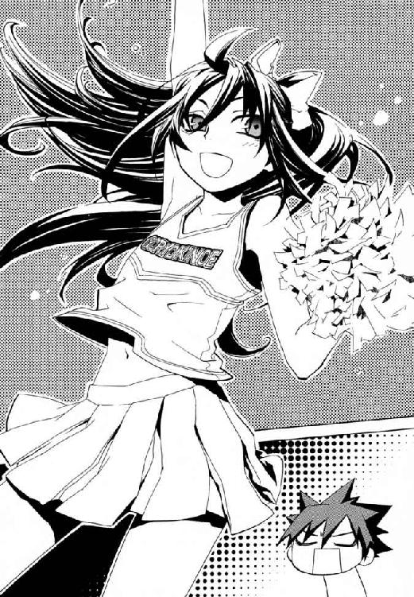
〈生徒会長の速水さんからのお願いです。『アギさんは、もっと小学生らしいかっこうをしてください』ということです〉
生徒会長の速水志保とは、メイゼルは今でも仲が悪かった。
仁は、思わず心の中でごめんなさいとあやまっていた。似合いすぎているのに妙に新鮮で、見ているとだんだん彼の顔が熱くなってきた。
「......やっぱりあのスカート、取り上げときゃよかった」
猛烈に恥ずかしくなって、顔を隠してしまった。
メイゼルが、仁の視線に気付いて、ポンポンを遠くから振り回したのだ。短い衣装からへそがのぞくほど大きくのびあがって、こっちに気付けとアピールしていた。
「──先生」
声の方向へ視線を落とすと、猫のような目が好奇心たっぷりに仁を見上げていた。メイゼルと同じくらい背が低い、ショートカットの少女だ。六年一組の女子出席番号十二番、天瑞岬だった。
「先生、突然ですが、鴉木さんのこころの声を代弁してよろしいですか？」
仁は、焦りながらも許可してみせた。教師の度量を疑われるのがこわかったのだ。
「やってみろ」
天瑞が、その場に足踏みをして、メイゼルのチアの振りをまねてみせた。
「先......、生......、大......、スキ」
びしりとポーズが決まって、天瑞のほうが踊りはうまかった。
「............以上です」
保護者の間近での大胆予想に、空気が一瞬凍った。仁は、他の誰かに聞かれたのではないかと、周囲を見回していた。心臓が、足の踏み方ひとつで爆死できる地雷原にいるかのように、きしんだ。
「天瑞。六年一組の女子って、みんな鴉木のことそんなふうに思ってるのか？」
ショートパンツのポケットから、天瑞がメモ帳を取り出した。そして、ぺらぺらとめくって、仁を見上げた。
「アンケートによると、女子の八十パーセントはそう思っています」
「......ずいぶん協力率いいな」
魔法使いでなくても、女の子は仁にとって異世界人だった。
だから、応援合戦が終わって三年生と四年生の玉入れがはじまっても、メイゼルのまわりは危険地帯のままだった。運動会を見にきてくれたきずなが、青いビニールシートを敷いて赤組を応援していた。
仁たちが同居していることは、当然秘密だった。だから、仁は、運動場の隅で次のプログラムのための荷物を運びながら、楽しそうなきずなとメイゼルを遠目に眺めた。
ビニールシートに座ってお茶を飲むメイゼルは、チア衣装のままだった。ちいさな魔女は、まわりの親御さんにもパチリパチリと写真をとられていた。大人気で気分がよいのか、メイゼルは長い黒髪をかきあげてポーズをとってやっていた。
きずなが、仁に気付いてさりげなくデジカメを彼へと向けた。仁は照れくさくて、けれど逃げるのも不自然だからその場でかたまった。
メイゼルも彼を発見して、見せびらかすように笑いかけてきた。何か話しかけてきたが、うるさすぎて、人の声が聞き取りきれなかった。
「なんだ？ 聞こえないぞ」
「せんせ！ トクベツに、あたしといっしょに写真とらせたげるわ！」
大声を出すものだから、まわりの児童の家族がみんな仁とメイゼルを見比べた。
ニセ教師である武原仁と鴉木メイゼルの関係は、小学校に知れたら大問題だ。なのにメイゼルがひらべったい胸に手を当てて得意げなのは、それを忘れたからではない。嗜虐趣味者だから、仁を追い詰めるのが大スキなのだ。
「鴉木。六年生は、これの次の次が組体操だろ！ もう玉入れ半分終わってるぞ。さっさと集合場所のほうへ行け」
彼の声が、ミニ撮影会で興奮していたメイゼルの、最後のスイッチを押した。ちいさなチアリーダーが人垣を抜けてやって来ると、彼女自身の黄色いスカートをぎゅっとつかんだのだ。
「今さらそんな冷たくするの？ ガッコウを楽しめって言ったの、せんせでしょ。......せんせが、このあたしをこんなにしたのよ？」
ちいさな魔女の頰は上気していた。少女のあめ色の瞳は、試すようにまっすぐ仁を見あげていた。まわりの保護者が、「モテるね、先生」「こんなにされちゃったー」と、はやし立てた。
仁は気が遠くなりそうだった。天瑞のことばが正しいなら、クラスの八十パーセントは、メイゼルが本気だと察している。笑えるか笑えないかのギリギリを、黒髪の小悪魔は本当に楽しそうにくすぐるのだ。
仁は、彼女の気持ちを受け取れるはずもなく、あいまいな表情を作るしかなかった。仁とメイゼルは、もはや専任係官と刻印魔導師──監督者と監督対象の関係ではない。だが、彼にとっては、組織が消えて情が前面に出ても、恋愛ではあり得なかった。
仁は、カメラを豊かな胸に抱いておろおろしていたきずなへ声をかけた。
「あの、保護者のかたは、鴉木さんをよろしくお願いします」
「は、......はい！ わかりました！ メイゼルちゃん。武原さんのこと、あんまりこまらせちゃダメだよ」
仁は、頭がまっ白になりながら、なんとか返した。
「すみませんが、武原さんではなく、武原先生でお願いします」
いつも通りに仁を呼んでしまっていたきずなが、まっ赤になって頭をさげた。「すみませんでした！」と、仁へ。そして「おさわがせしました！」と、まわりの保護者へ。
もう、わけがわからなくなっている様子だった。仁たちの距離は、危険なほど近くなっていた。それでも、歪なこれが仁の、かけがえのないものだった。
「せんせ、ケッキョクお昼食べられなかったんでしょ。あたしが、おむすび作ったげたから、食べてくのよ」
いつもの学校は、小学生と教師しかいないシンプルな世界だ。だからこそ、年齢も背景も様々な保護者でごったがえしている今日の風景は、複雑を通り越して猥雑だった。
酒を飲まないようにお願いしたのに、保護者は決まりを破って酔っぱらっていた。下品な口笛まで飛んだ。仁を救ってくれたのは、銀縁眼鏡をかけた見るからにまじめそうな女の子だった。
「先生！ 祖師堂先生が呼んでましたー」
白い体操服のゼッケンには、几帳面にレタリングした明朝体で《６─１ 寒川》と書いてあった。六年一組の学級委員長、寒川紀子だった。寒川は、体操服の上衣のすそをきっちりハーフパンツに入れていた。他の女子は上衣をだらりと垂らしているから、妙に目立っていた。
「先生、リレーの用具を持ってくるように頼んだって、祖師堂先生が言ってました」
祖師堂しづか先生は、六年一組の担任だ。そして、副担任である仁の指導教諭でもある。仁があまり役立たずでは、祖師堂先生が他の先生方に肩身がせまくなる。
〈ひとーつ！ ふたーつ！ みーっつ！ よーっつ！〉
三年生と四年生の玉入れは、とっくに競技の時間を終えていた。四年担当の先生たちが、かごにはいったお手玉をひとつずつ青空へと投げあげていた。
「悪い。すぐ行く。委員長も、組体操の呼び出しがもうすぐあるはずだから、鴉木を連れてってくれ」
まじめな学級委員長が、まだチアリーダー衣装のメイゼルを見て血相を変えた。
「鴉木さん！ その服、ダメだよ！ 怒られるよ」
当たり前の風景が、スッとしあわせの気配のように胸に入り込んできた。仁は、メイゼルが誇り高い魔法使いの顔でなく、ただの女の子の顔をしていることがうれしかった。
「ありがとうな」
メイゼルの友だちになってくれた寒川が、チアリーダーを校舎へ引っ張ってゆこうとしていた。着替えなくていいのにと不平たらたら、それでもメイゼルはついて行っていた。
この小学校とアパートが、今の仁の足場だった。そして魔導師公館で戦っていたころとも、地続きである気がした。運動会で親が子どもの成長を見守っているような、こういうものを仁は守りたかったのだ。
彼には、大切なものがあった。そして、大切なもののことを好きでいてくれる人々も、彼にはかけがえのないものだった。そうして、彼が好意を感じられる世界も染み渡るように広がってゆく。秋の日差しがどこまでもあたたかかった。
かけがえのない日々は、戦場のすぐそばにある。おだやかな風景は、その裏側に激烈な修羅場を隠している。
運動会の翌日、仁は朝遅くアパートを出た。児童たちは振り替え休日だが、仁たち教師は運動会の片付けがあるからだ。だから仁は、寝坊をしていたメイゼルを置いて、ひとりで部屋を出た。きずなは月曜日だから、高校で勉強をしているはずだった。
今日も気持ちのよい晴天で、どこまでも青い空が遠く広がっていた。
彼は、《公館》の裏切り者で、自家用車を持てば車に仕掛けをされる身だ。だが、御陵甲小学校までは、電車に数駅乗ればよかった。仁は、《公館》の職員に見つからないよう注意を払いながら、それでも秋の散歩を楽しんだ。
だが、近づいてくる自動車や二輪車のエンジン音に鈍感になれるほどの余裕もなかった。
「誰だ」
朝十時近い通勤時間帯とははずれた時間に、住宅街を走る車はすくない。大型のバイクの走行音に気付かないはずもなかった。
仁が振り返ってもかまいもせず、二車線の道路を大型バイクが彼へ車体を寄せてきた。仁は自然に、スラックスの背中側に差していたホルスターからナイフを引き抜いた。これから小学校へ行って、昨日と同じように先生をするつもりだったから、その温度差に目まいがした。
黒光りする車体が、威圧するように彼のすぐそばに停止した。黒いフルフェイスのヘルメットで顔を隠した乗り手が、まともでないことだけはわかっていた。
そいつは、メイド服を着ていたからだ。バイクに乗って寒風にさらされるはずなのに、黒いメイド服の袖は半袖でスカートは短かった。
仁は、タイヤの正面に出ないように一気に至近距離まで距離を詰めた。ライダーは、両手でハンドルを握って隙だらけだった。かつて魔導師公館の専任係官だったころ、単純な命の取り合いが仕事だった。だから、抜いたナイフを相手の細い首に押し当てることにも、ドスのきいた声で脅すことも慣れていた。
「今すぐそいつを取って顔を見せろ」
膝がまるだしになる服で大型バイクに乗る馬鹿はいない。転倒すれば、地面で肉は摺りおろされ骨まで削ることになるからだ。だから仁は、このメイドを、肉がこそげ落ちても簡単に魔法治癒できる魔法使いだと読んだ。
「バイクをおりろ、魔法使い。後ろのヤツもだ」
メイドの後ろには、メイド服の胴にしがみつくように二人乗りしていた男がいたのだ。
「ふたり並んでそこの壁に両手をつけ。聞こえないのか。そうだ。そのまま動くな」
住宅街でそこまでやらないと勘違いしていたか、おびえた様子でメイドが両手をあげた。そしてヘルメットのまま、仁にミニスカートの尻を向けるように壁に手をついた。
「聞こえなかったのか？ おまえもそこの壁に両手をつけ」
だが、泣きを入れるように手で仁を制止しながら、後ろに乗っていたその男はヘルメットをあわてて脱いだのだ。
「ひさしぶりだな、《沈黙》、私がわからないのか」
仁にとっては、忘れられない顔がそこにあった。服は新調した黒いスーツでも、黒いロングコートとしみついた貧相な空気は仁の記憶のままだった。
浅利ケイツが、そこにいた。
仁の口から、素直な気持ちがことばになっていた。
「......なんだか事情はわからんが、とりあえずおまえにはガッカリだ」
浅利ケイツは、長身の、荒々しい憎しみで摩耗したような男だった。
そして、それ以外のものが、三十四歳だというのに何もなかった。浅利ケイツは、十五年前にこの世界に堕とされてきた刻印魔導師だった。そして四年後に国外逃亡して追われる身になった。それから職もなくホームレスとして底辺の暮らしを十年以上続けた後、帰国した。グレン事件で、《神に近き者》と尊敬を受けた双子の兄の犠牲で、自由の身になったばかりだ。
英雄グレン・アザレイは、この世界を魔法使いの手に取り戻さんと、仁たちこの世界の住人全員に戦いを挑んだ。《神に近き者》グレンを斃したのは、弟であるこのケイツだということになっていた。事実はそんな単純なものではなかった。
「おまえとは、二度と顔を合わせることはないと思ってたよ。相似世界に里帰りでもすれば、いい暮らしができたんじゃないのか」
「......男の価値は仕事だ。......相似世界では、私は、はたらく必要がないからな」
十年以上も無職だったケイツが、自分は社会人だと主張していた。仁は《公館》を放逐され、逆にこの男が就職した。それだけの事実が、仁の指を理由がわからないほど震わせた。
「何からも逃げ続けてきたわりに、たった三ヶ月でデカイ口をたたくようになったな」
彼らの間に、冷たい風が吹いた。以前と何も変わった様子がないケイツが、仁へと尊大に吐き捨てた。
「さっき、この私を『ガッカリ』呼ばわりしたな。おまえに、そのまま返してやる。......《公館》を追い出されても人間らしいあいさつを覚えんな」
仁の目に、おとなだからこそ苦い涙がにじみそうになった。ケイツの様子を見ていると、ダメなやつは何があってもダメなままだと証明されたかのようだったからだ。英雄グレンは、弟を真人間にしたかったなら、才能を与える時期が十年遅かったようにすら、仁には思えた。
「俺は無礼なんじゃない。ただ、おまえが嫌いなんだ」
十歳年上の負け犬が、同じ病気の病人をあざけるように、仁を嘲笑した。浅利ケイツは、相似大系という魔法を使う。相似魔術は、似たものの間につながる弦のかたちで《魔力》を見いだす魔法だ。
──その《魔力》弦が、仁と、その尊大な男の間につながっていた。彼らを、世界が似たものだと告げていた。
仁はナイフをホルスターに戻した。ケイツと情けなさで張り合っているようで、みじめだったからだ。魔導師公館を解雇されても、仁は権力の後ろ盾があったころの横柄さで行動していた。それどころか余裕がなくなって暴力的になっていた。そもそも仁は、ケイツにとっては、兄グレンに致命傷を負わせた仇敵だった。胸の奥がきしんだ。
「何の用だ。俺は、あの学校ではたらいてる。仕事がある。忙しいんだ」
晴れていて気持ちのいい日だった。だからこそ、この再会が、新品の服に鳥の糞を落とされたようで腹立たしかった。
「......聞いたぞ。《公館》をお払い箱になったらしいな」
ケイツが見せつけるように、コートの内ポケットへ右手を突っこんだ。そして、革製の名刺入れを引きずり出した。
「才能に見合った場所で力をふるうことを、はたらくと言うのだ。見るがいい。今の私はワイズマンの幹部だ」
微妙に身なりのよくなった男が、白い紙製のカードを投げた。相似魔術で操作されて飛んできた紙片を、仁は無造作につかんだ。
《ワイズマン警備調査会社 統合情報室 シニアマネージャー 浅利ケイツ》
仁は、一度片付けたつもりの問題に引き戻されて、腹の底がむかむかした。
「おまえ、頭おかしいんじゃないのか。ワイズマンだぞ？ おまえを捨て石に利用して、双子の兄貴と戦わせた、あのワイズマンだぞ」
「知ったような口をきくな。我々魔法使いは、おまえら《悪鬼》が居座っている限り抵抗し続ける」
仁は、メイゼルがいてきずながいる日常が大事だった。それが壊れるときを想像したくなかった。だからこそ、核テロに荷担したワイズマンが許せなかった。
「それで、ワイズマンでのしあがるのが、おまえの選んだ道だってことか？」
運動会でメイゼルやきずなが楽しそうだった昨日、世界は単純で光にあふれて見えた。空はこんなに明るいのに、仁の目には今、陽光が落とす濃い影ばかりが目立った。突然、世界が苦悩だらけの迷路になった気分がした。
「何かは知らんが、さっさと用件を言って帰れ。......笑わせるな。どこまで噓なんだ？ おまえが抵抗運動なんかやるはずないだろ。十年も逃げ回ったおまえが、今さら命が危険な場所に飛び込むはずがない」
だが、彼のことばに、ケイツが逆につかみかかってきたのだ。
「おまえに何がわかる！ 魔法世界の情勢など何もしらん《悪鬼》ふぜいが」
「知るか。俺は何の用だと聞いてるんだ！ 俺はおまえなんかに関わりたくない」
怒りに顔を赤黒くしたケイツの体から、銀色の魔法弦が何十本も一斉にのびた。ほとんどが仁の体に結ばれていた。それは《原型の化身》という高等技術で、銀弦の一本一本が必殺の魔術につながるものだった。
「その気色の悪い魔法弦を俺につなぐな！ おっさんが、なついてくるな」
だから仁は、今まで停止していた魔法消去を発動させた。
それだけで、彼の視界からすべての奇蹟は消え去った。ケイツの魔法弦は、今の仁には観測できないオレンジ色の光、《魔炎》となって砕け散ったのだ。
この世界の住民は、観測した奇蹟を、認識するかわりに破壊する。それが、仁たちが神話の源たる魔法を見ない理由だ。武原仁は、その魔法消去能力を自分の意志で停止できる唯一の悪鬼であるがゆえ、《沈黙》と恐れられた。
仁は、ほんのしばらく過ごした平穏な日々で、弱くなった。だが、それも長くは続かない。彼の知っている厳しいルールすら通用しない、もっと厳しく寒い時期がやってくる。
「もったいつけずにいい加減に話せ！ 何が統合情報室シニアマネージャーだ？ ワイズマンなら、狩猟魔導師中隊をまた新しく編制してるはずだろ！ 部署のトップに、部下もつけずに直々に危険な前線に出す必要なんかないだろ。どうせお飾りの役職で、仕事はただのパシリなんじゃないのか」
仁が、長身の男の胸ぐらをつかんだ。図星だったか、ケイツは黙ってしまった。仁にとって浅利ケイツは酢のような男だ。以前に会ったときは、饐えたような酸っぱい臭いを振りまき、仁に体臭を不安にさせる敗残者だった。就職した今の姿を見ていると、酢を一気吞みさせられたように腹の底が締め付けられた。この男が、来なければよかったのにと思った。
「おまえが現れる前は、まだうまくいっていたんだ。それが、おまえが不景気な面見せた途端にこれだ」
仁にも逆恨みだとわかっていた。そもそも仁たちは、これまで無事だったことのほうが奇蹟だったのだ。
「ケイツさんを悪く言わないでください」
そのとき、仁を少女のハスキーな声が責めた。
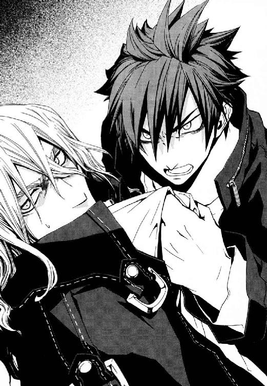
振り返ると、ヘルメットを両手で持った中性的なショートヘアの少女がいた。メイド服のライダーは、脱色したような薄い金髪をしていた。彼女は、全身の色素が薄いのか、肌は血管が透けそうなほど白く、目元も唇も自然な赤みに染まっていた。
「そこの壁に手をついてろと言っただろ。おまえは誰だ？ こいつの部下か」
仁からの、罵倒のような問いに、彼女自身より前にケイツが吐き捨てた。
「......伝言を伝えてやる。『いつまでもうまくいくわけはない。もう、おしまいだ』だ。......いいか、私はおまえがもう終わりだと伝えに来てやったのだ」
英雄の弟は、自分が依頼主に舐められていることに気付いていなかった。
仁は、彼自身の平和ボケ具合に呆れた。十日ほど前、リュリュ・メルルという上級聖騎士が、仁を神聖騎士団に誘いに来ていた。「聖騎士将軍アンゼロッタ・ユーディナが、もうすぐ東京に来る」と。《賢者の石》のついでに倉本きずなも狙われるおそれがあった。
「電話一本ですむ用件に、なんでこんな回りくどい──いや、そのバイクのほうが本当の届け物ってことか」
仁は、目の前のメイドが両手で抱えていたヘルメットを取り上げた。
かわいらしく口をあけた少女に情を移したくなくて、仁はケイツだけに話しかけた。
「ケイツ、展開している神聖騎士団の連中は本気だ。余計な色気を起こして、聖騎士に近づくなよ。せっかく拾った命をドブに捨てることになる」
そして、ほのかに柑橘類の香りがするヘルメットをかぶると、仁はケイツたちのオートバイに無断でまたがった。差しっぱなしだったキーをひねって、エンジンをかけた。
「あと......悪いな、おまえの依頼人に伝えてくれ。〝こいつ〟を無傷で返すのは無理だ」
つぶやいた彼自身のことばに、仁の全身に、ぞわりと鳥肌が立った。
伝言主は、仁に派手な死に場所を用意してくれたのだ。神聖騎士団に襲われるきずなを彼に助けに行かせたくて、ケイツをよこした。大事なものが失われそうになれば、武原仁は動かずにいられないからだ。
彼を思い通りに駒として動かすなど、簡単なことだった。結局、仁は、彼を取り巻く巨大な迷路から抜け出せてなどいなかった。昨日の、児童も保護者たちも楽しそうだった運動会と、同じ世界のこととは信じられなかった。
エンジンの振動が、車体に響き、仁の体まで震わせていた。廃棄煙の匂いが、くぐもった爆音が、戦場がすぐそこにあってもおかしくないことを予感させた。
この残酷な世界から、いっそ逃げだしたかった。だが、それでも仁は、アクセルを開いてバイクを発進させた。轟音をあげて、自重二百キロにもなる鉄の塊が、車輪の回転に引きずられて飛び出す。二輪車をあつかったのは久しぶりだから、急加速しすぎて浮きかけた前輪をあわてて沈め込んだ。
きずなの公立高校までの道順を思い出した。最悪、そこはすでに騎士たちに包囲されているかもしれなかった。それでも、逃げたら、彼が《公館》を解雇されてまで護ろうとした〝何か〟がウソになると思った。
歩いて帰らねばならないことに思い至ったか、ケイツが今さら慌てだした。
「待て！ 盗人が────」
バックミラーに、必死で走って追いすがろうとしているケイツが映っていた。相似大系には高速移動魔術がないから、二本の脚でだ。浅利ケイツは、笑わせようとして道化を演じているのではない。悲しいほど真剣なのだ。
そして、転覆しかけた日常にしがみつく仁も、それと〝相似な〟道化だった。
†
武原仁がバイクに乗って高校を目指した二時間前に、在日米軍横田基地に一機の軍用機が着陸した。
上級聖騎士リュリュ・メルルは、朝の広々とした滑走路の端で、機上の要人を待っていた。神聖騎士団と米軍は、この百年以上、良好な協力関係にある。高層ビルだらけの過密な東京に、リュリュたちが五千騎もの大戦力を集められたのは、基地を間借りできるためだ。
冴えた風が真っ平らなコンクリートのそこを吹き抜けて、遠くへと吹き去っていった。朝日に照らされたそこで行われる簡素な式典のため、居並ぶは歴戦の勇士ばかりだ。わずか十五歳の、白い肌に傷一つ無い少女には、不釣り合いな舞台だった。
背筋を伸ばし胸を張っても軍服が似合わないリュリュに、整列する他の騎士は注意を払わない。飛行機のそばに停車した高級乗用車を注視し、彼女など存在しないかのように無視していた。
神聖騎士団はこの世界に、四軍もの兵力を駐屯させている。機械化聖騎士師団は、その一軍であり、機械化装備の実験と評価を担当する。集合した上級聖騎士四十一名のうち、四十名は師団を支える基幹スタッフだ。白金色の猫っ毛をなびかせるリュリュひとりが部外者だった。
「騎士リュリュ・メルル。こんな強引なことを続けて、ご自身のためになるとお思いか」
彼女の左隣に並んでいた、四十歳近い男性がつぶやいた。その男は、押し出しの強い実業家のように見えた。簡素な軍服の騎士たちの中にあって、ひとりイタリア製の高級背広に身を包んでいるからだ。
「騎士ベレーノ、私の行いを〝悪〟だと言われるのですか」
機械化聖騎士師団の参謀、ベレーノ・ネロの位置づけは特殊だ。彼は、滅多なことでは前線に出ない。ベレーノは、他の上級騎士たちと役割がちがうことを明示するため、あえて装備をつけず軍服も着ない。
「〝悪〟などという倫理の問題は専門外だ。地位を持った者が、〝社会〟のルールを内側から乱すべきではないというだけだ」
参謀ベレーノは師団にとって欠くべからざるスタッフだ。リュリュは、親のコネで師団の基幹スタッフに席をつくったお荷物にすぎない。彼女の父エリゴル・メルルは、枢機卿という聖職の長に次ぐ高位聖職者にして神音世界有数の権力者だ。在日米軍の基地に五千騎もの機械化聖騎士師団を受け入れる体制を作ったのは、枢機卿エリゴルの政治力なのだ。家出同然に騎士団に入ったリュリュが泣きついたことが、どの程度それに反映したか、彼女は知らない。
参謀であるベレーノの隣に置かれたのは、彼女が〝お客さん〟だからだ。
「エレオノール・ナガンの助命嘆願なら、無駄なことだ。騎士団の至上の目標は、この神なき世界に《神》をもたらすこと。これに疑いをはさめば、誰であろうと異端として死ぬ」
リュリュは、ベレーノの表情のない横顔を見あげた。
少女には、あこがれた騎士がいた。その女性、エレオノール・ナガンは、強く、神の前に透明で、そして誰よりも純粋に祈った。その騎士が神聖騎士団を離反した。リュリュが姉のごとく崇敬する人は、近いうちに神敵としてもっとも苛烈な裁きを受ける。
「私は、ひとりの聖騎士として、この世界を救うべく神意にしたがうだけです」
「ご自身の将来のためにも、異端者への未練は早めにお断ちになるべきだろう。エレオノール・ナガンを助けたければ、前線より、政治の場ではたらかれたほうがメルル家らしい」
ベレーノたちにとっては、彼女は俗物に押しつけられた余計者にすぎない。ここからは、彼女自身がこれから戦って勝ち取らねばならなかった。
「地下都市で生死をともにした第三試験小隊の部下たちにも、別れを告げて来たのです。このわがままだけは、譲れません」
齢十五だからこそ、色気もなく潔癖にリュリュは言い切った。青い風が、滑走路の塵を払って、そのまま彼方へ去った。
そのとき、滑走路から機上の客を運んできた高級乗用車が、整列する四十一名の前に静かに停車した。黒い車体の自動車の後部ドアをあけて、その人は降り立った。
彼女は、飴色の瞳をした若い女性だった。十月の朝日を受けて、その人は、ただ洗われたようにさわやかだった。艶やかで長い黒髪と健康的な肌の存在感が拮抗して、みなぎるほどの緊張感をはらんでいた。すらりとして幾分細めだが女性らしい体に、白いブラウスと上着の礼装があつらえたようによく似合っていた。スカートは締まったデザインだが、動きやすいようスリットが入っていた。
同性でも目を留めずにいられない彼女が、聖騎士将軍アンゼロッタ・ユーディナだった。
当代最強の聖騎士のひとり。機械化装備の基礎技術を確立させた魔法史に残る偉人。彼女を賞賛することばはいくつもある。だが、実物が持つ圧倒的な確信と威厳は、そんなことばを軽く超えていた。アンゼロッタが現れ、そこに立っているだけで、その場が高揚に包まれた。リュリュすらもが、胸にわだかまっているものを一瞬忘れた。歴史上には、しばしば、求められるように現れて一時代を創る人間がいる。敵にすら《至高の人》と敬されるアンゼロッタは、まさにそうしたカリスマだった。
軍服の彼女がほほえみかけた。四十一名が、見えない手に操られたようにびしりと敬礼した。
「皆さん。手はずは？」
彼女が、軽やかな中にも鋼の意志を感じる、ゆるぎのない声を発した。他の騎士たちにかわって、参謀ベレーノが返答した。
「完璧です。三年前のような無様はありません」
これは第二次大戦後の連合国軍占領期以来の、大規模侵攻だった。だから、アンゼロッタにとっても敗北の許されない戦いであるはずだった。なのに、勝利を確信しているかのように彼女はあまりに自然だった。
《至高の人》が、右手に提げた鞘から剣を抜き、天に掲げた。
続いて四十一本の剣が抜かれ、新鮮な陽光にぎらりときらめいた。そして、空を見あげて太陽を見間違うことがないように、全員が自然にアンゼロッタに唱和していた。
「我ら、《神意》と正義のもとに！」
聖騎士将軍を迎える、簡素な儀式は、ただそれだけで終わった。アンゼロッタは式典嫌いであるため、歴史ある旅立ちの聖句をすらしばしば簡略化する。
「それでは、《賢者の石》の回収に向かいましょう」
《至高の人》は、近所に買い物にでも行くように戦争の開始を告げた。
リュリュたち凡俗のわだかまりなど吹き飛ばして、集団はアンゼロッタの意志の下にまとまっていた。そして、アンゼロッタの確信はかならず現実になる。
†
アンゼロッタ・ユーディナを迎え撃つ魔導師公館は、絶望的な戦力差にあきらめてはいなかった。
事務官十崎京香は、駅にほど近い駐車場に停めた公用車から周囲を眺める。この古いドイツ車の後部座席が、今回の作戦の移動指揮所だった。
昼食にはまだ早いこの時間は、付近の通行量が落ちる。国道に排ガスをまき散らす乗用車やトラックはまばらだった。この近辺が戦場になると知っている者はすくない。
きずなの高校を取り囲む主要道路には、覆面パトカーが配置されていた。夏以来、《公館》と公安警察は強い協力関係にあった。
「──警察による検問だけで魔法使いの大集団を止めきることは不可能です。聖騎士たちの使う神音魔術では、位置をあらわす神音を奏でるだけで手頃に魔法的転移で位置移動ができます。人目につかないポイントに直接転移されれば、検問の網をすり抜けられてしまいます」
京香の電話の相手は、夏の国城田事件で関わった警察庁警備局の副局長、清水健太郎だった。京香は、まだ殉職した職員の血の臭いが微妙にしみついている《公館》の公用車で、じっと押し黙る。警備局に魔法使い担当課を新設しようとしている清水は、微妙な時期らしく言葉遣いももって回っていた。
〈公安警察は、この国の国家に対する犯罪行為を取り締まることを職責とする。国城田事件以降、警察が積極的に魔法使い事件に関わるべきだという声は強い。今回の事件は、魔導師公館と直接協力して魔法使いにあたる歴史的な一歩として、注目を集めている〉
警察は、法律で認められた範囲内で仕事をする組織だ。殺さねば止まらない相手を本当にそうする権限はない。だから、聖騎士たちは《公館》が止めるしかない。そもそも警察は、聖騎士戦力を削るという戦闘の主目的が、可能なら百人くらいは殺しておきたいという意味だと知らない。
「────皆さんの魔法消去で、敵の魔術の大半は封じられます。その圧力と地の利で、我々《公館》の戦いは有利になります。ご協力、本当にありがとうございました」
十崎京香は、急場の簡単な礼で携帯電話での通話を終えた。彼女に並んで公用車の後部座席に座っていた男が、ひとりごとのようにつぶやいた。
「警察が魔法使い事例をあつかえるようになるには、まだまだかかりそうだな」
魔法学者溝呂木京也は、膝の上にノートパソコンを置いて、聖騎士たちの登場が待ちきれない様子だった。
京香は、眼鏡を外してまぶたを指で押してもんだ。《協会》から、この期におよんでも連絡はない。それは、《協会》との協力関係を基盤にしていた戦い方を転換せざるを得ないということだった。
「とはいえ、魔導師公館だけで魔法使い事例に対処するのは、もはや限界です。警察にも、慣れてもらうしかないでしょう。魔法使いが変わることはないのですから」
顔をあげると、バックミラーに彼女自身の顔が映っていた。目元がすこしやつれていた。ここ数日、京香はまともに眠っていない。
彼女は、ふと体を心配されることが最近ほとんどなくなったことに気付いた。《公館》職員のほとんどは、彼女の外見など気にしない。ストレス解消に京香が買うスーツに必ず反応してくれるのすら、幼なじみの武原仁くらいだった。十崎京香にとって、一歳年下の幼なじみは、かけがえのない〝何か〟だった。
京香は、車内の鏡で、身だしなみを改めて確認する。しばらく美容院で髪を染めていないせいで、色にムラが出ていた。恥ずかしくない程度に化粧はできているが、手入れする時間がとれないなら髪を切ろうかと考えた。
溝呂木が、どうしようもない笑みを浮かべた京香を振り返った。
「どうしたかね。なにかおかしいことでもあったのか？」
「いいえ。こんな状態でも余裕があるものだと、自分自身に安心していました」
彼女は、三年前の神聖騎士団の東京侵攻で、当時専任係官のまとめ役だった父と、母を失った。そして、今、幼なじみを生贄に捧げようとしていた。
公用車の運転手が、速度計のそばに設置されたＧＰＳを操作した。地図が表示されたちいさな画面上を赤い輝点がゆっくり動いていた。浅利ケイツのオートバイに仕掛けられていたＧＰＳ発信機が、電波を送って位置を伝えているのだ。京香が、ケイツを使って、きずなが狙われていることを仁に伝えさせた。ワイズマン警備調査会社は徹底して金銭で動く。カネさえ払えば彼女の用件も引き受けるのだ。
国城田事件で殉職した浜勝彦にかわって運転を担当しているのは、少年だった。快活な彼は、運転席でも陽気なタクシー運転手のようにおしゃべりだ。
「武原さんに、浅利ケイツは無事接触してますね。武原さんは、倉本きずなの高校へ向かっています。十五分くらいで着くと思いますけど、本当に聖騎士って来るんですか？」
少年の名は、《笑い顔》虎坂井レイ。専任係官《鬼火》東郷永光の部下である、当代最強の刻印魔導師だ。
京香は、肩から余計な力を抜こうと座席にもたれた。
「彼らは、明らかに不必要な兵力を五千騎も連れてきています。払った労力ぶんの戦果を出したくなるでしょう。神聖騎士団という組織は、決定的な弱点を背負っていますから」
虎坂井が、少年らしい無邪気な微笑みを浮かべて彼女に尋ねる。
「さすが十崎さんだなあ。彼らに弱点なんてあったんですか？」
「神聖騎士団の目的は、この世界に神を降臨させることです。ですが、一万五千年も戦ってできていない以上、おそらく神音魔術だけでは《神》をおろせないのです」
引っ越し会社の大型トラックが、京香たちの駐車スペースの隣から大通りへと出て行った。街を行き交う人々は、神などなくとも不自由してはいない。虎坂井レイは、もう何年もいるのに、おのぼりさんのようにこの世界の風景に瞳を輝かす。
「ぼくらがマトにされないといいなあ。でも聖騎士をおびき寄せるとして、もし本当に再演大系奪われちゃったらどうするの？」
「倉本きずなには、これまでもゆるい監視しかつけていませんでした。だから、いつでも仕掛けられたはずでした。なのに聖騎士側か再演魔導師かの事情で、そうならなかった。だからこそ、再演大系のことを知っておきたいのです」
これから魔導師公館は、倉本きずなを〝見捨てる〟。きずなというエサに対する反応から、神聖騎士団の長期戦略と、そこへ至るための手段の概要をさぐるためだ。《公館》は、犯罪者を殺すだけでなく、戦略的に人を見捨てる治安組織でもある。
「ですが、倉本きずなだけでは逃げ回ることすら期待できません。だから、武原仁に引っ張ってもらいます。聖騎士がどれだけ人員をかけてくるかは不明ですが、動く標的を包囲すれば陣形は崩れます。その隙をついて、この機会にできるだけ敵戦力を削ります」
《茨姫》オルガ・ゼーマン、《鬼火》東郷永光、そして《破壊》八咬誠志郎。三人の専任係官が指揮する刻印魔導師三百名の配備も、すでに終わっていた。国城田事件で警察に逮捕された地下都市住人は、近辺のビルの屋上に偵察要員として配置した。武原仁に連れられて逃げ回るきずなを狙う聖騎士たちを、これから《公館》は横合いから殴る。
もはや手段を選んでいられる状況ではなかった。そして、倉本きずなは、京香が守りたいものの枠内には〝入っていない〟。
京香は、車載ＧＰＳの画面に表示された、仁が乗るオートバイを示す赤い輝点にささやく。
「仁、これにかけてくる人数で、神聖騎士団の天秤で倉本きずながどのくらい重いかはっきりするわ。だから、その重さが本当に大きかったときは──」
異常な大戦力を集めた聖騎士は、京香の読みどおり、〝居場所のわかっている標的〟であるきずなを最初に狙ってきた。だが、彼女にもここから先は闇の中だ。
「──それ、ひとつの社会と歴史が積んできた願いから、きずなちゃんを守るってことよ。そんなこと本当にできるの？」
†
武原仁は、昨日の運動会と、今、堰を切ろうとしている現実のどちらにも腰を落ち着けられなかった。頭を戦いへ向けて煮立たせるには、流れが速すぎた。
だから彼は、きずなの通う高校へ向けて、オートバイを走らせるしかなかった。車の流れを縫いながら車道を急ぐ仁の目に、街の風景はいつもどおりに見えた。ただ、覆面のパトカーらしい車両が不自然に路上に何台も停車していることが不審だった。そして、明らかに速度違反をしている仁のオートバイを無視していることが気味悪かった。
だが、魔法使いの姿などなかった。当たり前だった。この世界の住人に観測された魔法は、砕け散り魔炎に消える。だから、日中の市街地で魔法使いが戦うことなどあり得なかった。
「......今じゃなくていいだろ。いつかあったとしても、今じゃなくていいだろ」
仁はヘルメットのバイザーの奥で、わき出した苦しみに顔をゆがめた。速度をあげるたび強くなる向かい風に、体は冷え切っていた。仁は、この格好で転倒すれば骨折したうえ、道路に肉を摺りおろされる。戦う前から、交通事故で戦線離脱は必至だった。それでも、アクセルをゆるめられなかった。〝日常〟を作ってきてくれたきずなに会えば、はっきりする気がしたからだ。
きずなの高校に近づくにつれて道路は空きだしていた。まるで台風の目に突っこんだように静かだった。
早くも日常はめくりあがり、裏側の薄ら寒いものが覗きはじめていた。
彼らは昨日まで平穏だった。仁も《公館》を離脱した制裁を改めて受けなかった。すべて、きずながそばにいたからだ。彼女は、神聖騎士団の出方をうかがう囮だったのだ。
仁は、彼を認めても追いかけてこないパトカーを挑発するように、なおも速度をあげる。エンジンの轟音が、冷え切ってゆく彼自身の心臓のかわりに仁の体に熱をくれた。
絶対戦力で劣る《公館》は、アンゼロッタ側の戦力を削る先制攻撃を仕掛けたかった。だが、日本政府の機関である以上、敵の根城である米軍基地は襲えない。だから、今、アンゼロッタが来ていると知ったうえで、きずなを生き餌に聖騎士たちをおびき出そうとしているのだ。
だが、仁は、絵図面を引いたのだろう十崎京香を恨めなかった。劣勢の指揮官が使えるものをなんでも使うのは、当然だった。そしてそれは、〝組織〟より個人の意志を選んだ仁への、幼なじみの京香姉ちゃんの挑戦でもあった。
京香は、「仁の死体を見たくない」と、いつも言った。けれど、それと裏腹な苛烈さで、彼を試した。
「俺は、死なないよ。どうなっても俺がしてやれることなんて、それしかないだろ」
仁と京香の道は分かれた。彼に今できることは、目の前の大事なもののためにすべてをかけることだけだ。
神聖騎士団と日本というふたつの〝社会〟が衝突しようとしていた。それは弱い方が蹂躙される苛酷な生存競争だ。そして、個人が〝社会〟に勝つことなどない。日本に戦いを挑んだ国城田が、ほとんど顧みられることすらなく敗れ去ったようにだ。
地下迷宮にひとりで向かうときはもっと逃げ場がなかったと、仁は自分を勇気づけた。あきらめたら、彼を震わせている悪寒がすべて重しになるからだ。この冷えきった血は、すべて鉛に変わったように鈍ってしまう。仁も身がすくんで動けなくなる。
だからきずなの高校についたとき、仁は、もう後戻りはできないと覚悟を決めた。
校門の外で単車を止めて、周囲をうかがった。公立のその高校は、車通りがさほど多くないバス通り沿いにある。悪く言えばきずなでも入学できる、中位以下の公立高校だ。校門は開き、生徒がちらほらコンビニに買い出しに出ていた。
コンクリートのシンプルな校門の内側には体育館があり、その奥には運動場が広がり奥に四階建ての校舎が建っている。学校によくある校舎配置だからこそ、仁には内部の人の動きが予測できた。ニセ教師業と命がけで人混みを利用してきた専任係官時代の経験が、決断を後押しした。
頃合いもよく、時計は十一時近くを指していた。二時間目と三時間目の間の休み時間で、運動場では精力を持てあました高校生たちがボールを蹴ったりだらだら話をしたりしていた。そこかしこに退屈した生徒の目が向けられていた。
仁は、ヘルメットを脱いでオートバイのハンドルに引っかけると、迷いなく校門の内側に入った。格好さえきちんとしていれば、一目で部外者を見抜くことはできないからだ。視線を集めない程度に素速く、記憶に残らない程度に身が隠れるルートをとりながら制服の高校生たちとすれちがってゆく。
校舎に侵入し、階段をあがり、廊下にかかっていた表示を頼りに二年Ｃ組の教室のドアを開けた。中にいた高校生たちが、仁へと視線を集中させた。そして、彼が学校では見ない顔であることにどよめいた。
はっきりしたリアクションをとった人間が、ふたりいた。
今朝、彼のアパートを出て行ったときのままのブレザー姿の倉本きずなが、目を大きく見開いて驚いていた。机の前に座って、なぜか教科書を開いていた。制服姿のきずなが、すこしだけ頭がよさそうに見えた。
「武原さん！ どうして学校にいるんですか？」
「きずなちゃんって、学校だと、ちゃんと教科書ひらいてるんだな」
仁のアパートでは一度も勉強しているところを見なかったから、口から素朴な感想が出てしまった。
「なっ、いったい何を言い出すんですか！ 突然やって来て!!」
まっ赤になったきずなが、立ちあがった。そして、恥ずかしそうなきずなの後ろで、腰まである黒髪を二本のポニーテールに結んだ少女が、口元を懐紙でぬぐっていた。仁がドアを開けた瞬間、その少女、神和瑞希は缶入りの紅茶を口から噴いたのだ。
「......変態」
瑞希が、吐き捨てた。魔導師公館の専任係官である神和瑞希は、きずなの同級生だ。元々、六十年ぶりに発見された再演魔導師であるきずなを保護するために、この高校に転校してきたのだ。
「待て。俺は変態じゃない」
同時に、飲みかけの紅茶の缶が飛んできた。仁は、物音を立てないようにそれを空中でつかんだ。
瑞希は、怒っていても、完璧に整いすぎているせいで非現実の存在のように見えた。
「......おまえが............人生......見つめ...なおせ............インドとかで」
仁は、《公館》の同僚だった瑞希の、こんな感情をあらわにした姿にはじめて出会った。
ふと、感慨深くなって仁は教室の様子をぼんやり眺めた。きずなの高校生活に触れるのははじめてだった。
「そっか、きずなちゃんは、学校ではこんなふうなんだ」
「倉本さん、だれ？ この人、だれ？」
きずなのそばにいた女子生徒が、仁を無造作に指さした。それをきっかけに、爆発するように、教室が盛りあがった。
仁は、夏以来、楽しい暮らしが壊れる日が来ると覚悟していた。だから、ケイツに出会ったとき、もう昨日と同じ明日は二度と来ないと考えた。だが、高校の教室では、きずなの毎日がまだ続いていたのだ。
「武原さんとは何にもないよ？ メイゼルちゃんだって家にいるんだし」
「きずなちゃんは、爆弾をかかえたら自分で火を付けるほうだよな」
嵐の目の中の晴れ間のような、ほっとできる奇蹟のような光景があった。
この高校は、これから聖騎士に攻撃を受ける。ここでは、魔法消去のせいで聖騎士たちは魔法を使えない。だが、再演魔導師である倉本きずなも一切の魔法を封じられる。双方が魔法を失えば、武器を持った騎士たちが勝つに決まっていた。
専任係官である瑞希が〝ここにいる〟のは、その裏をかいた待ち伏せのためだ。彼女は、きずなを護る最後の盾ですらない。
「ちょっと、きずなちゃんに学校を早退してほしいんだ。先生には、後で俺からも連絡しとくよ」
「おおおおおおおおっ！」
きずなのクラスメイトたちが盛りあがっていた。彼女たちにとっては、仁は退屈な日常に降って湧いた非日常だった。
「早退って、これからですか？ 次は数学の小テストだから、わたしは、こんなことにならないかと期待してたんですがっ」
きずなは、顔どころか、首筋までまっ赤になっていた。彼女はときどき、自分の立場を忘れる。
「本当に、きずなちゃんはウソつけないよな」
仁は、きずなのそばにはまだ日常があったことにほっとした。彼らが築いてきたものは無力ではないと信じられた。
やっぱり大丈夫だと思い直した仁を、無表情に瑞希がのぞきこんでいた。
「............かわれ............その役...かわれ」
「替わってどうする」
仁は、軽口で返すつもりが、ひどく語尾が深刻になってしまってばつが悪くなった。煙草が欲しかったが、高校生の鮮烈な匂いがしみついた教室で吸えるはずもなかった。
「ただの〝家庭の事情〟だからな。ちゃんとここに、きずなちゃんを送り返すからな」
言い訳をしながら、ふと、高校にきずなを戻してやれるだろうかと胸に迫った。もし彼女が教室に二度と現れなかったら、クラスの友だちは仁たちのことを何と言うだろうと考えた。彼らの誰もが知らないまま、ここは戦場になろうとしている。
「......きずなが、無事で......なかったら............おまえの......だいじなものが......ひどいことに......なるぞ」
おおおと教室がどよめいた。妄想盛りの高校生は、〝だいじなもの〟を下ネタと勘違いしていた。
「みずきち、恋愛って誰かが泣くようにできてるんだよ」
神和瑞希は、教室でみずきちと呼ばれていた。
「いや、ちょっと待て！ 俺もそれはちがう」
「行けー！ きずなと、きずなをさらいに来た人！ ここはわたしたちが食い止める」
瑞希を、クラスメイト数人が羽交い締めしていた。神和瑞希は、魔導師公館でもっとも多くの罪人を狩る専任係官だ。知らないとはいえ、人食い虎より危険な怪物を、高校生たちは命知らずにも押さえつけていた。
「あっ、あっ......あのっ」
きずなも、いつの間にかカバンに教科書を詰めて帰り支度を終えていた。時計は、三時間目の授業がはじまる二分前を指していた。
「それじゃ、行こうか」
思いもかけず微笑ましく見送られて、仁はきずなを連れ出そうと振り返った。
──教室の窓の外では、音もなく、あらゆるものが燃えていた。
ビルが、通りが、街全体が巨大なオレンジ色の炎に包まれていた。
仁は、一瞬で煉獄の底にたたき込まれたような光景に、ことばを失った。
この世界の住人に観測された魔法は砕け散る。膨大な魔法を破壊してあがる魔炎が、すべてを熱なき大火に沈めていた。
バス通りの向こうの十二階建てのビルよりも高く、火柱があがった。破壊された魔法が強力だからこそ、あがる炎も巨大になる。仁は、聖騎士の攻撃がここまで無茶な規模だとは思っていなかった。敵は、百騎や二百騎どころではなかった。
仁は、東京がこれほど圧倒的な魔炎に洗われるところをはじめて見た。日中の市街地で魔法使いが大規模戦闘を行うなど、あり得なかったからだ。昼間はこの世界の住人のもの、魔法使いの跋扈するのは夜という不文律があった。
彼が知っていた世界の土台は、音もなく崩壊しようとしていた。
†
魔導師公館の事務官、十崎京香の目に魔炎は見えなかった。
だが、運転手の虎坂井レイは一斉にあがったオレンジの光に目をくらまされた。
この世界に来て、魔法が絶対ではなく、かくもか弱いと思い知らされた魔法使いは、心を折られる。魔炎は、魔法使いにとって恐怖の象徴なのだ。
だから京香は、報告を受けるとすぐ、携帯電話で前線に連絡をとった。
「刻印魔導師の管理はどうですか？ 動揺しているようなら、攻撃のタイミングは後ろにズラしてください」
〈燃えていますわ！ 燃えていますわ！ ウンコの街が、火を噴いて燃えていますわ!!〉
専任係官《茨姫》オルガ・ゼーマンが、電話口で叫んでいた。
「刻印魔導師が暴徒化するようなら、即座に処分してください。理解できたなら、大きく悲鳴をあげてください」
絞め殺されるような女性の絶叫が響いて、電話は切れた。
京香が膝の上で開いたノートパソコン上では、百個を超える青い輝点がビルの隙間を縫うように移動していた。この青のマーカーすべてが、聖騎士を示していた。
今回の攻撃で、京香は夏の核事件で逮捕した地下都市住民を大量動員した。そして、戦闘には極力かかわらせず、彼らには各所のビルの屋上で聖騎士たちの動きを監視させた。聖騎士を発見すると、地下住民たちは騎士の位置と進行方向を送信してくる。そのデータを集めて、京香のノートパソコン上の地図データに、リアルタイムに聖騎士の動きを反映させていたのだ。
彼女の隣に座っていた溝呂木京也が、そのシステムを組んだ開発者だった。
「神聖騎士団は、思い切ったようだな。真っ正面から押しこんできている。しかも適切な動きで警察を避けているな」
魔導師公館側の作戦はこうだ。聖騎士を京香たちが発見し、警察に通報する。警察は、武装している魔法使いたちを、銃刀法違反で片っ端から逮捕する。聖騎士を殺傷しなくても、身柄さえおさえてしまえば戦力は削れるからだ。
京香は、きずなの高校へ接近してゆく青の輝点をにらんだ。
「我々の戦略は、機械化聖騎士師団が日本に駐屯を続けられなくなる時間切れを待つことになります。五千人規模の駐屯は、莫大な戦費と関係部署の協力が必要な政治問題です」
「聖騎士の動きの的確さは気にならんか。《公館》はともかく公安警察の配置の裏を完璧にかけることは解せんな」
彼女も、水が漏れるように騎士たちが罠を抜けている事実を認めざるを得なかった。
「溝呂木さん、この原因はわかりませんか。この緒戦は、『東京では自由に行動できない』という印象を聖騎士たちに与えるのが目的です。このまま好き勝手に抜けられては作戦の意味がなくなります」
「十崎君、私にはこれが、神聖騎士団側の新装備の試験に見えるぞ。神聖騎士団が日中に動きだしたのも、『我々は自由だ』と示すためではないか？ 見たまえ、青のマーカーの数が、もう一千個を超えた。魔法使いはこの世界の住民から隠れて戦うという常識を克服したという、示威行為じゃないか」
世界は、確実に変わりつつあった。神聖騎士団は、魔法使いの戦いにおける最大の禁忌へ挑戦してきたのだ。
魔導師公館にとっても今回は、警察と連携ができる機械化戦術のテストケースだった。警察の膨大なマンパワーと共存することで、公館の限られた戦力を最大の効率で運用しようとしていたのだ。
京香は、しがらみが複雑になった現実を思い、目頭を強く指でもんだ。敗北の予感が、ひしひしと彼女の背中に迫りつつあった。
「溝呂木さんは興味がないでしょうが、敵の参謀ベレーノ・ネロは、三年前の東京侵攻の計画を立てた人物です」
「前回は、日本の警察の介入でぐだぐだになって、神聖騎士団側が退いたのだったな。敵が意識していたのは、最初から我々よりも警察のほうだったのかもしれんな」
《公館》に、前回の東京侵攻に遺恨があるスタッフは多い。京香自身、このとき専任係官のまとめ役をしていた父を失い、母を巻き添えで殺された。きずなの高校で待ちかまえている《魔獣使い》神和瑞希もそうだ。瑞希の親戚が重傷を負って専任係官を引退している。
京香が膝にのせたノートパソコン上の地図は、一秒ごとに増える聖騎士の目撃報告で、ほとんどまっ青に埋め尽くされていた。
「魔炎は、どう？」
運転手の虎坂井レイは、京香たちには見えない破滅を前に、冷や汗で首筋を濡らしていた。
「この風景は嫌いだな......。まだ《地獄》が焼け落ちそうなくらい燃えてますよ」
機械化聖騎士師団の参謀ベレーノ・ネロは、機上の人だった。
神聖騎士団は、百年以上も前から米軍と協力関係にある。そして東京西部の空中は、米軍の管制下にあり、米軍機が飛ぶことに不自然はない。
ただし、この軍用機は、正副の操縦士以外の乗員全員が魔法使いだ。輸送機を改造したこの機は、米軍から機械化聖騎士師団がチャーターした指揮機なのだ。
薄暗い機内に運びこまれた機材には、八名のオペレーターが常時張りついている。真昼の武蔵野に展開する三千名近い騎士たちの位置を、機上から監視しているのだ。空撮された地上の様子を画像処理したものが、スクリーンに表示されていた。
ベレーノは、彼が作りあげた空中指揮所のスタッフへ語りかける。
「我々機械化聖騎士師団の作戦目標は、日中がもはや安息の場ではないことを彼らに教え込むことだ」
聞こえるのは、オペレーターからの報告と、現場指揮官である上級聖騎士たちとの応答だけだ。
「機械化装備の神髄は情報だ。《公館》に、時代の流れというものを思い知らせてやれ」
機上の次世代機械装備は、地上であがる魔炎をコンピュータで画像分析し続けていた。これによって、魔法を破壊するこの世界の住民の位置を、ほぼ正確に把握できるのだ。動きが不審な、警官であろう人間が次々に要注意人物としてナンバーを打たれ洗い出されてゆく。情報戦でも、神聖騎士団は《公館》より二段階は進んでいた。
「騎士リュリュ・メルル、これが神聖騎士団の、次世代の戦闘だ」
せまいオペレーター席に座っていた白金色の髪の少女を、ベレーノは見おろす。メルル家の息女を前線に出さないよう、彼が、リュリュをここに配置したのだ。
リュリュは、彼を振り返らなかった。そのかわりに、解像度の高いモニタを凝視して、ひとりの人間を捜していた。この神聖騎士団が上空から管理する戦場にエレオノール・ナガンが現れれば、それは処刑台にあがるようなものだからだ。エレオノールだけではない、上空四千メートルの機上から、地上の様子はすべて丸見えだった。
彼らは、危険に身をさらすことなく、戦場の趨勢と人々の生死を支配していた。
魔炎に燃える街は、魔法使いたちにとってまさに《地獄》だった。
《公館》の専任係官、《茨姫》オルガ・ゼーマンもオレンジ色の炎にあおられていた。人形のような長袖のエプロンドレスを着た彼女は、誘導された聖騎士を撃滅する役だった。
「燃えていますわ！ 燃えていますわ！」
いつまでも魔炎は街をあぶり続けていた。このあたりで燃えていないのは、オルガたちの待つビルの隙間の空き地だけだ。それは、ここが悪鬼に観測されていない死角だということだ。オルガは、刻印魔導師を率いて、警察に追われて都会の死角に逃げこんできた聖騎士たちをまとめて始末する役だった。
だが、いつまでも消えない魔炎の柱で視界を失い、現場は大混乱をきたしていた。
「痛みから逃げるからもっと痛くなるのです！ もっと、もっとと痛みを愛せば、痛みは気持ちよくなるのです」
苦行者オルガの主張に、刻印魔導師たちがどん引きだった。半裸の者あり民族衣装の者あり、カタギと間違えようがない罪人たちが、五十人近くも未整地の空き地に集まっていた。そして小鳥のようにおびえていた。
恐怖に耐えきれなくなって、ついにひとりの罪人が表通りへと駆けだした。オルガの腕から魔法生物の鞭が伸び、その男の上半身を食いちぎった。
「さあ、気持ちいいと言いなさい！」
敵の血が一、味方と自分の血が九の割合で返り血をあびたオルガにおびえて、刻印魔導師たちが合唱するように叫んだ。
「気持ちいい！」
頭上から雨のように魔法の弾丸が何十発も飛んできた。命中して、ひとりの刻印魔導師の頭が吹き飛ばされた。
オルガが長いスカートをばさりとひるがえす。
「さあ、痛いなら叫びましょう！ もっとおおきな声で！」
なおも嵐のように、鷲のかたちをした魔弾が降り注いだ。
敵は頭上にいた。《閃輪》を脚部に四つ装備した、超高速仕様の騎士隊がビルの壁を一気に滑り落ちてきたのだ。風のレールを時速二百キロを超える高速で疾駆する騎士は、残像しか目に映らない。
「ひっ......き、き、気持ちいい!!」
引きつった笑顔を浮かべたまま、刻印魔導師の首がひとつ飛んだ。だが、一隊十二名の騎士隊のうち二人がその衝突で引きずり倒された。川に落ちた牛にピラニアがたかるように、何十人もの刻印魔導師が飛びかかった。これが伝統的な魔導師公館の戦闘だった。
「「気持ちいい！」」
血に興奮した刻印魔導師たちが、声をあわせて咆吼した。
「「「気持ちいい!!」」」
仲間を救援せんと、大勢の騎士たちが、突然大通り側から集まってきた。
それも一部隊や二部隊ではない。現在、東京には機械化聖騎士師団五千騎の大半が展開しているのだ。無数にわき出るかのように、騎士たちが押し寄せてくる。神音魔術における位置移動は、行きたい場所の神音を奏でるだけでよい手軽な魔法だ。
あっという間にオルガたちを包囲してしまった騎士の群れに、輝くように白い人影が単騎で突っこんだ。
「やぁぁぁぁぁぁッ！」
《無双剣》セラ・バラードだった。神音強化された騎士隊のまっただ中に、全裸の剣士が斬りかかったのだ。
「「「「戦場最高！」」」」
刻印魔導師たちのやけくその絶叫が、防弾装備の聖騎士隊に埋め尽くされようとしている空き地に響いた。
《茨姫》オルガに、緊急伝令の魔導師が報告した。
「二十号線にてアンゼロッタ確認、──同時に偵察部隊消滅！ 二十号線にてアンゼロッタ確認、同時に偵察部隊消滅！」
奈落に落下してゆくような感覚に、オルガですら立ちくらみがしそうだった。機械化聖騎士師団が何千騎の騎士を展開しようが、その最大戦力は、超高位魔導師である聖騎士将軍アンゼロッタなのだ。
本当の絶望に、彼女たちはまだ触れてもいなかったのだ。
その瞬間、偵察部隊のいたスーパーマーケット屋上で、ひときわ巨大な魔炎の火球が炸裂したという。
《公館》の戦闘指揮の監視網に、青の輝点が動かない穴がぽっかりと空いた。
事務官、十崎京香はその段階で決定を下した。
「撤退します。これから全隊へ、即時の退却を指示します。警察にもこちらから連絡します」
「馬鹿な!? アンゼロッタ・ユーディナがようやく現れたところではないか。虎坂井君、車を回せ。アンゼロッタの魔法の情報をとれる絶好の機会だぞ」
魔法学者溝呂木は興奮していた。アンゼロッタは、八階建てのスーパーの屋上にいた偵察班を、魔法消去環境である地上から一撃で撃滅したのだ。
運転席の虎坂井レイも、緊張した声を返した。虎坂井の首領である専任係官《鬼火》東郷永光も、まだ戦闘中だった。
「倉本きずなと武原さんを、神聖騎士団の包囲の中心に見捨てることになりますよ」
「あなたは、組織を飛び出した人間と内部にいる人間の、どちらを助けるのですか？ 単純な数の暴力と打撃力の差で、このままでは味方が総崩れします」
この世界の住人である京香に魔炎は見えない。だが状況は理解できた。八月の国城田事件で、武原仁がテロリストを撃ったとき、同じ手段で市街地のど真ん中に死角を探った。神聖騎士団がしているのも同じだった。大量に展開した騎士たちにわざと魔法をはなって破壊させ、その魔炎を頼りに警官の位置を把握しているのだ。
「私たちは、日中である以上、聖騎士は百騎か二百騎程度の戦力で隠密行動をすると予測していました。ですが、現在、展開している戦力をよく確認してください。どう見ても二千騎以上です。ほぼ総攻撃と言ってよい人員のかけかたをしている以上、敵は、警官の配置を完全に把握したら、逆に《公館》戦力を包囲殲滅にかかります」
これまでは、聖騎士十二騎の一個小隊ですら強力な戦力としてあつかってきた。二千騎以上とぶつかれば、専任係官には逃げ切れる可能性もあるが、刻印魔導師はまず全滅する。
京香たちが唯一勝っていた、地の利や警察との連携すらあてにできなかった。《公館》の観測班が正確に狙い撃たれた以上、聖騎士たちは更に上から、つまり航空機から戦場を監視している可能性もあった。《公館》の本拠である東京で、神聖騎士団は情報戦でも圧倒的なアドバンテージを持ったのだ。
「状況は決定的に変わったと認めざるを得ないでしょう。力業でにしろ、彼らは常識をひっくり返しました」
幼なじみはきずなを守ろうとして孤立無援で死ぬと、京香は理解した。だが、彼女は落城寸前の城主のような、あきらめに似た落ち着きも同時に感じていた。結局それはすべてが失われる前の、最初の犠牲にすぎないからだ。
†
仁は、後部座席にきずなをのせたオートバイを、真っ昼間の道路に走らせていた。この先のことなど、神聖騎士団の支配域から離れようとしか考えていなかった。
多摩の繁華街に、明らかに雰囲気のちがう人間が交じっていた。人種も国籍もまちまちだが、鍛えられた体格だけは共通していた。歩道のどこかには、かならず平服の聖騎士がいた。オートバイを止めれば襲われるとはっきりわかった。仁たちに不自然な幅寄せをしてくる車両すらあった。
「千人じゃきかないだろ。あいつらどれだけ人員を突っこんだんだ」
仁は、これまでとまったくちがう聖騎士の部隊運用に苛立っていた。機械化聖騎士師団は、攻撃をかけられる状態でも無理な仕掛けをしない。それがやりにくくて仕方なかった。混乱に乗じることができない以上、少人数で多勢に対抗しようがなかった。
「武原さんって、いつもこんなことばっかりしてるんですか？」
タンデムシートに座って、仁の背中にしがみついたきずなが、エンジン音と風に負けない大声をあげた。クラスのスクーター通学の友だちからヘルメットを借りた彼女は、すこし楽しそうだった。
「こんな思い切ったことは、生まれてはじめてだ」
ぎゅっときずなが、彼の腰を締め付けるように強くつかまえた。
「わたしは、二回目です」
オートバイは、空気の襞をかき分けるように広い道をどこまでも疾駆してゆく。仁は、倉本慈雄のことを考えていた。
「武原さんとはじめて会ったとき、こんな感じでしたね。お父さんがトラックにわたしをのせて逃げようとしていて、魔法使いがたくさん追いかけてきて！」
きずなは、仁と出会った夜も聖騎士に追われていた。そして、元聖騎士だった倉本慈雄は、〝過去〟を変える目的を果たすため、自身の死を偽って娘を捨てた。
「武原さんは、どこにも行かないですよね！」
彼女の声よりも、伝わる体温が切実さを伝えていた。出会ってから、仁ときずなはささやかでも何かを築いてきたと思った。彼らのちいさな団らんには、この修羅場を生き残る価値があったのだと信じた。
「俺はどこにも行かない。絶対に、どんなやつと会ってもきずなちゃんを守ってやる」
父親だった倉本慈雄にできなかったことを、彼がしてやりたかった。
オートバイの後部座席にきずなをのせて、夢と現実の狭間を滑っている気がした。速度を落としたらどうしようもない現実につかまるようで、仁はアクセルをゆるめるのが恐かった。
だが、車両をふさがれるたび、歩道に聖騎士が多くなるたび進路はせばまり、仁たちは多摩川の河川敷へと追いやられつつあった。表通りから遠ざかるにつれて、すれちがう風景の片隅にゆがみがあふれはじめていた。
魔法使いは、日中に戦闘を行うことはなかった。魔法が観測されて破壊される以上に、人々の目に入ってはならない魔法使いの死体を、隠しようがなくなってしまうためだ。
なのに、仁たちが通りすぎたマンションのゴミ捨て場に、べっとりと血が広がっていた。
魔法使い同士の戦闘で出た死体は、魔導師公館が回収していた。神聖騎士団も仲間の遺体を放置する組織ではない。だが今日は、かろうじて道路に力尽きた体が野ざらしになっていないだけだった。ビルの陰、側溝の底、あってはならない場所に人間の成れの果てが斃れていた。
「武原さん......」
「見るな！」
オートバイは住宅街に迷いこみ、速度を落としていた。だから、きずなの目にも異常が露わになりだしていた。〝社会〟同士がぶつかり合う戦争状態では、社会が人目から隠すものがおもてに出る。死体が風景の中にごろりと現れるのは、明らかな危険信号だった。
仁は、一車線の坂道で、ついにオートバイを止めた。頭がぐらぐらした。
「なんだこれは」
まるで迷路に迷いこんだようだった。死体が出るとは、ここで聖騎士と《公館》の戦闘があったあかしだった。魔導師公館は、どこかに聖騎士を誘いこんで一気に殲滅する殺傷領域を設定したはずだった。つまり仁たちは、警察の監視を意図的に空けた空白地に追いこまれつつあるのだ。
昼飯時の住宅街は、命のとりあいにはまったく合わない場所に見えた。だからこそ、もう仁のアパートに帰れないのだと、重い理解が胸にしみこんだ。
仁の胴をしっかりつかまえたきずなも、声を揺らしていた。
「メイゼルちゃん、今ごろどうしてるかな」
ちいさな刻印魔導師も、戦わされて、死体になって転がっているかもしれなかった。どこにいるのか携帯電話に連絡して確かめたかった。
「学校が休みだから、まだ家にいるよ。......メイゼルを管理している専任係官の神和は、まだ高校にいるだろ。だから、ここには呼ばれてないんじゃないか」
「メイゼルちゃんは、わたしのこと、どう思ってるかな」
きずながなぜ彼女とメイゼルの関係に触れたか、仁にはとっさにわからなかった。
「もしも俺たちが戻れなかったら、あいつ、アパートでひとりで待つことになるかもしれないんだな」
そんなさびしいことがあってはならないと思えた。聖騎士の侵攻が長く続けば、仁も、小学校の教師に戻れない。
そして仁は、メイゼルが彼のことをどう思うだろうと焦った。そして、きずなとメイゼルを天秤にかけているようで、彼自身にうんざりした。
「心配するところがちがうな、......まったく、俺はダメだな」
どこかで少女が人殺しをさせられているのではないかと、不安でたまらなかった。
太陽の光が、燦々と降り注いでいた。呼び鈴を押したら、何も知らない人が玄関に出てきそうに思えた。
仁は、アイドリングしていたエンジンの回転数を一気にあげた。坂の上から、防弾装備で体をよろった一団の聖騎士が現れたからだ。ミラーには、背後からもせまりつつある黒いスーツ姿の騎士が映っていた。
「正気か？ 市街地だぞ」
爆音が人目を集めてくれたらいいと、仁は思い切り前屈して、アクセルを全開にした。急加速して、抜剣して待ちかまえる騎士たちの刃の壁を突き破るしか考えつかなかった。
きずなが彼の腰に回していた腕を片方放した。仁は悲鳴をあげていた。
「きずなちゃん！ 危ない、振り落とされるぞ！」
「わたし......今度は、何もできないわけじゃないですからっ」
きずなの使う再演大系は、世界から、人間の仕草を通して奇蹟を引き出す。それは、魔法使いの体を直接操る特殊な魔法だった。
だが、どんどんその姿が近くなる騎士たちの剣が、魔炎に燃えた。それ以上、何も起こらなかった。
「..................うそ」
何かできるつもりでいたきずなが、呆然とつぶやいた。仁には状況が理解できた。騎士たちが引っさげている長剣は、高性能な集音マイクはじめ各種センサーを備えた《魔導師殺し》なのだ。この機械化聖騎士師団の標準装備が備えたセンサーの向こうでは、この世界の人間がずっと音を聞いている。きずなの再演魔術は、聖騎士を操って動かしたその音が観測され、間接魔法消去で破壊されたのだ。
作動中の《魔導師殺し》を持った魔法使いを再演魔術は捕えられない。遡行抵抗をはさめないため、魔法消去に弱すぎるのだ。再演大系は無敵ではない。
「突っ切るぞ、しっかりしがみつけ！」
仁は、断頭台に等しい坂の頂上に到達した。待ちかまえていた騎士たちが、オートバイへと殺到した。
衝突する寸前、魔法消去を発動した。腕と首がへし折れたような衝撃が、ヘルメットの強度頼みの仁の体を突き抜けた。聖騎士の誇る汎用防御魔術《光背》の守りを、オートバイの重量と速度が一瞬で削り尽くした。ゼロコンマ数秒で、巨大な砲弾が粘土の壁を砕くように、五人の聖騎士の壁を貫徹していた。
転倒しなかったのは奇蹟だった。接触の勢いで仁の背中に顔をぶつけたきずなが、半狂乱で泣き叫んだ。
「武原さん！ ダメです。わたしは、もういいんです!!」
オートバイの風防に剣が一本、食い込んでいた。ぎょっとした仁は、フルフェイスのヘルメットに手をかけて、異常に重くなっていたそれを左手だけで脱いだ。手から取り落としてしまったそれが、金属音を立てて道路に跳ね転がった。ヘルメットにはごっそりと表層をえぐった傷ができ、刃渡りの半分ほどで折れた剣の破片が一本食い込んでいた。
生きていることが不思議だった。だが、仁は、彼の殺したきずなの義父とはちがうことをしてやる、正念場だと思ったのだ。
「怖い思いさせたな。でも、何とだって戦ってやるって言っただろ！ 俺は、絶対にきずなちゃんを見捨てない。俺は、絶対に助けてやる！」
騎士からの返り血か、彼自身のものかわからない血が、時速百キロを指す速度計に落ちていた。
頂上のひき逃げ現場から、オートバイは最大加速でなだらかな下り坂を疾走した。子どもでも飛び出したらとても避けられない速度で、仁は大きな道を探して、行き当たった十字路を二度三度と曲がった。騎士隊を振り切り、騒音に驚いた近隣住民の視界からも隠れたと思ったそのとき、行く手に〝彼女〟が待っていた。
あまりにも見事に、その女性は立っていた。
背筋をしゃんと伸ばした彼女の、姿勢が仁の目を奪った。生物は、危険を感じると、体を前傾するか後ろにのけぞるかする。なのに彼女は、自分をおびやかせるものなどないと知っているかのようにまっすぐ立っていた。〝彼女〟が女王で、その背骨を中心軸に世界が回っているのだと錯覚しそうだった。
仁の全身の毛穴が開いた。
長い黒髪をなびかせた、軍服に身を包んだ若い女性だった。妖精の女王を思わせる、現世と隔絶した威厳と美貌が、透明な壁を作っているかのようだった。体は細身だが、中性的ではない。スリットの入ったタイトスカートが似合う脚も、流れるような体の線も、目を奪うほどに女性らしかった。
名乗られなくても、〝彼女〟が最大の脅威だと本能でわかった。
「こいつがアンゼロッタ・ユーディナなのか......？」
ハンドルを握った仁の全身にずしりと重しが載ったように、背中がきしんだ。それは世界と歴史を背負う者を前にした恐怖なのだと思った。
乗り物は、運転手がおびえようと同じ速度で走り続ける。数秒で仁は、まさに魔法史に残る天才を轢こうとしていた。だが衝撃は、アンゼロッタを前輪にかける十メートル以上も前にやってきた。
突然、仁の目の前でオートバイの風防が砕け散り、視界が突然まばゆい白に沈んだ。仁は、恐怖と本能にかられて、よろめく前輪と連動して暴れるハンドルにしがみついていた。五十メートル以上もアンゼロッタを行き過ぎて、民家のブロック塀にぶつかる寸前で車体が止まった。それで、ただブレーキをなんとかかけられたのだとだけわかった。
「......一体、俺は何をされた」
仁は、血の臭いがする口から唾を吐いた。まったくわけがわからなかった。全身で鈍痛がうずき、腕も肩も胸も腹もしびれていた。彼自身が体を起こしているか突っ伏しているのかもわからなかった。
朦朧とする視界の中心で、聖騎士将軍アンゼロッタが微笑んでいた。
「さあ、神があなたを見ておられます。笑いなさい」
二度目の轟音が仁たちを打ち据えた。風防の大きな黒い破片が回転しながら散り、ライトがちぎれ飛んだ。目の前で起こった現象と痛みは、彼が幾度となく味わったものだった。
魔弾だった。アンゼロッタが、いつ神音を発したかもわからない一瞬で、十発を超える魔弾を放ったのだ。
「きずなちゃん、逃げろ！ こいつは〝別格〟だ」
仁に訪れたのは戦場の直観だった。神音魔導師は、魔法を使うための神音を正確に聞き取らねばならない。この精密さがゆえ、二種類の神音を同時に聞いて二つの魔法を同時発動させるようなことは普通はない。だが、聖徳太子が八人のことばを同時に聞き分けたという伝説もあるように、複数の音を完璧に聞き分けられる力が人間にないわけではない。
だが、オートバイのアクセルを開いた仁の体に、きずながしがみついた。
「武原さんは、どこにも行かないでください！ お父さんみたいに、わたしを置いて行かないで」
そう言っていると思った。早口になったきずなの声は、エンジン音にかき消されて正確に聞きとれなかったのだ。仁は、彼女との関係はずっとこんなふうだった気がした。お互いが、雑音にまぎれて本当はお互いのことばを聞けていなかった。わからないからこそ率直にぶつけ合える気持ちがあった。
「俺は、きずなちゃんに助けてもらってきたんだ。......俺に、ちょっとでいいから、きずなちゃんが俺に会ってよかったんだと思わせてくれ」
仁たちは、百メートルを超える一本道の長い登り坂の途中にいた。背中を見せて一目散に逃げるのは有効ではなかった。見せるその無防備な背中は、後ろに乗ったきずなの背中だからだ。きずなはアンゼロッタに魔弾で両腕をもぎ取られて、確実に引きずり落とされる。
「きずなちゃん、バイクから降りてくれ。アンゼロッタの動きを止める」
空襲でも受けているかのように、街にも魔炎が燃えさかっていた。そこらじゅうに聖騎士がいて、異常を察した周辺住民に魔法を観測されているのだ。アンゼロッタひとりでも手に負えないのに、あと数分で機械化聖騎士師団まで集まってくる。
見渡す限り、燃えざる場所はなかった。世界が表層の皮一枚を剝ぎ取られて、その下のまっ赤な血肉をさらけだされていた。
「ちがう」と、仁は破滅の予感を否定した。
街路に人が死んでいた。あたりまえの風景に転がった死体が、彼の安心できる景色を殺していた。専任係官武原仁がさいなまれてきた戦場と、逃げ場だった〝日常〟が重なっていた。
仁は、オートバイの縦揺れできずなが降りたことを知り、呼吸を整えた。
坂の下の十字路でアンゼロッタは待っていた。仁を追い詰めたことに、何の感慨もあらわさなかった。
「《沈黙》よ。以前に、リュリュという騎士から言づてを受けたことを覚えているはずです。そのまま再演の娘を置いて逃げなさい。その娘の運命は、覆せません」
彼は、今さら思い出した。一週間ほど前、彼は上級聖騎士リュリュ・メルルから神聖騎士団に協力するよう申し出を受けた。その話の出所は、まさに目の前のアンゼロッタだったのだ。
卑怯者になれという申し出が、慈悲深く胸にしみこんできた。逃げ場も救いもないと、彼の中で冷たい理性が告げていた。
「ちがう！」
これが仁たちの〝家族〟の終わりだと、仁は頭のどこかで理解していた。
「目の前のおまえを片付ければ、何もかもひっくり返るだろうが！」
ブレーキから手を放した瞬間、弾かれたように後輪が弧を描きオートバイが方向転換した。仁は、焼けたタイヤの臭いから逃げるように、大型二輪を走らせた。助走距離をとるためほんのすこし坂をのぼり乱暴に反転すると、スロットルを全開にした。魔弾に耐えるべく魔法消去を発動し、アンゼロッタの発する音だけに神経を集中する。
咆吼するエンジン音と振動を意識から追い出した、ひどく静かな世界にアンゼロッタは女王のごとく立っていた。二百キログラムを超える重量をぶつけられるそのときも、彼女の微笑みは揺らがなかった。
仁の体は、正面衝突の反動でオートバイから飛ばされ、二階建ての家のベランダより高く宙を舞っていた。受け身を取るため身を投げ出していた仁は、仰向けの視界の頭上にアンゼロッタと黒い車体を見た。落下し、全身がつぶれるような衝撃とともに視界がまっ暗になった。骨格から肉がはがれたような苦痛と猛烈な吐き気の中、仁はまぶたをようやく持ちあげた。
────たしかに、アンゼロッタを撥ねたと確信していた。
だが、漏れたガソリンが引火した爆炎に包まれて、彼女は軽やかな笑みを浮かべていた。
時速八十キロ以上の大型バイクに撥ねられ、ガソリンの爆発に巻きこまれて炎上しても、彼女は無傷だった。その場を動いてすらいなかった。衝突音も爆発音も、千人を超える近隣住民に〝聞かれて〟魔法消去を受けたはずなのにだ。
「なんだこれは？」
仁は、魔法使いが日中の人気が多い場所では無力だという常識を覆され、混乱していた。だから魔法消去を停止して、確かめずにいられなかった。
《魔炎》の嵐の中心で、巨大な〝手〟が、黒髪の聖騎士将軍を包んでいた。まるで神そのものに護られているかのように見えた。
そのかすかに黄金色に輝く手の正体を、仁は知っていた。神聖騎士団には、神音化した過去の英雄を《聖霊騎士》として呼び出す秘法がある。身長一六〇センチメートルほどのアンゼロッタを、人間のそれを二十倍したサイズの両手がすっぽり包んでいた。巨人騎士が、近隣住民に観測されるのを避けるため地下に潜り、手だけを地上に出していたのだ。
「聖霊騎士、第五騎士、《黄金の右手》ミヒャエルです。あなたも、名前くらいは聞いたことがあるはずです」
それは、神聖騎士団の発足者、〝はじまりの十五騎士〟のひとりの名だった。最強にして最古の《聖霊騎士》の一柱、魔法史そのものを仁は目にしていた。
仁は、彼を奮い立たせていた熱が急速に冷めてゆくのを感じていた。今までと同じように戦ったが、完敗した。倒れた半死人である彼にはひっくり返せないと、判断できてしまった。これまで、なんとかなると彼自身に言い聞かせてきたことが滑稽にすら感じられた。
組織をはじき出された彼が負けた。それは、〝社会〟に助けてもらえず、後に続くものもないということだ。
「そうか、......だから、これで終わりなのか」
認めることができてしまった。この世には乗り越えられない壁がある。武原仁がしがみつこうとした〝日常〟は完全に崩壊し、二度と戻らないのだ。
横たわったまま、何かがぽっきりと折れたように体に力が入らなくなった。
「......ああ」
と、口からため息が漏れた。聖霊騎士、《黄金の右手》ミヒャエルがその巨大な上半身を起こし、倒れた仁に止めを刺さんと拳を振り上げたのだ。空を圧する巨大な拳が、岩塊のようになだれ落ちてきた。死んだと思った。その刹那、完全に生き残ることをあきらめた。
──だが、虫けらのように仁が叩きつぶされる寸前、影が割ってはいったのだ。
その人は、秋の太陽のようなやさしい色の金髪をしていた。
その人は、剣を右手に、巨大な黄金の拳をその輝く剣尖で真っ向から受け止めていた。
その人は、そして力尽きた仁を、聞き慣れた澄んだ声で叱咤した。
「腑抜けている場合ですか！ はやく倉本きずなを助けなさい!!」
仁には最初何が起こったか理解できなかった。かつて聖騎士としてきずなを追い詰めた少女、エレオノール・ナガンが仁の盾になってくれていた。火傷だらけの手が握った剣は黄金色に輝き、鍔のあたりから光の翼をおおきく広げていた。
ほぅと、アンゼロッタがはじめて感心したような吐息をついた。
「剣の魔弾化の応用ですか。古典には、まだまだ評価すべき技術がたくさんあるのですね」
夢の中にいるように、ぼんやりと考えた。それは六月のバベル事件で、エレオノールが仁たちへ向けて撃ちこんだ最後の魔弾の応用だった。剣自体を（）超高出力の魔弾に変えたエネルギーの塊を、エレオノールは握って振り回しているのだ。
「いいえ、アンゼロッタ様。もう一段階あります」
そして、エレオノールの唇が魔法をつむいだ。同時に、光の剣から更に二枚の翼が広がり羽ばたき、突きは爆発的に加速した。圧力に耐えきれず、《聖霊騎士》の右手は砕け散った。圧縮した大気でできていた巨人の手の破片が、街路に嵐となって吹き荒れた。だがそのままエレオノールは、剣に引きずられて旋回しながら突進する。
魔弾の剣の推進力を利用して、アンゼロッタに斬りかかったのだ。両手で剣を握りなおした横なぎの一撃が、風を裂いて最高位の騎士へと叩きつけられた。
だが、烈風は、あらたな大気の炸裂で真っ向から消し飛ばされた。横たわる仁の体の上をエレオノールの体が吹き飛ばされ、家屋のブロック塀に背中を叩きつけられていた。
まるで幻想の光景だった。感謝のしようもないほどありがたいはずなのに、仁などいなくても事態は動き続けるのだと、取り残された気分になった。
飴色の瞳のアンゼロッタが、かつて未来の聖騎士将軍と賞賛された碧眼の歌姫に問うた。
「エレオノール・ナガンよ。こんなところに現れる必要はなかったはずです。おとなしく隠れていれば、リュリュの取りなしが間に合ったでしょうに」
光を失った剣を杖に、エレオノールがよろめきながら身を起こした。
「百万の騎士を前にしようと、神意に導かれれば一歩も退かないのが聖騎士であるはず」
そしてバベル以来、短くも濃いつきあいになる歌姫が、誓いを立てるように剣を構えた。エレオノールは、何度倒れてもひとりで立ち、そして前に進んできた。だから、ちいさな生き物が捕食者に力の限りあらがうように、剣持つ乙女はあきらめなかった。
「神意が《生命》にあるなら、深く絶望する〝生命〟を救うことが私のつとめです」
「異端者であるあなたが、わたくしに聖騎士の何たるかを説くのですか」
今日の歌姫は、鎧もなく、着ている服すらやつれていた。だが、精根尽き果てた仁には、彼女の背中がひどくまばゆかった。
「神聖騎士団を離れるとき、覚悟は決めていました。けれど、それでも私は、《生命》を愛さずにいられないのです」
エレオノールが切った啖呵を、仁は見事だと思った。だが、神聖騎士団の頂点である将軍たちには、聖騎士を永久に破門する権限がある。それは未来永劫許されることがない、実質的な処刑宣告だ。
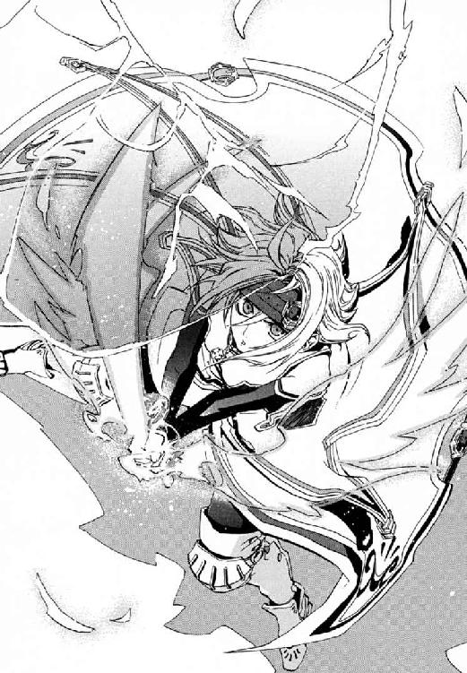
そしてアンゼロッタも、〝社会〟の大義を担う者としてためらわなかった。
「元上級聖騎士エレオノール・ナガン、あなたを異端者として破門します」
きずなが仁の体にしがみついてきた。ぼろぼろ涙をこぼしながら彼をかき抱いたきずなを、同い年の歌姫がやさしく見おろした。
エレオノールにできて、仁には決して手の届かなかった奇蹟が、もうひとつあった。
神音魔術では、位置移動は、目的地の神音をかなでるだけの手軽な魔法にすぎない。
†
かくて、機械化聖騎士師団と魔導師公館のはじめての戦闘は終わった。
だが事務官十崎京香にとっては、その後こそが本当の修羅場だった。警察は、多額の予算と人員を使って出動したが成果をあげられなかった。だから、それを要請した《公館》が強烈な突き上げを食らうのは当然のことだった。ほとんど査問会のような会議が終わると、もう日が落ちていた。
京香は、公館本館に戻った後、次への対策を立てねばならなかった。今度の敵の戦力をもってすれば、《公館》を陥落させることはたやすいからだ。今回、アンゼロッタが最後に目撃された住宅街では、夜八時近くになってもまだ多数のパトカーが出動していた。多くの近隣住民が聖騎士の戦闘を目撃して通報したため、警察も無視できなくなったのだ。
ただし戦闘の痕跡は血痕や道路の傷ばかりで、死体は発見されていなかった。
「今回の戦闘での死者は、神聖騎士団がすくなくとも二十名、魔導師公館側は四十八名でした。我々の側の死者は、こちらで回収できたものが十五名、神聖騎士団から送りつけられてきたものが三十三名でした。敵に脅威を与える作戦目標は達成できなかったため、敗戦と評価するのが妥当でしょう」
京香は、米軍基地からトラックで運ばれてきた死体をすべて確認した。神聖騎士団側には、戦闘の後始末をする余力があったのだ。
会議室にやってきた京香は、最初に戦果報告をした。とはいえ、本来それを聞くべき魔導師公館幹部は、窓のない会議室にいなかった。いつ陥落してもおかしくない公館本館から、彼らがまっさきに逃げたのだ。
だから、出席者は京香にとってなじみの面々だけだった。
最初に目に付いたのは、大小の刀をパイプ椅子の脇に立てかけた剣客だった。さっぱりした秋物の着物に、紺色の袴を穿いていた。髪は落ち着いた総髪にして茶筅に結んでいる。
「虎坂井めは役に立ったか」
《鬼火》東郷永光は、十八年間専任係官を勤め上げた重鎮だ。今回の魔導師公館側の戦果も、半分は東郷たちがあげたものだ。
京香が思い返しても、刻印魔導師の少年の仕事に異論はなかった。
「運転は丁寧でしたし、きちんと働いてくれました」
「東郷君のところの刻印魔導師は、私の言うことを無視する傾向があるな」
不平を漏らしたのは、指揮車両でも彼女の隣で助言者をしてくれていた溝呂木京也だ。魔法学者は、虎坂井レイがアンゼロッタのデータ収集に協力しなかったことを根に持っていた。
「それならば、己のせいだな。手下どもには十崎に従えと命じておいた」
瞑目したまま、東郷が快活に笑った。彼の目にはほとんど視力がない。それでも、専任係官の中心は、やはり彼なのだ。
戦況は、ささいな失策ひとつで全滅しかねないところまで傾いていた。
「今回の敗戦をふまえて、機械化聖騎士師団とこれからどう戦うかですが」
東郷が即答した。
「頭を殺るしかあるまいよ」
京香も考えた可能性のひとつだった。神聖騎士団五千に対して、魔導師公館の戦力はわずか十分の一にすぎない。正面からぶつかれない以上、指揮官をつぶすのは定石だった。だが、問題はまさにその聖騎士将軍だった。
「......アンゼロッタ・ユーディナですね」
東郷の問いは、要点だけを切りとる。
「その女、強いか」
溝呂木が、興奮に鼻息も荒く割りこんだ。
「強いかだと？ ことばどおりに〝別次元〟だ」
「それではわからん、阿呆め。地に足をつけろ」
東郷と溝呂木は付き合いが長い。だから、ことばの応酬に遠慮がない。
「神音魔導師はだな、魔法を一流れの魔法的な手続きとして使っていたのだよ。たとえば百個の音符を聞く魔法なら、順繰りに五分も十分もかけて百個を聞いて発動する。これが神音魔術の難易度の高さにつながっていた。要するに、強力な魔法を発動させるには、ゆるぎない感覚と集中力が要求された。伝統的な強い聖騎士は、全員このふたつの才能に恵まれていたわけだ」
そして、溝呂木はノートパソコンを操作した。会議室の古い壁面に、血の海に四肢が散乱した、三人分の死体が投影された。今日アンゼロッタが魔法を使った場所で撮影された、現場検証写真だった。
「アンゼロッタの速度と手数は、順繰りに音符を聞いて魔法を発動しているのでは説明がつかない。彼女は、複数の魔法的手続きを並行しているのだ」
京香は、スーパーのビルの屋上の検証写真を目にして、腹の底が熱くなった。ここで犠牲になった偵察班は、地下都市の住民たちで家庭や子どもがある者もいたのだ。
「複数の魔法手続きを並行......ですか？」
「複数の魔法手続きの並行とは、こういうものだと考えたまえ。つまり、魔法を発動するために百個の音符を聞きたいとき、まずは百個を二十音符ずつ五つの音源に割り振るのだ。この五つの音源を同時に聞いて魔法を発動させられれば、時間は五分の一ですむわけだ」
それは京香にとってもはじめて聞くほど、単純だが次元のちがう技術だった。
「そんなことが可能なのですか？」
「理論上は可能だと考えられていた。実例は確認されていなかったがね。だが現実に、アンゼロッタはやってのけた」
スーパー屋上の偵察班を皆殺しにしたとき、どのような魔法が発動したかの予測が続いて表示された。あのときアンゼロッタは、強力な大気の爆発を作る攻撃用魔術と、周囲から魔法消去を受ける前に爆発自体を転送する魔法と、高度な照準魔術の三つを同時に発動させたのだ。
「アンゼロッタ・ユーディナは、もっとも素速くもっとも多数の魔法を同時に使い！ そして、もっとも複雑な魔法を、単純な記述の複数かけあわせで記述できる！ 《公館》が知るあらゆる聖騎士と〝次元がちがうのだ〟。《至高の人》とはよく言ったものだ」
溝呂木は、歓喜に崩れてしまいそうな満面の笑みを浮かべた。その最高の魔導師に手下を何人も潰された東郷を中心に、暗い会議室は緊張した。
「超高位魔導師との無粋な戦いかたなら、東郷君のほうが心得ているだろう。相性の悪い魔法使いを探すか、魔法消去を利用するか以外に勝機はない。より具体的な方法──」
溝呂木が、短髪の頭を搔いた。彼の頰は興奮に上気していた。
「──確かなものなどないのだ！ まったく未知の存在に、対策など立つか？ その質問は、正体もわからない異星人の殺しかたを聞いているようなものだ」
会議は、溝呂木だけが止まらない様子でしゃべりまくり、京香たちが重々しい沈黙でこたえる場になっていた。
「十崎君。もっと戦闘を起こせないものか。我々は、彼女の実力の片鱗しか見ていないのだ。複数魔法手続きの騎士の潜在能力は、他の単独魔法手続きの騎士とは別次元だというのに！」
「溝呂木さんは、《神に近き者》グレンが現れたときより興奮されていますね」
「十崎君、わからないかね？ グレン・アザレイは魔法史に残る天才だった。だが、グレンに続く者など現れない。あれは芸術分野の真の天才と同じだ。誰も継承者になれない。
だがアンゼロッタはちがう。神音魔術のマルチタスク化は、一代の天才の奇蹟ではない。彼女は、ニュートン、アインシュタイン、......最高級に優秀な科学者にたとえるべきだ。巨大な〝知〟の潮流があって、画期的な業績がうまれている」
京香は、昼からの疲れが倍になって重くのしかかってくるのを感じていた。
「複数の神音を同時に聞き取ることは、十分、特殊な才能なように思えますが」
「規格外だったグレンに比べれば、アンゼロッタの才能はシンプルでありふれたものだ。だから重要なのだ」
魔法学者は、明日が待ち遠しくてたまらないとばかりに何度も両手を打ち鳴らした。
「今は、ひとりの不世出の才能が到達したにすぎない。だが、百年後の聖騎士は、アンゼロッタのように複数神音を聞き分けるのが常識かもしれん。機械化聖騎士師団は、百年後への投資として基礎研究を積みあげているのだ」
京香は、アンゼロッタを語る溝呂木が誇らしげなことに寒気がしてきた。
敵は、魔法史に残る偉人だった。魔法の技量を比べれば、酸素分子すら操った《神に近き者》グレンが上に思えた。だが、それでも京香にとって本当に絶望的な状況は今だった。
「正直なところ、私は恐怖を感じています。英雄グレンの戦いは、〝個人〟の孤独なものでした。だから勝てました。アンゼロッタの背後には、神音世界の〝社会〟があります」
「私は歴史は専門ではないが、社会を動かすカリスマは珍しくあるまい。ナポレオンしかり、ヒトラーしかりだ。魔法使いの歴史にもカリスマくらい出るだろう。《賢者の石》は、魔法世界の歴史が変わった分岐点に現れるのだしな」
十崎京香は、会議で弱音を吐くのははじめてだと思った。
「忘れていませんか、溝呂木さん。この会議の議題は、その魔法世界のナポレオンやヒトラーと魔導師公館がどう戦うかですよ」
確実に踏みつぶされるという常識通りの結論では、意味がなかった。
京香たちは今日の大打撃で、簡単には動きが取れなくなっていた。
聖騎士の第一目標は《賢者の石》だと考えられた。アンゼロッタが重視していたのは倉本きずなで、すくなくとも戦闘が主目的ではなかった。だが、《協会》と連携できていない京香たちを、隙あらば潰しておくつもりなことも明確だった。
「これから魔導師公館が選ぶ選択肢は、ふたつあります。ひとつは、私たちが先に《賢者の石》を奪って政治で問題を解決することです」
《賢者の石》に未練がある溝呂木が、唾を飛ばして反論した。
「《賢者の石》をくれてやるかわりに、神聖騎士団に見逃してくれと頼むのかね。ナンセンスだ」
京香は言わなかった。政治的解決とは、彼女たちが神聖騎士団と和解できるということだ。神聖騎士団は《協会》と宿敵同士だ。だが、魔導師公館と《協会》の関係は切れた。そして京香たちの最大の関心事は日本の治安だった。逆に聖騎士たちと日本政府が結んで、《協会》と戦う未来もあり得るほど、事態は流動的だった。
「ふたつめの選択肢は、公館本館を守ることに専念することです」
こちらは地の利と情報力で《公館》が上回っているつもりだった時期に、もっとも妥当だと考えていた道だった。アンゼロッタたちが短期決戦を意図しているのは間違いなかった。神聖騎士団はいつも在日米軍基地を間借りして活動する。だが、五千人は、在日米軍司令部のある横田基地全体ではたらく軍職員の数より多い。時間的制約は強いはずだった。
「守っている間に、私たちは────────」
不意に、彼女に、来なくてよい理解がおとずれた。京香は、感情を離れた冷静さを取り戻してしまったのだ。
武原仁をきずなと一緒に見捨てる理由はなかったのだ。十崎家に預かったときから、きずなが最終的に聖騎士から逃げられないとわかっていた。そして、そのときやってくる聖騎士集団が仁の手に負えないことも明白だった。つまり、最初から仁以外の囮要員を京香は用意していなければならなかったのだ。
京香は、目を閉じ、人差し指で机をコツコツとたたいた。それは、彼女の、落ち着きたいときの癖だった。
「公館本館を陥落させられては、我々の治安機関としての面目は丸つぶれです。ですが、ここに隠れて震えていても職責は果たせません」
彼女のまぶたの奥が、熱くなった。京香は、無様になるなと惰弱を叱った。溝呂木も東郷も、かつて専任係官のまとめ役をしていた父、十崎理五郎の仕事仲間だった。京香は、泣けば殉職した理五郎の娘だと見られ、対等にあつかわれなくなる。
「だからこれは、守りつつ別働隊を出してアンゼロッタを暗殺する選択肢です。基本は、グレンと戦ったときにやったのと同じです」
──だが、今度は誰が〝それ〟をやるのかと。
彼女の細い骨身を失敗の重さがきしませた。機械化聖騎士師団に守られたアンゼロッタは、魔法使いには強敵すぎ、機動力がない悪鬼では接近も難しかった。
頼みの綱は、《沈黙》武原仁による魔法消去を利用したライフル狙撃だった。
この戦いは、緒戦で押し負ければ暗殺くらいしか手がなくなるほど劣勢だった。なのに京香は、もっとも暗殺向きの人員を捨ててしまった。全裸の魔法使いよりも、カネを出して雇うならあの幼なじみだった。その選択は、他の専任係官への道義的な裏切りだった。が、《公館》の鉄の女のやり口は、無節操なそちらだった。
小娘のように感傷に振り回されて、京香は窮地を生き残るため必要な駒を浪費したのだ。
仁ときずなの消息は不明だった。だが、エレオノール・ナガンが交戦地点近くで発見されていた。生きていれば、携帯電話が繫がるはずだった。冷静なつもりでとっくに暗記している電話番号を入力し、彼女の指は凍りついた。
京香は、妥当な決定をしてきたつもりだった。だが、仁のまわりでだけちぐはぐだった。矛盾の理由を整理しようとした。この三年間、忘れたことなどなかった記憶が苦痛をともなって浮かびあがった。
薄暗い会議室で人命の使い道を考えている胸の奥に、汚泥のような闇があった。彼女自身の理不尽の先に、なお暗い〝悪〟を覗いて、体まで芯から冷えた。
「どうしたのかね、十崎君」
溝呂木に声をかけられても、京香は携帯画面のほのかな明かりをじっと見ていた。彼女と溝呂木と東郷永光、会議室には、失敗を魔法に操られたせいにできない《悪鬼》だけがいた。
「申し訳ありませんが、方針を決める前に、十五分だけ時間をいただけませんか。考えを整理させてください」
京香の声も唇も、ひどく震えていた。
部屋が寒かった。責任ある身としては吞みこむべき個人的な心情が、彼女をさいなんだ。武原仁は最後まで〝京香姉ちゃん〟を信じていたのだと、京香は知っていた。無性にビールが吞みたくなった。
†
夕方の赤すぎる太陽の輝きが、十崎家の居間を染めていた。室内は余すところなくまっ赤だった。
仁は、煮立った蒸気の中を歩いているかのような息苦しさにさいなまれていた。
髪の長い女性が、仁を見あげていた。ほんの数時間前に別れたばかりだった彼女が、鼻声でたずねた。
「仁ちゃん、......こういうとき、私、警察を呼んでいいの？」
頰の輪郭が若い大学四年生の十崎京香が、そこにいた。彼女は眼鏡をかけていなかった。自信にあふれていたその瞳が、理不尽な暴力にさらされて恐怖に揺れていた。
仁たち兄妹が何度も遊びに来た十崎家の食卓は、赤黒い血にまみれていた。
彼には、これが悪夢だと認識できた。何度もやり直したいと思った記憶だったからだ。三年前の神聖騎士団の侵攻で、京香の父、事務官十崎理五郎は殉職した。
京香姉ちゃんは、掘りごたつのテーブルに腰掛けていた。行儀にうるさかった幼なじみが、すべてがどうでもよくなった様子で呆けていた。
あこがれだった彼女に正しいことばをかけられたら、現実が変わる気がした。明晰夢の中で、都合のよい台詞など出なかった。だから、彼自身のふがいなさをもう一度刻まれるように、事実どおりに悪夢は進行した。気が狂いそうな怒りに、また振り回された。
この夢はいつも、翌年の春、魔導師公館に入庁した十崎京香との再会で終わる。武原仁は、大事に思うものをいつも守れていない。
そして仁は、目を覚ました。
口の中が乾いて、だ液がねばついていた。骨も肉も痛んで、体中が苦い汁を吸ったスポンジになったようだ。視界いっぱいに汚れた天井が広がっていて、今、彼が仰向けに寝ているのだとわかった。
「......なんでいつもこんななんだ」
仁はもう一度目を閉じた。まぶたの奥に、熱いものがこみあげてきた。もう一度眠りたかった。現実を見たくないからでも、次のつらいことにぶち当たりたくないからでもなかった。夢の中では、彼は何の責任も負っていないからだ。
「武原さん。......起きましたか。だいじょうぶですか？ 痛いところ、ないですか？」
だが、彼の耳は、くすぐるようなやさしい声を聞いた。
まぶたを開けると、倉本きずなが泣きそうな顔で彼を見おろしていた。仁が守らねばならないものがここにあった。だから、まずは彼女の無事をよろこんだ。
「助かったんだな。よかったよ」
蛍光灯の白い光が、室内を照らしていた。心配そうな彼女の姿を目におさめていたら、仁までもらい泣きしそうだった。だから、彼はもう一度まぶたを閉じた。仁の額に、冷たいものが触れた。きずなが、濡れたタオルで額をふいてくれていた。
「武原さんのおかげです。それと、......あの、......エレオノールさんが」
薄いまぶたに電灯の光が血の赤に透けた。横になって休んだまま、構ってもらえることが心地よかった。体の痛みや苦しさに年齢は関係ない。だから、仁は暗い世界で子どもに戻ったような気になった。
きずなが、ひんやりしたタオルで首筋をぬぐってくれた。
「でも、あぶないことしないでください。武原さんは、もうやめたんですから、あんなことをしないでいいんです」
彼女にも、狙われているのは彼女自身だと理解できているはずだった。それでも枕元に正座した母親の小言を聞いているようだった。ひどく心地よかった。
目を開けた仁の視界はきずなで埋め尽くされていた。母性に甘えたくなる豊かな胸と、胴から腰へ流れる魅力的な曲線に追随しきれない服のしわをぼんやり眺めていた。栗色の髪も夜の闇と同じ濃紺の瞳も、すべてが大切なものに見えた。
「武原さんって、いやらしいこと考えてるとき、すぐにわかりますね。わたしじゃなかったらふつう怒りますよ」
ふと、きずなが将来どんな女性になるだろうと思った。悪夢のせいか、高校時代の京香も仁を心配して《公館》を辞めさせようとしていたのを思い出したのだ。
「京香姉ちゃんはどうしてるかな。機械化聖騎士師団と戦闘状態になって、一番あやうい立場なのは京香姉ちゃんなんだ」
三年前の侵攻で、同じ専任係官のまとめ役だった十崎理五郎は死んだ。
目の上にぽすんと冷たいものが落ちてきた。きずなにぬれタオルで目隠しされたのだ。
「どうしてあそこまでされて、まだ十崎さんの心配をするんですか？」
怒っている様子が、仁にはひどくかわいらしく感じられた。きずなにしあわせになってほしいと思った。だから、ようやく未来のことに考えが及んだ。計画は何もなかった。
「心配だよ。メイゼルのことも、きずなちゃんの高校のことも、俺の教師業のことも、不安なことばっかりだしな」
仁は、軽口が自虐の色を帯びているのが嫌になった。疲れと先の見えなさこそ、〝個人〟が巻きこまれる戦いの最悪の要素だった。敵が、絶望するほかないくらいどこまでも巨大に見えた。たったひとり、欲のための神聖騎士団を手玉に取ろうとした慈雄は、どのくらい不安だったろうと思った。
仁は、情けないところを見せられなくて体を起こした。横になっていたら、いつまでもずるずる甘え続けそうで恐かったのだ。
「ここはどこだ？ 家に連れてきてくれたのか？」
「ようやく私がいるのに気付きましたか。《沈黙》よ、弱くなりましたね」
背後から、鈴を鳴らしたような澄んだ声が投げかけられた。
振り返ると、褪せた金髪をカチューシャで留めた少女がいた。エレオノールは、白いラインの入った赤いジャージの上下だった。その部屋着が予想外に普通だったから、仁は、本当にひとまず仕切り直しなのだとほっとした。
「悪いな。助けられた」
この神聖騎士団を放逐された歌姫が、移動魔術で戦場から逃がしてくれた。きずなが仁に駆け寄れる隙もエレオノールが作ってくれた。あきらめた彼を救ってくれたのも彼女だった。
「しっかりしてください。あのとき、魔法的転移がしやすいよう再演の魔女を引っ張ってくるのは、あなたの役目でした」
仁は、人の情けに感謝した。
「俺たちだけじゃ、完全に死んでたな」
六畳一間の、悪く言えば家賃の安そうな部屋だった。玄関へ行くせまい廊下の、右側には流し台が、左側にはトイレがあった。畳は、日に焼けて黄色っぽく退色していた。壁紙は古い煙草のやにでべったり黄ばんでいた。
「ここがおまえの家か。よかったよ。あれから、ちゃんと生活できてたんだな」
八月に地下都市で別れて以来、二ヶ月だった。不法入国者同然の放浪者には長すぎる時間を生き抜いた歌姫は、祈りのかたちに指を組んだ。
「出会った人への尊敬と感謝を忘れなければ、皆さん親切にしてくださいます。騎士団にいたときとはまたちがう、学ぶことの多い毎日です」
「死にに来るようなものだったはずだ。なんで助けてくれたんだ」
エレオノールは、仁が切なくなるほどに真摯で不器用な信仰者のままだった。
「来るべき時が来ただけのことです。私は、生命のために戦うと誓いを立てました。生命と尊厳を守る戦いは、敵を選べません」
「何をたくらんでいるんですか？ どうせあの人たち同士の、仲間割れじゃないんですか」
仁を介抱してくれていたきずなが、怒りを露わにしていた。神聖騎士団が倉本慈雄を追い詰めたことを、きずなは忘れていない。
「......その通りです。私の戦いは神聖騎士団をただすための、百万騎対一騎の仲間割れです」
空気が張り詰めていた。
そのどうしようもない緊張を突き崩すように、ドアをノックする音が響いた。エレオノールがアパートの玄関へと向かってしまった。
仁は、動かない体で這いずって壁の陰に隠れ、様子をうかがった。訪問者はプラスチック容器を持った褐色の肌の中年男性だった。
「食ベテ、食ベテ、コレ、スゴクオイシイ」
「ありがとうございます。いつもいつも、感謝いたします」
「イイヨイイヨ」
エレオノールの腕や首には、三度までいった生々しい火傷の痕が残っている。その若さと傷のせいか、彼女は相当訳ありだと思われている様子だった。
仁は、訥々とした片言の日本語が胸に響いて、胸になつかしい熱がこみあげた。男は海外から出稼ぎに来た労働者のようだった。この部屋を取り巻く、貧しさに付きまとう汚さと場末感が、美しい調和をもって五感に訴えてきた。
緑色のふたをした容器を持って、エレオノールが仁たちのいるほうへ戻ってきた。
「彼はブラジルから働きに出てきたばかりで、ポルトガル語以外は上手ではないのです」
拾ってきたような古い折りたたみテーブルに、食欲をそそる香りが漏れる容器が置かれた。それだけで、ぎすぎすした部屋に食卓の空気がやってきた。
十崎家でも武原家でも食卓を作ってくれたきずなが、ため息をついた。
「うちのアパートにも、昔、ごはんのおかずを届けてくれるおばちゃんがいたんです」
彼女の言うアパートとは、父と暮らした部屋のことだ。仁もエレオノールもそこに踏みこむ資格がなかった。
「わたしのお父さん、トラックの運転手で、だから何日も帰ってこなくてひとりでお留守番してることが多かったんです。だから、食べるものがお弁当屋さんとかコンビニで買ってきたものばっかりで。だから、心配してくれて、料理のしかたとかも教えてくれたりして」
「そっか、きずなちゃんにも料理の先生がいたんだな」
仁は、この部屋のなつかしい貧しさが胸に甘くしみた。部屋にただよう生活の匂いは、彼の思い出と似ていた。仁の両親は、彼が中学生だったころ失踪した。そして、妹の舞花とふたりでは生活できないから、十崎京香の両親に何度も料理を差し入れてもらっていた。
全員が、隣人に食べ物をもらった経験があった。そういうかたちで人の情を知っていた。
「人とは、生命とは、あたたかいものですね。私は、どれほど多くを見逃してきたかを日々、省みています」
エレオノールが容器のフタを開けた。缶詰らしい黒豆の煮込みに、ベーコンとにんにくとタマネギを炒めたものを入れて煮ただけの簡単なシチュウだった。
「これは三人でわけやすいものをいただきましたね。みんなで食べましょう」
差し入れは、エレオノールひとりなら一日くらいは食卓を彩ってくれた量だった。けれど、みんなで分けると一晩で食べきってしまうのはわかりきっていた。
「ありがとう。俺たちも遠慮せずいただこうか、きずなちゃん」
「......それなら、食べさせてもらいます」
部屋の明かりは、仁のアパートよりも蛍光灯が古くて暗かった。それでも奇妙に暖かかった。
仁にとって、戦いとは〝家〟と戦場を行き来するものだった。帰るべき場所が完全に失われたのははじめてだった。何もかもがこれまでとは変わった。だが、今夜の彼らはまだ生きていた。だからこそ、明日のことを考えて途方に暮れた。
呆けている彼の顔を、きずなが心配そうに覗き込んできた。
「武原さん、ごはん食べられそうですか」
「だいじょうぶだよ。このくらい、気合いでなんとかなる」
「大丈夫なわけないじゃないですか。六時間くらいずっと気絶してたんですよ。......痛いですよね。ごめんなさい、わたしの魔法じゃ治せなくて」
仁の擦り傷や打撲を、きずなはどうしようもない。それも再演大系の限界だった。再演大系はあくまで《他人を動かす魔法》だ。だから、操られる犠牲者がいないと一転して不便になる。再演魔術は、魔法消去能力を持つこの世界の住人を操れない。エレオノールの神音魔術は、魔法で失った身体を補う人工器官を作る重症の治癒が中心だ。仁の打撲を治す手段はない。
「どうにもならないことなんて、いくらでもある。こんなときは痛みが引くまでガマンすればいいんだ」
仁も、アンゼロッタたちに完敗して、この先勝てる方策すらない身だった。きずなを取り巻いている問題は、どこかで神聖騎士団を打ち破らなければ解決できないのにだ。
よいことを考えついたとばかりに、きずなの表情がぱっと明るくなった。
「メイゼルちゃんを呼びましょう。こんなときだから、メイゼルちゃん、助けてくれると思うんです」
仁の血の気が引いた。彼が保護者としてやってきたことが、あの誇り高い少女の重荷になったらすべて瓦解すると嫌悪すらわいた。
「それだけはやめよう。こんなせっぱ詰まった状態で戦列から引き抜いたら、刻印魔導師は《公館》に処分される」
「でも、メイゼルちゃんもここに来たいんじゃないかと思うんです」
きずなの主張は、彼らの都合のためメイゼルに命をかけさせようということだ。きずなは人の痛みのわかる女の子だったから、仁は絶句した。そして、どうしようもない納得がおとずれた。追い詰められているのは仁だけではなかった。事態の張本人であるきずなは、最近までただの女子高生だったのだ。
アンゼロッタと次に戦えば確実に死ぬと、本能も経験も告げていた。だが、仁は他に何もできないから笑った。
「きずなちゃんは俺が守るよ。安心していいよ。......こわいことなんかないんだ」
今日で、仁たちを取り巻く何もかもが〝変わった〟。だが、問題の根っこはまったく解決していない。だが、変わることは悪いことばかりではないとばかりに、広い世界に出たエレオノールが、生き生きとした微笑みを見せた。
「こわいのは私も同じです。けれど、恥じることではありません。そのおそれもまた、生命からうまれるもの。神意にかなって尊いのです」
かつて神意に透明だと称された人形のような聖騎士は、もういなかった。
外は冷たい風の吹く秋の夜だ。だが、この部屋にはぽっかりと、暖かいのか寒いのかわからないほのかなぬくもりがあった。
そして幾多の傷と痛みを背負ったエレオノールが、前に進めない彼らの背を力強く押した。
「さあ、明日を生きるために、今晩のご飯を食べましょう」
鴉木メイゼルは、冷たい風に吹かれていた。秋の夜の予想以上の寒さに、彼女はひとり凍えていた。
エレオノールが住むアパートは、武原仁の住むそこよりさらにぼろっちかった。だが、窓の外からメイゼルが覗く部屋の中はあたたかそうだった。シチュウを囲んで、仁たちが楽しそうにしていた。
彼女のせんせが、おいしそうにご飯を食べていた。倉本きずなが、楽しそうだった。エレオノールもいた。昨晩は仁とメイゼルときずなでご飯を囲んだのに、今晩の食卓は彼女から遠かった。
もう夜の九時を回っていた。ちいさなメイゼルはエレオノールのアパートのすぐそばの民家の屋根に座っていた。幼い刻印魔導師がこんな夜にひとり屋根にいたのは、監督者である神和瑞希から仁たちの監視を命じられたからだ。
肌寒い夜風になびいてほどけそうなリボンを指でもてあそんだ。忍び足で夜歩く猫のほか、ちいさな魔女に気付く者はなかった。
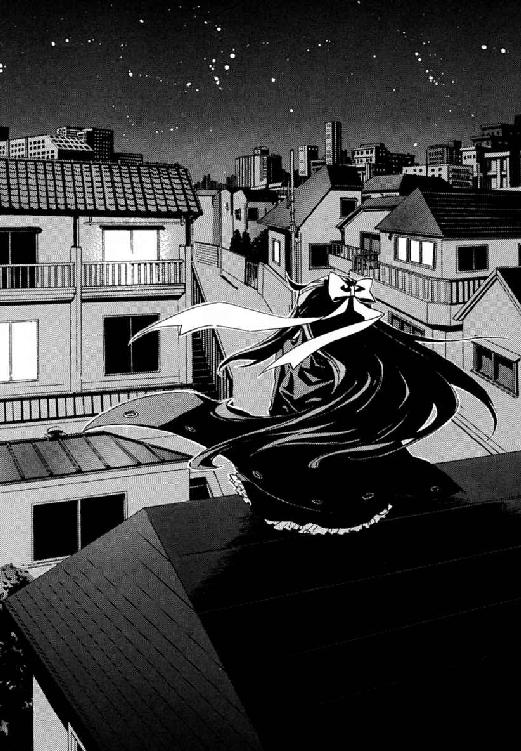
「バカみたいだわ。あたし、何してるのかしら」
メイゼルは、盗み聞きをしながら彼女自身に腹が立った。彼女が使う円環大系は、回転や振動のような周期運動するものをあやつる魔法だ。その魔法で、エレオノールの部屋の窓に微弱なレーザー光を当てていたのだ。声で震える窓ガラスの微細振動を計測し、それを音に変換して中の会話を盗聴していた。室内の人間が魔法消去さえしていなければ、彼女の腕前ならこのくらいの芸当はたやすい。
ちいさな魔女は、神和瑞希がどんなつもりできずなを監視させているか知らなかった。《魔獣使い》に管理されるようになって、彼女が知ったことがある。神和家の人間は、頭は悪いが狩人としては天才だ。最高の狩人は、狩りの日でなくても常に大量の情報を集めている。エレオノールのすみかを把握していたこともその一つだ。魔導師公館よりも、神和家の情報網のほうが優秀なのだ。
瑞希に命じられる、暗いところで凍えながらコソコソする仕事は性に合わなかった。それでも小さな魔女は、今夜だけはバカバカしい仕事を止められない気がした。
メイゼルは、散歩中の黒猫を指で呼んだ。彼女の耳に、エレオノールの部屋の声が届いた。
〈メイゼルちゃんに、わたしから電話しましょうか？〉
きずなの声だった。
メイゼルを、すべてを捨てても取り戻したい衝動が襲った。
エレオノールのアパートのドアをたたいて、顔を出すだけだ。それだけで、昨日までのしあわせをまた手に入れられた。それは、きずなを心配している神和瑞希の望みでもあった。《魔獣使い》は、メイゼルが仁たちに合流すると読んで、彼女を監視任務に出した。メイゼルが合流すれば、いつでも倉本きずなを捕捉できるからだ。そして、円環大系の使い勝手のよい位置移動魔術があれば、聖騎士に追い詰められる危険も減る。
けれど、ゆっくりと体も心もおとなになりつつある彼女は、そうできなかった。
「甘く見ないでほしいわ。ただでも、キョウカが知りたがってそうな情報を隠してるのよ。あたしが裏切ってせんせのところに行ったら、キョウカだって傷つくもの。《魔獣使い》は、あたしも義理を知ってるしガマンもできるって、わかってないのかしら」
窓の向こうの室内で、傷付いた仁ときずなが談笑していた。
刻印魔導師として、メイゼルは誇り高く死へと飛び込めるつもりだった。けれど、きずなと仁が仲が良さそうにしている声を聞くと、寂しくてこわかった。
「せんせ、専任係官をやめて、もう刻印魔導師と監督者の関係じゃないのにいっしょだったのよ。誰だって期待くらいするわ。なのに、あたしがいなくてもそんなにたのしそうって、ひどくない？ まるで、あたしの居場所がないみたいじゃない」
きずなが彼女の先生のそばにいると、はじめての「好き」が暴れて耐えられなかった。いつも助けられているのが嫌で、強くなりたかった。けれど、今は、彼女がまだおとなではないことが、わけもわからないくらい悲しかった。
「きずなは、ずるいわ。あたしよりおとなだってわかってるから、せんせに、子どもっぽく甘えられるんだもの」
メイゼルは、誰にも聞こえないから、苦く酸っぱい気持ちをことばにしてみた。それも子どもの目線だと、ちいさな魔女は気付かなかった。
「ねえ、せんせは、あたしときずなと、最後にはどっちをえらぶの？」
薄寒い夜の底でメイゼルは震えた。彼女のせんせは、場当たり的に目の前のものを助けようとする。けれどメイゼルときずなの片方しか絶対に救えないなら、どちらを選ぶのだろうと。
まさに同じとき、ふたりの少女は、同じ問いを胸に抱えていた。
倉本きずなは、エレオノールの部屋の食卓で、残り少なくなったシチュウをながめていた。
もうすぐ、みんな晩ご飯を食べ終わる。そうしたら今夜はもうすることがなくなる。洗い物をして、すこし話をしたら寝るしかなくなる。楽しい時間は終わって、また過酷な明日がはじまるのだ。
武原仁は、全身あざだらけで、顔もぼこぼこに腫らしていた。口の中も切れている様子で、豆のシチュウをおそるおそるすすっては顔をしかめていた。
だからきずなは、もう一度、仁にたずねた。
「本当に、メイゼルちゃんに電話しなくていいんですか」
「いいんだよ。俺が連絡をとったら、なんか危ないことをしそうだ。メイゼルは組織向きじゃないっていうか、ひとりで見境なく動くほうだからなあ......」
彼の口からメイゼルに電話をかけないと聞くと、ほっとした。きずなは、武原仁が彼女とメイゼルのどちらかしか救えないと知っていた。メイゼルも、たぶん彼女と同じことを知っていた。ただひとり、何もかも助けられるつもりでいる仁が、疑いのない無造作な手つきでスラックスのポケットに指をつっこんだ。
「それに、俺の携帯、昼間の戦闘のとき落としたみたいだしな」
きずなは制服のスカートを押さえていた。彼が落としたと言った携帯電話は、彼女のスカートのポケットの中だからだ。
「ほら、武原さん。電話がなくなったのは、きっと、もう危ないことしちゃダメってことなんですよ」
だがきずなは自然に噓で返した。仁が意識を取り戻すしばらく前に、彼の携帯電話に電話がかかってきたのだ。液晶画面の表示で、それが十崎京香からのものだとわかった。だからきずなは、電源を切って自分のスカートに隠した。
彼女の好きな人は、昼間死にかけたばかりなのに困った顔をした。
「でもな、大事な連絡が入ってるかもしれないだろ。きずなちゃんも、どこかで見つけたら教えてくれ。《公館》だって昼間はやばかったはずなんだ」
「『でも』じゃありません。武原さんは、わたしに心配するなって言うんですか」
きずなは食べかけのシチュウが本当におなかに入らなくなって、スプーンを置いた。
「きずなちゃん。本当にごめんな。でも、こんなときだから俺にできることが何かあるはずなんだ。俺のほうから声をかけれた義理じゃないけど、京香姉ちゃんが必要としてるなら、手は貸してやりたいんだ」
仁に名前を呼ばれるたびうれしくて、手放したくないと体の芯が熱くなった。出会ったときから、きずなは、不安になると彼のそばにいたくなる。抱きつきたいような甘さが、豊かな胸の奥で暴れていた。ずるいと知っていて、父の話まで持ち出していた。
「お父さんのことも、武原さんがいたから耐えられたんです。武原さんがいなくなったら、わたし、どうしたらいいんですか？ いつまでもいっしょにいてほしいって、思っちゃいけないんですか」
エレオノールは終始無言だった。
夜の親密さと罪のやましさが、彼女に本音を口走らせた。
「もうそういうお仕事じゃないんですから。戦うのはおしまいにして、逃げませんか」
「きずなちゃん？」
きずなは、仁の赤みがかった髪や苦労がしみついたおだやかな瞳をじっと見た。彼女の父、倉本慈雄はもういない。けれど、武原仁はここにいた。彼はきずなを助けてくれた。彼女をいつでも見てくれた。
きずなの顔も体も熱かった。心臓が爆発しそうになっていた。それは彼女自身からしても本当にひどい告白だった。
「〝家〟がなくなったら、また作り直せばいいんです。......あの、......わたしと、いっしょに逃げませんか！ わたしもがんばりますからっ」
明くる朝、目覚めると空気はさわやかで、ベーコンの焦げるよい香りがした。
だから一瞬、昨日までと同じ一日がはじまったのかと錯覚してしまった。そして、仁のアパートよりせまい部屋と、物のない殺風景さで彼らの城ではないと気付いた。何よりもここには、クッションはじめ私物を持ちこみたがるメイゼルの匂いがなかった。
「......ああ、メイゼルどうしてるかな。......落ち着いたら連絡をとらないとな」
ぼんやりと、ちいさな魔女のことを考えた。三人暮らしからメイゼルひとりになってしまうあの部屋が無性に心配になった。
「メイゼルちゃんじゃなくてすみません」
きまずそうに、きずながおはようを言ってくれた。替えの服がないから制服のままだが、昨日の戦闘の土ぼこりは念入りに落とされていた。
仁は、布団がわりにかけていたジャケットを羽織りなおした。きずなにおはようを返す。彼女がロウテーブルにベーコンエッグの皿を並べる。
どこに行ってもきずなだけは変わらないかのようだった。だから、彼らの日々は完全に壊れたのに、まだ同じことを繰り返せると錯覚しそうになった。
きずなが、ゴミ捨て場から拾ってきたような古いテレビのスイッチを入れた。映りが悪いうえに赤色が強すぎるブラウン管に、朝のニュースが映っていた。
〈この閑静な住宅街で、突然の爆発、炎上騒ぎが発生したのです。なお、前後に多数の外国人風の男女が────〉
中年のレポーターが、見覚えのある住宅街を紹介していた。燃えあがったオートバイの残骸が撮影されていた。仁たちがアンゼロッタに打ち倒された交差点だった。
仁は、ノイズがひどすぎる画面から字幕を読み取ろうと、室内アンテナの位置を調整した。昨日の神聖騎士団との戦闘が、ニュースになっていた。報道では、夏の国城田事件と関係があると思われている様子だった。
「外に出るには着替えを買わないとな。ぼろぼろのカッコじゃ怪しすぎる」
仁はポケットを探って、財布があることを確認した。現金は五千円しかなかったが、銀行のキャッシュカードが心強かった。きずなは、不安そうにしながらも、知っている場所がテレビに出ていることに微妙に興奮していた。
「とりあえず、お金は大事にしたほうがよさそうですね」
仁は、メイゼルが心配だった。そして、京香姉ちゃんと古巣の《公館》のことも不安だった。本格的に窮地におちいって思い知っていた。仁にとって、魔導師公館にはあまりにも多くのものがあった。
「ところでエレオノールはどこなんだ？ 朝飯がふたりぶんしかないけど、いいのか？」
「あの、......はたらきに行っちゃいました。近所の肉屋さんで、コロッケとか揚げ物をつくるアルバイトをしてるんだそうです」
「あのエレオノールが、コロッケか──」
「お金をかせがないと、ごはんが食べられませんよ」
正論だった。
白いごはんとベーコンエッグの朝食は、十分とかからず食べ終わってしまった。旺盛な食欲が満たされると、すこししあわせな気分になった。
コンロにかかったやかんが沸騰して湯気をたてはじめた。きずなが、軽やかな足取りで流し台に向かった。急須をあたためていたお湯を湯飲みに移すと、手早くスプーンに三杯茶葉を入れてやかんの熱湯をつぎ直す。道具は日本茶用だが、紅茶のいれかただった。
「わたしにしてほしいことがあったら、何でも言ってください。わたし、今日は、いくらでもやさしくなれそうな気分なんです」
きずなの後ろ姿をぼんやり眺めていると、腹の底にくすぐったい熱が宿った。きずなは、逃げようと仁に誘った。昨晩の彼女の姿を思い起こすと、高校の制服の下の豊かな胸やお尻のまるみを意識して、どうしようもなかった。
彼女が仁へと振り返った。そして彼の表情を確かめると、頰を染めてくすくす笑った。
「きずなちゃん、どうかしたのか？」
「武原さんはわからなくていいんです」
この部屋にはお盆がないから、きずなが急須を直接持ってきた。それから湯のみをふたつ、流しにお湯を捨ててからテーブルに置いた。
彼女が、じっくり蒸らした紅茶を湯飲みに注いでくれた。紅茶の強い香りが居間に広がった。仁は、きずなと出会ってからの四ヶ月ほどの時間を思い返した。どうして彼女が好きになってくれたのか、いまだにわからなかった。
仁のことを全部お見通しのように、きずなが彼の瞳をじっと見ていた。
「最初は、前と同じように家のことをしてないと自分がダメになるって思っただけでした。でも、武原さんはお父さんとちがったんです。......家にいるとき、お父さんとはこんなに目が合うことないなって思って、そうしたら......えーとナニ言ってるんだろわたし」
「そんなによく目が合ってたか？」
「気付かなかったんですか。振り向いたりすると、武原さんがわたしのほうを見てて。......そうしたら、なんか安心できるようになってきて」
きずなの瞳は真夜中の空と同じ深い紺色をしている。仁は、砂糖を入れない紅茶を一口飲んだ。
「いつでも見守られてるのって、なんだかいいと思いませんか？」
やさしい時間が、紅茶の湯気に乗って流れていった。仁は、この穏やかな快適さが幻だと知っていた。薄皮一枚下の血肉のうずきを、もう隠しようがなかった。武原仁がきずなを注視していたのは、彼女の父を殺したことがバレないか怯えていたせいなのだ。
仁はきずなにほのかな好意を持っていた。だが、その根元をかたちづくるのは罪悪感だ。きずなは彼を好きだと言ってくれた。だが、スタートラインはこんな視線への誤解だった。きずなは、昨日までと同じように、ここでも暮らしを作ろうとしていた。だが、仁たちはエレオノールのすみかに、彼女に危険を押しつけながら居候している。この身で〝普通〟を求めるのは厚かましすぎた。
「それより問題はこれからだな。いつまでもエレオノールに迷惑になるわけにはいかない」
「ダメなんですか？ みんないっしょのほうが、心強いじゃないですか」
「俺たちは、エレオノールに助けてもらってひとつ借りを作ったんだ。けど、返せないのに借り続ける癖をつけたら、どんどん腐ってゆくよ」
仁と歌姫は、無償で命をかけてもらうほどの関係ではなかった。このまま居座ってよいなどということではあり得なかった。きずなは、目を丸くして、なぜそんなことを言うのかわからないとばかりに仁を凝視した。
「そんな水くさいこと、エレオノールさんは言わないと思います」
「けど、けじめはつけなきゃいけない。このまま甘え続けたら、俺たちを守ろうとしてエレオノールだって立場を悪くする。次は死ぬかもしれないんだ」
「みんなで力を合わせたほうが、絶対にいいじゃないですか！」
きずなはムキになっていた。大勢でいたいのは群れの本能であり、あたりまえの発想だった。きずなは、〝普通〟の女の子だからだ。誰もがメイゼルのように、ひとりでも誇り高い修羅道を選べるわけではない。エレオノールのような求道者の荒れ野へ踏みこむわけでもない。戦いはじめたころの仁自身も、覚悟など決まらなかったのだ。
「きずなちゃん。今度の相手は聖騎士だ。エレオノールと仲が良かった人だって、敵になって現れるかもしれない。それでも戦ってくれとは、俺は言えない」
「......はずかしいのはわかってます！ でも、わたしは、メイゼルちゃんみたいにはできないんです。......もうイヤなんです」
仁は、すがるような目を向けられて、ずしりと彼女の体重が肩にかかった気がした。きずなは、その強さもしたたかさもひっくるめて〝普通〟の女の子だった。慈雄はどうして彼女を野望の生贄にできたのだろうと、仁は奥歯を嚙みしめた。
──仁が見捨てたら、きずなはひとりきりになる。絶対にあってはならないと思った。
「きずなちゃんのことは、俺が守るよ」
倉本慈雄にできなかったことを、彼がやり抜いてやりたかった。テーブルはせまかったから、向かいに座っているきずなの手を簡単に握れた。彼女の指が震えていた。
「心配しなくていいんだ。俺は、きずなちゃんにいろいろもらった」
前に進めないこと自体が、この期に及んでは無責任だった。彼は、きずなを勇気づけてやるどころか、こんなにも心配させていた。
「......けれど、その前に、ひとつ......、大事な......、大事な話がある」
仁には、慈雄のことをもうこれ以上隠しておけなかった。仁が死ねば、きずなは父の死の真相を永遠に当事者から聞けなくなってしまうのだ。倉本慈雄は、歴史を変えるためきずなを利用した。三千年前の本物の《神の門》の召還儀式で死んだ女性騎士を救うためだ。そのために神人遺物である《幻影城》への扉をひらき、きずなを魔法儀式に巻きこんだ。仁は、どこから話そうか、締め付けるように痛む胃を押さえた。
「............聞いてくれ、大事な話があるんだ」
余裕などあるはずもないきずなに、この追い打ちはきつすぎるとわかっていた。慈雄に娘として育てられた女子高生が、思い切り声を張って返した。
「その話は、話しちゃったら武原さんがすっきりする話ですか？」
身勝手で想いの強い義父に、きずなは育てられた。そんなきずなも、ときどき感情の抑制がきかない。
「わたしの話はぜんぜん聞いてくれないのに、武原さんの話は聞かなきゃいけないんですか？ そんなの不公平です」
「聞くよ。本当にどんな話だって聞くから、俺に時間をくれ！」
「そうだ。《幻影城》へ逃げようよ。あそこなら、誰も入って来られないよ。あれは、神人が再演魔導師にって作ったんですよね」
仁は、決心したはずなのに血の気が引いた。《幻影城》は、歴史を改変するための舞台装置だ。バベル事件の中心は、この神人遺物ときずなだった。そして事件後、倉本慈雄の遺体は発見されていない。《幻影城》にそれが残っていたら、きずなは、腹に大穴が開いた父の死体と対面することになる。
「《幻影城》は危険すぎる。きずなちゃんが聞いた話だって、確かだって保証はない。だいたい、あんなものがあるから、きずなちゃんはあいつらに狙われたんだぞ」
「でも、あそこには、《鍵》を使うか、再演大系の魔法使いかでないと、自由に出入りできないですよ」
その巨大魔法遺物は、この世界の外側に繫留されている。だから、バベル事件では、《染血公主》ジェルヴェーヌ・ロッソがきずなに扉を開かせた。《鍵》は、現在《公館》が所持している。だが、神聖騎士団がそこへ行く手段を持っていないはずがなかった。メイゼルの円環魔術でも、よく知っている場所へはひとっ飛びだ。
「俺ときずなちゃんがあそこへ逃げこむことこそ、ワナかもしれない。《幻影城》と再演魔導師がそろえば、バベルと同じ再演をはじめられる」
「武原さんはどうして物事を悪いほうにばっかり考えるんですか」
新妻のようにかいがいしくはたらいてくれた彼女が、安定と安心にしがみつこうとしていた。仁に守ってやれるのは、女性心理ではなく身体の安全だけだ。だから、会話がまったくかみ合わなかった。
仁ときずなの関係は、昨日までと同じではなかった。これまでも、お互いの価値観は食い違い続けていた。ただ今日は、譲り合えなかった。
神聖騎士団を追い返して、仁のアパートでの暮らしに戻れれば、きずなを安心させてやれた。問題は、アンゼロッタを仁の力では斃せないことだ。
部屋の空気が水っぽくぬかるんでいた。きずなが、涙を搾るようにまぶたをぐっと押さえた。
「わたしは、ただいっしょにいたいって言ってるだけなのに、武原さんはどうしてそんなにイライラしてるんですか」
「そうじゃない！ 俺はきずなちゃんといるのがイヤで、やってるわけじゃない」
「また、そんなイライラ大きな声を出す！」
きずなの声が、悲鳴のようにせまい部屋に響いた。お互い感情的に自分の考えをぶつけ合うだけになっていた。もう泥沼だった。
「俺ときずなちゃんがケンカすると、こんな感じになるのか......。いや、ケンカしてるわけじゃない。でも、こんなのはじめてだな......」
仁にも、どうしてよいかわからなかった。ただ、ギスギスして熱くなった状態で、きずなに父親のことを伝えるのがこわかった。だが、秘密がいつか仁ときずなの信頼を台無しにするのはわかりきっていた。正論が堂々巡りに、彼の頭の中をかけめぐっていた。
「ごめん、きずなちゃん。......俺、つかれてるみたいだ」
きずなは、仁の視線を拒むように、顔をそむけていた。
何をどう言えば正解だったのか、見当もつかなかった。疲れと先の見えなさこそ、〝個人〟が戦いに巻きこまれたときの最悪の落とし穴だ。敵がどこまでも巨大に見えて、いつもとちがうことをしてしまって自滅する。
慈雄がたいした男に思えてきた。きずなの義父は、ひとりきりで巨大な相手をペテンにかけて十数年を生きぬいた。きずなを育てながら待ち続けた執念を思うと気が遠くなった。
「本当に、俺はダメだな......。きずなちゃんが悪いんじゃない。俺が若造で、どうしようもないんだ」
きずなは、気力がすっかり抜けたように身じろぎもしなかった。水仕事をよくする彼女の指にやつれの気配が見えて、仁はどきりとした。彼は、七歳も年下のきずなが心細い思いをしているのに、勇気づけようともしなかった。仁には、慈雄のことが胸に刺さった宿題だった。だが、きずなには、仁が彼女のことを好きなのかこそが問題だった。
紅茶は、もう冷え切っていた。
そして昼になり、夕方になった。
仁ときずなは、ほとんど会話もなく気まずいまますごした。
きずなは、ずっと部屋の掃除をしていた。仁はテレビ番組を流しっぱなしにして情報収集をしていた。これから先、東京を離れるべきか、大都会に隠れ続けるべきかも判断がつかなかった。外に出て発見されると元も子もないから、ナマの情報を集められないのが痛かった。
《公館》にいたころは、情報収集は、十崎京香たち直接戦闘を行わないスタッフが担当していた。仁たちは、次にそなえて休憩し、戦力分析の終わった状態で戦うことができた。組織を飛び出した彼は、各々が職分を果たして力を合わせることの恩恵にあずかれない。
ぞうきんで流し台をぬぐいながら、きずながたずねてきた。
「これからどうするんですか？」
きずなのまるいお尻の肉を感じさせるミニスカートの線や、かすかに揺れる胸が目に飛びこんできた。仁は、こんな状況でそこに視線が向く自分が最低だと思った。
「どう逃げるかの指針がないと、この部屋が襲われたとき動けなくなる。大きな敵と小勢がぶつかるなら、とにかく動きが止まった時点で終わりだ」
仁の手持ちの武器はナイフ一本だけだった。本当にそれだけだ。きずなの言うとおり、エレオノールの力を借りて逃げるのが唯一のマシな戦略に思えた。仁は、黙々と掃除をする女の子の後ろ姿に声をかけるため、勇気のふだん使わない部分を振り絞った。
「《幻影城》へ逃げるのは、再演魔導師にとってリスクが高すぎる。聖騎士にも読まれていると考えた方がいい」
きずなは、仁と戦術について議論などしなかった。
仁たちを押しつぶそうとしているのは、未来だった。正しい道などわからない。もはや所属している組織が、理由や指針をくれるわけでもなかった。正解も暫定的な答えもない。それはたとえば裏返した一組のトランプから、ふたりでたった一枚だけカードを選べと言われたようなものだ。手がかりゼロでハートのエースを引き当てなければふたりとも死ぬとしたら、どうなるか。かかっている命はふたつなのに選べるカードは一枚だから、ケンカになるのだ。
だから、仁ときずなは運命を定めるカードを選べない。そしてこれから先ずっと、正解などという都合のよいものは彼の前に現れない。敵を斃せば事件が一段落した組織人のころとは話がちがった。きずなは、歴史改変の道具である《幻影城》が存在し再演魔導師である限り狙われ続ける。神人遺物は破壊できず、魔法消去で魔法を失ってもいつかは魔法を復活させる。だから、彼女は倉本きずなである限り一生戦いから逃げられないのだ。
きずなが、四つんばいになってスカートのすそを膝の裏で前後に揺らして、台所の床をふいていた。
「そんなにして逃げたくないのは、メイゼルちゃんがいるからですか」
仁は、図星だったから黙るしかなかった。まだ小学生のメイゼルが、今このときも命のやりとりをしているかもしれないと思うと、胸が重かった。
だが最悪の緊張状態は、明るい声と、さっと差した黄金の陽光にぶち割られた。
「ただいまもどりました。神のお恵みとともに！」
アルバイトからエレオノールが帰ってきたのだ。揚げ物の油の匂いがするビニール袋を手に提げて。
朝からはたらいてきた家主の前でケンカすることをためらう程度には、仁たちは常識人だった。
エレオノール・ナガンは、肉屋では不法入国者だと思われているそうだった。店長が情にもろい下町人で、お金のない彼女に売れ残った揚げ物を持たせてくれるのだという。エレオノールの友だちが部屋に来たと聞いた今日のおみやげは、大量だった。
つまりは、テーブルにのせられたコロッケとメンチカツが、晩ご飯のおかずだった。
聖職者であるエレオノールが、三十個以上の揚げ物の山に祈りを捧げた。
「神よ。感謝のこころを忘れなければ、人はみんな助けてくださいます」
そして青い瞳の歌姫は、台所からとんかつソースを持ってきた。
「では、ごはんを炊いて、さっそく食べるとしましょう」
コロッケをパックから食器に移し替えない雑さに、歌姫の普段の生活がにじんでいた。
「あ、わたし、お米とぎます」
あわててきずなが立ちあがった。
仁も、手持ちぶさたになって、紅茶の葉が入った急須にポットから湯をそそいだ。茶葉が開ききってしまっていたせいで、お茶らしい香りは出なかった。
彼のいれた紅茶を飲むと、エレオノールは、改めてコロッケに感謝して手を合わせた。
「神意は、私の行く道に豊富なタンパク質を用意してくださいました」
エレオノールの青い瞳は星のようにきらめいていた。
「このように栄養豊富な道が、まちがっていようはずがありません」
「おまえ、毎日こんな調子でコロッケ食ってるのか？」
「あなたは、私が三食コロッケのコロッケ人間だと思っていますね。私だって料理くらいするのですよ。その証拠に、油ものをたくさん食べると胸焼けがするので、冷蔵庫にキャベツを用意しています。......ちゃんとキャベツは洗ってちぎっていますよ！ 《沈黙》よ。なぜ同情するような目で見るのですか」
エレオノールは、ちぎったキャベツを料理と言い張る人種だった。
「せめて切れよ。キャベツくらい、俺でも千切りにするぞ」
「おなかに入れば同じです」
仁の鼻にすら、素顔のエレオノールは、信仰と戦闘以外はダメな人の匂いがした。昨日の差し入れは、この食生活を心配して持ってきてくれたものに思えてきた。
「せっかくだからお料理してみますので、冷蔵庫のトマトジュースとお野菜、使っていいですか？」
きずなが、生気のない動きで、それでも本能のようにごはんを作り始める。エレオノールが、仁にも食前の祈りをするよう催促した。
「神意に感謝を。人には親切にするものですね」
「この世界に神がいないことくらい、おまえだって知ってるだろ」
それでも居候の義理として、仁も指を組んだ。台所から、フライパンで玉葱を炒めている匂いと、耳をくすぐる音が漂ってきた。
「神がなく奇蹟に見放されても、あなたがたは祈ることをやめませんでした。だから、太古の神音魔導師は、報いがなくとも不動な、真の信仰をそこに見たのです」
神がなければ祈ることは無意味なのか、仁は答えられなかった。彼自身、神頼みしたいほど追い詰められていたからだ。彼は解決の糸口もない状況に、押しつぶされそうだった。
「......ああ、倉本慈雄は、神に祈ったのかな」
ガラにもなくお祈りをしたせいか、仁は言ってはいけないことばを漏らした。
台所からやってきたきずなが、仁のぶんの茶碗とはしを、いつもより乱暴にテーブルに置いた。
「どんなことがあっても、ごはんはきちんと出てくると思ってるんですね。それと、お父さんのことを、勝手に呼び捨てにしないでください」
そして、きずなまで自分のことばに傷付いたように目を泳がせた。ちくりと、心臓の真上に棘が刺さった。仁は、あと二センチ深く押しこまれたら死んでしまいそうな恐怖に、何度も目をしばたたかせた。
彼らの様子に、赤ジャージが金髪に妙に似合っているエレオノールが立ちあがった。
「わかりました。食事のお礼に、私から奇蹟をひとつお目にかけましょう」
そして、聖職者が、黄ばんだ襖でしきられた押し入れを開けた。そして、ティッシュペーパー箱くらいの大きさをした新聞紙の包みを持ち出した。彼女は、包みをほどくと、中に入っていた金ヤスリや金属部品をよりわけはじめた。
「何だそれは？」
仁とかつて殺し合ったエレオノールが言った。
「この世界に確かに神はいませんが、それでも魔法使いならいるではありませんか？」
仁は、腹の底で爆発したことばを吞みこんだ。その魔法使いに振り回された《公館》の元職員には、きつい冗談だったからだ。
彼女が、部品の山から、ちいさなハモニカをつまみ出した。薄い鉄板を曲げて作ったそれはゆがんだマッチ箱のようなかたちをしていた。ぶかっこうでヤスリのあとが残っていたが、まちがいなく神音魔導師が魔法を使うために作る神音楽器だった。
そしてエレオノールは、ちょっと得意げにその楽器を仁たちに見せびらかしたのだ。
「さあ、カーテンを閉めて、こっちに寄って来てください。これはけっこう高度な魔法なのですよ」
きずなが、ガスコンロの火を切って居間に戻ってきた。仁も古いカーテンを閉めた。エレオノールはこの世界の住人だらけのアパートで、魔法を使うつもりだった。もし魔法を観測されれば魔炎があがって追跡者に嗅ぎつけられてしまうのに。
「もっと近寄ってください。音を絞るぶん、魔法の影響域はちいさいのです」
「だいじょうぶなのか、その魔法は？」
仁は知っていた。神音魔術師たちは、人間の精神に直接影響する神音楽器を飾り気のない箱形に作る。
「信じてください」と言われたから、仁ときずなは、エレオノールに顔を寄せた。
きずなと仁は、顔を間近で見合わせた。肌にほのかに体温が伝わり、彼女の深い青の瞳を覗いてしまった。息が止まった。きずなは、仁とよく目が合うと言った。それは、きずなと仁が、ずっとお互いへ意識を向けているということだ。
エレオノールが、音を絞って神音楽器を鳴らした。仁の胸に、晴れやかな気分がさっと広がった。それは、たしかに魔法だった。出陣する聖騎士たちを見送るとき、陣中に残る騎士はこの〝晴れやかな気分を作る神音〟を吹き鳴らす。
きずなが、目を生き生きと輝かせ、同時におびえるように頰をこわばらせていた。わきあがったものをこらえるように、泣き笑いのまま奥歯を嚙みしめていた。
「わたし、子どものころ、魔法を見たんです。お母さんはわたしが赤ちゃんのころ死んじゃって写真も残ってないって、お父さんは言ってました。......でも、お父さんが夜中に笛を吹いていて、月が青くてとてもきれいで、それでわたしはお母さんを見たんです」
それが、きずなにとっての〝魔法〟の原風景だった。
倉本慈雄も、ハモニカのような神音楽器を持っていた。仁に剣で腹を貫かれた慈雄は、死の直前に神音楽器を鳴らした。その魔法は、仁の胸にも、ひとりの男の恋心と女性騎士の幻を浮かびあがらせた。
きずなが出会った最初の魔法、彼女が〝お母さん〟だと勘違いしているものを、仁も見た。
仁にも、何をどう言ってよいかわからなかった。ただ、黙っていたらわなないた奥歯がガチガチ音を立てたから、激情が行動になる前にことばにした。
「きずなちゃんは正しいよ。きずなちゃんは、悪くない。おかしいとしたら、俺たちのほうだ」
再演のバベルの三千年前、《神の還門を作る神音》を求めて神聖騎士団が大規模な魔法儀式を行った。この本物のバベルで、生きて還ったのはひとりだけだった。その男は同僚の女騎士に恋をしていた。そして、《神の召還門》のかわりに自身の恋を神音化してしまった。慈雄がとらわれきずながお母さんだと思った幻は、そういうものなのだ。
「武原さんは見たことありますか？ お父さん、楽器を作るのがすごく上手だったんですよ。わたし、頭もよくないし運動も得意じゃないけど、お父さんの楽器はけっこう自慢だったんです」
「工房を、調査のときに見たよ。きずなちゃんのお父さんは、本当にすごい人だったよ」
仁にもわかっていた。今が倉本慈雄のことを説明できる絶好の機会だった。だが、きずなに、母親まで神音の幻だとは告げられなかった。彼女が、恋いこがれるように頰を染めたからだ。
「わたしの理想の人は、お母さんなんです。わたし、お母さんのことぜんぜん覚えていないけど、きっと料理とかすっごい上手な人だったと思うんです。お母さんがそんな人じゃなかったら、お父さんもあんなに器用なんだから家事もできてたはずだし」
そして、まったくの勘違いで家事が上手になったきずなが立ちあがった。鼻をすすりあげて目元に手首を押し当てていたから、顔を見られたくないのだと思った。
エレオノールのおみやげのコロッケは、結局トマトソース煮込みになった。歌姫が、豊かになった食卓に感動していた。それは、きずなが起こしてくれたささやかな変化だった。
噓ときずなの勘違いを種として花咲いた、ちいさな奇蹟だった。
そして夜は安らかに過ぎて、穏やかな朝が来た。逃亡生活も三日目に入った。
仁たちは、昨晩食べきれなかったコロッケを、コロッケサンドにして朝ご飯を取った。まだきずなと仁の間に薄い壁はあった。だがそれは先行きへの迷いであって、信頼の揺らぎをことばの端々に感じるわけではなかった。
だから、部屋の玄関ドアがノックされたとき、きずなが自然に彼の瞳へ訴えた。頼られていることに男性らしい誇らしさがわいた。
「きずなちゃんは後ろに隠れててくれ」
そして、仁は玄関のすぐそばの流し台から包丁を借りると、息を潜めて気配をうかがった。古いアパートの木製ドアは、大口径の拳銃弾なら簡単に貫通する薄さだった。
仁は、今も後ろ盾もなく孤立している。彼が斃れれば、きずなを守ってやる者はなく彼女も生贄に捧げられて死ぬ。敵の気配が、彼の背中を耐えがたいほどちりちりさせた。子どもを守る母猫のように、恐怖と凶暴な衝動が彼を駆り立てた。
合い鍵でも持っていたか、簡単なサムターン式の錠が軽い音を立てて開いた。やましいことがあるように、ドアが半分だけ開けられた。仁は、その隙間から無造作に腕を伸ばすと、胸ぐらをつかんで侵入者を玄関へ引きずり込んだ。そして相手の口を左手でふさぎ包丁を心臓に突き立てる寸前、彼の手は止まった。
追い詰められ、息が荒くなってしかたない仁は、ようやくことばにできた。
「......なんでまたおまえなんだ」
同じ構図を、この逃避行のはじまりでもやった気がした。毛布を手放せない子どものように古ぼけた黒いコートを着込み、灰色の瞳の負け犬が両手をあげていた。浅利ケイツがそこにいた。
仁は、部屋にケイツを引きずりこむと、居間へ突き飛ばした。
暴力の気配に青ざめながらも、きずなが健気にカーテンを引いて部屋の内側が外から見えないようにしてくれた。そして、おろおろと目を泳がせたかと思うと、正座して急須にお茶の葉を入れた。
「きずなちゃん、こいつに茶は出さなくていい」
仁は、玄関の鍵をかけなおし、流し台に包丁を置いた。刃物をちらつかせるところをきずなに見せたくなかったのだ。
畳に尻餅をついたケイツが、不健康な肌を赤黒く染めて吐き捨てた。
「この私を、こんな雑にあつかっていいのか？ 私がここに来たのは、《公館》から情報を得たからなのだぞ。エレオノールは、地下都市に住んでいた魔法使いの何人かに住所を教えていたそうじゃないか。極秘の情報を、私がどうやって《公館》から手に入れたか知りたいか。今の私は、ワイズマン警備調査会社の《公館》担当なのだ」
「会社の名前を何度も振り回さなくていい」
ケイツを見ていると、《公館》時代の彼も後ろ盾をふりかざして悦に入っていたようで、無性に恥ずかしかった。仁は公館を解雇され、浅利ケイツは就職した。立場や状況は変わっても、仁たちは出会うたび相似大系の《魔力》弦でつながる。今も魔法の銀弦がふたりの男の胸を結び、彼らが〝似ている〟と告げていた。
部屋に入っても、ケイツは外套を脱ぐ様子もなかった。
「私がおまえからこうむったぶんは取り返させてもらうぞ。まずは、おまえが私から盗んだオートバイだ。そして、そのせいで駅まで歩いて帰らねばならなくなったぶんの、私の時間だ」
仁は、ケイツの尊大な物言いを聞くたび、ひどく酸っぱい感覚を呼び起こされる。たいせつな戦いから逃げ続けた男が、仁の目の前にいた。きずなの誘いに甘えて苦難から逃げたとき、仁自身がいつかケイツのようになる気がして鳥肌が立った。
「用事があるなら、すませて早く帰ってくれないか。おまえの顔を見てると、俺までツキがなくなる気がするんだ」
頰のこけた貧相な三十男が、きずなへ鋭い視線を向けた。
「再演の魔女よ。こんな男から離れて、私と手を組まないか」
「おまえメイゼルにも同じことやろうとしたよな。グレンの双子の弟が、他人を前に立てようとするなよ。見てるこっちが恥ずかしいんだ」
ケイツは、英雄グレンに魔法の才能をもらっても変わらなかった。ケイツが情けないままでよかったと思った。それは、兄を殺した、肉親を手にかけた一線をケイツが越えずに済んだのかもしれないということだからだ。
「おまえごとき悪鬼が、グレン・アザレイを語るな！」
兄をカネで売りかけた弟が、仁へ怒鳴った。
「おまえこそ言えた義理か！ 就職したぐらいで得意になるな。グレンの名前で食ってきたことが透けて見えるんだよ」
仁は、こんな野良犬の嚙み合いの話題になることを、グレンが望まないと知っていた。ケイツにもわかっていた。それでもどうしようもない。彼らはどんなにがんばっても英雄になどなれない。
「私に無職呼ばわりされるのが、よほど悔しいようだな。それがおまえの本性だ」
「シニアマネージャーって、日本の会社だと部長と同じぐらいの責任があんだろ。部長サマ直々にパシってるって、統合情報室ってのはどんな部署だよ」
仁は、殴れば彼自身が安くなるから、かたく握った拳を手のひらにぶつけた。気付けば、同じワイズマンの社員だった王子護ハウゼンと、ケイツを比べていた。仁自身が斬った王子護を罵倒の材料にしていた。仁とケイツは確かに似ていた。
あまりの不毛さに、ため息をついた。そして頭にのぼった血が、さっと降りた。
「───おまえ、尾行られたな」
ケイツは、ワイズマンにとって神聖騎士団にぶつけて惜しくない捨て駒だ。だから、ケイツは身内にいつ裏切られてもおかしくなかった。仁は、そのくらいの見切りに失敗した自分に呆れた。
それがどのくらい致命的な遅滞か、仁には判断できなかった。ただ、そばにいたきずなの腕を引いて抱き寄せた。
「ケイツ、死にたくなきゃ、畳を相似弦で結べ！」
そして仁ははっきりと見た。ドアの隙間から、コーヒー缶のようなものが投げ込まれた。玄関に弾み、台所を転がって、彼らのいる六畳一間へと到達した。
それは発煙手榴弾だった。白い煙幕が、猛烈な勢いで缶から噴きあげた。
仁たちをこの局面でわざわざ襲撃するものなど、機械化聖騎士師団以外にあるはずがなかった。
仁は、動かすたびきしむ体で、ナイフを畳の隙間に突き立てた。そして頑丈な刃物をてこに、畳の端をこじ上げた。
「おおおぉぉぉぉっ！」
そのまま全身の力を振り絞って、仁は畳をめくりあげた。部屋の畳の形はすべて〝似ている〟。だから、ケイツの相似弦で結ばれていた六畳間の畳六枚が同時に立ちあがって、巨大な障害物となった。
もはやエレオノールの部屋はまっ白な煙で埋め尽くされていた。五センチ先も見えない無視界の雲を貫いて、玄関から十本以上の疾風の槍が仁たちを狙った。畳の障壁が、魔弾の嵐を防ぎ止めた。ケイツが〝無傷な畳〟と相似にしている間は、畳の壁は大砲で撃たれようが傷一つつかないのだ。
先制の魔弾に続いたのは、制圧部隊の突入だった。
「武原仁と浅利ケイツは殺してかまわない」
足音と人の気配が、屋内へと突っこんできた。ひとり、ふたり、三人、四人、五人。重い武装を鳴らす音が、白い闇の中、仁たちにせまってきた。
仁は、窓のそばの物音を聞き、警告した。
「ワナだ、窓から外に出るな!! この五人はここで片付ける！」
煙はもはや圧力をともなうかのような濃度だった。完全に視界は閉ざされた。目くらましは、仁の魔法消去と、きずなの再演魔術の効果を落とすためのものだ。
頭と体が、戦うための歯車としてようやく嚙み合いだしたようだった。
「ケイツ、おまえは隅にでもいろ!! きずなちゃんは動くな」
靴音が仁の眼前で止まった。そして、まるで今まさに剣を振りかぶっているような一瞬の遅滞の後、剣風が白煙を薙いだ。その風鳴りが、仁の頰の五センチ手前で、さっき魔弾を止めた畳の壁にぶち当たった。仁は魔法消去を発動すると、騎士ののびた腕の内側をナイフで撫で切った。防御魔術と防弾装備を裂いて動脈を切断した。部屋の天井に鮮血がぴしゃりと跳んだ。
追撃で仁が大きく踏みこんで頸動脈を狙った一撃は、転がってかわされた。襲撃者たちは、聖騎士水準でもかなりの腕前だった。
仁の左脇腹を狙って、女性のものらしい軽い足音が猛烈な突進をかけてきた。《魔導師殺し》を発動させている証拠のオレンジ色の炎が、刀身をまとっていた。ナイフを持っている腕とは逆側を狙ったかわしにくい突きを、仁は足さばきと体の回転だけで流した。
すれちがいざま聖騎士の眼球を潰しにいった仁の左親指が、ゴーグルのようなかたい物体にぶち当たっていた。この状況でつける装備など、煙を見通すためのもの以外に考えられなかった。
白い闇の中、仁は奇妙な懐かしさを感じていた。
「おまえら、ふだん刃物だけで勝負してないから、剣が簡単に当たると勘違いするんだよ」
視界を奪ったはずの仁に苦戦していることに、騎士たちが混乱していた。
「見えているはずがない！ 休まず攻めるぞ、マグレは続かない」
騎士たちの足の運びは軽く、動きは鋭い。仁は殺意の群舞の中、いつしか目を閉じていた。仁が立ててケイツの相似魔術で静止した六枚の畳が、エレオノールの部屋を障壁で区切られた迷路にしていた。壁が、突入してきた五人の騎士に仁が取り囲まれることを防いでくれていた。障害物がなければ、聖騎士の標準装備である剣が間合いの広さで圧倒的に有利だ。だが、腕すら満足に振れない状況なら、逆に仁が握るナイフの場に変わる。
無視界ゼロ距離の交錯で、五本の長剣と一本のナイフがそれぞれの半径で弧を描いた。その軌跡を、仁は脳裏に鮮やかな絵画のようにイメージできた。ナイフで空中に引いた流麗な線の後を、鮮血の臭いが追いかけた。
仁の鼻まで、濃厚になってゆく死の気配の中で鋭敏さを取り戻してゆくようだった。
ことばは押し殺されても、荒い息と、動物めいた呻きが、仁の耳に語りかけていた。そこに騎士たちの生への執念があった。苦悶で内臓が引きつる気配があった。怒りと、仁の肌になじむ恐怖があった。
恐怖と闇が、仁の故郷だった。高校時代、彼の訓練場所は、東京地下に戦前に作られた無明の地下迷路だった。無力だった彼は何度もそこで死にかけた。
呼吸をするたび血の臭いがした。血のぬくもりが顔にかかった。血のしたたり落ちる音は、まるで死出の旅路をゆく足音だった。ぽたりぽたりと、ある体はゆったり死に向かい、動脈血が噴き出している体はぼとぼとと急ぎ足だ。
「先に、あの畳の壁を潰して戦場を更地にするぞ！ 《魔導師殺》で相似弦を切れ、残らずあれを倒しちまえ」
追い手たちの声が、まぶたを閉じた闇に響いた。
「こんなせまい場所にいるんだぞ。こういうときは分業するんだ。二人で畳を潰して、残りの三人で俺を包囲しろ。この程度のことを思いつかない集団なのか。五人のうち誰かがリーダーじゃないのか？ おまえら五人とも上級聖騎士か」
《魔導師殺し》で魔法を奪われてただの畳に戻った障壁が、ゴトリ、バタリと倒れた。大量のホコリが、生ぬるい風とともに巻き上げられた。だがそれは作業を簡単だと侮った不用心なものだった。五人の襲撃者が、打ち合わせなしで障害物を除去しにかかった。その数秒間、騎士たちの位置取りは、陣形としては意味を失っていた。
仁は、倒れる途中の畳に、軽業師のように手を掛けて飛び乗り、体を丸めて転がった。部屋中を満たした物音が、騎士たちに彼の気配を見失わせた。
「ひゅぶっ......」
顎のたくましい騎士が大量の血を吐いた。無防備なふところに入り込んだと同時に、仁のナイフが男ののどを延髄まで串刺しにしたのだ。幽霊を見たように、その騎士は最後に体をこわばらせた。即死だった。
「──囲め！ 動いているのは《沈黙》ひとりだ」
悪鬼の至近距離では、魔法使いは魔法をほぼ封じられる。聖騎士側の作戦立案者もその不利を計算して、発煙弾で視界を奪って五人もの手練れを突っこませてきた。追い詰めて、仁たちを窓の外へ追い出す算段だったのだ。部屋の外で待ち伏せている戦力が、今回の仕掛けの本命だった。仁たちはこのときも死線をさまよっていた。
「俺が────こわいか？」
単なるハッタリだった。
体の節々が悲鳴をあげていた。ストレスからか、地下道でみずから切り裂いた眼球にまで激痛が走った。だが、斃せば状況を打開できる敵に手が届くことが、奇妙なやりがいを彼に覚えさせた。
だが、襲撃者たちは、仲間の死体を踏みこえるように、決然と足を前に踏み出した。敵は体も精神も鍛え抜かれた精鋭だった。
「嗤うな、鏖殺戦鬼。──《公館》の殺人マシンどもめ」
「悪いな、俺はとっくに《公館》を解雇になってる」
今の表情を見られたと思うと、ばつが悪かった。
エレオノールの部屋を、発煙弾の化学反応でつくられた煙が満たしていた。魔法ではない白煙が部屋から漏れて近隣の住民に気付かれ、消防車が呼ばれるはずだった。だから、家主には申し訳ないが、戦線を膠着させて待てば助かるはずだった。
だが、時間に厳しかったのは仁だけではなかった。
その瞬間、窓の外側からの猛烈な衝撃がたたきつけてきた。あまりにも唐突で、だからこそ不意打ちとして完璧なタイミングだった。爆風に打ち倒されて壁まで弾き飛ばされた後、ようやく仁は気付いた。敵は神音楽器を手榴弾がわりに外から撃ち込んできたのだ。
雨のように土と板が落ちてきて、部屋が明るくなった。白煙が一撃で散らされて、まわりがよく見えるようになっていた。畳の残骸が散乱する床で、仁はようやく体を起こした。
「噓だろ。ここまでやるかよ」
いっそ気持ちよいくらい派手に、エレオノールのアパートは損壊していた。室内から秋の高い青空が見えた。
仁は、頭を、鋼鉄の鎖で締め付けられるような激痛に襲われた。爆圧の強烈な負荷で、首筋を痛めたのだ。きずなは、スカートをかぶせたまるいお尻を仁に向けた体勢で倒れていた。再演魔術をとっさに使えたのか、爆風が彼女をよけたように白い太ももにも服にも砂粒ひとつ落ちていなかった。ケイツが、土ぼこりでまっ白になったコートを払いながら立ちあがった。
「......クズめ。この私に、隅にいろなどと大きなことを言っておきながら、この体たらくか」
「俺か？ 俺が責められてるのか？」
仁は、返り血まみれの体を、無理やり床に投げ出した。彼の頭を刈り落とすように、鋭い斬撃が撃ちこまれてきたからだ。長剣が、アパートの崩れた天井から差しこんだ陽光を、ぎらぎらと反射していた。
待ったなしの追撃が、姿勢を崩した仁を横薙ぎにとらえた。かろうじてナイフを盾にした仁を、さっきの爆発にも劣らない衝撃が文字通り吹き飛ばした。八十キログラム近い仁の体が宙を舞った。受け身も取れず壁に叩きつけられた。
彼をおもちゃのように飛ばしたのは、細身の男性騎士だった。動脈を切られた右腕から大量の血を流した男が、左腕一本で仁を吹っ飛ばしたのだ。
「......形勢逆転だな。......さんざん同胞を殺してきた男が、......あっけない終わりだ」
その全身が、ゴウと燃え尽きるように魔炎をあげていた。仁より二十キロは体重が軽そうな男が見せた剛力は、魔法による肉体強化のたまものだった。
生き残っていた四人の聖騎士は、爆発にも無傷だった。防御魔術で爆破を受けきったのだ。特徴的な装備の騎士たちは、全員、耳に小型の受信機をつけていた。
「通信機で外部と連絡を取り合ってたか。......くそ、......機械化ってのは便利だな」
騎士たちの装備にカネがかかっていることに、仁は無性に腹が立った。《公館》では、連絡を取り合うときは普通の携帯電話だったからだ。
「カリカリすんなよ。俺たちだって、通信機が配備されてるのは上級聖騎士だけだ」
野性味ある長髪の男が、鋭い目つきで仁をにらんだ。明らかに、彼に対して個人的な感情のある表情だった。
「三年ぶりにお目にかかる。そのころは平騎士だったから、あんたはオレの顔も覚えちゃいねえだろうがな」
仁は、上級聖騎士だという四人の姿を確かめた。砂煙の向こうに立つ騎士のうち二人までは、確かに資料で見覚えがあった。
「三年前の侵攻作戦で、俺の隊の隊長は、あんたに狙撃されたんだ」
「狙撃手は魔法使いによく恨みを買う。恨み言なんて聞き飽きたよ」
煙草が入っていないか、左手でポケットを探ってみた。切らしてしまっていたから、仁はケイツに尋ねてみた。
「ケイツ、戦いのとき隅っこに追いやられてるのは、魔法使いの誇りが許さないんだろ。就職記念に、三十秒ほどあいつらを食い止めてくれないか」
英雄を斃したことになっている男が、目をそらした。
「......だったら、就職記念に気前のいいとこを見せて俺に煙草をくれないか」
投げられた赤い箱を、仁は左手で受け取った。器用に一本だけとると、床板を焦がしてまだくすぶっている発煙手榴弾に近づけた。高熱で煙草に火が付いた。
最後の一服になるかもしれない煙草の煙を、大きく肺に吸いこんだ。昨日からの戦いで、あまりにも多くが変わった。だが、仁を本当に追い詰めたのは機械装備ではない。聖騎士たちが組織でぶつかってくるのに、彼が個人でしかないことだ。
この四人を斃して切り抜けても、神聖騎士団という〝社会〟は次を送りこむだけだ。戦っても終わりはない。個人が社会に勝つことは決してない。
†
日本社会は、現在、神聖騎士団と実質的な戦争状態にある。その中心である政府機関、《公館》の本拠は、奇妙な緊張の中にあった。
公館本館の廊下は、足音と活気に満ちていた。公安警察の警官たちが公館本館の魔導師区画を家宅捜索していたのだ。聖騎士が日中の市街地で戦闘を行ったことで、警察が魔法使いへの不信を爆発させた。夏の核テロ事件について、異世界人がまったく捜査に協力しない鬱憤もたまっていた。テロリスト国城田が遺した核爆弾には、この世界にない技術の産物が交じっていたのだ。被爆国である日本が、核爆弾の問題に過敏になるのは無理からぬことだった。
そしてついに昨日、《公館》へ、警察から魔導師区画への捜索要求が来た。事務官、十崎京香は、許可を出すよう幹部へはたらきかけた。それを名目に、聖騎士暴動に対する警備本部を公館本館に置いてもらうためだ。すくなくとも当面、警察が公館本館に入っていれば、米軍とつながりが深い神聖騎士団は日本社会の治安に配慮するはずだった。なりふり構っていられる状態ではなかったのだ。
今朝から、急ピッチで設営がはじまっていた。警察は、二階の幹部執務室を実質的に接収して各種臨時事務室を置いた。十崎京香がいた臨時会議室も、そのひとつだった。
「ずいぶん雰囲気が変わるものですね」
公館本館は十月の温暖な中にあり、社会に押しつぶされようとしている武原仁とは隔絶していた。組織とは、厳しすぎる現実から人を守る防壁でもあるからだ。
京香は、これまでとはまったくちがう室内の明るさが目になじまず、まぶたを押さえた。正規の会議室とちがって、この部屋には窓があった。
「まるで深い闇が払われた〝普通の洋館〟だな。こういう《公館》が来ることを、十崎君は望んでいたのではないかね？」
短髪の魔法学者、溝呂木京也が、水晶の薄い板をもてあそびながら問うた。溝呂木は段ボール箱いっぱいに詰まった、彼女にはガラクタと判別できない物品を取っ替え引っ替え試している。家宅捜索にかこつけて、異世界の物品を魔導師区画から無断で拝借してきたのだ。
「《公館》だけでは、神聖騎士団や《協会》の変化に対応できない以上、他から力を借りるしかないでしょう。従来のやりかたでは他と協調できないなら、《公館》が体制を変えるべきときなのです」
それが京香の描いた《公館》の未来像だった。
政治の泥仕合では科学者の役目は小さい。だから、溝呂木は興味なげだった。
「論理的な選択だ」
そのとき、スピーカーが大音量でサイレンを鳴らした。警察との提携が、さっそくもたらした変化のひとつだ。
〈エレオノール・ナガンのアパート付近で入電。爆発が近隣住民に発見されました〉
魔導師公館は、ワイズマンの浅利ケイツに依頼をした。元専任係官、武原仁宛の、公館本館に至急連絡をとれという符丁を記したメモの配送だ。署名なしでも、幼なじみには筆跡で京香からだとわかるはずだった。京香たちがエレオノールの居場所を特定したのは今朝だ。彼女は、神和瑞希がきずなを守るために情報を報告しなかったことを知らなかった。
《公館》の頼りない計画を、アンゼロッタびいきの溝呂木が揶揄した。
「この異常が、計画失敗を意味しているのでないとよいがね」
「浅利ケイツは無能ですが、仕事は封書を一枚わたすだけです」
警官を借りたほうが確実だったかと、後悔がよぎった。だが、京香が仁へ連絡をとりたい用件は、アンゼロッタの暗殺だった。日本の法律では不可能な、警察の職分ではありえないことだ。
最終的に、魔法使いを殺さずに止めることはできない。《公館》と警察が職務提携するとは、警察を殺人に荷担させることだ。だからこそ京香は、逃げ場がないところへ警察を引きずりこむまでは、尻込みされる仕事を預けたくなかった。
だが京香の経験は、最悪の状況へ備えるよう思考を展開しはじめていた。
「溝呂木さん。この十何年かで、神聖騎士団が、こんなに手段を選ばず住宅街で戦闘を行うことがありましたか？」
人倫にもとる実験をくり返している魔法学者は、警官たちの足音に苛立っていた。
「ないな」
「では、アンゼロッタたちが、ここまでして倉本きずなを追いかける理由は何でしょう。警察を刺激しても、《賢者の石》を奪取するという第一目的に支障をきたすだけのはずです」
「見立てちがいを叱責しているのかね。本当の聖騎士たちの標的は再演魔導師で、私が《賢者の石》を示したのが間違っていたと？」
「そういう意味ではありません。私も、聖騎士が二千人以上を動員したあのときまで、倉本きずなは二番目以下の目標だと考えていました。......たとえば、こういう可能性はあり得ませんか？ 神聖騎士団は、現状では《賢者の石》のありかを知らない、もしくは手に入れられない────」
アンゼロッタたちは、五千騎もの騎士を、秘密裏に長くは逗留させられないはずだった。タイムリミットは確実に迫っているのに、聖騎士たちはなりふり構わずきずなを追いかけていた。
「《賢者の石》の発現に、再演魔導師がかかわっている可能性はありませんか？ もしくは、再演魔導師が宝の位置を示すコンパスになっているか」
「わからんよ。再演大系について、我々が知っていることはあまりにもすくない。魔法使いを操ることに特化した魔法など、そもそも自然のゆがみで発生するのかすらわからんのだ」
京香が魔法学者の説明に感じたのは、ただ異質さだった。ひどく不吉な陰影があった。
「再演大系はそこまで異質ですか？ 溝呂木さんは、『わからない』ことをわからないまま放置する人ではなかったと思いましたが？」
「考えてみたまえ。人間の仕草を索引として奇蹟を引き出す魔法が、『魔法とは自然秩序のゆがみだ』という原則に照らしたとき、どれほど異常かを。その秩序をもった魔法世界に現れた〝魔法使い〟が人間でなかったら、どんな魔法使いになる？ もしも鯨の魔法使いがいたら、鯨の骨格は、人間の骨格とはまったくちがう以上、とれる仕草はまったく異なっている。だが、索引型魔法にとっての《索引》とは、世界から真実有を引き出す換えがないものだ。である以上、鯨の魔法使いは、まず人間の骨格を手に入れなければ倉本きずなが使っている再演魔術の《索引》を使えないことになる。
再演大系は、〝霊長類の骨格を持った人間〟以外にはあつかえない魔法かもしれんのだ。だが、あれは魔法消去に弱くてロクな実験ができん」
京香は、判断は冷徹でありたいが倫理をなくした怪物になりたいわけではない。だから、再演大系の実験が難しいことに感謝した。溝呂木は、きずなの四肢を切断矯正して、無理やり鯨の骨格に近づけかねない人物だからだ。
溝呂木が、脳内にファイリングした情報を引っ張り出すように、感情を介さず言った。
「《協会》は、倉本きずなを常に避けていた。神聖騎士団もほとんど放置していた。重要度が低かったより、魔法使いにとっては触れるのが危険すぎると考えたほうが自然だ。我々人間も、核燃料物質は、必要なとき手元に取り寄せるからな。聖騎士たちも、《賢者の石》の回収に再演魔導師を利用する段になって、はじめて関わる気になったと考えるのは、確かに筋は通る」
元の世界で極刑を受けた罪人である刻印魔導師もそうだった。再演魔導師も同じだ。魔法使いたちは《地獄》を危険物の廃棄場と思っているかのようだった。
だが、それ以上に十崎京香の眼をけわしくさせた事実があった。
「いつでも奪い取れるから、彼らは《公館》を危険物の保管所に使ったということですか」
《公館》という組織もまた、いつ頼りない壁を砕かれて寒風にさらされるかわからない。
現実は荒野だ。
†
仁は、立ちあがらねばならなかった。理性で立てた計算では、もう間尺に合わなかった。きずなを置いて逃げるより生き残る可能性はないと、とっくに正解は出ていたからだ。
崩れ落ちたエレオノールの部屋で、仁は四人の上級聖騎士に囲まれていた。そして、その包囲を突破しても、アパートの外には更に多くの騎士たちがいた。
「《賢者の石》を探索してようが、五千人もいたら、俺たちにも余裕で戦力を回せるよな」
順当すぎる劣勢に、仁はこの先どうなるのかも予想できなかった。
息を整えながら、ただ時間切れを待っていた。警察がやってくると自分に言い聞かせて、気持ちを支えた。
「武原さん......」
きずなが身を起こした。栗色の髪にも、制服にも砂埃すらついてはいなかった。血泥まみれの人々の中心で、ひとり彼女だけが〝いつも通り〟の格好だった。
だが彼には、彼女の制服の脇から胸に走ったしわに目を奪われる暇もなかった。仁たちを襲った騎士たちが、動きだす気配を見せたのだ。
最初に仁に突っかかってきた騎士が、古式の礼どおりに剣を捧げてわざわざ日本語で名乗りをあげた。
「オレは、リュック・ハラインだ。機械化聖騎士師団、超音波神音試験中隊の隊長をしている」
狼のような犬歯を剝きだしにして、リュックという男が獰猛に口角を吊り上げた。
二人目は、女性のような長い髪をした秀麗な美丈夫だ。仁がつけたナイフの傷が、体の各所で血を垂らしていた。
「ゴーティエ・マルキオだ。強化試験中隊をひとつまかされている」
三人目は骨張った騎士だった。仁が最初に右腕をなかば切断した男だった。
「オスカル・ダルシェ......。貴様に前任者を撃たれた高速試験中隊の......隊長だ」
四人目は、戦場に出てはならないように感じるほど、手足の細い女性騎士だ。肌は病人特有の青白さで、幾条もの静脈が浮き出ていた。
「ニコール・セフォンです。未踏神音試験部隊の主任技術者です」
彼女は、左目の直上だけがひび割れた仮面で両目を覆っていた。仁が眼球を親指でえぐり潰そうとした相手は、このニコールだったのだ。
仁は、向けられた怒りと憎悪がうざったくて、奥歯を嚙みしめた。煙の中では敵だと割り切れた相手が、姿を覚えてしまったことで人間になってしまったようだった。
「わざわざ自己紹介か。機械化聖騎士師団ってのは、こういう昔風のやりかたが嫌いなんだと思ってたよ」
全員部隊長だということは、相当な腕の上級聖騎士だということだ。仁につっかかってきたリュックも、つっけんどんだが中身は生粋の聖騎士だった。
「《公館》の元専任係官が、バカげたことを言うなよ。五千騎の戦力が、規模に見合った理屈で戦闘するのは当たり前だろ」
「それでこそ聖騎士だ。いい人ぶっても、集団になるとクズみたいなことを言うんじゃなきゃ、ぶちのめす甲斐がない」
頭上の大穴の開いた屋根を通して、高い青空が覗いていた。住宅街が近くて遠かった。
ケイツが見苦しいほど取り乱していた。
「私は帰らせてもらうぞ！ 隊長が四人もいるなんて話は聞いていなかった」
だが、そのときバサリと派手な音がして、空が覆い隠された。壁と屋根の穴をふさいで、垂れ幕のようなものが落ちてきた。火災現場の焼け跡や事件現場を保全する巨大な防水シートの質感だった。何者かが屋根からアパート全体を覆うようにシートをかけたのだ。
エレオノールの部屋は、周囲の視線をさえぎられたことで密室に戻っていた。
足音が玄関の外側であわただしく響いていた。アパートの住人が避難している様子だった。屋外で何者かが、魔法を消去する住人たちをここから追い出していた。仁たちだけを都合良く無視して。
「手際よく密室を作るもんだな。......これも全部おまえらのしわざか。......普通の人は、制服を着た相手になら協力してくれるってことか」
仁たちの常識では、昼間の住宅街は魔法使いに脅かされない場所の代名詞だった。なのにこの部屋は、あっという間に都会の死角になっていた。
「君たちこの世界の人間は、日中の人口密集地で魔法使いが無力だと思っている。だが、人目をさえぎることも人払いをすることも、資金力と組織力さえあれば簡単だ」
仁は、響いた冷たい声に振り返った。玄関ドアが開いていた。そして悠然と、自信に満ちた長身の男が進み入ってきた。年は三十代後半、恵まれた知力と体力をうかがわせる清潔なエリートだ。甲冑や防弾装備ではなく仕立ての良いスーツしか着ない、五人目の騎士の名を、仁は知っていた。
「ベレーノ・ネロ。おまえが前線に出てくるなんてな。よっぽど命はいらないらしいな」
冷え切った目をしたこの男は、《公館》の抹殺リストの最上位のひとりだ。三年前、十崎京香の両親が死に、《魔術師》王子護ハウゼンが出奔した、どうしようもない戦いがあった。神和瑞希の母、先代の《魔獣使い》が引退に追いこまれたのもそのときだ。仁は、その神聖騎士団の東京侵攻を仕掛けた男が、目の前にいる事実が信じられなかった。
「これはおまえの仕掛けか」
酷薄な唇を微笑ませて、ベレーノが胸ポケットから出した眼鏡をかけた。
「社会は夜の闇を作れる。〝社会〟がどれほど多くの闇を作ってきたか、君はよく知っているはずだ。──《沈黙》」
ビニールシートで遮断された薄闇を、怜悧な男は自身の作品のように誇らしく見渡す。彼は、仁と、おそらくきずなに聞かせるためにわざわざ日本語で言った。
「これからは我々の望んだ場所が、魔法の利用に適した暗闇となるのだ」
仁には、五分もすれば警察がやってくることだけが、生きる望みだった。野次馬を近づけないように取りはからっているのは聖騎士たちだ。だが、芝居で近隣住民は人払いできても、本職の警官が来たら撤退するしかない。わけのわからない笑いがこみあげてきた。
「五分......俺はもつのか？ そりゃ無理だ」
聖騎士たちは、ぼろぼろの仁を仕留めて、きずなを連れて魔法的転移で飛ぶだけだ。五分もかかるはずがなかった。
「我々が、警察の接近を見逃す可能性に賭けているなら無駄だ」
ベレーノが、からかうように左耳をぽんとたたいた。参謀の耳にも、四人の上級聖騎士と同じ小型通信機がついていた。通信で屋外の味方と連携していたから、さっきの爆発で、仁たちだけがしてやられたのだ。
──ビニールシートの壁の向こう側で、人の気配が消えていた。
室内の騎士の誰かが、密室内から音が漏れないよう不可視の防音壁を立てたのだ。いつ行われたかもわからない、仁が知らない神音魔術だった。
「アンゼロッタが出てこなくても、思いっきり追いこんでくれるよ。神聖騎士団ってのは、人材の層が厚くてうらやましいこった」
「気に入ってくれたかい？ これが、新しい世代の神音魔術だ」
超音波神音試験部隊をひきいる狼のような男、リュックが歯をむき出した。
「俺の知り合いが知ったらよろこぶよ。《鯨の魔法》ってやつだな。......人間に感覚できる刺激なんて、限られてる。神音がそこより高い音域なら、魔法消去者にも聞こえない。......聞こえない以上、音が届かない魔法と同じだ。音をたどっては魔法を消去できない」
仁は、《公館》嘱託の魔法学者、溝呂木から聞いたことがあった。神音魔術のような、世界の《索引》から奇蹟を引き出す索引型の魔法世界では、人体が自然に感覚できない刺激にも魔法が分布しているはずだと。「人間以外の生物──たとえば鯨の魔法使いにとっても、自然秩序である以上、世界の索引は変わらない」はずだからだ。だから、索引型の魔法世界には、人間の感覚器では感じられない、たとえば超音波の周波数にも魔法が存在する。
リュックは天然パーマの赤毛を振り乱して、近くにあるものをめちゃくちゃに殴りつけていた。
「そういうことさ。超音波を聞き取れるようになっと、魔法使いの世界は広がるぜぇっ。こんなふうにな！ こんなふうにな！」
まったく感覚できない魔弾が、仁の顔面を一発、二発と打った。痛めた首筋へ負荷がかかって、仁は激痛で呼吸ができなくなった。魔法消去を発動していなければ、頭が砕けていた衝撃だった。仁は、せまい室内に逃げ場がないことを思い知っていた。
「くそっ。魔法で感覚器強化か。......機械化魔導師って連中は」
仁は、煙幕が立ちこめていたときと今のちがいは何だと、撃たれながら分析した。仁の足が止まっていることだった。動きがのろいから、撃ちごろな標的あつかいなのだ。
そして、仁に踏みこむ能力がないことは、他の騎士たちにも露見していた。
「完全に《沈黙》の動きを止めるため、非魔法武器の使用を提案します」
両目を覆う仮面をつけた女が、背中に背負っていた小型の機械弓を仁へと向けた。
限界まで酷使した仁の体から、脂汗が止まらなくなっていた。
「魔法使いが、小器用に魔法以外の手段を使ってんなよ」
同時に、機械弓の女、ニコールが引き金を引いた。深々と、矢が仁の左手の平を串刺しにした。弓の前に間一髪でかざした手が、腹を狙って空を貫いた投射物を受け止めたのだ。
仁は、腹の底からのどへとほとばしる悲鳴を、思い切り奥歯を嚙んで止めた。ビニールシートを透かした陽光が、青い薄闇を淡く照らしていた。
「......ケイツ。死にたくなきゃ俺を治せ」
浅利ケイツが、怪物にでも出会ったような目を仁に向けた。ケイツの相似魔術は、健康な人間の肉体と〝相似〟にすることで負傷者を治療する。仁は、この男の兄グレンが、自分のもげた足を一瞬で修復したのを見たことがあった。
ワイズマンで職を得たばかりのケイツが、逃げ道を探すように首を振った。
「イヤだ。この私が......なぜそんなことを......。私の命は、......私の命はそんなに安くないのだぞ！ この私が、この私が！」
取り乱したケイツは、尊大さをはがして小物らしさをあらわにしていた。そのまま、手から血を流す仁へと、砂と木片を投げつけた。
「ここで死ぬのはおまえの報いだ！ 私は助けてくれ!! 私は、こいつの被害者だ！」
「......は......あ、は、............あ......」
仁は、のどに思い切り土壁の砂を吸いこんで息ができなくなった。甘く弱くなっていた心がすっと冷えた。いつの間にか、最高の才能を受け継いだ男が何かを打開してくれると期待していた。才能は、せまい世界にただ逃げ込むためにも使えるというのに。
参謀ベレーノも、舞い上がった土ぼこりに上品に咳きこんだ。
「《沈黙》......。君に、失望する資格はないだろう。ケイツ君のお兄さんを殺したのは、君じゃないのか。この甘い彼に、兄殺しは無理だ」
「......何もかも、......報いか」
仁は、荒くなった息と獣のような鼻息の合間に、ようやく言えた。頭が朦朧として倒れてしまいそうだった。酸素が欲しかった。心臓は、逆にぴたりと止まってしまいそうなほど速く打っていた。
「そうだ。《公館》を出ても、君がしてきたことは帳消しになるわけではない。すべての罪を組織に置いて出てこられるわけではない。これまで罪を犯し続けてきた罪で、君がすべてを失うのは自然なことだ」
ベレーノが、汚物でも前にしたように、きずなを見おろしていた。
「これがおまえに関わる者の末路だ、再演の娘」
戦闘に入れない部外者だったきずなが、突然話を振られて呆然としていた。
「おまえに才覚がないから、この男は死ぬ。再演魔導師、おまえが汚らわしい欲をいだくたび、どんなことになるかその目で確かめろ」
「......ちがう。きずなちゃんは......しあわせになっていいんだ」
ベレーノは、きずなの心をへし折るために、彼女の前で仁を殺すつもりだった。仁は、止めを刺される前にもう一度状況を確認する。彼の体は、立っているのがようやくだった。ケイツは完全に逃げ腰。きずなは、尻餅をついて足腰が立たない。上級聖騎士四名は、右腕をなかば切断状態の重症が一名、残りは全員軽症。そして無傷のベレーノ・ネロと、アパートの外でこの世界の人間になりすまして野次馬を遠ざけている多数の聖騎士。六畳間に八人の人間が入っているおかげで、室内はまともに逃げ場がなかった。
就職したばかりのケイツは、希望に燃えて、どこまでも空気を読まなかった。
「その女は後でいい！ 私が帰っていいかだけ先に教えてくれ！」
ベレーノは、神意とあれば子どもでも殺す神聖騎士団で参謀をしている。腰の浮ついた三十男の命乞いへどう反応するかなど、わかりきっていた。
「君の境遇には同情する。だが、君を置いておくと、再演魔導師に利用されてしまう」
「ベレーノ。目障りだ、こいつからやるぞ」
強化試験部隊のゴーティエが、ケイツの肩を右手だけでつかまえた。それだけでピン留めされたようにケイツの動きが止まった。明らかに腕力が生身の人間のそれではなかった。
「やるとはどういう意味だ！ おい、やるだと!! 離せこのクズが」
長髪のその男は、祭壇の生贄を切り裂く司祭のように厳粛な声で宣言した。
「貴様は、この世界と魔法世界とを救う神の計画の、礎となるのだ。誇らしく逝け」
抜き身の剣を握った手を引き、ゴーティエが狙いを付けた。その切っ先は、ケイツの心臓に向いていた。
仁は動かなかった。浅利ケイツは、今、刺し殺されようとしていた。
仁は助けようとしなかった。足が動かなかった。浅利ケイツでも、死ねば生き返らない。命を奪われれば、すべての可能性は失われる。なのに、この男がきずなにかけた誘いが、脳裏にちらついてしまった。「再演の魔女よ。こんな男から離れて、私と手を組まないか」と。仁の足はかたまった。
ケイツが、もがき、身も世もなく命乞いをした。
「た────助けてくれ！ 死にたくない！ 私を助けてくれ!!」
その絶叫が仁の立つ足場を突き崩すようで、頭がぐらぐらした。
もっともらしい理由が、仁の頭に二十個も三十個もめぐった。このケイツは、きずなを利用しようとしている男だ。ワイズマンに関われば、きずなはカネで売られる。
──だが、仁自身も、きずなにそばにいてもらいたくて何ヶ月もだましていた。きずなが仁のそばにいるのは他に行き場がなかったからだと、どこかで思っていた。
きずなが騙されないように、仁から彼女を奪うかもしれない男はいなくなってもよいと、脳裏によぎった。それはもはや庇護欲というには生臭すぎる感情だった。
仁は、手になじんだナイフを握りなおした。だが、理性が、きずなと天秤にかけたとき、この男を救う義理はないと告げた。ケイツのために危険をおかすべきか算盤をはじいた。メイゼルやきずなのためには命を賭けるが、ケイツは目の前で殺されてもかまわなかった。
「いけません！」
清々しい風のように、澄んだ声が大気を割った。
見えない爆発に巻きこまれたように、防弾装備の聖騎士たちの体が吹き飛ばされた。部屋を外部から隔絶させた大気の壁が、はじき飛ばされた聖騎士たちを受け止めた。
仁たちと、聖騎士たちの中間に、火傷だらけの歌姫が出現していた。欲と恨みでドロついた彼らを責めるように、エレオノールが、よく知った自室に魔法的転移で飛びこんできたのだ。アルバイト先から魔法で跳躍して来た歌姫が、出現と同時に魔弾をばらまいた。
輝く金髪を乱してくるりとスピンした彼女が、剣を床に突き立てて無理やり回転を止めた。追い打ちの魔弾で顔面を狙い撃たれ、騎士たちは後頭部を壁に叩きつけられた。アルバイト先の白い制服とエプロンが慣性力でふわりと翻り、そのまま優雅に裾を落とした。
「ベレーノ・ネロ！ あなたは、一体どこまでこの世界の暮らしをこわすのですか！」
仁には、そんなエレオノールが素晴らしく格好良く見えた。泥沼から咲いた白蓮のような、彼女の素朴な清浄さがまばゆかった。彼女が、まっすぐで迷いがなく、正しいと思ったことを行動に移せるヒーローのようだった。だから、仁は、エレオノールを見ると、比べられているようでつらかった。彼の常識人の部分は、救われたことに感謝した。そんなに立派でいないでくれと、仁の情けない部分は叫んだ。
だが、ベレーノは、おとぎ話めいたその光景すら予想していたように落ち着いていた。
「エレオノール・ナガン。よかろう、君もあれに関わった者だ。特別に、マルクが本当に追い求めたものを見せてやる」
聖騎士たちは、倉本慈雄をマルク・フェルゼーと呼んでいた。そしてきずなも、その名前に反応した。
「マルクって、お父さんのことですか！ お父さんのことを知っているんですか？」
「マルクは君の父ではない。神音魔導師のマルクとちがって自分が再演魔導師だという意味に、君はとっくに気付いているはずだ」
「やめろ！」
仁は、きずなに聞かれたくなくて、大声をあげていた。
「再演の娘、君にはマルクの一パーセントの才覚も覇気もない。だから、三年前も忠告した。こんな娘にいつまでも関わるな。無駄死にだと」
「ちょっと待ってよ！ 三年前って何ですか！ わたし、言われてもわからないよ」
ベレーノの瞳は、きずなすら追いかけていなかった。中空をさまよう透徹した視線は、彼らの知らない幻影を追っていた。
「長すぎた夢は、おまえの追い求めたモノで締めくくられるのがふさわしいだろう」
仁は、ベレーノが、右手に懐中電灯のようなものを持っているのに気付いた。それは円筒の先で三十個以上のオルゴールの複合体が複雑に動く、異様な神音楽器だった。楽器は鳴っているはずなのに、音はまったく聞こえなかった。神音大系には、みずからの音を隠蔽する無音魔術と呼ばれる高等技法がある。そして、仁は、無音魔術をあつかう神音楽器を、再演のバベルで倉本慈雄も使おうとしたのを思い出した。
「そんなとこまであいつとおそろいか！ ふたりして、相当仲良しだったみたいだな!!」
大魔術にそなえて、仁は魔法消去を発動して裏拳で壁をたたいた。青いビニールシートが、ごそりと鈍い音を立てた。アパートを密室にしていた透明な遮音魔法が壊れ、ビニールシートの向こうに、すくなくとも二十人以上の人間の気配を感じた。野次馬が集まっているのだ。
「エレオノール！ きずなちゃんを頼む」
だが、仁の予想よりはるかに速く、魔法は発現した。
そしてそれが、仁たちのおしまいの時だった。
ベレーノの魔術に応じて、憂い顔の天使が空中に現出していた。
高密度の大気で構成された半透明の鎧には、星のような白銀の輝きがちりばめられていた。その頰も目元もやさしすぎて、戦場には似つかわしくなかった。うら若い彼女の微笑みは、慈母のそれだった。
長い髪を、神から吹く風に遊ばせて、〝彼女〟は歌った。
〈吾は、《極星を追う者》──。吾は、悠久につながれる歌──。吾は、迷いを去ったひとつの願い──〉
それは《聖霊騎士》。あの《黄金の右手》ミヒャエルと同じ、神音によって召還されて戦う、神音大系の歴史上の英雄だった。
仁は現実が信じられなかった。彼は、〝彼女〟を知っていたからだ。あまりに予想外で、完全に思考能力が飛んだ。武原仁は、あの再演のバベルの終局に、彼女の幻を見た。
──〝彼女〟は、三千年前、《バベルの塔》の魔法儀式で死んだ女性騎士だった。そのバベルの唯一の生き残りは、〝彼女〟に恋をしていた騎士だった。そして、誤って手に入れてしまった《〝彼女〟への恋の神音》を楽器に遺した。倉本慈雄は、その恋の神音楽器を手に入れ、三千年前の恋に心を縛られ、〝彼女〟を助けるため《再演のバベル》を企てた。
きずなは眼を見開いていた。驚きの表情は、すぐにあたたかい再会の涙にゆがんだ。ここが天井の落ちた部屋で、彼女たちが殺されかかっていることなど忘れたようだった。やさしく微笑む〝彼女〟へと、涙声できずなが呼びかけた。
「──お母さん？」
きずなは、ちいさなころ、父が楽器を吹くのを聞いた。きずなは、そのとき脳裏に浮かんだ〝彼女〟の幻が大好きになった。そして〝お母さん〟だと勘違いした。父子家庭に育った彼女は、〝お母さん〟に重ねた理想に近づこうと、家事が上手になった。
仁も、そのまったく同じ〝彼女〟の姿を見た。致命傷を負った慈雄が、最期にその神音楽器を吹いたからだ。
だから仁は、用意されていた絶望を前に絶叫した。
「これは一体どういうことなんだ！」
ベレーノの聖霊騎士《極星を追う者》は、《バベルの塔》で死んだはずの〝彼女〟そのものだった。理不尽に、気が狂いそうだった。
〝彼女〟は、三千年前《バベルの塔》で死んだ。だが、《聖霊騎士》を作りだす儀式も、その最後に騎士自身を死なせる。ひとりの人間は、二度死ねない。
仁は、きずなへ言い訳しようとしていた。
「......こんなことがあるわけない。これが本物なら、バベルで歴史が変わったことになる。歴史改変が、今の世界を否定するように発動したら、魔法消去で吹っ飛ぶんじゃないのか」
なぜ噓をついたまま理屈だけ通す必要があるかすら、混乱しきった仁にはわからなかった。
現実に〝彼女〟は《聖霊騎士》としてここにいた。ふと、今ここにある矛盾にも目が行ってしまった。歴史上の《バベル》では、生き残った騎士は男性だった。きずなが利用された《再演のバベル》唯一の生存者は、ここで青ざめている女騎士だ。
「あの再演が......。ニコライ......。あなたがくれた命が......」
歌姫は、震えていた。彼女の命が残ったことで、再演儀式が歴史をすり替えたかもしれなかったのだ。
かつて仁の仕事は戦って敵を斃すことだった。だから、眼前の危機へ本能が反応した。
十秒以上も仁たちが呆けていた時間の無駄を、聖騎士たちが見過ごすはずがなかった。いつの間にか大気の遮音壁が再構成されて、また外の音は聞こえなくなっていた。ベレーノが《聖霊騎士》を呼んだ合理的な理由はひとつだった。警察がもうすぐ現着する。タイムリミット前に、エレオノールごと仁たちを大魔術で打ち倒すつもりなのだ。
《極星を追う者》は、神音楽器を持っていなかった。つまりエレオノールと同じ神音歌手だった。詠唱を、何秒許したかと記憶をたどった。詠唱時間は大魔術のそれだった。音が聞こえないのは無音魔術だからか、よろけつつも立ちあがっていた四人の上級聖騎士のしわざか判別できなかった。
「きずなちゃん！ みんな、逃げろ!!」
「でも！ お母さんが......」
「《聖霊騎士》は呼び出されるたび記憶がなくなる。今の日本のことなんて知らずに、全力でぶっぱなしてくるぞ！」
仁は魔法消去を発動して、《極星を追う者》をつかまえようと手を伸ばした。盾になってでも、せめて魔法を減衰させるか制御を狂わせねばならなかった。
エレオノールが、爆風に備えてきずなを床に押し倒しながら叫んだ。
「ベレーノ殿！ いったいこれはベレーノ殿!!」
「──おまえたちには、マルクも私も理解できない。おまえたちは、あのバベルで駒として踊っただけだ」
そして、室内をすさまじい爆圧と魔炎の嵐が荒れ狂った。《極星を追う者》の大魔術は、崩れかけたアパートの柱と壁には苛烈すぎた。魔法消去が消しきれなかった魔法の圧力が、アパートの内側から巨大なビニールシートを吹っ飛ばした。
問いは、厳しいものほど逃れようもなく何度でも問い直される。そして問い自体がすこしずつ異なるため、答えも直すごとに矛盾をきたしてゆく。
「きずなちゃん、だいじょうぶか？」
仁は、疲れ切った心と体を奮い立たせて、きずなに声をかけた。答えはなかった。彼女は、コンクリート片が散らばった薄暗いビルの廊下に、膝を抱えて座っていた。
参謀ベレーノ・ネロの聖霊騎士が放った大魔術で、アパートは倒壊した。生きのびたのは、仁と周囲の野次馬による魔法消去で魔法が減衰したおかげだった。そして、誰かが発動した位置移動魔術で、仁ときずなはこの無人のビルへ跳んできた。
「ここは、前に一回来たことがあるビルだな。メイゼルの小学校が、ここから近くにある」
人の気配がまったくない廃ビルだった。七月のグレン事件で、メイゼルが浅利ケイツに戦いを挑んだ建物だった。当時から解体中で、壁も床も天井もコンクリートが露わになっていた。三ヶ月経っても工事は進んでいなかった。夏休みの核テロで色々なウワサが立ったせいで、《公館》近く一帯の土地が大きく地価を下げているせいだ。
「動けるなら、念のためここから移動しよう。神聖騎士団も、かなり精度の高い広域探知魔術を持ってる。ここまで追いかけてこられるとやっかいだ」
探知魔術には、魔法消去者から三十メートル半径の球形に探知不能の虫食い穴が空く。近くに地域住人や通行人がいれば、魔法的転移自体は感覚されていないはずだった。だが、確証はない。仁は、一刻も早く人混みの中に隠れたかった。
「そうやって、男らしいところを見せてれば、ヤなことしなくていいですもんね」
むき出しの不信感が、きずなから向けられていた。
「きずなちゃん、俺は────」
仁の取りつくろいは、いともたやすく突き崩された。
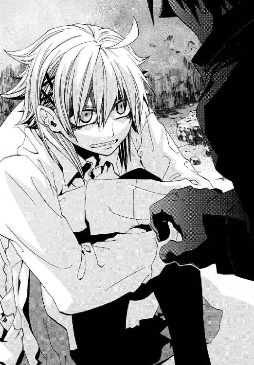
「武原さんが、わたしのお母さんのこと知ってるなんておかしいですよね」
聖霊騎士、《極星を追う者》は、きずなの〝お母さん〟の姿をしていた。彼女の信じていた〝家族〟のありようがデタラメである証拠だった。そして、きずなが子どものころに見た〝お母さん〟を、仁が知っていてはもう無茶苦茶だった。
「きずなちゃん──俺は──────」
「もう噓はやめてください！ お父さんの本当の名前、マルクっていうんですよね？ わたしもトラックで逃げたときはじめて聞きました。......でも、そういうの、なんでよくわからない人たちがみんな知ってるんですか？ 武原さんも隠しごとしてるし!! 家族のわたしだけが何も知らないじゃないですか」
そしてきずなは、ちいさな子どもに戻ったように、抱えたひざの間に顔をうずめた。仁も、ベレーノ・ネロと倉本慈雄が知り合いだと今日知った。だが、たしかに慈雄とベレーノは同じ三十代後半だった。
薄暗いビルを出た先は、午前中の陽光にほのかに照らされた道路だった。崩れかけた通路から、仁は逃げ出したかった。
「都合が悪くなったら黙るんですか！」
思い切り怒鳴りつけられた。噓をつき続けた仁が、タイミングを完全に失ったのだとはっきりしていた。もう誰にとっても苦痛なだけだと思った。
「......きずなちゃんのお父さん、倉本慈雄は、六月のバベル事件の中心にいた。あの事件を本当にはじめたのは、《染血公主》ジェルヴェーヌじゃない。きずなちゃんのお父さんだ」
仁の声は震えていた。顔をあげたきずなの、たれ気味のやさしい目が今日はけわしかった。なのに顔を赤く染めながら、彼女が目尻から涙をこぼした。
「いきなりなに言うんですか！ わたしが聞いたのは、〝あの女の人〟が誰かって!!」
「あのバベル事件のときの、俺たちが聖騎士とジェルヴェーヌを倒した後だ。きずなちゃんを組み込んだ再演魔術が終わっても、俺がひとりで《幻影城》に残っただろ。あれから、きずなちゃんのお父さんが《幻影城》に来たんだ。再演で得をした勝利者はジェルヴェーヌだけじゃない。きずなちゃんのお父さんも、あの再演で自分が望んだ魔法を、手に入れていた」
彼自身の手つきが不器用で、乾燥しすぎていることに、胸が内側から裂けそうになった。
「......きずなちゃんのお父さんは、歴史を変えようとしていた」
「噓つかないでください！ お父さんが、歴史を変える必要ないじゃないですか......」
仁は、それでも今日を逃せばもう伝えられない気がした。
「《極星を追う者》ってカタチで現れた、あの大昔の女騎士が理由だ。倉本慈雄は〝彼女〟にほれてた。だから、〝彼女〟の命を、どんな方法でか倉本慈雄自身の手で救おうとした」
話すほど、事実は重いままなのに、ことばだけが軽くなった。彼女は本当のことを知りたいだけではないと思った。きずなは再演魔術で、〝過去〟の出来事を直接覗いて確かめられるからだ。きずなは、なぜ仁が隠していたかを納得したいのだ。
仁は、ことばが震えて、まぶたの裏が熱くて、目を閉じた。慈雄ときずなの間に血縁がおそらくないことも、義父が自身の恋をかなえる道具としてきずなを育てたことも、言えるはずもなかった。
「だから───────」
これが生涯最後の呼吸に思えて、仁は暗がりの空気を吸いこんだ。
「────だから、俺が、きずなちゃんのお父さんを、殺した」
そして、すべての噓が瓦解した実感が、彼ときずなの間に薄く透明な壁を作った。仁が守ってきた団らんも、きずなが築いてきた食卓も、土台から音もなく崩れた。
「噓です。だって、お父さんが────」
仁は、四ヶ月暮らしてきて、きずなが父親を悪く言うのを聞いたことがなかった。彼女は、父が好きだったのだ。
「本当だ」
積みあげてきたものが薄っぺらくなって足下がぐらついたようだった。
「どうして、今まで教えてくれなかったんですか！」
《公館》にいたころは、部外秘事項できずなに情報を明かせなかった。だが、彼が組織をはじき出されてもう二ヶ月だった。
きずなのためだとも言い切る自信もなかった。彼は、浅利ケイツを見捨てようとしたからだ。あのときよぎったのは、どんな立派な言い訳も嚙み砕く、仁の生々しい執着であり欲だった。仁は、エレオノールの無私の戦いを浮世離れしたものと感じてしまう凡人だった。仁は、歌姫ではなくケイツの側だった。
「俺が、きずなちゃんに、そばにいてもらいたかったからだ」
それは〝悪〟だった。
「......どうして、今なら教えてくれるんですか」
「もう、黙っていることができないと思ったからだ」
ことばは口から滑り出るのに、仁にはその実感がわからなかった。慈雄の死は四ヶ月も前だからだ。感じる重み自体も、今日、父の死がはっきりしたきずなとズレていた。仁の口の中に、苦い汁がにじんだ。きずなが、怒りを通り越して呆れたという様子で、唇以外をかたくこわばらせた。
「それって、もうごまかせないから言うってことですよね」
ひとつ答えるごとに、仁自身の弱さがさらけ出されるようだった。
「そうじゃない。俺も、話しはじめるまでは事実に逃げたいんだと思ってた。でもちがう。本当は、俺も、そんな計算をする余裕もなくなったんだ。俺は、もう何が正しいのかわからないんだ。事実を言っておかないと、これ以上前に進めない」
言わなければならないことをすっかり吐き出した。吐き尽くしてみると、武原仁という男の底は意外だったほど浅かった。仁は長い長いため息をついた。彼自身が白い灰になった気分がした。
「ほかに、もう何か言うことはないですか」
「......ごめん」
彼は二十四歳のおとなで、きずなは十七歳の高校生だ。彼は泣くことなどできなかった。だが、仁がこらえても、きずなの涙が止まるわけではなかった。
こんな日が来るとわかっていた。だが、きずなのそばにいるのが快適だった。彼女に笑顔を向けていてもらいたかった。それは、仁の〝悪〟だ。
そして、長い沈黙が仁たちの間に降り落ちた。
《公館》時代の仁は、組織と彼自身の倫理の狭間で立ち位置をさぐっていた。組織をはじき出され個人になっても、彼は〝悪〟と手を切れていない。
「............卑怯者」
きずなのことばが、あってはいけないことだが、軽く聞こえた。きずなは仁を好きだと言ってくれた。けれど、不自然なほど、ふたりの感情に深い絡み合いはなかった。仁もきずなも、触れることを避けてきたのだ。
「武原さんは、卑怯です！」
だが仁は、もっと早く踏ん切りをつけなかったことを、本当に後悔していた。彼らの生活は、すでに倉本慈雄の死の現実感に拮抗するほど重かったのだ。不穏すぎる空白に、仁たちはもう気付いてしまった。きずなは父を失った。殺したのは仁だった。なのに、父を殺された娘と、その犯人の間に横たわる沈黙は、愛の告白を埋め込めるほど生ぬるかった。
「ごめん。俺が悪いんだ」
仁は、不自然に空いてしまう空白を、謝罪で埋めた。きずなも、真実を知ろうとしなかった彼女自身を棚にあげた。
「人殺し！ どうして、そんな簡単に、人を殺したとか言えるんですか？ はじめて会ったときから変だって思ってたんです。どうしてメイゼルちゃんと、刻印魔導師なんて、あんなふうな関係を続けられたんですか！」
今、きずなの体を抱きしめて好きだと告白すれば、たぶん彼女は彼を抱き返してくれた。
だが、そんな方法でごまかす男になったら、もっと追い詰められたらきずなを棄てると思った。仁は自身の倫理観を信じなかった。彼はすでに専任係官ではなく、〝組織の目的〟と〝個人の良心〟の狭間にはいなかった。なのに、仁は人間を見捨てた。
──組織や社会という障壁はもはやなく、ただ人が人を殺す深淵があった。
「いつまで人殺しを続けるんですか。魔導師公館をやめたのに、またさっき人を殺しましたね。あんなふうに、お父さんのことも！」
きずなになじってもらったほうが、〝悪〟から逃れて、正しくいられた。
「そうだ。俺には、誰も死ななくていい答えを見つけられなかった。だから、きずなちゃんを守ってやる」
「............いりません！ わたしが今どんな気持ちかわからないんですか？ ......頭おかしいんじゃないですか」
きずなは、初対面のときのような、怪物へ向ける目で仁を見た。はじめて出会ったとき、仁は慈雄が魔法で作った身代わりを破壊した。そしてきずなに父親を殺したと誤解された。そんなことの後で、彼女とどう関係を築いてゆけたのか、はっきりとは思い出せなかった。彼女が歩み寄ってくれて、急速に仲良くなりすぎたのだ。
「ごめん」
ほかに何を言っても厚顔無恥なようだった。
仁は、思う。彼は、彼女の心の空き席を、慈雄を死なせてかすめ取ったようなものだった。
「好きになんかならなきゃよかった......。もういやだ。こんなのしんどいよ......」
両手で顔を隠してしまった彼女を、どうしたら泣きやませてやれるかわからなかった。どうこうすること自体が傲慢だった。武原仁は、被害者ではなく加害者だからだ。
「家に帰ってきたら、きずなちゃんがいてくれるのが、うれしかったんだ」
「おねがいだからもうやめてください！」
彼らを囲む廃墟のように、信頼関係はぼろぼろだった。激情と未練が彼らを縛っていた。きずなの怒りと仁の罪悪感が、淫猥なほど強く絡み合っていた。そして、だからこそきずなになじられるのは当然だった。
「最初に言ってくれたらよかったのに。いつだって言えたのに！」
きずなの鼻声が、もはや悲鳴になっていた。
告白しようとしたのを、きずな自身も何度かさえぎってきた。
「俺が卑怯者だから、隠したんだ。俺は、俺は────」
仁は、彼自身が大切だと思うものを守ってきたつもりだった。だが、すべてがウソの上に築かれていると、〝大切なもの〟であるきずなも知っていた。
「俺は──、きずなちゃんがいてくれるのがしあわせだったんだ」
体が冷え切っていた。仁ときずなの間に、共有できることばがなくなっていたからだ。
仁をかつて鍛えた先生──王子護ハウゼンは、きずなと同い年の高校生だった彼に言った。優秀な専門家とは、自分がどうあれば仕事に一番役立つかを研究して、自己管理する者だと。今の仁は、本当に弱くなった。敵に追われているのに、こんなところでメロドラマを演じるほど、弱くなった。
「きずなちゃんやメイゼルと、家族みたいに、晩ご飯をいっしょに食べるのが、楽しかったんだ」
「家族になんてなれないですよ。他人じゃないですか」
昨日まで当たり前だと思っていたすべてが、廃墟のごとく崩れ落ちていた。仁たちは、昨日まで暮らした家に帰れない。仁は、六年一組の教室に戻れない。何より、人間関係は壊れて、もうあたたかい食卓はない。仁たちをつないでいたのは慈雄の死を隠し続けた噓だったから、きずながそれを拒絶したらおしまいなのだ。
暗い廊下にいると、廃ビルの吹き抜けに差し込んだ陽光が遠いものに思えて、つぶやいた。
「......他人じゃない。家族になれなくても、まるっきりの他人じゃない」
かつて地下迷宮で、王子護ハウゼンは仁に「ゆずれない最後の一線とはどこなのか」と問いかけた。仁の〝一線〟は、彼らがいる廃ビル同然にぼろぼろになった関係の、底にあった。
「それでも、俺はきずなちゃんに、しあわせになってほしいんだ」
†
武原仁が先生に戻れないとは、裏を返せば六年一組が仁を失ったということだった。私立御陵甲小学校では、武原仁は無断欠勤だと判断された。そして、連絡がつかないため担任の祖師堂先生が全授業をこなし、教室は問題なく運営されていた。
だが、児童たちの間に、異常の気配ははっきり伝わっていた。運動会の後片付け日だった一昨日から連絡がとれないこと。空いている教師が午前中に見に行ったが、留守だったこと。昨日から近所で異様な人々や爆発が目撃されている異常事態とからめて、ウワサされていた。
「やっぱり、武原先生、まきこまれたんだって」
「なんか昼間とか、勝手によくぬけだしてどっか行ってたよな」
「変な人来たら、ほかの先生より先に出てたし」
武原仁は、苦労性の若造なのに、浅利ケイツのような不審者が来ると率先して矢面に立った。誰が強いか論議のだいすきな男子たちは、意外なほど仁をよく見ていた。
昼休みの小学校では、いつもはたくさんの児童が運動場に出ていて、まっすぐ走ることもできない。今日は近所のアパートが爆発して倒壊したという騒ぎがあって、運動場の使用が禁止されていた。そのぶん、教室と廊下がうるさかった。
そしてメイゼルも、仁の欠勤と無関係ではいられなかった。
「鴉木、武原先生、どこ行ったんだよ？」
男子たちが、彼女にたずねてきた。専任係官だった仁が消えるときは、刻印魔導師のメイゼルも早退していることが多かったからだ。
「なんであたしに聞くの？ せんせのことを、あたしが全部知ってなくちゃいけないの？」
鴉木メイゼルは、自分の席についたまま大声で返した。運動会は楽しかったのに、振り替え休日明けにどうしてこんなことになっているのかと、腹が立った。
給食の片付けを終えた寒川紀子が、自分の席に戻ってきた。銀縁眼鏡の学級委員長は、心配そうにメイゼルにたずねてきた。
「鴉木さん。武原先生、変なことにまきこまれてないかな」
そして眼鏡が当たるほど顔を寄せて、メイゼルに耳打ちしてきた。きしりそうなほど強く、誇り高い少女は奥歯を嚙む。寒川は、まじめすぎて他人の表情を読むのが下手だ。
「武原先生って、変な人に顔が広いよね。こないだの家庭訪問のときだって、あんな人と知り合いだったし」
「変な人ばっかり、よってくるのよ。本当にこまったせんせだわ」
もうメイゼルと仁が普通の先生と児童の関係でないことは、彼女にはバレていた。《無双剣》セラ・バラードが寒川の母になりすました家庭訪問のせいだった。小学校内で騒ぎになっていないのは、あの件に触れられたくない寒川が口を閉ざしているせいだ。
思い出すと過去ばかりがキラキラ光っているようだった。彼女自身が後ろ向きになっていることに腹が立った。
「いっつもせんせは、大事なことはなんにもあたしに話してくれないのよ。あたし、思い出を宝石箱にしまってながめる生きかたなんて、ぜったいイヤだわ」
「大事にされてるんだよ。......なんか、そんな感じがする」
家庭訪問以来、寒川は吹っ切れたのか、後ろの席からイタズラされたくらいでは動じなくなってきた。今も、おしおきにリボンで縛られることに順応したように、逆に寒川のほうから両手を差し出していた。
メイゼルは、リボンを結び終え、ほぅとおおきなため息をついた。
「大事にする方法なんて、勝手に決めてどうするの？ 男って、勝手すぎるのよ」
窓の外の住宅街で、四時間目の授業中に爆発音がおおきく響いた。小学校の近くで戦闘が行われたことを意味していた。ちいさな魔女は、そこに行けないことに苛立っていた。
携帯電話は、一定範囲を受け持つ基地局と通信することで通話ができている。だから、魔法で携帯基地局の受け持ち範囲を外れる移動をすると、基地局移動が観測されて魔法消去を受ける。魔法的転移するときは携帯の電源を切るのが魔法使いの常識だ。だが、今のメイゼルは、電源を入れておかねば、《魔獣使い》神和瑞希から携帯に連絡が入ってきたときバレてしまう。
「臆病になるって、イヤな感じだわ」
メイゼルの命は、仁が《公館》をやめてまで救ったものだ。だから、命令違反で処刑されるようなつまらない死に方はしたくなかった。それでも、誇りを知る胸がうずいた。
「あたしとふたりのときより、きずなとのほうがイイ感じに思えるのって、あたしのヤキモチなのかしら」
メイゼルがいなくても事態が動いてゆく疎外感が、耐えがたかった。機械化聖騎士師団は、戦って勝てる規模ではなかった。だから、仁にとって、このままきずなと一緒にどこかへ逃げるのが一番合理的な解決だった。そのかわりに彼女はひとりになる。
そしてそのとき、メイゼルのワンピースのポケットで、携帯電話の呼び出し音が鳴った。
ちいさな魔女の胸が弾んだ。電話をかけてきたのが、彼女に行動する名目をくれる専任係官神和瑞希だったからだ。
〈......探せ。......きずな......魔法的転移で......跳んだ。............けど、きずな............携帯電話の......基地局...移動............してない〉
神和家では、刻印魔導師は道具あつかいされる。だから、用件のみが告げられる。とぎれとぎれの命令を翻訳すると、きずなが、ものすごく短距離の魔法的転移をしたから、足で探せということだ。
「でも、にげるとき電話を落としただけでも、電話は動かないけど」
電話口の向こうで《魔獣使い》が沈黙してしまった。神和瑞希は、狩人としては一級だが、高校を留年しそうなほど論理的な思考が苦手だ。
〈でも、...でも...だから............聖騎士も、......きずな............まだ......見つけてない〉
瑞希が思考を放棄したか、電話は切れてしまった。仁が専任係官だったときとは、メイゼルの刻印魔導師としての責務の果たしかたも変わった。
襲われたエレオノールの部屋からごく近く。しかも、電波が届いている以上、地下一帯に広がっている武蔵野迷宮でもない。魔法的転移で跳ぶ場合の着点は、ふつう人気のない場所を選ぶ。メイゼルは、改めて教室の窓から外をながめた。
「そんな都合のいい場所なんて、このあたりに三つくらいしか候補がないんじゃないかしら」
だがメイゼルは、行動の名目も指針も手に入れたのに、動けなかった。
理由はわかっていた。毎晩、エレオノールの部屋を監視していると、晩ご飯が楽しそうだからだ。毎晩の団らんのテーブルは、メイゼルなしでも楽しいものになる。彼女の先生はメイゼルがいなくてもだいじょうぶだった。
その疎外感が、専任係官が仁だったころの戦いと、一番変わったことだった。
「鴉木さん、なんか今日は、変だよね」
「......そう？」
「鴉木さんって、もっと、あとさき考えな......いや、思い切りよかったよ。らしくないって言うか......もっと、ハダカになってぶつかっていいんじゃないかな」
そして六年一組の学級委員長は、はっと顔をこわばらせた。
「..................私、ひょっとして『ハダカ』って言った？」
「そんなにハダカがくせになったの？」
まっ赤になって反論する。
「くせとかじゃないよ！ みんな、素直になったほうがいいとか、そんな感じのことだよ。私、いいこと言ったよ？」
だがそのとき、メイゼルの中で、ぴたりと体と心の歯車が合った。
「そうなのよ！ ごほうび、このままハダカにひんむいて、そこの窓から逆さ吊りにしたげたいくらい、よく言ったわ！」
激情が暴れ出して、ちいさな魔女は椅子を蹴倒すように立ちあがっていた。知らず知らず力がこもっていて、寒川紀子の肩に指を食いこませてしまっていた。
「......鴉木さん、ものすごく目が恐いよ？」
体の内側で、熱い粘液じみたものが沸き立って、肌も肉もとろけてしまいそうだった。彼女は今、ちいさな体を熱に駆り立てられていた。
「ぶつかっても何をしてでも、ほしいものは手に入れなきゃダメなんだわ。......あたし、なにかんちがいしてたのかしら？ 本当に、いつの間にか甘えてたんだわ」
爽快だった。ちいさな魔女には、果たすべき責務があった。けれど、彼女がしたいのが〝義務だけではない〟ことは、自然だったのだ。服一枚の下には、ハダカの彼女自身がいた。
「大事なのは、ハダカのあたしが、どこまでやったげられるかってことよ。恋って、そういうことだと思うの」
彼女がしようとしていることは〝悪〟だった。だが、その体を貫く〝悪〟のかたちが、メイゼルはいとおしくてたまらなかった。
心が浮きあがってどうしようもなくて、くるりと回転する。それにつられて長いワンピースの裾が、羽根のようにふわりと浮いた。
「あたし、今、何だってできるわ！ お母様もこんな気持ちだったのかしら？ あたし、この世界が大スキよ！ きっと、人をスキになるって、こんな気持ちなのね。この世界もガッコウも、メチャクチャにしたげたいくらいスキになったの」
全校を混乱のるつぼに突き落とした生徒会選挙から、まだ一ヶ月も経っていない。だから、一瞬で教室中が静まりかえった。
「鴉木さんのお母さんって、どんな気持ちでナニしたの!?」
「......毎日、空を飛んだり、腕から光線を撃って街や騎士団をなぎ払ったりよ。メチャメチャにしたいくらいスキだったのね」
娘のメイゼルですら、イリーズ・アリューシャの物語は、この世界では荒唐無稽すぎて信じてもらえる気がしなかった。だが、まじめな学級委員長の広い額には、びっしり冷や汗が浮かんでいた。
あどけない小悪魔は、体の内からわき出たよろこびのまま微笑んだ。
「あたし、すっごく〝悪い〟こと思いついたわ。せんせにぶたれちゃうかもしれないくらい〝悪い〟こと。......だから、おかしくなっちゃいそうなくらいゾクゾクしてるの」
†
武原仁にとって、取り壊し前の廃ビルできずなと過ごす時間は、罰だった。
仁が慈雄を殺した事実が明らかになる前、彼らは家族のように食卓をかこんだ。だが、観測された魔法が焼かれるように、寒い現実が露わになっていた。
涙も乾いたころ、装飾がはげたコンクリート壁にもたれかかっていたきずなが言った。
「〝悪い〟ことしたって、わかってるんですか？ さっきから、ごめんばっかりじゃないですか」
仁は、ごめんとすら返せなくて黙るしかなかった。沈黙が厳しくても納得できた。仁が隠したことが悪かったのは事実だ。すべてが、かくあるべき最低の場所へ落ちこみつつあった。
彼女には、許すと言えることではなかった。仁は言い訳のしようがなかった。
彼らが共有したやさしい噓は、廃墟になっていた。きずながここまで怒っているのは、《幻影城》へ突入する前以来だった。彼らは、秘密という壁が外れて、はじめて抑制のきかない大げんかをしていた。
「......きずなちゃん、とにかくビルを出ないか？ このままここにいたら、いつか聖騎士に見つかる」
仁は、この廃ビル周辺の地理をよく知っていた。ここは御陵甲小学校から近いが、周囲に人の気配があまりない。住宅街にあったエレオノールのアパートより襲撃をかけやすい場所だった。
腕時計は、さっきの戦闘で完全に壊れて、動いていなかった。携帯電話もなくしていたから、仁は時間の確認もできなかった。
「きずなちゃん。俺を恨んでくれていい。でも、ここからは動かなきゃやばい」
どんな形であれ、彼女を守らなければならなかった。仁は、あらためてビルの構造を確認する。鉄製の扉が並ぶ十階建てのマンションで、中心には空が見える吹き抜けの中庭があった。その中庭を取り囲むように廊下があり、その更に外側に住居となる部屋があった。仁たちがいるのは、正方形の建物の角っこ、玄関から中庭へまっすぐのびるせまい廊下だ。
階段や非常口の所在はざっと見ただけでは確認できなかった。だが、入り口をふさがれたら簡単に包囲される構造であることは間違いなかった。
そして、廃ビルの入り口に、ついに彼らを追う足音は到達した。
自信に満ちたその人物を目にしたとき、仁たちはやましさで金縛りになった。
彼女は、落ち葉の色によくなじむ暖色のワンピースを着ていた。生地が厚い秋物が、ほっそりした体の線をかわいらしく隠していた。唯一、大きく肌をさらした元気な脚だけが、質感がちがって活動的に見えた。
鴉木メイゼルがそこにいた。
「せんせを、つかまえに来たのよ」
今回の事態の中心から追い出されていたちいさな魔女が、自分の足でやって来たのだ。
「メイゼルちゃん。......ごめんね、こんなことになったのに、メイゼルちゃんに連絡もしないで」
きずなが、年上らしくあやまった。ちいさな魔女は、大股で歩いて玄関から薄暗い廊下を突っ切ってきた。ここでかつて浅利ケイツに敗れたのに、痛みなど恐れないように。
「きずなって、自分勝手だわ。あやまる前に、昨日も今日もあたしに電話できたでしょ？」
少女が近づいてくるにつれ、仁ときずなを包む鈍いものが晴れるようだった。
「メイゼル。学校はどうした。ひとりで行動してちゃ神和も連絡がつかないだろ」
「せんせは、ぜったいにあたしといっしょのほうがしあわせだわ。だって、せんせがそんな顔して苦しんでるのに、きずなは、それをよろこんでもいないのよ？」
メイゼルが、仁の苦しみに興奮して太陽のように微笑む。彼女の嗜好は嗜虐的に歪んでいるのだ。
きずなが、ためらわず踏みこんできた少女を大声で制した。
「勝手に、武原さんとわたしの問題に入ってこられる筋合い、ないよ。メイゼルちゃんには関係ないよ」
「好き勝手言うじゃない。せんせは確かにだらしないけど、きずなはその上にずるいわ」
父を失ったきずなが、仲間と密談するような親密な声で語りかける。
「メイゼルちゃんは何も知らないからだよ。武原さんは、都合のいい自分の夢を守りたくてだまってたけど────」
「あんたのお父さんを殺したっていうんでしょ？」
仁は半開きになった口を閉じられなかった。きずなは、裏切りにあったように、頰から生気が抜けてしまっていた。
「メイゼルちゃんまで............知ってたんだ」
だが誇り高く潔癖に生きた少女は、同性にも容赦なかった。
「図々しいカンちがいしてんじゃないわ。あたしは、せんせじゃなくて、きずなを見てて気付いたのよ」
きずなとメイゼルの間には、ときどき緊張した視線がぶつかる。
「どういう意味かな。わたしだって、怒るときは怒るんだよ」
「再演大系は〝過去〟に向かって作用するのよ。あんた魔法で〝過去〟をいつでも覗けるくせに、せっかくの自分の魔法を、命を狙われても試そうとしないんだもの。夢みたいな毎日をこわす、よっぽどなものが〝過去〟にあるんだなって、ピンとくるわ。それでも、いっしょにごはん食べるのが安心だったくせに。そういうこと全部タナに上げてるから、図々しいって言ってんのよ！」
仁ときずなの間では、被害者と加害者の関係ははっきりしていた。だが、メイゼルが現れて、単純な構図は完全に崩れていた。きずなとちいさな魔女は、お互い加害者でも被害者でもないからだ。
「メイゼルちゃん。あんまり言うと年下でも怒るよ」
だが、あどけない嗜虐趣味者は、きずなの弱いところをえぐるのに容赦などしない。
「年下？ きずなって、あたしを対等だとも思ってなかったの？ だったら、年上らしいとこ見せてみなさいよ。あたし、自分のできることもやらない魔法使いってイライラするの」
潔癖に命をかけて生きてきた少女のことばは、無垢だからこそ残酷だった。
「ヒキョウは、簡単に見られる〝過去〟から目をそらしてたあんたも同じでしょ。せんせのこと、そんなふうに責められるの？」
「だって、こんな目にあったら〝普通〟はそうだよ！」
「普通だからそうしたって、ひどい理由ね。〝普通〟だから、お父さんのことぜんぶせんせのせいってことにした？ 〝普通〟だから、いっしょにくらして、ごはんを食べられることにしがみついた？ 〝普通〟に罪をおかして被害者ヅラなんて厚かましいのよ!!」
「わたしは、メイゼルちゃんみたいに強くないよ！」
またきずなの目から涙がこぼれ落ちた。たしかに、きずなは棚に上げたかもしれなかった。だが、仁は、父親をなくした高校生の少女に責任分担など求められなかった。
「待てメイゼル。そんな生き方は、そうそうできるもんじゃない」
だが、泣きっ面が大好物なのが嗜虐趣味者だった。
「せんせは黙ってて。ねえ、きずな。......弱いって言い続けたら、護ってもらえるつもり？ あんた、さんざんお姉さんぶったくせに、小学生のあたしより子どもなのよ」
きずなには、倉本慈雄を誰が殺したかは人生を左右するほど重かった。だが、メイゼルには刻印魔導師として関わった事件のひとつだ。
「きずな、足下みなさい。あんたを殺そうとしたのは誰で、助けたのは誰？」
「メイゼル、それは言い過ぎだ」
だが、負い目がないメイゼルが、なめらかなお腹に手をやった。
「あたしだって、この女を助けに行って、もうちょっとで死ぬところだったのよ。あの戦いを戦った人間をバカにしすぎだわ」
きずなが言い返せずにいた。
仁は、戦闘機の空中戦に地べたの車が参加できないように、少女たちの衝突に手すら届かなかった。同じ問いに繰り返しさいなまれる仁をはさんで、彼女たちは思うままドロドロしていた。
「きずなは、せんせのこと、もういらないんでしょ？ だったら、あたしがもらうわ」
仁は、モノあつかいに抗議しようとした。だが、口を開いたのはきずなが先だった。
「でも、メイゼルちゃんは魔導師公館の......」
そして、きずなが自身のことばの毒で火傷したように押し黙った。
「......刻印魔導師だから？ そうよ。あたしは刻印魔導師よ。明日死ぬかもしれないし、せんせといっしょに逃げたげられないわ」
メイゼルの頰は桜色に上気し、あめ色の瞳は濡れていた。
「でも、きずなから、せんせをうばい取れるわ。あたしとせんせ、もう監督する人とされる人じゃないのよ？ せんせがこのままいろんなとこに首を突っこむより、あたしが首輪をつけたほうが、きっとキョウカたちもよろこぶもの」
ちいさな魔女に、仁の言うことを聞く義理はない。彼女は思うまま行動できるのだ。
「メイゼル......。待て！ おまえ何を言ってるんだ？」
「せんせとあたし、もうどっちが上でどっちが下か決まってないのよ。タイトウなんだから、力ずくで押さえつけて、気持ちいいってわかるまでしつければいいでしょ？」
嗜虐的な魔女は、心底楽しそうにほほえんだのだ。
「こういうの、この世界ではこういうのよね？ あの、......下克上！」
そしてちいさな魔女の足下に、魔法陣が浮かびあがった。メイゼルの使う円環大系は、振動や回転といった周期運動が不安定な世界で発達した。彼女たちは、電子を《魔力》として観測して、それを操作する。大電流や高電圧を作ることなどお手の物だ。
薄暗い廊下に、青白い光が生まれた。メイゼルが大気中から集めた電気が、気体分子にぶつかって発光しだしたのだ。
「せんせ、あたし、今、すっごくうれしいの。だって、本当にほしいものを手に入れる戦いって、世界一やりがいのある戦いだと思うの」
メイゼルの指からコンクリートの壁へと、青白い雷が落ちた。円環魔導師の得意とする人工稲妻は、電気抵抗をあやつることでありとあらゆる場所に落とせるのだ。
「ひっ」
きずなが間近の破裂音に身をすくめた。大気を熱で破裂させた雷鳴が、廊下の空気を圧縮した。だが、魔法消去は起こらない。音が建物の外へ伝達して近隣住民に聞かれないよう、メイゼルが強固な障壁を展開しているのだ。
「きずなちゃん！ 奥の中庭に逃げるぞ」
だがきずなは呆然と、棒立ちのまま仁を見ていた。仁たちのニセ〝家族〟の崩壊のしかたは、きずなの対応できる限界を超えていた。
ちいさな魔女は、長い黒髪もワンピースの裾も、何もかも無防備に爆風にあそばせていた。仁が魔法消去を発動すれば、音を廃ビル内に封じこめている魔法は破壊できた。だがそれは、盛大に魔炎をあげて聖騎士の注意を惹くことを意味していた。
「メイゼル！ こんなことしてる場合じゃないだろ」
叫んだ仁へと、床に落ちていたコンクリート片が凄まじい速度で飛んできた。メイゼルが、電気につきものの磁力を魔法でそこらじゅうのものにあたえ、弾いたのだ。土砂降りの雨のように、無数の礫が壁に床に衝突音を響かせた。
仁は、頭と首を腕で護りながら、ホコリだらけの床を転がった。身を起こすと、砕けた瓦礫の粉塵が視界を覆っていた。
仁は通路の奥、吹き抜けの中庭へ向かって必死で駆けた。この状態で大気中の塵を加熱されれば、彼は蒸し焼きになって死ぬからだ。
「きずなちゃんはここにいてくれ！ メイゼルは俺を狙ってる。離れたほうが巻きこまれにくい。何かあったら大きい声を出すんだ！」
仁は、本能的に、メイゼルの本気をひしひしと感じていた。ひとつ間違えば死ぬ魔法を、ずっと同じ食卓を囲んだきずなや仁に撃ったのは、真剣さを伝えるメッセージだった。
廊下の奥に広がる中庭は、一辺約十五メートルの正方形をしていた。その青空が見える空間の地上五メートルほどの位置に、先回りしてメイゼルは浮遊していた。
「せんせは、きずなの肩を持つのね。きずなを守れなんて、せんせは命令されたわけでもないのよ。きずなだって、ずるいことをしてるのに」
「そうじゃない！ おまえがかばってくれたって流されていいわけないだろ。理由とかより、今はきずなちゃんの味方でなきゃいけないと思うんだ。きずなちゃんの命がかかってるんだぞ！」
仁は、きずなとふたりして、どんづまりでさいなまれていた。だが仁が加害者できずなが被害者である構図は、ふたり両方を非難できるメイゼルの視点が加わると単純さを失う。それでも彼は、楽な正しさへ流されるわけにはいかなかった。
「俺が、メイゼルの尻馬にのっかってきずなちゃんを攻撃しはじめるなんて、そんなバカなことが許されていいはずがない」
まだ小学生の魔女の、長い髪で隠れかけた目尻に、女の表情がよぎった。
「せんせ、今日は男らしいのね。でも、あたしに答えをくれるのは、いつなのかしら」
吹き抜けに浮かぶ少女を見あげながら、ひどくアンバランスだと思った。彼女は残酷なほど純真で、ときおりドキリとするほど艶っぽい色づきを見せる。メイゼルの心を不相応に成熟させた元凶は、確実に仁自身だった。
「ねえ、せんせ。あたしはいつまで借りられっぱなしなの？」
ビルの広大な吹き抜けの空中に浮かんだまま、あどけない魔女がため息をついた。
彼は、負債と不義理ばかりの彼自身がイヤになった。仁は、好きだと気持ちをはっきりさせているメイゼルに、答えを夏から引き延ばしてしまっていたのだ。
「......本当に、ごめん」
「せんせは、そればっかりだわ。でも、問題を先送りして楽しくくらしてたのは、あたしも同じだわ。だから、もうはっきりさせるの。......だって、せんせって管理されてないと戦いに巻き込まれちゃうもの。いつか、あたしが知らないとこできっと死んじゃうわ」
少女の表情が悲しくも悪戯っぽかった。都合の良い夢を持ち寄った三人の暮らしは、支点を一個失っただけで意味を反転させたのだ。
「メイゼル。俺は────」
「せんせ、ことばはもういいの。さっきから言ってるでしょ。答えを待つよりも、思い切って奪うほうが、ずっとあたしらしいわ！」
仁が行きつ戻りつ答えを探していた間に、メイゼルは、彼には理解できないほど成長していた。
「悪いことしたと思うなら、せんせは、本気で抵抗するのよ。でないと、どっちがシュドウ権をとるのか、けじめがつかないでしょ」
「専任係官の採用条件は、刻印魔導師に負けないことなんだぞ」
仁は、彼女にかけたことばの先になじみ深い闇を覗いた。その理屈で、彼は倉本慈雄たち魔法使いを数え切れないほど殺してきた。彼が組織人として選び続けた答えにしたがうなら、望みどおり少女を打ち倒すことになってしまうのだ。
「もうやめてくれ！ 俺は、おまえと戦いたくなんてない」
ほんの二ヶ月前まで、仁は組織の兵隊だった。だから、戦うかどうかは命令のあるなしを基準にできた。だが、これから彼は、メイゼルという絶対に殺せない相手に攻撃される。仁は、心のうちにある意志と理性と倫理とで判断せねばならないのだ。
魔法で作った磁力のロープに、ちいさな魔女はちょこんと腰掛けていた。
「なんて顔してるの、せんせ。......それでも、『この世界は地獄じゃない』んでしょ？」
心をねじりあげられているように、仁の眼球の裏が涙でぐずぐずになった。気が狂いそうだった。
「もっと楽しんで。せんせに、変わらないものなんてないって教えたげる。あたしがどのくらい成長したか、見せたげたいの」
そして、吹き抜けの五階あたりに浮かんだメイゼルが、一瞬で四人に増えた。
異世界人の魔法には、それぞれの自然のゆがみのかたちで〝術者自身〟を記述した《化身》という高等技法がある。メイゼルの円環大系の《化身》は《破滅の化身》と呼ばれる。術者自身の存在を位相幾何学的に変形して、それは術者本人を複数に増やす。
四人に増えたメイゼルがぱちりと指を弾いた。同時に、磁力で弾かれた巨大な瓦礫が、マンションの廊下と吹き抜けをへだてる四辺の壁を砕いた。
雨のように、仁へと瓦礫の雨が降り注いだ。魔法消去を発動すれば、仁はちいさな魔女をたたき落とせた。だが、それでは荒れ狂った魔炎は噴火するようにビルから噴き出し、仁たちの居場所を知らせてしまう。
「メェイゼェェェル！」
絶叫が、もう何を語ってよいかわからないのどからほとばしった。仁はマンション一階の廊下へ駆け込んだ。エレベーターが動いているはずはなかった。だから、あるはずの階段を探す。日の光にあふれる中庭を横目に、紙ゴミや泥で汚れた廊下を駆けた。コンクリートの階段は、正方形の角っこにあたる奥にあった。
仁は戦いの行く先をまったくイメージできなかった。命の取り合いをするつもりはなかった。だが、どうメイゼルを止められるかわからなかった。
二段とばしで、仁は階段を駆けのぼる。
空中を舞うちいさな魔女が、中庭側から機銃掃射のように瓦礫の弾丸を撃ちまくった。円環魔導師は、有無を言わせぬ大火力で押し切るのが本来の勝ちパターンだ。
壁がぼろぼろになった二階へ到達した。仁をからかうように、メイゼルが更に浮かぶ位置を高くした。
「せんせ、......聞こえるわ。せんせの足音。......あたしはここよ。あたしをつかまえて」
小悪魔のしっぽは、どんどん太くて立派な女悪魔のものに成長してゆくようだった。
声の聞こえた三階を目指して、また仁は薄暗い階段をのぼった。その足が何かを踏んだ。同時に足の裏から太ももへ衝撃が突き抜け、仁は体勢を崩して壁に体を打ち付けた。メイゼルが、高圧電流を流す地雷のような魔法を、床にしかけていたのだ。
「魔法で作った電気回路で、自動発動するワナを作ったのか。ずいぶん小技もやるもんだ」
仁は、電気を通されてしびれたふくらはぎをもんだ。内臓を伝ったか、ひどい悪寒がして脂汗が浮いた。
円環魔術がおそろしいのは、出力の大きさだけではない。電気抵抗を自由に操作できる彼女たちは、あらゆる場所に電気回路を魔法で構成できる。メイゼルは、階段しか建物をのぼる方法のない仁が踏むことを見越して、接触すると魔法を発動させるワナをしかけたのだ。
〈びっくりした、せんせ？〉
メイゼルの声は、床に落ちていた一枚の広告チラシから聞こえた。薄い紙が震えていた。
仁は感嘆した。メイゼル自身の声を電気信号に変換して伝達することで、スピーカーのように紙を震わせているのだ。
「二ヶ月もずっと秘密で訓練してたのは、こういうやつか。おまえがこんなに強くなってるなんて、知らなかったよ」
仁は、震えるチラシを拾いあげた。彼が知っていたころ、メイゼルは防御を考えずに火力をたたきつけていた。今日見せているのは、まさに別次元の独創性だった。仁と別れて、ちいさな魔女は劇的に成長していた。
「神和に教えてもらったのか？」
〈変なヤキモチ妬かないで、せんせ〉
くすくす笑いが、薄紙のスピーカーを伝って大気をくすぐった。仁がチラシを持ちあげて床から離しても、音声信号の導線は切れなかった。つまり信号は電波で送られていて、しかもメイゼルからは仁が観測できていた。
〈知らないの？ 人を成長させるのに一番いい方法は、〝いいエサをぶらさげること〟なのよ？〉
「知らなかったよ。俺は、先生失格だな」
ケイツのことが、まだ肋骨に引っかかって息苦しかった。彼は、偽物でも教師を続けるなら、簡単に人をよりわけて見捨てるべきではなかった。
〈ほんとに、ダメなせんせだわ。でも、大スキ〉
仁は、振り返ると廊下へ出て、中庭の吹き抜けにメイゼルの姿を探した。厚い生地の女の子らしいワンピースが、仁の頭より三メートル高い空中を泳いでいた。
〈せんせが逃げ回ってあたしが追いかける練習、はやくしてたら、あたし、もっと上手になってたわ。好きなことじゃなきゃ上手にならないもの〉
仁が手にしたチラシが震えて、また声が聞こえた。
マンションは十階建てだった。そして、これだけ魔法で轟音をたてて魔法消去を受けないほど完璧に音を封じている以上、障壁の位置は屋上よりは下でないと危険だった。つまり十階までのぼれば、メイゼルの頭上を取れる。魔法消去者は、肉体的に接触した状態なら魔法をほぼ完全に封じられる。とにかく、彼女をつかまえねば話が始まらなかった。
だから、階段を駆け上がった。メイゼルは常に先回りしていた。
〈無駄よ、せんせ〉
だが、仁が必要だったのは死角だった。メイゼルは、仁が生身の足で階段を駆け上がっている間に何をしているか、完璧に把握できてはいない。仁が、走りながらビー玉ほどの隠しやすい大きさのコンクリート片を拾いあげたことに感付いてもいなかった。
メイゼルの戦い方には根本的に穴がある。円環魔導師は、本来、長距離射撃か近接戦かで戦術がまったくちがう。彼女は射撃中心なのに、仁のそばに近寄りすぎだった。メイゼルが維持している五メートル以内の間合いなら、礫の一発で少女の動きを止められた。
四階、五階、六階と、仁は一気に駆け上がった。
「メイゼル。......この戦いは、俺への罰なのか」
《公館》を離れてはじめて本格的な戦いに巻きこまれた途端こうなったのは、仁のせいだった。メイゼルにもきずなにも、本当は《公館》を離れた彼といっしょにいる理由などない。仁と彼女たちは個人的な感情でつながっている。なのに、仁は彼女たちの望みをまったくかなえていないからだ。
仁は、金属製の手すりにつかまった。そこにも地雷魔法がこめられていた。たまらず、彼はうめいた。
「罰じゃないわ。おしおきよ」
答えた声は、すぐそばから響いた。
七階へと上がる階段の最上段に、彼女は立っていた。かわいらしい自然の化粧の域を超えて、あどけない顔が興奮で真っ赤だった。
「メイゼル。もうやめるんだ。こんなことしたって誰のためにもならない」
小悪魔をここまで過激な行動に走らせたのは、仁自身だった。曖昧な噓の上に安楽を築いてきた。だから、いつか断罪されるとは思っていた。それでも、ここまでは考えていなかった。
「あたしがこうしたいのよ。......せんせを傷つけると、すっごく心配になるの。でも、せんせの体に、あたしのつけたキズが刻まれるのがうれしいの。いけないって思うのに、ぞくぞくするの」
誇り高い少女は、大切なものを抱えるように、ひらべったい胸に手を当てた。
「せんせは、傷つけられるの、スキ？ こんなに傷つけられても、あたしのことスキなんでしょ？」
幼すぎてつたなすぎて、彼女はつなぎとめることを恋だと思っているようだった。不器用な気持ちをうまく表現できないメイゼルを、仁は守ってやりたかった。
「冷静になれ。俺は、変わらない。きずなちゃんを守ってやるのは、おまえを見捨てるってことじゃないんだ！」
仁は、全身の力を絞って背の低い彼女へ手をのばした。華奢な肩をつかまえようとした。
メイゼルが磁力で体を弾いて逃げようとした。その魔法は音をたてず無音だった。だから、これを破壊しても建物外に魔炎は漏れまいと、仁は魔法消去を発動していた。
制御が狂った飛行魔法で、思い切り壁面で肩をすりむいて、ちいさな魔女が墜落した。
「......メイゼル」
仁の頭の中がまっ白になった。仁は、はじめてメイゼルのことを傷つけた。
だが、メイゼルはよろけながら立ちあがると、ぶつかった肩の熱をいとおしむように触れた。
「痛めつけてるせんせが、あたしより痛そうな顔しないで。おしおきなら、もっと気持ちよさそうにして」
彼には、彼女をどうすればよいのかわからなかった。ただ、歪んでいても体と心をまるごと少女がぶつけてきていた。
「せんせ、もっとあたしを知って。......痛みがあたしをどんなふうに変えるか見て。......あたしが、せんせからもらった痛みをどんなふうに受け止めるか、確かめて」
熱にとろけたような視線を向けられ、仁の息が止まった。指針と理由をくれた組織から離れて、人間関係すら安全ではなかった。
「メイゼル......俺は、どうしたらいい」
仁は手の中のつぶてを握りしめた。彼にとってメイゼルくらいの腕前の魔法使いを殺すことは簡単だった。相手が鴉木メイゼルでさえなければだ。
「もうやめてくれ。おまえの戦いは、あぶなっかしいんだ。わかってるのか？ おまえ、さっき《破滅の化身》を発動してたら、死んでたかもしれないんだぞ」
《破滅の化身》は、強力だが、増えたメイゼル全員が完全に同じ状態に保たれねばならないという弱点がある。《化身》展開中にかすり傷を負っただけで、メイゼルは死ぬのだ。
その迷った瞬間、仁の背中を人工稲妻がとらえた。軽くないケガをしたメイゼルが、《破滅の化身》で階下に分身を作り、彼を撃ったのだ。動いて肩の傷口が広がっただけで消滅するというのに、彼女は気持ちをほとばしらせ叫んだ。
「せんせは、中途はんぱなのよ！ だれかに命令してもらわないと、本当にきびしくもなれないんだもの。せんせには、主人が必要なの」
だが、至近距離だから今度は見逃さなかった。メイゼルの表情が、仁を撃ったとき怯えにゆがんでいた。あの地下都市で王子護ハウゼンを殺してしまったと思っているせいだ。
「おまえは泣いていいんだ。つらいなら、弱音を吐いたっていい。そんなふうに、がんばって立たなくてもいいんだ」
おとなの彼のほうが、泣き言を並べているようだった。相手をどうしたいかもわからず戦った者の末路を、仁はよく知っていた。彼には、メイゼルを殺せない。メイゼルは自分のほしいものを承知している。それだけで、彼の敗北は決まり切っていた。
「......せんせ。あたし、せんせだけの主人になったげるわ。......せんせのことだけ考えて、せんせが振り返ったら、いつでもあたしがいるの。せんせがいいことをしたら頭をなでたげる。あたしの膝に乗って眠ってもいいわ。あたしの指を舐めるのだって、ゆるしたげる」
激情に浮かされたような足どりで、階上にいたほうのメイゼルが一歩踏み出した。──仁へ向かって、悪鬼との接触距離は魔法使いの死地だというのに、階段を一段下りた。
「だから、せんせを、......あたしがうばうの。あたしのほしい未来は、あたしがつかむの！」
仁は一瞬、この世界での〝未来〟を口にした彼女に気圧された。
息ができなかった。
どんな戦いも古くなる。仁は、《破滅の化身》でふたりに分裂したメイゼルにはさまれて、人間関係こそ迷路だと思い知らされていた。幼い刻印魔導師を普通の子どもとして暮らさせてやろうとした戦いも、彼女の成長で〝古くなって〟いた。
「メイゼル。もういい。動くな」
七階の少女へにじり寄るように、一歩、階段をあがった。彼女は逃げなかった。
ずっと仁の背中を押し続けた責任感と保護欲が、胸にからんでいた。階上の少女は、自立心と誇りと激情の圧力に震えていた。彼らは専任係官と刻印魔導師ではない。だが、ふたりは殻から脱皮に失敗して死ぬ蟬のように離れられなかった。
「せんせ、もういいなんてことはないのよ。......あたしがいて、せんせがいる限り、おしまいなんてないの」
メイゼルは、自分の意志だけを理由に仁のそばにいる。それは、彼が残酷に試される問いに、メイゼルも〝無罪〟ではないということだ。きずなも同じだった。
だから仁は、なまぬるい奈落を歩いている心地がした。緊張で息ができなかった。それがやさしいきずなから余裕を奪い、メイゼルを駆り立てているものだった。彼はすでに、ひとりで戦っているのではなかった。
「おまえは、そんな戦いに巻きこまれる必要なんてない。おまえは、〝こっち側〟に来なくていいんだ」
魔導師公館をやめても、武原仁という個人が引きずってきた濃い闇から逃れられるわけではない。
階段のもう一つ上の段に、仁は体を引きずり上げた。
メイゼルは、何かを我慢するように固く唇を結んでいた。眉を寄せて、内側からあふれるものを避けるように視線をそらした。刻印魔導師でも小学校での彼の生徒でもない、裸のメイゼルの心は、彼の理解を超えていた。
彼女が、仁に声をかけた。────階段の下からだ。
「せんせ、あたし〝たち〟と、一回だけカケをしましょ」
振り返ると、階下のメイゼルが彼の背中を凝視していた。《破滅の化身》が作る分身は、全員が〝本物〟だ。だから仁の背中を雷で打ったこのメイゼルも、本物なのだ。
彼女は、階上のメイゼルとは正反対の、凍えたような冷たい声をしていた。
「せんせは、これから階段の上にいるあたしを抱きしめるの。そうして魔法消去をするの」
魔法消去で奇蹟を破壊されれば、メイゼルはひとりしか存在できなくなる。このとき、複数展開された《破滅の化身》は全員〝本物のメイゼル〟だから、どれが残るかは無作為選択だ。
階下の、やはりこちらも本物のメイゼルが、かすり傷ひとつで死ぬ身だというのに唇を嚙んだ。
「......ねえ、せんせ、あたしを抱きしめて。あたしを燃やして。......残ったのがせんせに抱きしめられてるあたしなら、今度もせんせをゆるしたげる」
そう言う階下のメイゼルは、ひどくつらそうに見えた。
「それでいいのか？ 上のほうのおまえだけじゃなくて、おまえにだって言いたいことがあるんじゃないか」
「どうしてそんなふうに、あたしをよろこばせるようなこと言うの？ もし、あたしのほうが残ったら、せんせはすっごいひどい目にあわされるのよ」
仁には、何をどうすれば正解なのかまったくわからなかった。彼の背中に取り残される形になるほうのメイゼルが、目を伏せた。
「リクツじゃないの。スキな人が、あたしに背中を向けて、このあたしじゃない女をだきしめるの。人をスキになるなんてつらいことばっかりだわ。階段の上にいるのもあたしなのに」
「そうだな......、理屈じゃないよな。理屈では、戦いに巻きこまれた小学校の教師と児童って、どんな顔して会えばいいかわからないしな」
階下のメイゼルが、目をそらして、早く階上の自分に抱きつけと手振りでうながした。仁にしてやれることは、そうしてやることしかなかった。《破滅の化身》は、それぞれ意志を共有しない。だから、迷いがあるとき使うと《破滅の化身》内で意見が割れる。対照的な表情の二人のメイゼルたちにも、答えがわかっていないのだ。
仁がそばに歩み寄るまで、誇らしく肌を輝かせた階上のメイゼルは緊張に身を震わせて待っていた。
「せんせ......」
ぎゅっと、消えたくないとばかりに彼女のちいさな手が仁の胸元をつかんだ。そして、あたたかい体温と重みがしがみついてきた。
声をかけてやりたかった。細い肩に手を掛けた。彼女が緊張した。だから、汗ばんだその体を、そっと抱き寄せてやった。中庭から降り注ぐ陽光が、少女の肩や首のむき出しの肌にかすかに反射していた。彼を見上げてくる少女の顔は、極微の汗に入射した光に照らされて、宝石のようにつややかだった。
「あたし......消えたくない......」
目を閉じて、仁は魔法消去を発動した。
湿り気だけを残して、仁の触れているメイゼルが消失した。《破滅の化身》の分身だから、魔法消去者の観測で消えたメイゼルは存在しなかったことになる。
同時に、背中で衝撃が破裂した。仁の背筋が、電気を流されて収縮した。背中をそらしてしまって体勢が崩れた。振り返ろうとして、横ざまに転倒した。そのまま階段を三段ほど転がり落ちて、ようやく四つんばいになって踏ん張った。
メイゼルが、鼻声になっていた。
「バカみたいだわ。あたしなのに、あたしにヤキモチやくなんて。本当にあんな素直になっちゃって、あたし、どんな気持ちだったのかしら」
そして、彼女自身がどんな人間か確かめるように、もう一発撃ちこんできた。魔法で電気を流されたか、階段についた仁の手に激痛が走った。
仁は、五秒でよいから息をつく時間がほしかった。だから、階段を這いのぼって廊下にまろび出た。
次の衝撃は、仁の横腹を突き抜けた。
「かっ、げほっ、かぁっ、げっ、かっ......」
横腹に凄まじい勢いでこぶし大のコンクリートがぶつかってきたのだ。仁は、上半身を折って、中庭と廊下を隔てる壁に額をつけた。内臓への打撃に、脂汗が全身に浮いた。階段にあった、魔法を使って電気回路を描いた地雷と同じだ。メイゼル自身が魔法を使わなくても、瓦礫の弾丸を自動射出する仕組みは作れる。
目をむいた仁が、左腕をあげられたのは、ただ生存本能だった。二個目のコンクリート塊が、側頭部をかばった腕に衝突した。仁は横倒しに打ち倒された。
「せんせ！ せんせ!! あたし、せんせが────」
メイゼルが血相を変えて階段を駆け上がってきた。
仁は、ホコリまみれの空気を思い切り吸いこんだ。魔法消去する前、階段の上と下、ふたりのメイゼルが仁をはさみうちにしていた。階下のメイゼルは、仁の背中を狙える比較的安全な位置にいた。だが、危険な仁の正面に最初に現れたのは何のためだったのか。
「そうか。......廊下に......おびき寄せる......ためか」
はじめから、階段を飛び出した廊下にワナを仕掛けていたのだ。なのに、階上のメイゼルが心変わりした。
階下からやってきたメイゼルが、ふたり並んでいるように見えた。《破滅の化身》で手数を増やして、一気に止めを刺しにきたのだと思った。眼球が揺れているのか、視界がまったく定まらなかった。
仁は、握り込んでいたコンクリートのかけらを投じようと腕をふりかぶった。そして、かすり傷ひとつで死ぬ《化身》展開中の彼女に、牽制すらできなかった。
「ああああああああああああああっ！」
武原仁は、絶叫していた。彼はここまで追いこまれても、鴉木メイゼルに危害をくわえられなかった。
「せんせ！ いや......」
仁の苦悶が大好物の少女が、心配そうに顔をくしゃくしゃにしていた。誇り高い少女が泣いていた。だから、彼はよほどひどい様子なのだとわかった。
「いいんだ。おまえはおまえなんだから、......俺は変わらないから」
メイゼルが、彼の体にしがみついた。彼女がふたりに見えたのは、彼の脳が揺れたせいだった。
「でも、せんせが魔法消去を使わないの、魔炎が建物の外に漏れて聖騎士に発見されたくないからでしょ。そんなにキズだらけになってるの、全部きずなのためじゃない！ せんせがいなくなったら、あたしは誰を痛くしたってもう気持ちよくなれないの！」
だが、仁たちを見舞った攻撃はそれで終わったわけではなかった。
────仁たちの足下が、爆発した。
《破滅の化身》でふたりにわかれていたメイゼルの間に、意識の共有はない。だから、消失したほうのメイゼルも独自にワナを仕掛けていたら、残ったメイゼルにはわからない。
世界から一瞬、音が消えた。どういう仕掛けのものだったか、七階の廊下がほとんどまるごと崩落していた。ちいさな魔女の体が、衝撃で跳ね飛ばされた。仁は、足場を完全に失いながら、腕をめいっぱいにのばして彼女をつかまえていた。
どんなに痛めつけられても、彼女を救わずにいられなかった。少女の薄くやわらかい肌に破片の雨が突き立つ前に、抱き留めずにいられなかった。
だが逆に、メイゼルの長い黒髪が広がった。そして、未成熟な体が仁の顔を覆うようにかぶさってきた。
「せんせ、ふしぎね。ふたりっきりみたい」
魔法使いである彼女は空を飛べる。だから、壁面や廊下をはね回った破片の嵐が仁に襲いかかる直前、輪舞を踊るように空中で体を入れ替えたのだ。
彼をかばったちいさな魔女が、痛みで体をえびぞりにのけぞらせた。長い髪が、乱れた。跳ねあがった長いスカートが、大輪の花が開くように鮮やかだった。少女が、苦悶におおきく桜色の唇をひらいた。
最後の瞬間、彼女は、仁の知っていたメイゼルではないように、おだやかな目をしていた。誇り高い刻印魔導師でも嗜虐的な魔女でもない、ただ愛された少女のように微笑んだ。
そして、魔法を使えない仁と意識を失ったメイゼルが、ふたりで空からこぼれ落ちた。
破滅のとき、少女と彼は、痛みの海に溺れながら傷だらけで抱き合っていた。仁のシャツの胸を、意識のないちいさな手が、すがるようにつかまえていた。
なだれ落ちる廊下の残骸と中庭へ墜落しながら、仁は遠くどこまでも高い青空を見た。
────もう何も重くなかった。
†
中庭に、大量の瓦礫がなだれ落ちたのを、倉本きずなは確かに見た。
そして、轟音とともに降り落ち、積み上がったそれを前に呆然とするほかなかった。武原仁が七階から転落したからだ。
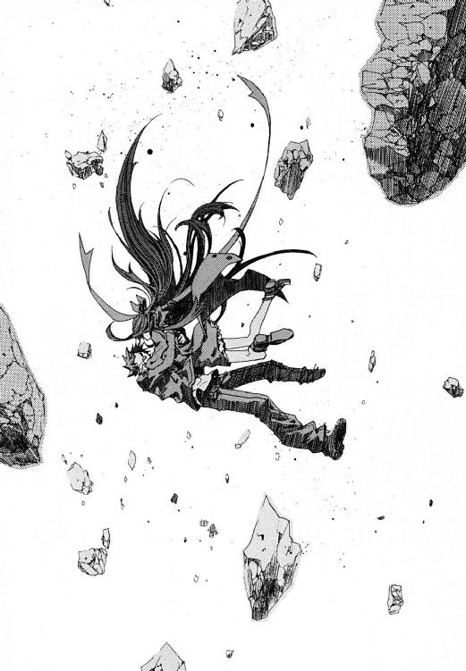
「武原さん！」
土煙ではげしく咳きこみながら、きずなは天井をあおいだ。瓦礫の落下の衝撃が近隣住民に観測された魔炎が、はげしくあがった。もうもうと、雲が沸き立つように白い煙が彼女を包み込んだ。舞った粉塵を透かして、太陽が鈍い黄金色に輝いていた。
全身の血が冷え切ったようだった。過去をやりなおしたいと思った。
そして、〝それ〟が鍵だった。
かつて《再演のバベル》への扉を開くとき、《染血公主》ジェルヴェーヌは父、慈雄の死を装った。今、眼前に繰り広げられた悲劇を、きずなは否定したいと心から願った。
そして、この下に仁が埋まっているかもしれないコンクリート塊の山の上に、《扉》はあった。
高さ三メートルを超える、巨大な金属製の両開き扉だった。
きずなは、この扉が何なのか知っていた。
かつて伝説の《神人》が再演大系に与えたという、最大の神人遺物。過去を改変するといわれる《幻影城》の入り口だった。きずなの脳裏に、父がジェルヴェーヌに刺された後の山中の光景がよみがえった。何をさせられるのかとこわくてたまらなかった。
彼女は、自分がいつの間にか廊下に尻餅をついていたことを知った。助けてほしかった。だが、武原仁はもういなかった。メイゼルに追われたとき、もしも彼女が仁について行っていたら、こうはならなかった。彼が求めたように、もっと早くこのビルを出ていたら、行き着く先は瓦礫の山ではなかった。
きずなの再演魔術は、彼女に世界を一冊の《本》として観測させる。《本》は、人間の仕草を文字として積み重ねた、膨大な〝過去〟の集積物だ。そして《人間という文字》を通して、再演大系の魔法はあらゆる魔法使いによって観測された全世界と全過去を掌握する。
「......だいじょうぶ。......今度だけ。............今度だけだから......」
きずなは、両手の手のひらをじっと見ながらつぶやいた。
再演大系の《本》が、きずなの魔法にこたえて猛烈な勢いで〝過去〟を検索してゆく。今この現実を否定するには、この〝現在〟が成立しなくなるほど決定的な変化を〝過去〟に加える。きずなは、その手順をもう知っていた。
夏の地下核戦争で、きずなに〝未来のきずな〟が接触してきた。そのとき、彼女の記憶に魔法の使い方が焼き付けられた。きずなは、その《本》に接続された虎の巻を何度も見直しながら、読み上げた。
「......改変は、魔法消去を発動している人間が近くにいないところでやること。《本》が焼かれて虫食いができたら細かい操作ができない。改変は、意志や感情の動きを絶対に操作できない。改変は、近い〝過去〟のほうが抵抗がすくない。改変で、前にやった改変自体を取り消すっていう改変だけは絶対できない。できるのは、その改変自体をさせない流れにすること。......わたしの〝現在〟を作るのにたくさん関わってる人は、抵抗で操作がむずかしくなってゆく。改変に使うなら、よく知らない人......」
求めるものを探し、きずなは見つけた。
「............あった」
最も近い変革候補点は、約二ヶ月前、八月十四日の地下都市にあった。そして、きずなは、彼女が人間ではない怪物になってしまった気がして、吐き気がした。
魔法は、〝過去〟のたったひとりを操作すれば、現在きずなが味わっている苦境が変わると告げていた。
東京地下核戦争中の八月十四日、きずなは、《魔術師》王子護ハウゼンとの決戦で武原仁が失った両目を治した。そこにいた《協会》の調整官ベルニッチを使ってだ。
再演魔術は、〝過去〟を観測して影響をおよぼす。きずなは、もっと下手な医者に前もって治療をさせることで、八月十四日のきずなに仁が重症だと気づかせないことができた。
「そっか、狩猟魔導師の軍医クレメンスさんに、子どもがいないって気づかせたら、あそこに戻ってくれるんだ。武原さんの目をすぐ治してくれるけど、クレメンスさんは下手だから、もう武原さんの視力じゃ狙撃ができなくなって。......武原さんの癌になっていた右腕、手術して、もう切り落とすしかなくなるんだ。......そっか、入院してる間に、わたしがお見舞いして、仲良くなるんだ......。そしたら、退院するときもうあぶないことはしないって約束してくれるんだ......。入院してる間に、メイゼルちゃんが死んじゃってたって知って、わたしと一緒に逃げてくれるんだ......」
彼女に魔法の使い方を刻んだ〝未来のきずな〟は、たぶんよく似た道をたどった。そして、きずなに魔法を使わせて、自分がいる〝未来〟を破壊させた。
父親の死のことで仁を責めていたはずだった。なのに、どこかでこっちの彼といっしょの未来がよいと思った。だから、彼女自身を嫌悪した。〝未来のきずな〟の願いに、泥を塗っているように思えてきた。
「......気持ち悪い。もうこんな魔法、イヤだ。......もっと気持ち悪くない、簡単な魔法がよかったよ。空を飛んだりさ、......そんな魔法でいいじゃない。もうこんなのイヤだ」
きずなは、スカートのポケットからおもちゃの指輪を取り出した。昔、十崎京香が子どもだったころ、幼なじみの武原仁にもらったものだ。もう信じられなかったはずなのに、捨ても突き返しもせず、きずなはずっとポケットに入れていた。
鼻をすすりあげていた。彼女は、気付かないうちに泣いていた。目を手でこすろうとして、砂だらけだからきっと顔がドロドロになると思ってやめた。
──自分を使えと、《幻影城》の扉がそびえていた。
「もうヤだ。お母さん......たすけてよ。みんな気持ち悪いよ。この魔法、いらないから捨てたいよ」
足が動かなかった。
彼女の制服のスカートのポケットで、何かが細かく震えていた。疲れ切ったきずなはそれを引き出した。彼女の携帯電話だった。ものを考えることもつらくて、それを開いて通話ボタンを押した。
彼女以外のひとの声を聞きたかった。この廃墟で、ひとりでいたくなかった。
〈きずなちゃん。ようやくかかった〉
十崎京香の声だった。きずなは短く悲鳴をあげた。
〈きずなちゃん。どうしたの？ 仁はそっちにいるのね。替わってくれない？〉
携帯電話から聞こえる十崎京香の声は、彼女におとらず憔悴していた。
〈仁の携帯に、一昨日からずっと連絡してるんだけど、通じないのよー。ほんと、こまるわ。仁がいたら、けっこうシャレになんない大事な用事があるから、替わってほしいんだけどー〉
きずなは、血が回りすぎた頭がうずいて、もう倒れそうだった。仁の携帯は、きずなが仁にいっしょにいてほしくて隠してしまったからだ。
「......ごめんなさい。......武原さんと、連絡できません」
仁の携帯電話の電源を入れた。メールが十通以上も入っていた。十崎京香からのメール。メイゼルからのメール。仁のことを心配してくれた友だちからのメール。きずなが欲を出して隠さねば、彼にはもっと別の選択肢があって、こんな瓦礫の山にたどり着くこともなかった。それはきずなの〝悪〟だった。
「............あ、......あ、......あ」
きずなには白状せねばならないことが山ほどあった。だが、言わないことは悪いことなのに、口が動かなかった。
〈わかりました。それでは、武原仁のことはこちらで取りはからうので、あなたはそこから絶対に動かないでください〉
「でも──」
〝でも〟どうだというのか、きずな自身にもわからなかった。衝動が形になる前に、事務的な口調になった京香がさえぎったのだ。
〈現在、魔導師公館にある《鍵》が反応しています。そちらに《幻影城》が出現していますね。現在、《鍵》には光点がふたつ現れています。ふたりの人間が《幻影城》内にいると、こちらでは判断しています。あなたよりも、専門家である我々が動くほうがよい局面です〉
「でも、武原さんはわたしのせいで......」
〈《幻影城》にあなたが行けば、バベル事件と構図が同じになります。《幻影城》と再演魔導師がひとつの場所にあれば、その場で神聖騎士団の宿願が達成される可能性があります〉
冷たい声に、はり倒されたようにきずなの首が緊張した。
〈倉本きずな。この事件の中心はあなたです。本来、これは断定できた時点であなたを殺して幕を引くべき事例でした。可能性にぎりぎりまで含みを持たせたのは、あなたが六月まで普通の日本人として暮らした、《公館》が守るべき市民でもあるからです〉
それは、十崎京香が幼なじみにだけ向けていた抜き身の厳しさだった。
〈──ですが、神聖騎士団に歴史改変をさせるわけにはいきません。それをさせるくらいなら、我々は、この国の安全を守るためにあなたを殺して終わらせます〉
きずなは、心臓が破裂しそうに脈打って胸が痛かった。
倉本きずなは頭がよいほうではない。だが、十崎京香がきずなを他人のように「あなた」と呼び続けていることには気付いた。電話口の向こうにいるのは、もはや〝家族〟のように彼女を居候させてくれた家主ではない。
「......だから、お父さんのことも......十崎さんたちはずっと......かくしてたんですか！ そうやって、わたしを居候させてくれて、わたしのことを見張ってたんですか！」
〈あなたは、普通の高校生ではありません。魔法世界にただひとつ、《魔法使いを操ることに特化した魔法》の魔導師です〉
心地よかった夢が、さめてゆくようだった。
「わたしが、なんでそこまでされなくちゃいけないんですか！ わたしが、なにか悪いことしたんですか」
〈あなたは、守られて命をつないできたことを自覚していますか？ 仁はあなたを守っていました。監視くらいで何を騒いでいるのです。何の代価も制限もなく、ただ無償で命をかけてもらえるお姫様気分だったのですか？〉
ことばにならなくて、きずなは嗚咽した。京香は、仁とちがって彼女に謝りはしなかった。
〈私たち全員が罪をおかし、全員が取り返しのつかない失敗を犯しました。ですが、だから破滅を待つしかないわけではありません。私たちを信じてください。取り返すことはできるはずです〉
彼女は、京香が自分を見捨てていたと知らなかった。だからきずなは、電話からの声に励まされた。京香のことばが、耳には心地よいが何も確約していないことも気付かなかった。
どこもかしこも気持ちが悪く、どこにも安らげる場所はなかった。だから、ほんの数日前までかこんでいた噓だらけの食卓がなつかしくなった。泣きっぱなしの彼女のまぶたの裏からしみ出るものの温度が、じわりと熱くなった。
「......取り返したいです。このまま終わるなんてイヤです」
†
十崎京香は電話を置いた。噓はつかなかったが隠したことの多い、ばつの悪い会話だった。
「仁、自分と魔導師公館の関係が冷えきってることくらい、説明しときなさいよ。変なやせガマンするから、きずなちゃんが簡単にだまされるのよ」
公館本館は、あわただしかった。約三十分前、上野公園で爆発物による被害が出た。死者二名、重軽傷者十名以上を出したこの爆発事件に、警察は夏の国城田事件以来の警備態勢を敷いた。清水健太郎ら《公館》とつながりのある警察庁警備部も、そちらに注力するよう方針変更した。爆発が過激派による攻撃のおそれがあったからだ。
聖騎士暴動の対策本部を設営中だった警察官たちが、作業を中断して引き揚げはじめていた。警察の仕事は日本の治安を守ることだ。そして、過激派は、彼らにとって魔法使いや神聖騎士団よりわかりやすい敵だった。
神聖騎士団を防ぎ止める最大の盾は、建造途中で瓦解した。まさに最悪のタイミングの、警察が引っかからざるを得ない陽動だった。
事務官十崎京香は、最悪の結果を覚悟しつつあった。
「魔法使いたちにとって、この公館本館は恐怖と力の象徴です。けれど日本政府には、非公然機関の秘密裏に再建しなおせばよい施設でしかない。両者の意識の差を、魔法使いたちは見事に読んでいましたね」
《公館》と日本の魔法使い政策は、戦後六十年間足を止めていた。だが、神聖騎士団には機械化聖騎士師団ができていた。国城田事件やワイズマンの誕生にも、魔法使いたちの時代に合わせた基礎技術や組織作りがあらわれていた。
京香は、数時間前に移ってきたばかりの二階臨時会議室をながめた。意思決定の場に陽光が差そうと、彼女たちの仕事は薄暗いままだ。
「今度の爆発事件は、神聖騎士団のやり口ではありませんね。ここまで圧倒的に勝っているのに、無差別に市民を巻きこんで囮にするのは、彼ららしくありません」
京香はかつかつと机を人差し指で叩いた。
「これは、むしろワイズマンの手口です。タイミングが適切すぎると考えれば、内通者の存在を疑うべきかもしれません」
彼女たちは、聖騎士五千騎に五百人以下の戦力で当たる絶望的な状況に逆戻りしていた。公館本館の命運は、嵐の夜に持ち出された一本の蠟燭にひとしい。風が当たれば消えるだけだ。
こんなときになっても、魔法学者溝呂木は暢気なものだった。
「狩猟魔導師中隊──あの地下住民たちはどうかね」
ノートパソコンのキーをたたき、溝呂木は、忙しく過去の観測値を呼び出しては額に指を当てて考え事をまとめていた。魔法使いの起こす惨劇を魅力的な実証データあつかいしていた。
京香は、この三日間の戦闘と犠牲者のリストを呼び出した。地上で暮らしだしたばかりの彼らが、もう十人以上も戦死していた。
「監視は万全です。彼らの仕業ではありません。ワイズマンにしても、浅利ケイツは爆発当時エレオノールの部屋にいて聖騎士の襲撃を受けています。彼をおとりにして、本当のワイズマン本隊は裏側で動いていたのかもしれませんが」
溝呂木が、キーボードを叩く片手間につぶやいた。
「魔法使いが魔法ではなく爆弾を使うなど、つまらん話だな」
「ですが、我々を丸裸にするには有効です。敵は、必要なだけ爆弾騒ぎを長引かせて、公館本館から警察を引き離し続けるでしょう。訓練を受けた魔法使いが警察の包囲網を抜けられることは、国城田事件で証明済みです」
公館本館が陥落して一番利益を受けるのはどの勢力か、京香はずっと考えていた。《協会》は日本政府と交渉を断った。陽動が彼らの裏切り行為である可能性も高かった。
武原仁というカードを切る時期を誤ったと、何度も頭をよぎった。京香は、血がにじむほど奥歯を嚙んで、後悔を判断の枠内から追い出した。
「溝呂木さん。《賢者の石》が《幻影城》にある可能性というものは、あるものですか」
魔法学者が、煮殺されようとしているのに楽しげに口角を吊り上げた。
「もちろんだとも！ 《賢者の石》がいかなる素性のものかにもよるがな。《石》から作られる神人遺物が、消去を受けても魔法を取り戻す性質には、諸説ある。が、その中に、この世界の時間の〝系の外側〟にある何かの端末だからだという説がある。《幻影城》は、すくなくともこの世界の外に繫がれているな」
京香の中で、神聖騎士団の動きが一本に繫がった。アンゼロッタたちは、倉本きずなを追い詰めて《幻影城》への扉を開かせたかったとも読めたからだ。
陽光は、ただ静かに窓から注いでいた。口を開いたのは、それまで黙していた《鬼火》東郷永光だった。
「十崎よ、どう討ち合う」
決断のときだった。事態は一刻ごとに破滅へ滑り落ち、待って勝つ目はゼロだった。
「《賢者の石》を奪取します。仕事は《魔獣使い》神和瑞希にまかせます。他のみなさんは、公館本館の警備のみに注力してください。どの勢力になるか、本館へ仕掛けてくることは間違いないはずです」
京香は、あえて起死回生の一手を選んだ。ジリ貧で状況もわからないからこそ、こちらは明確な勝ちを摑みに行くのだ。溝呂木が、検討済みの案件だったようによどみなく返した。
「《魔獣使い》の最大の武器は、軽快な機動力と防御力と耐久力だ。だが魔法消去に弱い。《幻影城》なら、電波が届かず《魔導師殺し》の脅威もないな」
専任係官の柱石たる重鎮、《鬼火》東郷が覚悟を問うた。
「《協会》の連中は姿を消し、本館魔導師区画はもぬけの空。本館が陥ちれば、貴奴らは《門》まで雪崩れ込むぞ」
《協会》の最重要施設である《門》は、本館魔導師区画と通路で繫がっているといわれている。聖騎士たちが《門》を占拠すれば、この世界における《協会》勢力は壊滅する。
京香は、士気をおもんばかって黙った。神聖騎士団が本気で戦力をかけてくれば、公館全戦力をかけても防衛しきれない。むしろ、緊急の救援要請にどれだけ速く警察に対応してもらえるか次第だった。
「──獲れる可能性のあるものを、獲りにゆきます」
京香は、この死地に後悔なく定まった。そして、落日へ向かう魔導師公館の、最後の方針は定まった。
「倉本きずなも、今の局面なら使い方次第で切り札になり得ます。カードは手元に引き入れましょう。ここまで毒が回ったら、なりふりかまわず活路を探すべきです」
「再演の娘か──。だが、貴奴ら、再演の娘を手中に入れれば長年の宿願を果たすぞ」
神聖騎士団に手に入れられるくらいなら、倉本きずなは殺すべきだった。だが、神和瑞希に親友をやれとは言えなかった。また専任係官の離反を招くおそれすらあったからだ。
「必要になったときの保険に、《無双剣》セラ・バラードに処断を依頼しておきます。義理を重んじる彼女は、《協会》の仇敵に宿願を達成させないはずです」
「心得た。余所者を頼るのが新しいやり方だと言うなら、それも時代の流れだろう」
古い魔導師公館を支え続けた剣客が、音もなく刀を引き寄せた。そして、修羅場へ向かうため、席を立った。京香の胸に、ふと、これが最後のチャンスであるような生死の気配がよぎった。武原仁が、きずなについて《公館》に来る可能性のことだと思った。
「たとえば......もしもですが、斬るべき相手がここに現れたら、あなたはどうしますか」
《鬼火》の宣告が、部屋を照らす日光を白刃のぎらつきに変えた。
「どうあろうと、筋は通す。──それだけのこと」
†
《幻影城》への侵攻は、聖騎士将軍アンゼロッタ・ユーディナ以下、千騎の騎士をもって行う。
参謀ベレーノ・ネロが立案した作戦の開始時刻は、発令からわずか三十分後だった。上級聖騎士リュリュ・メルルが直談判に向かったのは、その侵攻軍に選出してもらうためだ。
神聖騎士団は、今から四分前、再演魔導師が《幻影城》を召還したことを観測した。この世界の外に繫留された《幻影城》が、《扉》を開いた。神聖騎士団は、近づいたこの魔法遺物をとらえて、現在たぐり寄せている最中だった。機械化聖騎士師団はこれから《幻影城》に乗り込む。一種の海賊戦法だった。
ベレーノ・ネロは、指揮所で諸事務の報告を聞きながらコーヒーを飲んでいた。リュリュを見とがめて、参謀その人がよく通る声で問うた。
「言いたいことがあるなら、言ってみるといい」
リュリュは、踵をそろえて姿勢を正した。
「おそれながら、作戦決行寸前だというのに、ここは信仰のにおいがまったくしません。米軍基地での間借りが長すぎたのではありませんか」
少女のほとんど無礼な直言を、ベレーノは興味深そうに受け止めた。
「私に、信仰を感じないか。......なるほど、たしかにもう十年も、祈りの時間には目だけつぶって戦争のことばかり考えていた」
冒瀆だと激しかけ、リュリュはそれがベレーノなりの諧謔なのだと気付いた。決して鎧をまとわないこの参謀は、それだけ戦場ばかりを飛び回ったのだ。
「それで枢機卿のご息女でメルル家の跡取りであらせられる、信仰厚きリュリュ様が、何のご用です」
「私は、諧謔を解しません。率直に用件を申し上げますと、《幻影城》への侵攻隊に、私を加えていただきたいのです」
せまい割に人の多い指揮所の空気が凍った。リュリュが、エレオノールがいるかもしれない前線へ行くには、隊に加えてもらうほかなかった。エレオノールが破門を受けたことは聞き知っていた。だが、だからこそリュリュは、前線に出続けるほかにできることを思いつかなかった。
「君は、再演魔導師と夏に数回接触があったな」
「はい。地下鉄でワイズマンが核爆弾を運び去るときに一度、地下空洞での戦闘で一度です。すれちがったようなもので、会話をかわしてはいません」
師団参謀は、眼鏡を外してレンズの汚れをぬぐった。
「上出来だ。隊への参加を許可しよう」
リュリュは、こんなに簡単だと思っていなかった。信仰は薄くともベレーノの作る組織は厳格だからだ。師団参謀が眼鏡をかけ、神経質に位置を直した。
「《魔術師》王子護ハウゼンが余計なことをしてくれた。再演魔導師が、予想を超えて強くなりつつある。再演干渉に一定の耐性を持つ騎士が、できるだけ多く必要だ」
神聖騎士団は、その一万年の戦いの歴史で、あらゆる魔法と戦ってきた。再演大系は、そのもっともタチの悪い敵のひとつに数えられていた。だが、リュリュは、耐性の存在など聞いたことがなかった。
「再演魔術には耐性が存在する。彼らが再演干渉で情報自体を封じこめるせいで知られていないだけだ」
「封じるとは、知識を持つ魔法使いを未来から狙い撃ちで抹消してきたということですか」
潔癖な少女には、エレオノールの転落のそばに常にいた再演大系が、卑劣な〝敵〟に思えた。
ベレーノが静かにリュリュへと視線を注いでいた。彼女は、しばらくその無言の時間に付き合って、ようやくそれが何を意味する時間だったかに気付いた。未来から魔法で彼女たちを狙い撃ちする狙撃者から、再演への耐性の存在を知ったリュリュが攻撃されるかを試されたのだ。
「君も〝こちら側〟か」
ベレーノが、再演干渉を防ぐためか、提げていた《魔導師殺し》を抜いて作動させた。リュリュは、ふと気味の悪いことに気付いた。指揮所のオペレイターたちが、なぜか全員彼女たちのほうを向いていなかった。
「再演の魔女も、時間の矛盾から完全に自由ではない。魔法消去にすら遡行抵抗がある。〝過去〟へはたらきかける力には必ず限界がある。再演大系の限界は、術者の〝現在〟ある状態をつくった者への干渉に、強い抵抗がかかることだ。ちょうど普通の魔法が魔法消去を受けたときのように、抵抗によって再演魔術はまず精度を落とす」
リュリュは、ベレーノが言ったような〝こちら側〟へわたった実感などなかった。ただ、彼女にきずなと接触があったことが、何かを変えつつある予感はあった。現にベレーノは、彼の言う耐性をつけるため、危険をおかしてエレオノールの部屋できずなと接触したのだ。
「再演魔導師が最も強力になるのは、他人の力を借りたときだ。だから、本来、多数の仲間をまわりにはべらせておきたいはずだ。だが、この予測を、神話の英雄のケタ外れな活躍の原型である《光輝ある破滅》の魔術は裏切る。神話の英雄はたいていひとりなのだ。よく知った相手を操る再演魔術は、命を預けられない確実性しかないのだ」
怒りをぶつけるべき〝悪〟が、そこにあるように思えた。再演魔導師は、バベルのときもグレン事件でも国城田事件でも、いつも事態の中心近くにいた。他人を操る奇蹟など使いようがない武原仁とちがって、エレオノールのことにも関わっているのではないかと疑った。戦慄と興奮が、リュリュの若い体を冷気と熱で揺さぶっていた。
「参謀殿は、再演大系におくわしいのですね」
気の高ぶりが、声の張りになって出ていた。ベレーノは、リュリュのような気の逸りとは無縁だった。
「友の受け売りだ。かつて《慈悲深い剣》マルク・フェルゼーと、私はともに働いたことがある」
リュリュは、将来を嘱望された男の名を聞いたことがあった。かつて、エレオノールと同じ《神の声を聞く者》に数えられた、次代を担うと期待されたひとりの楽器師がいた。彼女たち聖騎士が使う神音楽器のいくつかも、天才楽器師マルクが出奔前に作ったものだった。
「父も、彼のことを惜しがっておりました。マルク・フェルゼーがいれば、機械化楽器の隆盛を肥やしにして、伝統楽器もまた絢爛たる発展を見ただろうと」
ベレーノ・ネロはおだやかに微笑んだ。
「彼は特別だった。世界のありとあらゆるものを、彼は神音で記述しようとした。世界を描いた神の絵筆のような男だった。だからこそ、再演大系、そして《幻影城》に心を奪われた」
神意を作戦のかたちに翻訳する師団参謀が、過去の中で生きる老人のように視線をさまよわせた。ベレーノの傷をかいま見て、リュリュはマルクをも奪った倉本きずなへの軽蔑をいっそう強くした。
作戦決行の時間は、せまりつつあった。今日で何かが決定的に変わると、リュリュは確信していた。
「私たちは、《賢者の石》を手に入れるでしょう。その次は、救いに手を掛けるための神人遺物です。この世界は神の降臨を見て、すべての戦いは報われるでしょう」
信仰者である少女を、神に祈ることをやめた参謀が見おろしていた。そして、彼女に顔を見られることを避けるようにリュリュの隣を通りすぎて、指揮所を出て行った。
「《幻影城》に落下することを、《賢者の石》自体も待っているはずだ」
廊下を去る自信に満ちた背中が、ひどく寂しく、そして厳しかった。それがいかなる心を映しているか、彼女にはわからなかった。ただ、この苦悩でつくられた階段がどこへ向かっているかだけは確信があった。
神聖騎士団の、祈りの輪を繫いだ鎖は、きっともうすぐ救いに到達する。
まぶたを開いたとき、そこは廃ビルではなかった。
仁は、冷たい床に倒れて空を見ていた。その空はどこまでも遠く広かった。
透き通って冷えた大気を透かして、横たわったまま首を左にめぐらせば地平線からのぼる朝日が見えた。天頂はどこまでも続く青空。右へ視線を向ければ世界は落日の紅に染まっていた。自然としてあり得ない、理屈ではかろうとすると狂気に誘われるような風景があった。
体を起こしただけで首と後頭部が折れそうに痛んだ。
仁は、廃ビルの吹き抜けを、メイゼルと抱き合うようにして落下したはずだった。
それが、視界に広がるのは、おそろしく広大な、水晶だけで造営したような壮麗な箱庭だった。床は継ぎ目のない巨大な水晶の板だった。百メートル下まで見通せるほど透明度の高い床材に、巨大な獣が封じられていた。
夢を見ているわけではなかった。歩いてここにやってきたはずもない。魔法で跳ばされてきたのだ。仁は、この世のどこの風景でもないこの奇妙な場所を知っていた。
「《幻影城》か......」
仁たちにとって、そこは神話や伝承に語りつがれる山間の楽土の原型だった。そして、バベル事件の終決の地で、彼らの偽物の〝家族〟がはじまった場所だった。
仁は、立ちあがる気力もわかず、それを眺めた。さっきの戦闘は仁の敗北だった。武原仁は、弱くなった。保護者として守っていた小学生にまで乗り越えられたと思うと、目の前がまっ暗になった。七転八倒するほどの羞恥と後悔に襲われた。
数えてみたら、魔導師公館を解雇されてから一度も戦いに勝っていなかった。生徒会選挙のニガッタ戦では屋根の崩落に巻きこまれて気を失った。家庭訪問ではセラに殴られて昏倒した。アンゼロッタに完敗し、ベレーノ・ネロと《極星を追う者》に敗走し、ついにはメイゼルにまで実質的に敗北した。
「泥沼の五連敗か......。俺、よくまだ生きてるよな」
「........................ごめんなさい」
振り向くと、メイゼルが《幻影城》の水晶の床にしゃがみこんでいた。爆発しきった後の少女は、完全に無防備だった。彼をかばったときの傷で、ワンピースの背中が血みどろになっていた。
仁は、一歩も動けないガス欠の彼女に怒ることができなかった。彼自身が情けなかったからで、少女の縮めた肩があまりにも幼かったからだ。
「メイゼル。どんな理由があったにしろ、俺は、教師としておまえを説教してもいいところだよな。......俺、いちおうまだ六年一組の副担任だしな」
髪を乱したメイゼルが顔をあげた。ずいぶん泣いたように目をまっ赤にしていた。
「怒ってるの？ 昼間なのに、勝手にガッコウを早引けしたから？」
仁は、歯を食いしばって鼻をすするメイゼルを、ただ先生として諭した。
「学校でずっと注意してきただろ。ケンカをしようとする前にもっと相手の話を聞けって。おまえ、学校で俺の話をちゃんと聞いてたか？」
彼にとっては、今一番大事なことはきずなを守ることだったはずだ。なのに、聖騎士がどうのと具体的な話をできなかった。メイゼルにすら負けたからだ。
「ぎいでだわ」
鼻声が恥ずかしかったか、また顔を伏せてしまった。ほつれた黒髪が、傘のように彼女の顔を覆い隠した。誇り高い魔女は、重傷を負ったときよりひどく唇をゆがめていた。
「ごめんなさい。せんせの魔法消去って、どのくらい魔法を防ぐかわからなかったから。だから、どのくらいやったらせんせをつかまえられるか、わからなかったの」
「バカ。俺が戦いでぼろぼろになってもそうそう諦めないって、おまえ、そばで見てきただろ」
仁は、マンションの中庭に落下する寸前、意地っ張りのメイゼルの涙を見た。六月に《幻影城》へ来たときは死ばかり見ていた少女が、今日はこんなにも身の回りのことに執着していた。ひどい目に遭ったのに、あたたかい感情がわいてきて、仁はちいさな魔女を怒りそこねた。
せっぱ詰まった時期に襲ってきたことを、問い詰めようと思った。夏にお願いをしたままになっていたことを、少女にあやまろうと迷った。《公館》の専任係官でなくなって人間関係が変わることに、きちんと向き合うべきだったと後悔した。
「おまえを守るなんて言っといて、負けてたら世話ないな。......俺がケガをしても自業自得だ。けど、俺がおまえの先生だってことは、ずっと変わらないんだぞ」
冷静に仁と顔を合わせることなど、考えていなかったかもしれない。少女の思い切りは、勇気を通りこして蛮勇に達していた。
「カクゴは決めてたのよ。今日で決着をつけるつもりだったの」
「焦らせたのは俺だな」
仁は、立ちあがって見せた。おとなとして、メイゼルより先に動きださねばならなかった。ここで踏ん張れなければ、彼は完全に終わりだった。
メイゼルが、誇り高くまっすぐに顔をあげた。どこで覚えたのか、ワンピースの裾から白い膝小僧をまる出しにして正座をした。
「それでも、あたしは、あたしらしいようにしか生きられないわ。せんせがどうとかじゃなくて、あたしが、せんせを欲しかったの」
あめ色の大きな目が、強い力で彼をとらえた。
仁は、ここにいる撃たれて瀕死だったメイゼルを助けるため《公館》を飛び出した。地下都市で、子どもの目に〝悪〟は映ると思った。ヒーローみたいに一瞬でもなれる気がした。だが、地上に戻ってきた仁は、情けない打算で浅利ケイツを見捨てた。弱くなった姿をさらけだした仁は、子どもであるメイゼルにまで打ち倒された。
彼は、いつも場当たりで、敵を斃せば解決できることに流れた結果、ここにいる。
「俺のやることは矛盾ばっかりだよ。ひどいもんだ」
「......せんせには、やっぱり、あたしが必要だわっ」
少女が、正座のまま、太ももの上でちいさな手をぎゅっと握った。そして、ためらいながらもほとばしりを抑えきれないように言い切った。
「............せんせは、あた、あたしにっ、か、飼われたほうがいいと思うの！」
そして、まっ赤になって体を縮こまらせた。彼女が、怒られるのがわかっている子犬のように震えていた。彼女なりに勇気づけてくれているのだと思うと、仁は息をするのもつらかった。
「いや、それよりも先に、はっきりさせなきゃいけないことがあるだろ。なんで俺たちは《幻影城》になんかいるんだ？」
仁は耳の穴を小指で押さえた。あまりにも音がなくて、耳鳴りがする気がしたのだ。どこまでもただ真っ平らな水晶の舞台が続いてゆく殺風景な世界では、声を発していないと正気を保てなかった。
「魔法で跳んだの。......まわりじゅう破片だらけで転移は危なかったし、どしゃどしゃ大きいかけらが落ちて来るんだもの。《幻影城》って、せんせの世界の外にあるんだけど、あのときは近くて跳べたの。この世界の境界って、ふつうなら《門》がないと出入りできないのよ。成功したこと、ほめてもらっていいくらいなのよ？」
メイゼルは、かたい床に慣れない正座をしたまま、微妙に得意げだった。
仁たちが住む世界と外部をつなぐには《門》が必要だ。そもそも自由に出入りできるなら、《協会》は《門》をおさえても権力などつかめない。仁は、あることに思い至ってぞっとした。
「近かったって、ちょっと待て。おまえ、ここからどうやって出るつもりなんだ？」
「きずなが《扉》を開いたら、出られるんじゃないかしら。《幻影城》って、再演大系が神人からもらった遺物なんでしょ？」
「跳んで入ってこられたけど、自力だけじゃ出るのは無理ってことか？ おまえ、こんなとこまで携帯電話の電波だって届かないだろ。どうやって連絡するんだよ」
なんにもない水晶材の荒野に、どこからか風が吹いた。見渡す限り、世界には仁とちいさな魔女しかいなかった。
メイゼルの泣き笑いも、激情でまるはだかだった。
「せんせ、あたし、けっこう嫉妬深いみたい。だから、何年もふたりっきりでもそれはそれで......」
ちいさな魔女は、きずなと仁の間に入れなくて、勢い余って無理心中をはかったようなものだ。傷だらけになる生き方しか選べない人間が、彼のまわりには多すぎた。
「俺も、いろいろ悪かったな。メイゼル。ケガは大丈夫か？」
「このくらいはよく治してるから、だいじょうぶ。せんせの手とか、ちいさいケガだったからあたしの魔法でもイケたと思うんだけど、どう......かしら？」
少女は、正座のまま怒られるのを待っているようだった。ついさっき、きずなに慈雄のことを告げた仁自身に重なった。だから、仁は、彼女のほどけかけたリボンを結び直してやった。
「......あ」
驚きに満ちた少女の声が、幻夢の城の大気を淡く染めた。彼は、自分がしてほしかったぶんメイゼルにやさしくした。そう思うと、逆に、きずなに何を求めていたのだろうと息を吞んだ。
「俺は、ダメな男か」
「せんせは、すっごくダメな人よ。あたしが怒ってほしがってるときまでこんなに甘やかしてたら、しつけなんてできないのよ？......ほんと、ダメなせんせだわ」
そう言ってスカートをぎゅっと握りながら、彼女は決してリボンを結ぶ手を拒絶しない。
再演のバベルすらない見渡す限りどこまでも広がる舞台に、いるのは仁とメイゼルだけだ。
魔法使いたちの間には、この神人遺物があらゆる願いをかなえるという伝説がある。だからこそ、《幻影城》は、人界のあらゆる〝悪〟を託されてきた。失わないために、都合の悪いものを隠蔽する〝悪〟。したくないことを、いつまでもせずにすまそうとする〝悪〟。切実な願いを無理に押しつける〝悪〟。
今日一日、もう十分すぎるほど神経をすり減らした。だから、こんなにも透明な〝悪〟の園から離れて、アパートの彼の部屋に帰ってゆっくりしたかった。それは、もう戻れない、あたたかな夢だ。
それでも、今だけは息のあたたかさを交換していそうなほど近くにいた。世界が単純に思えた。メイゼルの艶やかな黒髪の根元に白いつむじを探しながら、おだやかな時間が続かないことを自覚していた。
「ああ、やっぱり来たか」
だから仁は、それが突如現れたとき、死刑宣告を受けたかのような重い納得を覚えた。
一瞬で、見渡す限りに数え切れないほどの聖騎士が集団で魔法的転移をしてきたのだ。
突如現れた、一千騎を数える聖騎士集団に、彼らは包囲されていた。
神聖騎士団の攻撃隊は、待ち伏せを受けて立つかまえだったかのように抜剣していた。
仁の背中に、冷たい汗がびっしり浮かんだ。だが、恐怖が凝り集めさせた死線の集中力が、流し見た一見で、彼に敵の編制を読み取らせた。黒い防弾装備の騎士が約百人ずつの九つのかたまりを作って、仁を中心に約百メートルの位置にいた。つまり敵の戦力は、九個ないし十個中隊だ。ここで総力戦になっても魔導師公館を粉砕できる大戦力だった。
仁は、だからこそ撤退をためらった。
「京香姉ちゃんも、こんなのと正面からやり合うよりは《賢者の石》を狙うよな。結局、守ってるだけじゃジリ貧で、いつか聖騎士に潰されるんだしなあ」
いきなり千人に取り囲まれるなど、死地以外の何物でもなかった。だからこそ、なつかしい古巣と仲間が脳裏を駆け回った。彼は、魔導師公館と十崎京香が逃げを打たないと、よく知っていた。
だから、彼の思考は専任係官として答えをはじき出した。神聖騎士団が準備万端であるとは、彼らが《賢者の石》を《幻影城》で入手できると読んでいるということだ。《幻影城》の舞台は、視界の続く限り、ただ真っ平らに十キロメートル以上も広がっていた。そして、彼自身と千騎の聖騎士たちがほぼ同じ位置に到着した事実こそ、仁たちが争う死線だった。
「ほぼ同じ場所に現れるってことは、《幻影城》に外部から入ってきたとき、出現する座標はここに固定されてるわけだ。......ってことは《公館》から《賢者の石》を狙って来る連中も、ここに現れるわけだ。こりゃキツイよなあ」
当然、そのとき仁の元同僚も、聖騎士千騎の包囲のド真ん中に出現する。逃げようもなく袋だたきだった。十崎京香はかならず《賢者の石》を狙ってくる。公館は、いつでもここへ扉を開けられる。バベル事件で使われた幻影城の《鍵》を、現在持っているのは京香たちなのだ。
「逆に、俺がここに留まって生き残れればだ......。《公館》の戦力が突入してきたとき、一回は連携できるってことだよな。《賢者の石》をせめて《公館》か俺が手に入れないと、俺たちは次がない。きずなちゃんの安全を確保するのなんてまず無理だ」
魔導師公館にとって、仁は処分すべき裏切り者だ。だが、それでもこの土壇場で賭をするなら、相棒は古巣だった。
黒い防弾装備の機械化聖騎士師団は動かなかった。魔法も使えないのに一千人の正面に立ち続ける仁がいるせいだ。聖騎士たちは慎重だった。仁が退かないことを《公館》のワナだと疑う余地は、実際、十分にあった。
〝個人〟は決して〝社会〟に勝てないと、騎士たちもよく知っている。神音大系という社会の利益を背負った一千騎を前に、彼がここにいること自体が、ハッタリだった。
彼は少女の、やわらかい手を引いて立たせた。
「メイゼル、おまえは逃げるんだ。おまえはこんなことに付き合わなくていいぞ」
だが、三百六十度すべて聖騎士の剣に閉ざされた檻で、メイゼルは不敵に微笑んだ。
「せんせって、いっつも数とか〝社会〟とか気にしてるのね。でも、ひとりの魔法使いの意志は、世界ときっかり同じだけ重いの。ひとりの魔法使いが、たった一発の魔法で世界を滅ぼすことだってあるんだもの」
彼女は、あまりに多勢の敵を前に、二本の脚でしっかり踏ん張っていた。
「あたし、前にここに来たとき、けっこうお荷物だったでしょ。だから、いつかフクシュウできる日を待ってたの」
つないだ手が緊張に汗ばんでいた。驚くほどかわいらしいメイゼルの指が、ぎゅっと仁の手をにぎってきた。まだ幼い手も、腕も、肩も震えていた。千騎の聖騎士に囲まれて、恐くないはずがなかった。
「確実に死ぬぞ。学校にも行けなくなるんだぞ」
「せんせ、今がどん底だって思ってるでしょ？」
メイゼルが、体ごとぶつかるような真剣さで見あげていた。
「でも、こんなこと、刻印魔導師には当たり前のことよ」
仁の心臓は、一瞬止まった。最年少の刻印魔導師の運命は、いつも〝これ以下〟だった。メイゼルはたったひとりでこの世界に来た。罪人として〝社会〟からはじき出されていた。六十億人の悪鬼の中に放り込まれた。命を紙くず同然にあつかわれた。このとき最低な仁より、刻印魔導師のすみかはもっと過酷だった。
こんなにも寒く頼りない場所に、ちいさな魔女は立ち続けていた。だからメイゼルは成長した。それを仁が止めることなどできない。仁は、つないだ手に力をこめた。
「──ああ、そうだな。ごめんな。俺は、おまえがどんなふうに立っているのか、全然わかってなかった」
「せんせ、今、あたしのすぐそばにいるってわかる？ 『刻印魔導師の世界にようこそ』よね？ せんせ」
《幻影城》は、仁たちの世界の外に繫留された神人遺物だ。だから一切の魔法消去がはたらかない。どんな大きな魔法も使い放題だ。そして、騎士たちが剣を振るっても逮捕に来る警察もない。水晶の床と遠く高い空が、彼らを取り巻いていた。
────騎士たちが足を踏み出した。
ゴウと、そのたった一歩で世界がどよめいた。
一千の足音が、耳元で響くような心地がした。
仁は、〝社会〟に押しつぶされそうだった。だからこそ、これまでメイゼルが見せてきた、誇りと強さがまぶしかった。
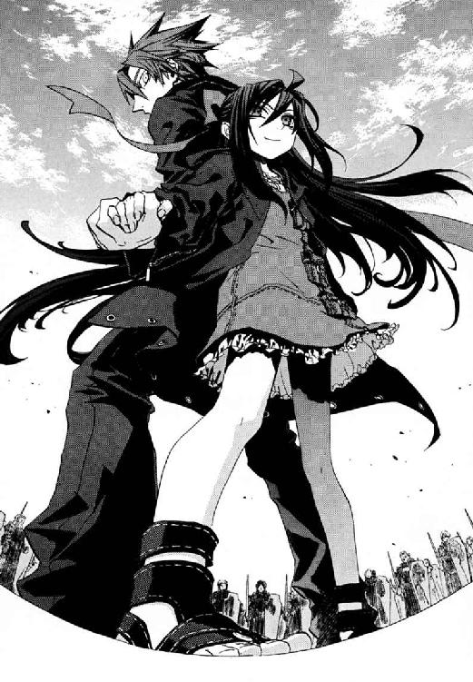
「刻印魔導師の世界ってのは、こりゃ、恐いなんてもんじゃないな」
だからこそ、まだ小学生だというのに、メイゼルは誇り高く義理堅く自身を律する。仁と少女の距離は、前に《幻影城》に来たときよりもすこし縮まっていた。
「こわくなんてないわ。こんな近くにせんせを感じるの、はじめてだもの。あたし、......すごくドキドキしてる」
戦闘集団に慈悲はない。そして、戦闘集団は意思疎通を必要としない。巨獣のように立ちふさがるものを蹂躙するのみだ。
機械化聖騎士師団の黒い防弾装備の騎士たちが、一個中隊、前進をはじめていた。
聖騎士たちの集団戦は、普通の魔法使いで高位魔導師に勝つために発達したものだ。十名ないし十二名からなる小隊は、高位魔導師と戦う基本単位だ。より強力な相手には、小隊が集まった百人規模の中隊。本当の大物魔導師と戦うには、大隊という、中隊が寄り集まって五百から千名規模になった組織でぶつかる。そして《三十六宮》クラスの超高位魔導師を仕留めるために、頂点たる聖騎士将軍たちに率いられる師団以上の戦闘単位がある。
九個中隊なら、かなり強力な高位魔導師九人と互角以上に殴り合える。仁とちいさな魔女を叩き潰すなど、百名一個中隊で十分すぎた。
「────ゴーティエ中隊、前へ！」
号令が、彼らを包囲する陣のひとつからあがった。
狂騒すらなく、運動会のマスゲームのように騎士たちの巨大なひとかたまりが仁たちへと迫ってきた。隠れるものなどなかった。ただ何もない平板な舞台が、彼らのための墓場だった。
騎士たちは、黒い防弾装備で透明な樹脂製の盾を構えていた。各々、白い光をはなつ剣を握っている。伝統的な、剣の切れ味と対魔法耐久力をあげる祝福魔術だ。《幻影城》内では、米軍基地への通信電波が届かず《魔導師殺し》が使えない。
仁は、近づきつつある騎士隊と周囲の動きをうかがい、周囲の情報を集め続けた。
接近しつつある騎士中隊は横に十二名、縦に十二名の騎士を並べた方陣だ。九個中隊に包囲された中で、一個中隊に押しこまれることには重大な意味があった。よりせまい包囲に圧縮されて、逃げ場がなくなるからだ。
「せんせ、なにのんびりしてるの？ このままじゃおいつめられるだけよ」
まなじりを決したメイゼルも、焦っていた。少女の足下に魔法陣が浮かび、《魔力》が彼女の手元に集まっていることが可視化される。
八十メートルまでせまった騎士隊最前列のひとりを、メイゼルのはなった紫電が打った。ついさっき前進の号令をあげた隊長らしい騎士を狙ったのだ。落雷そのものの破裂音が大気を震わせた。だが、それだけだった。
魔力型魔術最高出力をほこる円環大系の人工稲妻が、軽く受け止められたのだ。
「なにこれ！」
続いて二発、三発と、雷鳴が轟き稲光が走った。聖騎士たちは、集団戦では、防御魔術《光背》を協力して重ねることでより強力な防御魔術とする。百名中隊の複合《光背》を押し立てながら、騎士たちは揺るぎすらせず、じわりじわりと近づきつつあった。
仁は、メイゼルの雷撃を意にも介さず前進し続ける先頭の美丈夫に見覚えがあった。ゴーティエ・マルキオ、強化試験部隊をまかされていると言っていた男だ。
メイゼルの足下の魔法陣が、眠りから目覚めたようにおおきくなった。水晶の荒野を、強い風がゴウと洗った。その風はやむこともなく空中の一点に収束していった。少女が、みずからの力を問うようにささやいた。
「だったら、これはどう？」
純白の閃光が大気を灼いた。ゴーティエ隊の正面に前触れもなく出現した光の奔流が、はげしく騎士たちに噴き付けたのだ。圧縮した大気のジェットを円環魔術で作った超高熱で加熱して敵にたたきつける、熱プラズマの槍だった。
「いっつもいっつも、失敗すると思ったらおおまちがいよ！」
少女が、思いをこめて拳を強く握っていた。メイゼルは、この光の槍を投じるたび手痛い逆襲を受けていた。プラズマ流は術者の手元で作るため、敵に接近戦をいどまねばならなかったせいだ。だが、今回の純白の光槍は、メイゼルから七十メートルも離れた場所から聖騎士ゴーティエの鼻先を襲っていた。彼女は、安全圏から撃てるよう魔法の改良に成功したのだ。
装甲板すら灼き切る摂氏三千度を超える高熱が、大気に拡散して水晶の床材を溶かした。
だが、溶岩のように赤熱した床を、力強く聖騎士隊のブーツが踏んだ。
陽炎の向こうから、亡霊のように騎士たちが進んできた。生あるものを刈り取りに来た、死神の群れのようだった。
ちいさな魔女が、途方に暮れたように仁を見あげた。
「せんせ、これってどうやって勝つの？」
戦力の縮尺がちがいすぎた。敵を打ち倒すどころではなかった。それどころか仁たちは、一千騎によるこれから必ずはじまる魔弾大斉射を、どうにか生きのびねばならなかった。
「こういうときは、千発の魔弾で狙われてどう生き残るかから考えるんだ。俺が魔法消去で魔弾の照準を狂わせて、おまえが高速で空を飛んで魔弾を振り切るしかないんだから、冷静な判断ができなくなったら終わりだ」
包囲された仁たちにとって、この戦いは簡単に、正確な判断がくもる泥沼になる。だが、騎士隊はじっくり構えて統制のとれた射撃ができる。機会が来るまで逃げ回るしかないのだ。
メイゼルの顔はすでに極度の緊張で蒼白だった。
「せんせ、援軍が来るとでも思ってるの？」
「来るさ。もし俺が魔導師公館にいたら、突入役は俺に回ってくるはずだったからな。京香姉ちゃんは絶対やられっぱなしで終わらない」
──そして、魔弾の嵐がはじまった。
九個の中隊から、一千羽の半透明の鷲の群れが舞い上がった。聖騎士たちの標準武装である魔法誘導弾、概念魔弾だ。空が翼に覆われるような、圧倒的な光景に仁は息をのんだ。仁の体にも、メイゼルの白い肌にも、傷痕のように魔法の赤い誘導マーカーが至る所に撃ちこまれていた。魔法で構成された一千羽の猛禽の群れは、このマーカーを目指して突撃してくる。そして、当たれば彼らの体は肉片も残らず血霧のように砕け散る。
仁は魔法消去を発動し、彼と少女の体表を埋め尽くすマーカーを焼き切った。すべての魔法が消えた彼の視界で、丈の短いワンピースと、すらりとのびるメイゼルの太ももだけが現実だった。
「メイゼル、ちから抜け。抱えた方が早い」
少女の細い両足を膝の裏からすくいあげるようにして抱え上げた。お姫様だっこをされたメイゼルが、頰をほてらせて彼の首にしがみついた。
魔法消去は、魔法を制御する魔法をまっ先に破壊する。誘導魔術を失った魔弾が床に墜落し、消去を発動中の仁の周囲でちいさな爆発が何百となく起こった。情報量が多すぎて、何を魔法消去して、何を破壊しきれなかったかすら判別できなかった。
《悪鬼》が感覚した魔法を破壊するとはいっても、消去は、一瞬では完了しない。終わらない断末魔のように、消しきれなかった魔弾が床をひっかいた。仁はいつ消去を止めてよいかも判断がつかなかった。だから、今も魔法の嵐とすさまじい勢いの魔炎を見ているはずのメイゼルへ大声でたずねた。
「メイゼル！ 魔弾はこっちに飛んできてるか!!」
仁のすぐ足下で、破裂が起こった。爆風で足がすくわれて転倒しかけて、必死で耐えた。魔法消去で減衰されていなければ、足ごともがれていた。
「きてるわ！ 目の前の中隊から二百も三百も!! あと、左右と後ろをふさいでるところと、ずっと遠くのほうからも！」
神聖騎士団は、用心深くも予備戦力を後方に配置しなおしていた。これほどの火力が飛び交っているのにまだ小手調べなのだ。
魔法消去を発動中の仁には、魔法に影響された自然現象の、消去を突破したものしか観測できない。だから、世界中が騒霊に揺らされたように、破裂音とこまかな揺れに満たされていた。
恥ずかしそうに、仁が抱いたままのメイゼルが付け加えた。
「あたしのつま先に、誘導端子......つけられちゃった」
「バカ。遠慮なんかせずに、ちゃんと言え！ 靴に、先につけられたんだろ」
メイゼルは右足の靴を履いていなかった。仁に言うのが間に合わず、マーカーを付けられた靴を脱いで魔弾から逃げたのだ。
「......せんせ、あたし、服がぐしょぐしょになって、ヘンになってない？」
仁の腕の中で微笑む少女の体は、恐怖によるものだろう汗で全身を湿らせていた。運動会のときとはちがったさらさらした質感の汗に、なめらかな肌が濡れ輝いていた。仁は、成長期の少女の体が、六月のバベルのときより心持ち重いことは言わずにおいた。
「変じゃないから、魔弾が一秒着弾しなそうなら、左に五十メートル転移で位置替えしてくれ。本当に機動力のある魔法使いってもんを見せてやれ」
仁は魔法消去を停止した。その瞬間、世界は爆炎に包まれた。一千騎からの魔弾は、しぶきのごとく水晶の床を砕いた。鳥の群れの中に突っ込んだように、どこを見ても概念魔弾だらけだった。それをかわすなど、もはや雨の日に雨滴をよけるのと同じだった。見なければよかったと一瞬後悔した。少女の体が汗みどろなのは、一秒後に木っ端みじんに体を砕かれているかもしれないからだった。
またたきして、まぶたを開くと風景が変わっていた。ほとんど制限のない円環大系の魔法的転移が、仁ごとメイゼルを五十メートル運んだのだ。目標を失った鷲形の誘導魔弾が、墜落する寸前に大きく翼を開いて床すれすれを滑空する。
「また跳ぶの？」
仁たちはもう戦闘開始から一分以上も生きのびていた。対魔導師戦を想定していた騎士たちが、《悪鬼》殺しに適した銃器を持っていないおかげだ。だが、仁は、彼らを本気の総攻撃で殲滅しない手ぬるさが気になっていた。《賢者の石》というはっきりした目的がある騎士たちが、何かを待っている様子だったのだ。
そして、約八十メートルの距離を維持している仁とゴーティエ中隊の、中間あたりにそれは訪れた。
壁のような一枚の《扉》だった。それは、高さ三メートルほどの両開き扉で、戦場には似合わない精緻な細工が入っていた。何もない場所にぽつりと立つ豪奢な扉が、どこにつながっているかは知らなかった。だが仁は、〝向こう側〟にいる援軍へと叫んだ。
「敵は九個中隊、魔弾がマーカーつきで飛んでるぞ！」
だが最悪の下には、いつだって、想像も及ばなかったもうひとつ下がある。
開いた扉から、待ち望んだ仲間が出てきた。廃ビルで別れた、倉本きずながいた。
「......あの、......えっと............武原さん？」
仁は、紺色の瞳と、四十メートル近く離れているのに自然に目を合わせていた。
片足がはだしのメイゼルをお姫様だっこしていたから、おそろしく気まずかった。
「なんで、きずなちゃんがここに？」
「あの、取り返したかったから......」
話が合わない仁たちは、だが決定的な選択を迫られていた。きずなという目標を与えられた戦闘集団が、一気に目を覚ましていた。仁たちを追い詰めていたゴーティエ中隊ときずなの間には、なにもない空間が広がっていた。そこに、聖騎士たちが突っこんできたのだ。
仁たちにも、魔弾が横殴りの嵐のように打ちかかってきた。
密度を一気に倍以上にした魔弾の嵐から、仁はメイゼルを胸に抱きしめるようにしてかばった。魔法消去を作動した仁のジャケットに着弾し、何十発という空気の塊が破裂した。照準魔術を失って墜落した魔弾が、大地を震わせた。
破裂の反動が、床から水晶の破片を巻き上げていた。入射した《幻影城》の陽光が、地表に鮮やかな虹の霧を作る。流れ弾でかたい水晶を砕く魔弾の五月雨に、仁も長く耐えられるはずがなかった。
「メイゼル！ 俺じゃ、防御魔法を破壊するからきずなちゃんのほうを見られない！ これから一秒だけ消去を止めるからきずなちゃんをかっさらって跳べ!! ふたりで《幻影城》から出られる」
仁の体を、四方八方から石をぶつけられるような衝撃が間断なく襲った。命中した瞬間に痛覚による魔法消去がはたらくおかげで、致命傷にはならなかった。無限に浴びせられる魔弾に袋だたきにされ、痛覚が正気を追いやり猛烈な吐き気と頭痛にさいなまれた。
メイゼルが、悲鳴をあげていた。
「無理よ！ 今だって、どれだけ魔弾がぶつかってると思ってるの？」
「いいえ、消去を止めてください」
破裂音でなかばふさがれていた仁の耳に、遠くから澄んだ声が届いた。
その声をよく知っていたから、魔弾に引き裂かれるおそれを振り払って魔法消去を止めた。
そして顔をあげた仁は見た。
青い瞳と、褪せた金色の髪、そして清楚な頰の輪郭。エレオノールが、倉本きずなをその背中に守っていた。水晶の床に剣を突き立て、彼女は奇蹟の歌をうたい────。
飛び交っていた魔弾とは桁ちがいの強烈な気圧差の波が、大気から不純物をはじき飛ばした。爆心地から四十メートル以上離れた仁まで吹き飛ばされかけた。体重三十キログラム台のメイゼルの体が、一瞬、空中に浮いた。
そして烈風が止んだとき、仁を挽肉にしかけていた魔弾の群れは消えていた。
概念魔弾のルーツは《聖霊騎士》を高速で呼び出す魔法研究だ。だから、鷲のかたちの魔弾は、聖霊騎士と同じ空気をかためた体を持つ。歌姫は、その魔弾の実体部分を一撃で吹き払ったのだ。
エレオノールの足下にわずかな空白地を残して、彼女の周囲半径十メートル以上の床が風で削れていた。
助けてもらったのに、仁はエレオノールがここにいることに身の毛がよだった。歌姫が神聖騎士団をただそうとしているのだと、理屈では納得できた。
「......噓だろ。こんな状態で、ためらわずに飛びこんでくるのかよ。本当に死ぬぞ」
だが、ついてゆけないと感じる裏側も、すでに隠しようがなかった。エレオノールは、夏の地下都市での決戦でも、同じくらい自らを犠牲にする損な役を引き受けてくれた。仁自身も、あのときはメイゼルを救うため、すべてを捨てて暗闇に飛び込んだ。だが、まだ美しく峻厳な道を進み続けるエレオノールに比べて、今の彼は泥沼の底だ。彼女が立派になったのではない。仁が、しあわせの中で情けなく弱くなったのだ。
「わたしが頼んだんです！」
きずなが、彼女なりの必死の想いをこめて叫んだ。仁は、破滅へ向けてきずなが背を押してしまった事実に血が凍った。
「私の戦いを気になさらなくてよいのです。あなたは自分の戦いを戦ってください」
そのエレオノールの腰にしがみついて風の爆発を逃れたきずなが、仁へと叫んだ。
「武原さん！ わたし、武原さんのこと許せないけど、わたしもウソをついてました！ お父さんがわたしにたくさんウソついてたって、本当は知ってました!! どうやったら取り戻せますか！」
のどがつぶれそうな大声で、きずなが一気に言った。彼女は、断れないエレオノールを泥まみれにしてまで、このことばを伝えに来た。仁も情けない答えを返すわけにはいかなかった。仁は何度も同じ疑問を問われ直す。だが、それが足踏みに思えるほど、少女たちはシンプルに前に進んだ。
まっすぐ仁のところに来てくれたきずなを、救わずにいられなかった。だが、本気で動きだした機械化聖騎士師団の機動力はケタが違った。
エレオノールが、きずなを突き飛ばした。直後、きずなの頭のあった位置を鉄鎖が打った。女子高生へと、次々におもりの分銅がついた鎖が投げられた。歌姫の長剣が、それを切り払った。きずなから一番近かったゴーティエ中隊は、四十メートルの距離から動いていない。鎖は、まったく別の騎士中隊からの攻撃だった。
高速で地面を滑る二個中隊の騎士たちが、きずなをはさみこんでいたのだ。それぞれ百名以上の騎士を擁する中隊が、黒い風のように二十メートルを切る近距離まで左右から肉薄していた。
機械化騎士の高機動魔術、《閃輪》は、片足ごとに二個の輪っかを踏むようにして騎士を宙に浮かばせる。この倍である四輪式の高速型《閃輪》を装備した二個中隊が、美しいデルタ編隊の梯団を組んできずなへ襲いかかった。約一秒で二十メートルを滑走し、きずなたちと交差する瞬間にまた鎖を投げた。デルタの先頭を疾駆し後続を先導している男に、仁は見覚えがあった。高速試験中隊長を名乗った骨張った男、オスカル・ダルシェだった。
倉本きずなの再演大系は、術者のしぐさを索引行為として発動する魔法だ。だから、体が動かないように完全に搦め捕ってしまえば魔法は使えなくなる。
そして仁たちも、高速試験部隊の投入でもう一段深く追いこまれた。二個中隊、二百名の騎士たちが、あっという間に仁たちときずなの間に割りこんだ。おとなが四列縦隊で整列しているだけで、人の壁の向こうを見通すことすらできなくなった。秩序だった集団戦ははじめてだろうメイゼルが、仁に指示を求めた。
「せんせ。どうすればいいの？ 向こうが見えなきゃ跳べないわ！」
きずなと仁たちは、完全に分断されていた。高速試験中隊にはあっという間だった四十メートルの距離が、仁たちには遠かった。壁を作った騎士たちを斬り合いで貫く突破力など、仁にはない。
仁たちはひとつ失敗すれば確実に死ぬ。だが相手は常に余裕があって、後方から戦力を補充すらできた。仁たちは、結局は以前と変わらない高密度の魔弾の暴風雨に襲われていた。
そして、包囲の中央にとらえられた彼らに、さらなる絶望が襲いかかった。
「伏せろメイゼル！」
まっ青でごつごつした巨大な光塊が、二十個、空から降ってきたのだ。《月光槌》と呼ばれる、城や巨大構造物をたたく超巨大魔弾だ。仁は、恐怖にかられて魔法消去を再発動し、視線でそれを消去した。だが、消しきれるはずもなかった。重迫撃砲の殲滅射撃にも似た、巨大魔弾の暴風雨が降り注いだ。仁は、しゃがみこませたメイゼルの背中をかばうようにメイゼルに覆い被さった。超大型、超大火力の魔弾が連続で着弾した。少女と仁の体が、突きあげる衝撃とともに浮かび上がった。
仁たちが肉片も残さず砕けずにすんだのは、魔法消去のおかげだった。消去が誘導魔術を破壊し威力自体も削っているから、床の破片に切り裂かれた裂傷と火傷だけで済んでいた。
「......せんせっ。また来るっ！」
黒髪を乱したメイゼルが、唇の端に長い髪を引っかけて悲鳴をあげた。切れ長の目尻をうるませていた。魔法使いには、空を焼く流星雨のごとき魔弾の弾道が見えているはずだった。魔法を見られない仁には、轟音をあげ立っていられないほどの激しい大地の波打ちだった。
戦略的に無価値だった仁とメイゼルだけを相手にしていたときとはちがっていた。魔弾の嵐が牽制なら、《月光槌》の集中砲火は本当に殺しにかかる攻撃だった。
至近距離で魔法の隕石が砕けた。爆風が、仁と彼女を、虫けらを吹くようにばらばらに跳ね転がした。
仰向けに横たわった少女のワンピースの胸が、ゆっくりと上下していた。だが、二メートルほど離れた仁が呼びかけても動かなかった。
「......メイゼル。メイゼル!!」
少女が、天を仰いだまま両手で顔を覆った。気丈な彼女が、力尽きたように体を起こすことをやめた。空間が破壊力で満たされ常時傷を負う状況では、円環大系の魔法的転移を使えない。仁の魔法消去も巨大魔弾を消しきれない。詰んだと言ってよい状況だった。
仁は、打開策を探して一瞬だけ消去を停止して魔法を〝見た〟。
そのとき、すべてが止まった。仁たちを完全に制圧していた《月光槌》が止んだ。神の手に押さえつけられたように、聖騎士たちの動きが突然かたまった。仁の目は、《光背》に守られ絶対優位だった騎士たちが狼狽するさまをはじめてとらえた。
強化試験中隊の先頭に立った美丈夫、ゴーティエが顔中に血管を浮かび上がらせていた。前に進もうと足を踏み出し、無限の重荷を引きずるように咆吼した。
「あああぁああああああああああああッ！」
中隊全員がゴーティエと同じ状態だった。ゴーティエ中隊だけではなかった。高速試験中隊も、見えない手にピン留めされたように動きを止められていた。高速試験中隊のオスカル・ダルシェの足の下で、《閃輪》がはげしく回転していた。オスカルが、警告を英語で発した。
「《無色の......手》！」
仁たちを包囲していた騎士中隊の一角が、巨大なハンマーで殴られたように崩れ倒れた。《無色の手》は、《幻影城》内から召還される、再演儀式のこまごまとした演出をさせる魔法構造体だ。再演大系は〝過去〟へ作用する。未来から過去へ打ち下ろされた奇蹟の手を、かわす方法などないのだ。
人の壁が押しつぶされた向こうに、きずながいた。
「そんなに戦うのが好きなら、そういう人だけでやればいいじゃないですか！」
戦いに巻きこまれ続けたきずなが、恨みをこめて右手を握った。彼女が力いっぱい拳を振り下ろすと、透明な何かが一千騎の右肩をぶったたいた。
「どうして魔法が使えるのに、もっとちゃんとしたことに使わないんですか！」
だが、《光背》を浸透貫通する一撃でも聖騎士たちは止まらなかった。渾身の力で足を前に進め続ける騎士たちが、数人ながらいたのだ。仁にとっては、エレオノールの部屋で出会った顔ばかりだった。騎士中隊の先頭に立つゴーティエたち隊長に対して、再演魔術の精度が落ちていた。《無色の手》は、騎士隊を完璧には押さえられない。
だからこそ仁は、この細い糸のような勝機に賭けた。
「跳ぶぞ、メイゼル！」
そして彼の叫びに、ちいさな刻印魔導師が応えてくれた。優先して潰すべき標的はわかっていた。
メイゼルが魔法的転移で跳んだ。仁のそばへ一度目の跳躍を──。
そして、華奢な体を仁にしがみつかせた。同時に、彼を連れて二度目の跳躍を──。
仁たちは、魔弾が晴れた高い空に出現していた。上空からは、聖騎士の戦力配置が完全に読み取れた。仁たちときずながいた位置を、七個中隊が安全に分断しつつ取り囲んでいた。人の壁に阻まれてずっと観測できなかった外側に、無線機の送信アンテナを立てた指揮所と戦闘集団があった。そして更に奥の、不自然なほど安全な位置に騎士の一個中隊があった。
その最奥の中隊が、仁とメイゼルの〝敵〟だった。《月光槌》で仁たちを狙い撃っていたのは、そこにいる彼らだった。
「メイゼル、あそこに俺を落とせ。やつらを挟み込む！」
少女がうなずき、中隊の直上まで転移した。
地上五メートルから、仁はためらわず飛びおりた。自由落下しながら、空中で、スラックスの腰からナイフを引き抜いた。そのまま人だかりにしか見えない百名の騎士中隊の中心へ、鋭角に突入したのだ。
無謀さは、一瞬ごとに百人の男たちに埋め尽くされてゆく視界が証明していた。
超高速の人間弾丸と化した仁を受け止めたのは、水晶の床ではなかった。騎士中隊の強固な複合《光背》は、上空から攻撃されることも予測して、頭上にも張られていた。仁は、部隊を守る《光背》の屋根に着地したのだ。鉄壁の防御魔術を緩衝材がわりに利用されたことに、騎士隊が騒然となっていた。騎士隊も千人いれば心構えや練度は一様ではない。
一個中隊から殺意と恐怖を受けながら、仁は、蜜蜂の巣に飛びこんだスズメバチはこんな気分かと思った。
「会いに来てやったぞ。安全なところから撃ってても戦争してる気分にならないだろ」
仁は魔法消去を発動する。重力に引かれて、彼の体は《光背》を一瞬で貫徹して地上に降り立った。仁は、陣形の内側に転がりこんだと同時に、騎士隊百名に取り囲まれていた。
「舐めるな！ 鏖殺戦鬼」
騎士たちが、生かして帰しては名折れとばかりに白刃を構えて、仁を押し包み刺し殺しに来た。足の踏み場もないその密集状態で、仁は歩法のみで体を旋回させて肩をぶつけ刃物で騎士の動脈を切り裂き、腹を串刺しにきた突きを寸毫で見切った。
わずか一呼吸の攻防で、百人中隊の中心に腕を振り回せるほどの間隙が空いていた。ひるみかけた仲間を、騎士のひとりが勇気づけた。
「百二十対一だ。落ち着けばなんてことはない」
斬り合いには厳しすぎる人数差だった。混乱から回復されれば、袋だたきに遭って惨殺だとわかりきっていた。だから、仁は目を閉じて絶叫した。
「かまわん！ やれ、メイゼル!!」
同時に上空に浮遊していたメイゼルが、中隊へと熱プラズマの槍を投射した。
騎士たちは《光背》の防御を重ねて、円環魔術の大火力を受け止めようとした。だが、騎士隊を焼く炎は、陣形に浴びせられる白光の噴流だけではなかった。防御魔術を破壊した証であるオレンジ色の炎、魔法使いの悪夢を隊列のど真ん中に抱えてしまっていたのだ。
メイゼルの投じた超高熱を、仁に砕かれた《光背》は防ぎきれなかった。大やけどを負った騎士の叫びがあがった。まだ小学生の刻印魔導師に、仁がやれと命じたのだ。騎士たちの怒りと恨みと悲しみの声が床を磨くように轟いた。
仁は、内心の鬼に突き動かされるような熱狂を抑えきれなかった。
「おぉおぉおおおおおおおおおおおおおおおッ！」
仁は大きく踏みこんでナイフで銀弧を描いた。仁の触覚が聴覚が嗅覚が、更に深刻に内側から防御魔術を自壊させた。
騎士たちが突進してきた。単調な足音を、仁は体さばきで流しつつ左手で押して、すり抜けた。更に奥深く陣形に切りこんだ。その刃が、壁にぶつかったように止まった。何者かの剣が、仁のナイフを正面から受け止めたのだ。
「オイよぉ。ちょっと好き勝手やりすぎなんじゃねっすか？」
アパートで出会った超音波神音試験中隊の中隊長、リュック・ハラインの声だった。煙草の臭いがかすかに漂っていた。煙草のみの騎士は珍しいから、ひどく人間くさいものに出会った気がしたのだ。
「笑ってんなよ、おい」
首を狙った一撃を、仁はすんでのところで転がってかわした。そして立ちあがりざま、剣を杖にしていた騎士の後頭部を裏拳で刈った。仁は、彼が気絶させた男の手から音高く転がった剣を拾いあげた。
「そのスピーカーからノイズが聞こえるなら、魔法を使うときは気を付けろ。これだけ磁力と熱をくらって、おまえらの電子楽器はまだ動くかも確かめたほうがいい」
仁がナイフを振るっていたときよりおおきく、騎士たちは間合いを開けた。そのとき、仁を中心に半径約一・五メートルが無人だった。そして彼らは剣に注視するあまり、仁が魔法消去を停止していることを見逃した。
「せんせ！」
突然あがったメイゼルの悲鳴に、仁は、ナイフを腰のホルスターに差しなおして振り返った。少女に迫る鷲形の魔弾が視界にちらついた。
刹那の差だった。仁は、一センチでも高くと思い切り跳んで、左手を空へとかかげた。磁力で体を弾いて必死に逃げ回っていたメイゼルが、ちいさな手で彼をつかまえた。同時に、魔法的転移がはたらいた。
そして仁は、一瞬後、超音波神音試験中隊の上空五十メートルほどの位置に出現し、この戦いの様子を見おろしていた。メイゼルは、最後の魔法的転移の着点に、《月光槌》の射撃位置を探すために中継した上空を選んだのだ。
そして、円環魔術でメイゼルが構成した磁力のレールは、空中を走るトロッコのように安定していた。彼は、今日数えきれないほどはたらいてくれたちいさな魔女に感謝した。
「ありがとうな。さっきのは危なかったな」
少女が、手を繫いだまま、報われたように微笑んだ。あやうく死にかけた彼女の幾分冷えた体温にぞっとして、仁の体も冷えた。
上空から見おろすと、人間はほとんど飯粒ほどのちいささだった。だが、その戦場の勢力図は、仁たちが斬り込んでいたあいだに様変わりしていた。
彼らが抜けて、その空間が無人になったせいだ。退路を断つ配置だった外輪の二個中隊が、この空隙に突進してきたのだ。同時に、仁ときずなたちを分断する必要がなくなった高機動試験中隊が二個とも旋回し反転した。
七個中隊の火力すべてが見事にエレオノールときずなへ集中した。金槌と金てこの間に潰されるように、彼女たちは十秒前までの倍以上の打撃力に晒されようとしていた。
仁とメイゼルは、《月光槌》をなんとかせねば生き残れなかった。だが、打撃力と打撃力の真っ向からの押し合いは、火力を集中できる位置取りをあらそう陣取り合戦でもある。誰かが移動してしまえば、影響は戦線全体におよぶ。
今やエレオノールひとりが、きずなを守る盾だった。歌姫は、おのれを完璧にはさみこみつつある七百騎の火力に耐えていた。
「ひとりで、あそこまでやれるもんなのか」
仁は、《幻影城》に来てくれた歌姫に感謝した。エレオノールがきずなと再会した経緯はわからなかった。だが、あの鈍い熱狂はどこからくるのだろうと空恐ろしくなった。神聖騎士団百万騎にケンカを売った歌姫の戦い方は、煮えきらない仁とは根本的にちがった。
上空の仁からは、眼下の戦いは艦艇同士の戦闘に似ていた。浮沈戦艦のごときエレオノールの《光背》へ向けて、七個中隊七百名以上の聖騎士たちが火力を集中していた。
百人単位の人間が簡単に爆散する破壊力の魔術を、歌姫の《光背》が受けきった。エレオノールが朱鷺形の白い魔弾を二羽、空に放った。それは羽ばたくごとに分裂し、わずか八回で二百五十六羽に増殖しつつ聖騎士中隊を襲った。
「────────！」
断末魔の悲鳴の直後、騎士隊正面の数人がはげしい爆発に巻きこまれた。エレオノールの一撃が、騎士中隊の百層以上の複合《光背》を貫徹したのだ。
高位魔導師は、個人の打撃力で百人単位の人間を容易に吹き飛ばす。仁たち奇蹟なき者にはまったくはいりこめない世界がそこにあった。仁とメイゼルは、艦隊戦に一機だけまぎれこんだ戦闘機のように貧弱だった。
だが、歌姫が逆襲する余力を捻出できたのはそこまでだった。
エレオノールの正面に集められる魔弾の数は、千羽をはるかに超えていた。まるで鷲の巣だった。空間が埋め尽くされて、着弾が途切れる瞬間がなくなった。外輪の二個中隊が、仁たちが移動した空隙へ到達しかけていた。エレオノールたちは、効率的に魔弾を集中できる距離に、更なる敵に肉薄されつつあった。
「......せんせ、どうするの？」
聞かれて、仁ははっとメイゼルを見返した。上空にいる彼は、戦場のどこにでも視線の魔法消去を浴びせられた。だが、裏返せば、地上の一千騎も全員が仁たちに火力を集中できる。魔弾が仁たちを打ち砕くのが早いか墜落死するのが早いか、確実な死を代償にして魔法を壊せる時間は最長でも三秒強だ。
「せんせ、すごい汗」
磁力のレールを維持しながら、メイゼルが、うっとりした顔で仁の手に頰ずりした。仁たちは、巨獣のぶつかり合いにまぎれこんだ、一刺しだけを許された蜂にすぎなかった。
だが、戦線崩壊がほぼ確定した、そのときを待っていた者がいた。
頑強に抵抗するエレオノールを粉砕するため、騎士たちは迅速に包囲を縮めにかかっていた。突出した騎士隊の尖端は、まさに大地を揺るがし戦線を踏み荒らす槍だった。黒い防弾装備に身を固めた人間戦闘艦隊の方陣は、縦長に伸びていた。
──そして縦長に伸びてしまっていた二個中隊の陣形が、いびつにひん曲がった。
騎士中隊の両側面を衝くように、突然、強力な打撃力がかかったのだ。
上空の仁からは、はっきりと見えた。黒い防弾装備の騎士たちを左から押し込んだのは、学生服姿の女子高生だった。
《公館》の専任係官、神和瑞希が地面に手をついた。そこから〝地形〟が現出した。うっそうと茂る緑濃い巨樹が、水晶の床から沸き立つように次々に生じたのだ。神和瑞希の混沌要因、《魔獣使い》は、この世界のありとあらゆる自然物を生成する。
そして騎士たちを右から襲ったのは、全裸の魔剣士だった。《無双剣》セラ・バラードの手から、影のような剣が十メートル以上も伸びて騎士を中隊ごとなぎ払った。その黒い魔剣は、セラの錬金大系の《化身》である《聖別の化身》だ。伸縮自在で表面に触れたものの性質を操る無双の剣は、だが真っ向から受け止められた。中隊単位で重ねられた複合《光背》は、まさに絶望の鉄壁だった。
一閃、《光背》を大量に削りながら黒い魔刃が振り抜かれた。黒刃が吹き去り、聖騎士たちは失った防御魔術を修復にかかった。
だが騎士隊が本当に注意すべきは、逆襲の返し刃だった。セラの地面をするような下段の《無双剣》が、騎士たちではなく水晶の床を薄く切って抜けたのだ。
「カァァァァアアッ！」
セラの気合の声が、仁たちの浮かぶ上空まで届いた。三発目、止めの突きが《光背》に守られていない床を貫いた。触れたものの性質を操る《聖別の化身》が、床に与えた性質は強烈な上向きの力だった。すでに切り剝がされていた水晶材が、大地からそのまま真上に高く放り投げられた。床に載ったままの聖騎士ごとだ。
水晶片と騎士隊が、もろともに空高く打ち上げられた。そのまま重力に引かれて、五人、十人、二十人と、ぼとぼとと音をたてて墜落してゆく。
それは黒ぞなえの騎士隊を切り払う、鮮やかな閃光の一撃だった。誰もがその存在を忘れるときを、《魔獣使い》神和瑞希はじっと待っていた。《幻影城》に自由に出入りするための鍵は、《公館》の手の内にあったのだ。
二個中隊は、陣形をへし折られて完全に足が止まっていた。
仁は、戦艦同士の打ち合いにまぎれた、ちいさな戦闘機も同然だった。だが、瑞希とセラ・バラードは〝そちら側〟だった。真っ向から戦場遊技に参加できる二隻の人間戦艦、聖騎士一個中隊と同じ舞台で戦える高位魔導師だ。
騎士たちは、混乱しかけた戦線を立て直しにかかるのも早かった。
即座に機動力のある高速試験中隊が救援に入ったのだ。一個中隊の騎士たちが《閃輪》を作動させ、一気にスピードに乗って透明な床を滑走する。
仁にとっての狩りのときは今だとわかった。
「メイゼル、俺にできることをやらせてくれ」
彼が指さした場所に視線をやって、メイゼルがこくりとうなずいた。そして、背中にすさまじい圧力がかかるとともに、仁の視界は一気に後方へと流れた。磁力のレール上に載っていた彼の体を、メイゼルがピンボールのボールでも弾くように打ち出したのだ。
透明なレール上をすっ飛ばされて、仁はジェットコースターに振り回されるように大気を貫いた。一秒で超急加速、二秒で急減速の道程では恐怖を感じる暇もなかった。メイゼルが用意した減速用ブレーキは、レール終端に設置した数十枚の磁力のリングだった。逆向きの加速度をかけ直されて相対速度がゼロに戻ったとき、挽肉になる寸前だったかと疑うほど頭が揺れていた。
なんとか床に転がり落ち、仁は、嘔吐きながら、人体のもろさを思い知らされていた。嘔吐感と脳がぐるぐる回っているような酔いをこらえて、剣を杖に立ちあがった。
だが、それでも彼は、《閃輪》の全速力で駆ける騎士の群れに数秒間先回りできた。仁が顔を上げたとき、突進してきた高機動試験中隊はすぐそばまで迫っていたのだ。頭に血液が集まりすぎて赤い視界の中、隊の先頭で白刃を振りあげた騎士の鬼の形相が目に映った。戦闘の騎士は、すり抜けざま仁の首をたたき落とそうとしていた。
「どけぇぃ！」
「行かせるかぁぁッ!!」
手に握っていた騎士剣で、速度をかけた一撃を受け流した。大きく足を開いて前傾し、全体重は前足にかけ重心も思い切り落としていた。それでも火花が散った衝突の刹那、仁は後ろに吹き飛ばされかけた。
すれちがうその一瞬、仁は魔法消去を発動していた。風を切る感触を全身に浴びた。空気のきしみをその耳で聞き、焦げ臭い空気を吸いこんだ。五感で余すことなく、仁は騎士たちの存在を感じていた。《閃輪》を破壊された高速機動試験中隊が、時速六十キロの動力源を一瞬で失った急減速で体勢を崩し、次々に転倒していった。
一秒で十五メートルを移動する高機動部隊だったから、勝負は一瞬だった。振り返ると、大きな交通事故の現場のような骨折者多数の大惨事が広がっていた。仁に魔法を認識できれば、騎士たちをなめつくす魔炎が見えていたはずだった。《閃輪》と同時に騎士たちは《光背》の守りも失っていたのだ。
仁は、一合の交錯で刃の欠けた剣を捨て、しびれる両手の感触を何度も確かめた。
「次は、もっと人間にやさしいブレーキをつけとけ。お互いにな」
わずか十秒ほどで、三個中隊が戦闘集団としての機能を失っていた。仁たちと、エレオノールと、《公館》側の瑞希たちは、全員の目的が食い違っていた。それは個人プレーの連鎖がチームプレーになる、ささやかな奇蹟だった。
仁は荒い息をつきながら、まわりの邪魔にならないように魔法消去を停止して周囲を確認した。
だが、戦況が雪崩を打って傾きかけたそのとき、すべての音が消えた。一瞬で、満天を満たす大気が中空の一点に吸いこまれたのだ。
透明な夜が訪れたような、一瞬の静止の後に来た大嵐が、舞台上の全員を翻弄した。仁は、これが何の前兆か知っていた。だが、魔法消去を再発動できなかった。位置を確認できないメイゼルを、その消去が殺すかもしれないと恐怖した。仁の弱さであり、失いたくない〝欲〟だった。
風が止んだ。仁は、天を振り返った。威厳に満ちた巨顔が、地上を見おろしていた。仁は、呼吸が止まって激痛にさいなまれる胸へ空気を送りこもうとはげしく咳きこんだ。だが視線は〝それ〟に釘付けだった。
身長およそ四十メートルの巨大な騎士が、長剣を地に突き立てて仁王立ちしていたのだ。神聖騎士団の切り札、《聖霊騎士》の肉体は圧縮した大気で作られる。突風は、この巨大騎士の体を構成する莫大な材料を集めるためのものだった。
「せんせ、なにこれ？ こんなの人間じゃないじゃない！」
混乱したメイゼルの悲鳴が空に遠く響いた。磁力のスライダーに載ったちいさな魔女が、巨大な聖霊騎士のすぐそばで、よりちいさく見えた。肉体構成のため大量の大気が奪われたとき、空中にいた少女はその真空に引き寄せられたのだ。
逃げろと仁が警告するより、メイゼルが反応するほうが早かった。少女が、磁力で自分の体を弾いて《黄金の右手》ミヒャエルの前から急速離脱した。
一瞬遅れて仁にもその理由がわかった。空をねじったような強風が押し寄せたからだ。《黄金の右手》ミヒャエルは攻撃したのではなかった。刃渡り二十メートル近い長剣をさばいて、構えの位置に持ってきただけだ。それだけで、大気のかたまりが透明な大蛇のように周囲に叩きつけられたのだ。
「聖霊騎士、第五騎士、《黄金の右手》ミヒャエル......」
誰もが顔など覚えていなくても、大きさだけは忘れない騎士がそこにいた。巨大騎士の宣誓の音圧で、仁たち全員の肌がしびれた。
〈──我、〝はじまりの十五騎士〟のひとりにして、永遠騎士のひとりなり。我、契約者との盟約に従い、すべての敵をなぎ払わん！〉
あまりの規格外さに麻痺していた仁が、絶望的な事実を認識できたのはこのときだった。鳥肌が立った。
仁たちが〝これ〟と戦うのだ。
《黄金の右手》が、長剣を右手に提げて大きく足を踏み出した。五メートル以上も上から落ちてきた足長六メートルの足が、大地を揺らした。それはまっすぐに、きずなとエレオノールのほうへと向かっていた。
神聖騎士団は、高度に社会化されていても結局は魔法使い集団だ。それは本当の主力が、集団九個中隊の背後にいる高位魔導師だということだ。《黄金の右手》が現れた以上、この千騎の背後には聖騎士将軍アンゼロッタが控えているのだ。
床に立っているのもやっとなほどの地響きを立てて、《黄金の右手》が進軍する。その先にはエレオノールときずながいた。巨人騎士が足下の、神和瑞希が立てた巨樹を巨大な黄金剣で切り払った。
空気が爆発音を立て、太刀風が巨樹をなぎ払った。天を覆うように若葉の雨が、ちぎれて舞い上がった。巨大すぎる騎士が、ただ振っただけの剣尖はたやすく音速を超える。身長四十メートルの騎士には、身長二メートル以下の世界に住む仁たちの常識が通じない。
ついさっき散った大量の緑葉が降り落ちはじめていた。仁も、ここまで規格外の存在と戦うのははじめてだった。魔法消去が、有効かエレオノールたちの邪魔になるかを迷った。機械化聖騎士師団の騎士たちすら威容を前に立ち尽くしていた。
たった四歩で巨人騎士は標的のそばに到達し、剣を振りあげた。
〈退かれませぃ！〉
エレオノールへと唐竹割りに振り抜かれた剣が、水晶の床を叩き砕いた。水面にハンマーを叩きつけたように、透明な滴が散った。それは滴などではなかった。輝くものひとつひとつが、人間より巨大な水晶の塊だった。もはや何が壊れていて何が無事かもわからなかった。
舞台上の騎士たちは、床からの衝撃が伝わってことごとく転倒していた。仁も、轟音と立っていられない揺れに、手をついて四つんばいになっていた。
聖霊騎士という、〝社会〟が受け継いだ歴史と伝統の結晶が、彼らを踏みつぶそうとしていた。〝個人〟でそれに立ち向かうため仁は〝欲〟の力を借りた。彼は、エレオノールではなく、まずきずなを心配したのだ。
「きずなちゃん、無事か！」
彼は、いっしょに暮らした女の子の名を叫んでいた。よろけながらただ必死で走った。近くにいればできることがあると信じた。
メイゼルと一緒に来たとき、《幻影城》にはどこまでもただ水晶の舞台が広がっていた。今は、見渡す限り瓦礫が転がり斃れ伏した騎士たちがうめく地獄だ。だが、大量の緑の葉を踏み血臭を吸いこみながら、仁は目的地へとまっすぐ走れていた。
「やつらを行かせるな！」
騎士たちもまた立ちあがりつつあった。
同じ場所を目指して、神和瑞希が友だちを助けるため駆けだしていた。汗すらかかない白い肌の狩人の右手に、太古の儀式に使われたような黒曜石のナイフが現れた。風のように疾駆しつつ、ためらいなく左手の手首を切った。飛び散った瑞希の血が、水晶の床を汚した。
神和瑞希が、床に赤い滴を落としながら、大地と契約をかわすようにささやいた。
「森羅万象......ことごとく............従え......」
《魔獣使い》の声に反応したように、血が落ちた床が鈍く黒ずんだ。黒いしみが水晶の床をまさに夜の暗さに染め上げ、そこから灰色狼の群れが這い出してきた。いにしえから、人を襲う野獣が夜の闇の向こうから忍び寄ったようにだ。
「............咬み...砕け」
そして数百匹の狼の群れが、まだ立ちあがるだけで精一杯の騎士たちへ襲いかかった。つるつるの床に足を滑らせながら、意思を持つ奔流のように狼たちが疾走する。騎士たちは、身を守るために猛獣へと魔弾をはなち剣を突き立てる。
かくてもうひとりの騎士がふたたび身を起こした。地に刺さったままだった巨大な剣が、音叉のように澄んだ音を響かせた。そして、まっ二つにへし折れたのだ。
「......ニコライ、......私は立派に戦えていますか」
剣尖の下から、血みどろのエレオノールが息も絶え絶えで這い出していた。《黄金の右手》の一撃に耐えきれず水晶の床が砕けたおかげで、衝撃は彼女を殺すほど十分には伝わらなかったのだ。
歌姫は、火傷した皮膚が裂けて明らかに重傷だった。だが、それでも彼女の声には、聞く者の背筋を緊張させる意志がこもっていた。
「こちらは、どうとでもします。あなたがたは倉本きずなを！」
エレオノールは、この巨人騎士をひとりで引き受けようとしていた。そしてそれは、彼女も、巨人の一撃できずなを見失ったということでもあった。
「ひとりじゃムチャだ」
「お互い、自分が命をかけるに足ると思ったものへ立ち向かうのです。何の無茶がありましょうか。人に命がけの一歩を踏み出させた愛情を、騎士たる私は守りたいのです」
傷だらけの歌姫が、背が高すぎて表情をうかがうことすらできない巨人へ、堂々と剣を構えた。彼女の祈りと戦いと生命は、今も一直線に結ばれていた。
「〝はじまりの騎士〟よ。私は、何度でも、〝あなたがたがやらないこと〟をしましょう。あなたがたが救わないものを救い、あなたがたが立ち止まらないものを愛しましょう」
巨大な敵へ立ち向かうエレオノールの、晴れやかな背中に、仁はことばをかけられなかった。この《幻影城》で散ったかつての仲間に、大音声で歌姫は叫んだ。破滅が待っていようと、彼女が捧げるべき祈りを。
「神意は、《生命》を愛します！──それが〝悪〟を生むものであろうとも、愚かしい誤りをおかすものであろうともです!!」
神意の〝正義〟を追う神聖騎士団にとっては異端の誓いが、蒼空にどこまでも広がっていった。それでも、人間よりも神に近い〝はじまりの騎士〟が、ちいさな者へ重い声を降らせた。
〈汝は強者なり────〉
そして再度、巨人騎士の剣が《幻影城》を断ち割り、大地震のような強烈な縦揺れを起こした。高位魔導師は、魔法世界を担ったそれぞれの世界の顔だ。仁の知る現実からかけ離れて、風景は神話じみたものになりつつあった。
「きずなちゃん！ 聞こえてるか!!」
仁は、彼の知っている日常を取り戻したかった。だから、《黄金の右手》の一撃で跳ねとばされたきずなを発見できると信じた。
廃ビルできずなに怒ったメイゼルも、磁力のレールの高度を下げて呼びかけていた。
「きずな！ 生きてたらちゃんと答えなさい！」
ウソを土台にした彼らのニセ家族は、壊れた。なのに、本当に失われそうになったとき、助ける以外の選択肢はうかばなかった。彼らは、身勝手な〝悪〟を持ち寄って手をつないでいられた他人同士だった。だが、まやかしが崩れても、本当に大事な何かが形を残していた。
そして、二十メートルほど向こうに落ちていた巨大な水晶塊の陰で、何かが動いた。仁は、乗用車ほどもあるその鉱物の後ろからはい出たものを目にして、愛おしさと悔しさと罪悪感でことばを失った。
倉本きずなの制服は、水晶のかけらに裂かれたようにズタズタだった。その破れ目には黒く血がにじんでいた。手が、赤黒い液体で汚れていた。きずながケガをしている姿をはじめて目にして、仁の体はかっと熱くなった。
「武原ざぁぁぁん！」
身も世もなく、きずなが声を振り絞っていた。赤ん坊が母を呼ぶような、心からの泣き声だった。
「きずなちゃん！ 今、そっちに行く!! 今、行くから。もうだいじょうぶだから」
熱気に狂っていた大気が常温に戻ったようだと、不思議に思った。きずながいる景色は、彼の〝普通〟の日常にほんのすこし近い気がしたのだ。
きずなは、六月までは魔法などに無縁なただの高校生だった。だから、だが、彼女の精神のほうが、恐怖と大ケガで限界に来ていたのだ。破れた黒いストッキングの太ももから血を流して、彼女はへたり込んでしまっていた。
仁は、聖騎士たちが指揮所を設営していた方向にある水晶塊へ必死で走った。
きずなと合流した後、エレオノールをどう回収するか。《賢者の石》を手に入れるまでまだ粘るのか、すべてが闇の中だった。
「くそ。結局、《賢者の石》がどう見つかるか次第かよ」
仁は、ヒビだらけの舞台から天を仰いだ。空は、きずなの瞳と同じ深い紺色をした夜で、天頂には虹のように色を変える星が輝いていた。
音速を超える巨剣からの衝撃波が、ちいさなかけらを根こそぎ吹き飛ばしていた。走っていた上体が揺れて転倒してしまったほど、また舞台が揺れた。仁は立ち上がり、横合いから突き刺さった水晶の嵐にさらに転がされそうになった。
だが、仁ときずなの間を阻むものはそれだけではなかった。きずなが隠れていた水晶塊が、突然閃光を放ったのだ。
その瞬間、世界はまばゆい反射光に包まれた。とっさに魔法消去を発動したことが、仁の命を救った。砕けた大量の礫が仁にぶち当たってきたのだ。きずなのすぐ隣にあった乗用車ほどの水晶塊が消滅していた。ちいさく粉砕されすぎて空気抵抗に押しとどめられた水晶粒が、その場に舞っていた。
その光る煙の向こうに〝彼女〟はいた。世界の中心軸であるかのように、美しく背筋をぴんと伸ばして。
「よろこび、笑いなさい。あなたは十分に戦いました。あなたを卑怯者とそしる者は、もはや誰もいないでしょう」
突然吹き付けた烈風が、神の箒のように大気から完全に塵を吹き払った。
〝彼女〟の漆黒の髪が、風にもてあそばれ、きらめく水晶のかけらに飾られていた。切れ長の目から過剰な鋭さを感じないのは、彼女の肌があまりに艶やかなせいだった。《至高の人》アンゼロッタ・ユーディナは、彼女をおびやかすものなど存在しないかのように微笑んでいた。
一瞬で網膜に焼き付いた彼女に、仁は恐怖し心打たれた。
「おまえら、きずなちゃんを殺そうとしてるんだろうが！ 戦ったから健闘をたたえるだ？ 上から見おろしてんじゃねえぞ!!」
アンゼロッタは、人を超えた存在であるかのような純白の燐光に包まれていた。
仁たちこの世界の住人は、観測した魔法を認識するかわりに破壊する。だが、本当に強力な《光背》は壊しきれない。見通せないことで、視界には空白ができる。脳はこれを白い〝何か〟だと錯覚する。神や超越者が後光をまとって描かれることの起源だ。
「エレオノールの《光背》だって見通せなかったんだ。そりゃ、聖騎士将軍のも無理だよな」
「《沈黙》よ、さがりなさい。すでに事態は、あなたの関われる大きさを超えています」
破壊された水晶とアンゼロッタは、五メートルほどしか離れていなかった。それはケガを負ったきずなとアンゼロッタの間も同じ距離だということだった。
「だけはらさぁん！」
身も世もなく生命の命じるまま、きずなが助けを求めていた。
「よろこび、笑いなさい、再演の娘よ。あなたの犠牲によって、世界の救済は完全なものになるでしょう」
それは人間を道具あつかいしようとする、《公館》が刻印魔導師を使うのとかわらない発想だった。だが、《至高の人》のことばには預言者の説得力があった。彼女は、常人に理解できない熱をにじませる、本物のカリスマだった。
仁は、アンゼロッタに完敗して多くを失った。人を見捨てようとした。あたたかい食卓をなくした。取り返したかったから、どんなに彼女が絶望的な相手でも前に進むしかなかった。
彼は、十五歩で、アンゼロッタの剣の届く斬り合いの間合いに入った。
──そして、すべての注意がアンゼロッタに向いていた瞬間、彼の背中は無防備だった。
「せんせ後ろ！」
警告の悲鳴が上空からあがった。振り返った仁は、骨髄までしみた怨嗟と〝悪〟を見た。上級聖騎士リュリュ・メルルが、腰だめにかまえた剣で体ごと突き込んできたのだ。白金色の猫っ毛を振り乱し、メイゼルと三歳ほどしか変わらない少女が殺意に顔をゆがめていた。
「どけ！ その女さえ、その女さえいなければ、みんな......」
剣が仁の脇腹の横をかすめただけで済んだのは、ただの運だった。エレオノールを「お姉様」と呼んだこの少女騎士は、アンゼロッタ来襲のさきぶれを伝えた使者だった。
「きずなちゃんのせいじゃないだろ！」
「うるさい！ 黙れ！」
大きく口を開けて、リュリュが怒声を吐き出した。機械化聖騎士師団でひとり古式の甲冑を身につけた少女騎士が、金属製の籠手で仁を殴った。〝社会〟の中でも人は〝悪〟から自由ではない。
仁のすぐ背後にアンゼロッタがいた。リュリュの相手をする余裕などあるはずがない。だが、死亡確定の窮地を、リュリュへと猛獣のように飛びかかった何者かが救ってくれた。甲冑の少女を、制服姿の女子高生が床に組み伏せていた。
《魔獣使い》神和瑞希が、親友の危機に間に合ったのだ。
「......いいから............魔法......焼け......」
はっとして仁は、魔法消去を止めて背後を振り返った。
また魔弾の鷲が、《幻影城》の空を埋めて飛び交っていた。戦場は地獄絵図だった。
〝歴史〟そのものである聖霊騎士が、暴れ続けていた。身長四十メートルの巨人騎士が長さ二十メートルの剣を振るえば、剣尖は音速など容易に超える。《黄金の右手》の剣さばきが、衝撃波で《幻影城》の床を傷だらけにしていた。
〝社会〟と集団の力を誇示するように、鷲をかたどった無数の魔弾が空を旋回していた。《魔獣使い》で呼び出された狼の群れが、今や死体となって何百と斃れていた。高位聖騎士は強敵を打ち倒し、騎士隊は防御をかためて牽制の誘導魔弾を大量にはなつ。それぞれの役割を十全に果たした調和がそこにあった。
空中を飛び回るメイゼルは、体に誘導用のマーカーを何十個も貼りつけられて、無数の魔弾に追われていた。神和瑞希の制服も、セラの白い裸身の肌も、べったりとひっついた誘導マーカーだらけだ。特にセラには、弾む見事な乳房を中心に、水着を着せたように肌に隙間なく撃ちこまれていた。
「メイゼル、神和、《無双剣》おまえもだ、魔法消去でマーカーを焼き切るぞ！」
警告して、仁は魔法消去を再発動した。奇跡など起こせない彼の、これが唯一の取り柄だった。また《幻影城》の舞台が揺れた。
そして、仁はアンゼロッタへ向き直った。聖騎士将軍は、弱い者を背中から斬るようなことはしなかった。彼女が仁へ向ける微笑は崩れない。
「このままでは、あなたの刻印魔導師はもうすぐ死にますよ。もう彼女の戦いは完全に〝詰んで〟います。救わなくてよいのですか？」
「親切そうに言うようなことかよ」
仁は、瑞希が飛びかかったときリュリュの手からこぼれた剣を、床から拾い上げた。幻想の舞台に、《黄金の右手》が舞い上げた水晶のかけらが七色の雨のごとく降り落ちていた。
メイゼルは、今、上空にいた。つまり一千騎の聖騎士全員から狙い撃たれている。円環大系の魔法的転移は、転移の瞬間に傷を受けると術者が死ぬ。なのに、あたりじゅうを水晶の破片が嵐の雨滴のように舞っていて、メイゼルはいつ肌を裂かれるかわからない。巨人騎士の音速を超えた剣速が、衝撃波を十キロメートル以遠まで到達させていた。水晶片の暴風雨はそこまで運ばれている。メイゼルが安心して魔法的転移で逃げられる場所すらない。
「再演の娘は、この世界を救うため犠牲になります。けれど、あのちいさな刻印魔導師も、あなたが助けなければ魔弾で撃ち落とされるでしょう」
アンゼロッタのことばの意味を理解したとき、仁の体は怒りと恐怖に震えた。
「おまえ、俺に、きずなちゃんとメイゼルのどっちかしか助けられないって言ってるのか？」
だが、メイゼルと同じあめ色の目をした聖騎士将軍のことばが、妥当だと理解できた。
「あきらめて、おさな子を救っておあげなさい。こうなったのも神意のお導きです」
ふと見比べると、長い黒髪や切れ長の瞳、顔立ちすらメイゼルそっくりだった。ちいさな魔女が二十代前半まで成長できたらアンゼロッタの姿になる気がした。円環大系と神音大系で生まれた世界が異なっていなければ、姉だと紹介されても納得したと思った。
「俺たちのことに、口出しするな！ おまえは、......おまえはいったい何なんだ！」
仁は、目の前にいるアンゼロッタが薄気味悪くてしかたなかった。確かに、仁にすべてを救う力などない。言われてみれば、メイゼルが下克上をはかったのもきずなが逃げようと言ったのも、少女たち自身が選ばれる日がくると知っていたからに思えてきた。
聖騎士将軍の足下で動けないきずなが、彼をじっと見あげていた。やさしい彼女がもう、すぐそばにいた。きずなの濃紺色の瞳が、彼の表情をうかがっていた。
「......武原さん、わたし、生きたい」
きずなが唇を嚙んだ。彼女のおとなびた体は震え、奥歯を鳴らしていた。彼女は、どんなに罪深いことを言っているか理解していた。
「わたし、取り戻したい......。だから、生きたい。......死にたくないよ」
きずなは、《幻影城》の扉を開いてここへやって来てくれた。みんなで暮らした日々を、取り戻したいと思ってくれた。
「ああ......ああ......、ああ......」
ことばにならなかった。ただ息が、生命が胸の奥からため息になってあふれた。
仁は、右手の固く冷たい剣を握りしめた。正解が決して出ない問いだった。選ぶこと自体が傲慢すぎて誤りだった。だが、答えないことも、「何もしない」という選択だった。それでも、責任は重くのしかかる。それが、〝ひとりで立つ〟ということだった。
彼女たちの、どちらかが死ぬ。メイゼルを助ける理由も、きずなを助ける理由もあった。ケイツを見捨てたことを思い出した。敵として現れた男の生き死にでも、彼自身が武原仁でなくなった気がした。この選択で、彼は一生後悔するはずだった。
アンゼロッタが、清浄な花のような白い顔で、道理を説いた。
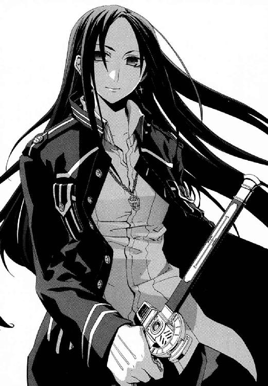
「みずからにしがみついて他人に命をかけさせる者と、他人のために戦う者。どちらが生き残るべきかは明白でしょう」
だが、上空でかすかに声が聞こえた。メイゼルの、かすれて消えそうなほど遠い叫びだった。
「行って、せんせ！」
空で、ちいさな魔女は絶望的な戦いを、あらがい続けていた。
武原仁は、謝らなかった。ただ、ひとこと告げた。
「────頼む」
返事はなかった。ただ、仁の脳裏に、足手まといになることを嫌がった少女が頰を誇らしげに紅潮させた姿が浮かんだ。あまりにも都合がよくて、腹の底で吐き気がした。メイゼルは今日、死ぬかもしれないし人を殺めるかもしれなかった。その責任は彼にあった。魔導師公館ではなく、仁がそこへ追いこんだからだ。
「おおおぉぉぉぉおぉっ！」
だからこそ仁は、身を投げ捨てる覚悟で最後の一歩を踏みこんだ。アンゼロッタときずなの間に、強引に割りこんで壁になった。同時に、仁の全身を横殴りの衝撃が揺らした。彼の魔法消去がきずなを打ち倒そうとしたアンゼロッタの魔法を焼いたのだ。
きずなは無事だった。破壊しきれなかった魔法が仁の肉をきしませた。仁は、アンゼロッタへと体をねじった。総身は一本の剣のごとく、ただひとつの目的のためにあった。自然に肘をたたんで、回転の勢いのままアンゼロッタの胸へと渾身の突きを放った。
剣の切っ先が空中で止まった。白い燐光の《光背》を突破できなかったのだ。
アンゼロッタが、憐れむような視線を投げた。魔法消去は発動したままなのに、木っ端みじんになったような打撃が体を襲った。気が遠くなった。だが、このまま後ろに倒れればきずなを巻きこむと思った。
「なめるなあッ！」
だから歯が砕けそうなほど食いしばり、泳ぎかけた上体を前傾させて踏ん張った。肺に残っていた空気が漏れ出た。息から血の臭いがした。
彼女は回る世界の回転軸のように、決してぶれることはない。
「なぜ、再演の娘を選んだのですか」
たまたまきずなのほうが近くにいたからなどではなかった。メイゼルが強い少女だったからでもなかった。
彼は、メイゼルを助けるため《公館》を飛び出した。なのに、メイゼルではなくきずなを救うために戦っていた。矛盾だらけでも、やり直しがきかない仁の選択はこれだった。
「あああああああああああっ！」
だから、刃のかけた剣を、白い炎のようにゆらめく防御魔術へ力の限り叩きつけた。
「俺は──、俺は──」
きずなはきっと仁のもとを去る。慈雄を殺したことを許されてなどいなかった。彼は、妹をなくしたアパートでまたひとりになる。それでも、背を向けることなどできなかった。
「俺は、おまえを助けてやる！」
他に何ができるだろうと、荒涼とした胸を抱えて自問した。また衝撃が、仁の身を折り曲げた。剣を杖にして、倒れることだけはこらえきった。アンゼロッタにどんな攻撃を受けているかもわからなかった。
きずなが、仁の名を呼んでいた。
「武原さん！ 武原さん！」
仁は、彼女を助けてやりたいと願った。正しいかどうかなど、もはやわからなかった。
「きずなちゃんのお父さんのかわりに、俺が助けるって言っただろ！」
咆吼した。視線だけで、きずなを振り返った。きずなによく目が合うと言われた通りに、またなった。きずなが太ももに拳を押しつけ、身をわななかせた。
「どんなことがあっても、俺は味方だって言っただろ」
同じことをメイゼルにも言った。だからそれは同時に裏切りでもあった。
「でも............」
「俺を信じろ！ 誰が求めたって、どんなに無理だって、俺が、きずなちゃんを犠牲にする救いなんかクソだと言ってやる」
彼とアンゼロッタの実力差は埋まっていなかった。きずなを助けきれる可能性など、本当は絶望的だとわかっていた。それでも、やらずにいられなかったのだ。
何度も何度も《幻影城》の舞台は爆発するように揺れ続けていた。水晶の雨は、いつまでも降り止まなかった。巨人騎士がおのずと立ててしまう衝撃波が、断続的に仁を打った。
「《沈黙》よ。再演の娘にこだわれば、救われた世界で、あなただけが幸福になれず取り残されるでしょう」
強固な《光背》に守られたアンゼロッタだけが、傷ひとつつかず清浄なままだった。魔法消去を発動している仁が、魔法で心を操られることは絶対にない。なのに得体の知れない〝何か〟に、彼女よりも確かなものなどないと信じさせられそうになった。
「怒りを抱えて誰にもかえりみられず、あなたは自滅するでしょう。核テロをくわだてて失敗した国城田義一が、あなたの未来の姿です」
仁は、爆発した怒りと激情のまま袈裟懸けに斬りつけた。「救い」など、メイゼルひとり救ってやれなかった彼に認められるはずもなかった。
「救われた世界だ？ そんな都合のいい救いなんて、無理に決まってるだろ。簡単に言ってくれるなよ！」
無礼への罰は、金槌で全身をめった打ちにされたような全身への衝撃だった。
だが、魔弾の衝撃に絶叫しながら、仁はなお一歩踏み込んだ。いくらかは《光背》が削れているはずだと信じて、全身の膂力と体重をのせた袈裟懸けの一撃を、もう一度たたきつけたのだ。
聖騎士将軍が、はじめて右腕を動かした。仁の渾身の一振りを、彼女は優雅な剣さばきで見事に受け流したのだ。
接近戦にすら死角がなかった。アンゼロッタの耳には、録音した神音を聞く耳穴式のヘッドホンが装着されていた。普通の神音魔導師は、魔法が耳の中で発現しても意味がないからヘッドホンで神音を聞いたりはしない。だが、同時に複数の魔法手続きを使える彼女には、むしろ両手を自由にできる利点ばかりだ。魔法発現位置を制御するために魔法手続きの一本を振り分ければ、残った手続きを利用して魔法を撃ち放題だからだ。
英雄グレンですらなしえなかったほど確信をこめて、彼女は断言した。
「わたくしたち神聖騎士団には、世界を救う力があります」
《至高の人》は、人間を超えた〝何か〟につきうごかされた預言者のように揺らがない。
「頼んでもない〝救い〟のために、勝手に人の運命決めてんなよ！ おまえら何様──」
彼は、言い切ることもできなかった。聞き分けのない獣が打たれるように、また魔弾でめった打ちにされた。痛覚の魔法消去で威力を減衰しているのに、一発受けるたび激痛に意識が飛びそうだった。
彼女の魔弾は、破壊力が着弾点で持続するタチの悪いものだ。最初に魔法消去に強い照準用の魔弾が飛ぶ。これが着弾して、魔法消去で消えにくい信号音を発する。その音へ向けて、最低でも四発の魔弾が連鎖爆発するのだ。だから、これを同時に五発撃たれれば、一瞬で仁は二十五発の魔弾を受ける。
死の運命が仁にも訪れたかのようで、先がある気がしなかった。アンゼロッタは大魔術を使ってもいなかった。神音大系の《化身》である《ゆらぎの化身》を展開してもいなかった。それでも、きずなを守るように立ちふさがった。もつれる足を踏ん張って、仁は、大きくあえぐ。
アンゼロッタは、握った剣を構えてもいなかった。仁は《光背》を突き崩せない。仁の脳は、《光背》を見通せない空白を、白い燐光の錯視で埋めていた。感覚の虫食いをじっと覗いているストレスで、猛烈な偏頭痛に襲われていた。
「ああああああああああぁぁぁッ！」
だが、これは、あきらめたとき武原仁が終わる戦いだった。目を見開いて彼女へ組み付こうとした。魔法消去は、相手に近づいて多くの感覚でとらえるほど破壊力を増す。アンゼロッタを五感で感じて、魔法を封じにかかった。アンゼロッタは、彼よりも二十センチ以上も背が低かった。完璧に隙がないからこそ、一点崩した部分に視線は集まる。軍服のスカートに微妙にスリットが入っていた。胸もすらりとしすぎていたが長い脚が魅力的な、アンゼロッタに合ったアレンジだった。
《至高の人》アンゼロッタの慈しみは、薄暗い裏側の存在を疑うほど、崩れなかった。
「〝悪〟を為して様々なものを傷つけるかたは、皆あなたのように無謀です。あきらめることが、誰にとっても救いだというのに」
仁の腹にだけ、魔弾が集中して打ちこまれた。内臓が爆発したように苦いだ液と嘔吐感が押し寄せ、膝がかくりと落ちた。水晶の床にひざまずき、ようやく倒れることだけは拒絶した。仁も、〝悪〟を為した。正しい選択などできなかった。メイゼルときずな、どちらを選んでも正しくなどなかった。だからこそ彼の生命がはげしく哮った。
「正しい答えなんか、出ないんだよ！ 出せるもんならやってみろよ！」
顔じゅう血だらけだった。おかげで、泣いてもそうとわからなかった。生きている限り足を踏ん張らずにいられなかった。
「あきらめたほうが、正しいのかもしれないさ。......うまくいかないことばっかりだ。......やってもやっても、塩漬けにしてきた問題のツケにばかりぶち当たる。社会からはじき出されたって、俺に無理なことはやっぱり無理だ。でも、それでも前に進むんだよ！」
もはや、まっすぐ立つことができなかった。頭が朦朧とした。
「〝悪〟の被害者になっても学べないのですか。テロリスト国城田義一があきらめていたら、あなたもまだ《公館》にいて、変わらぬ暮らしを続けられたはずです」
「俺は、......俺の大事なものを守るためだけに戦うんだ。俺は......俺は......、きずなちゃんや、メイゼルのことが好きなんだ。......京香姉ちゃんや八咬や、《公館》のみんなのことが好きなんだ。学校の子どもたちを守ってやりたいんだ。......だから、俺のやることが正しいかを決めるのは、俺だけじゃない......」
アンゼロッタに初めて会ったときは、完敗だった。そして仁は繰り返される問いに、弱さなりの答えを選び続けた。メイゼルは、そんな彼の目を手荒に覚まさせてくれた。きずなは、仁の甘えと〝悪〟を許してはくれなかった。
「......俺がどう生きるかなんて、俺と、俺が好きな人たちが決めることだ。ぽっと出てきて、きずなちゃんのことを勝手に決めんなよ！」
興奮と苦痛の大波に翻弄されて、頭が回らなかった。一秒後には命がなかったかもしれないから、搾りカスになるまで、彼自身をここで搾り尽くしたかった。だが、押しつけられるほうにしてみれば身勝手な言いぐさだと思った。
仁を襲った魔弾は、威力が継続する魔弾から一閃の太刀風に変わった。魔法消去のおかげで体を輪切りに切断はされなかった。かわりに仁を、鞭で打たれたような激痛が十発同時に襲った。神経をまるごと引っこ抜かれたような痛みに、悲鳴すらあげられなかった。仁の心臓が、このまま止まりそうなほど大きく脈打ち、仁はまた剣を杖にようやくこらえた。背後のきずなが心配になって、仁は生死のはざまなのに盗み見た。
きずなが、やさしいたれ気味の目尻から涙をこぼしていた。その涙は、きっとあたたかいのだろうと思った。その一瞬の記憶だけで、もう一度立ち向かう気力を絞り出せた。
「家族でもないのに、どう生きるかなんて言われても重たいですよ。メイゼルちゃんのことでもそうですけど、武原さんは干渉しすぎです」
彼女の声が、アパートで聞いたのと同じ、なつかしいあたたかさにあふれていた。だから、言うだけ言ってしまった仁も自然に笑っていた。
「そうなのかな」
「そうですよ。特別な関係でもないのにそういうの、おかしいですよ」
仁のことを「好き」だと言ってくれたきずなの理想の人は、〝お母さん〟だった。だから、家事が上手になった。仁は、〝助けてくれるおとな〟がほしかった。だから自分がそうなろうとした。
彼らは、求めていたものがいない穴を、自分がそうなって埋めようとした。価値観はまったくちがうのに、きずなと仁はどこか似ていた。けれど仁は、ことばにはできなかった。その共感は、いつか彼女と冷静に話せるようになったとき、改めて伝えたかった。
「ごめんな。俺が、勝手な夢を見たせいだ。やっぱり、もっと早く言ってたらよかったな」
彼女が、言い出せないことばをためらうように口を開こうとしては、つっかえていた。
空から星が落ちた。ぽとりと、ただ引力に引かれてまっすぐにだ。倉本きずなが開いていた手のひらにおさまった。まるで彼女を目指して落下してきたかのようだった。
その石は、何の変哲もないレンズ形の白い軽石のようだった。だが、仁は、これが《賢者の石》なのだと理解した。
きずなが、これに触れたとき、はっきりと表情を変えたからだ。
「これで、話は打ち切りのようですね」
アンゼロッタの微笑みの温度が、わずかに下がった。《至高の人》にとっての、仁の役目は終わったのだとわかった。
「逃げろきずなちゃん！」
彼の視界が、次の瞬間には白い猛火に包まれた。認識できないものの奔流を脳が錯視するしかない、魔法消去がまったく間に合わない大出力の魔法だった。気付いたときには、車に衝突したように、彼の体は跳ね飛ばされて転がっていた。遠くきずなの悲鳴が聞こえた。
仁が体を起こそうと手をついた水晶の床に、巨大な亀裂が走っていた。アンゼロッタの魔法に、《幻影城》が耐えられなかったのだ。
苦痛のほか、もう音も臭いも、光すらほとんど感覚できなかった。世界はすでに苦を盛る器だった。かき氷のように表層を粉砕された床に、仁の体から、鮮血がシロップのように落ちて滲みていた。
それでも仁は、体を起こし、震える両足に力を込めた。行き着くところまで行けば、きずなのためでもメイゼルのためでもない気がした。力尽きるまで立ち続けるほか、仁は彼自身でいるすべを知らなかった。
きずなの背中が、ちいさくかすんでいた。仁は、あの一撃で五メートルほども吹っ飛ばされ、頭を打ちすぎて視界も朦朧としていた。
もはやアンゼロッタときずなの間に壁はなかった。その無防備な彼女のあきらめたような声が、胸に刺さった。
「武原さん......。わたし、もういいです。わたし、ご迷惑をおかけしました」
今日のきずなは、本当に感情の起伏が激しかった。
「......きずなちゃんは、しあわせにならなきゃダメなんだ。......どんなに変わったって、〝普通〟にしあわせにならなきゃダメなんだ」
世界が揺れていた。巨人騎士の剣が舞台にたたきつけられたときと同じか、もっとひどい振動だった。ちいさな《賢者の石》がきずなの手に落ちてからは、はげしい縦揺れがもはやおさまることがなくなっていた。《黄金の右手》とエレオノールの戦いの激しさのせいで気付かれなかった。だが、すこしずつ悪化していたこの揺れは、もっと深刻なものだった。
《至高の人》アンゼロッタが、よく整えられた眉をひそめて困惑していた。だから、仁は、待っていたときがついにやってきたのだと知った。
「俺の勝ちだ」
アンゼロッタが、長い黒髪を、ときどきメイゼルがやる仕草そっくりに搔き上げた。
「いいえ。あなたは、再演の魔女を結局救えませんでした」
「わからないのか、もう救ったんだよ。俺が攻撃してたのは、おまえじゃない」
至高の聖騎士は、剣の切っ先を向けたきずなが毒であるかのように、触れることをためらっていた。きずながしっかり握った《賢者の石》を奪うには、手を開かせるか、手ごと切り落としたほうが安全かを思案している様子だった。
仁がするべきことは、これまでとまったく同じだった。ぼろぼろの体で魔法消去を発動したまま、最後の数分間を稼ぐことだ。
「おまえたちも知らないことを、ひとつ教えといてやる。六月のバベル再演のとき、儀式が終わった後で、マルク・フェルゼーは俺の前に現れたんだ。《幻影城》のどこかに隠れててもよかったはずなのに、俺を斃しに来た。なぜかわかるか？」
預言者の慈しみ深い笑顔は崩れない。だから仁は、それを突き崩してやりたくて、わざとゆっくり嚙みしめるように伝えた。
「俺には、《幻影城》自体を、内側から破壊できるからだ」
「《神人》がそんな手抜かりをすると思いますか。《幻影城》では、本物の軍がぶつかって戦場が再演された記録もあるのですよ」
そう言いながらも、死の運命の女は、威力が高すぎる大魔術で仁に止めを刺そうとはしなかった。
「軍隊が好き放題戦ったり怪物が暴れたりでも、本当に無事か？ おまえら機械化聖騎士隊の火力は、昔の記録と比べられる程度のモノか？ 俺たちの世界でだって同じだ。技術が発展すれば、戦場に投入される火力はケタちがいに上がる。しかも、俺がこうやって魔法消去して、《幻影城》が魔法で自己修復するのを止め続けてる」
仁が魔法消去を発動していたのは防御のためではない。見えないという状態が対魔導師戦でどんなに危険でも、仁は魔法消去を一度も止めなかった。仁の本当の標的が、《幻影城》自体だったからだ。
「覚えてるか？ 神人遺物は、魔法を破壊されても勝手に魔法的な性質を取り戻す。でも、取り戻すだけだ。神人遺物の魔法だって破壊はできる。......《幻影城》は、世界の外につながれてる。こういう魔法施設が魔法をなくしたらどうなると思う？」
個人では〝社会〟に勝てない。だから、勝負を個人でやれるレベルまで引き落とした。仁は、神聖騎士団を直接負かせなくても、戦場となる《幻影城》なら吹っ飛ばせた。これが彼のただひとつの勝機、〝社会〟の基盤への自爆攻撃だった。国城田の核テロと同じ発想だったから、嗤うしかなかった。
「《幻影城》がなくなっても、きずなちゃんは歴史改変の道具役から解放される。きずなちゃんに、神人遺物なしでも大規模儀式で歴史を書き換える腕があったら、逆にこんな苦労はしてない」
《幻影城》の揺れは、もはや立っていられないほどはげしくなっていた。水晶の嵐はまだ吹き止まなかった。《幻影城》の空は、夜空だった。もはや舞台上で演じられる夢がすべて終わったかのように、ここは寂しい場所になりつつあった。
変わらないものは、《至高の人》アンゼロッタを取り巻く清浄な《光背》。そして、世界の中心軸であるかのように、彼女がひとり直立していることだけだ。
「度し難い愚かさです。《真なる悪鬼》」
聖騎士たちは、この世界の人間を《悪鬼》とさげすまない。例外は、ただひとつ、悪鬼の古い先祖だという《真なる悪鬼》の名だ。
貶められた一瞬、たしかに凡人と預言者は、同じ高さの舞台に立っていた。
「なんでだろうな。おまえの口から悪鬼ってことばが出ると、泣きたいくらい気分がいい」
──そして、振動は頂点に達し、ついに《幻影城》の床そのものが構造を維持できず割れた。
足場を失い、誰もが底のない奈落へと墜落しつつあった。
《幻影城》の外、仁たちの世界の外側を見た悪鬼ははじめてかもしれないと思った。そこには、ただ暗い灰色がどこまでも広がっていた。距離はなく、方角はなく、引き寄せられてゆく強い引力だけがあった。ごうんごうんと、巨大な構造物が崩落した轟音が反響していた。
リュリュたち一千騎の聖騎士、アンゼロッタ、《黄金の右手》ミヒャエル。そして、きずなが落下していた。《魔獣使い》神和瑞希が、きずなの手からこぼれた《賢者の石》へと必死で手を伸ばしていた。セラは腕を組んだまま全裸で落ちていった。
鼓膜と肌を圧する音が、一千騎の騎士たちから神音の暴発を誘っていた。そうして現れた花びらや虫の死骸、ちいさな糸くずやありとあらゆるガラクタが、おもちゃばこをひっくり返したように灰色一色の世界に降っていた。
「きずなちゃん！ 手をのばせ!! このままじゃ、どこに落ちるかわからない」
仁には、この期に及んで魔法消去を発動し続ける蛮勇はなかった。
《幻影城》は、仁たちの世界の外側に繫留されている。だから、世界中のどことでも《扉》でつながる。けれど、魔法を失ったときどうなるかは誰にもわからなかった。元の時代に帰れる保証すらなかった。そう考えたとき、仁は、倉本慈雄が《幻影城》を使って何をしようとしていたかバカバカしい予想をした。慈雄は、《幻影城》自体を時を越える船として、三千年前のバベルに直接乗り込もうとしたのではないかと。
だから、彼女と離れてはならないのだと駆り立てられて、思い切り腕をのばした。きずなの傷だらけになった手に届いた。泣き顔の彼女が、仁をつかまえてくれた。彼女の料理が上手な手は、意外におおきかった。
「......武原さん」
何か言われるのがこわくて、あたたかいきずなの体を抱き寄せた。しっかりした肉の感触に驚き、そのやわらかさにうっとり酔いそうになった。息ができなかった。酸素を求めるかわりに強く抱きしめた。彼女の背中に回した右手の先が、弾力のあるものに触れた、仁ははじめて自分がもう剣を持っていないと気付いた。
きずなの体の筋肉が、彼の腕の中でぎゅっと緊張した。怒らせたかと、腕をゆるめた。
間近に見るきずなが、濃紺色の瞳で、仁の背後を凝視していた。もう二度と出会うことなどないと思っていた現実が、そこにあった。《幻影城》で仁が殺した倉本慈雄の死体が、彼らとともに落下していた。手製の神音楽器をいっぱいにつけた鎧は、おとぎ話の王子のようだった。投げ落とされた花のように、くるりくるりと回りながら安らかに慈雄は目を閉じていた。
最期に〝恋〟の神音を奏でて死んだ男は、永遠の夢を見ているようだった。生き残った仁たちは現実へと帰る。そこは、決してやさしくはない世界だ。
きずなの、涙がまだかわいていない目が、涙腺が今日一日でこわれてしまったようにうるんだ。泣き虫だった彼女が、何度もしゃくりあげながらこれだけ言った。
「お父さんありがとう」
最後まで、きずなは慈雄を父と呼び続けた。それが偽物であっても、倉本家には家庭があった。仁には、彼女の気持ちを推し量ることなどできなかった。
だが、灰色の世界を落ちてゆく者すべてにとって、戦いが終わったわけではなかった。
「涙はあなたたちだけのものだとでも思っているのですかッ！」
仁たちの落下軌道から離れてゆく倉本慈雄の死体を、つかまえた手があったのだ。荒海でいかだにしがみつくように死者をかき抱いたのは、白金色の猫っ毛を振り乱した少女だった。上級聖騎士リュリュ・メルルが、仁たちに呪いのこもった目を向けていた。
「何も終わっていませんよ！ ここからもう一度はじまるんです」
《幻影城》に残っていて吐き出された死体は、倉本慈雄だけではなかった。リュリュがまとっているのと同じ、伝統的なデザインの騎士甲冑をまとった体が墜落していた。剣で切られたもの、刺されたもの、狼に喰われたもの。バベル事件のとき、《幻影城》に突入した十二人の騎士隊のうち、五人ぶんの死体が行方不明に終わった。それが今、瓦礫といっしょに転がり出ていたのだ。
「見覚えがあるでしょう？ みんなバベルの再演で死んだ騎士たちです。みんな私のはじめての仲間でした。あなたたちに関わって、みんな死にました。あなたたちが殺したんです！」
そして鬼相のリュリュが、慈雄の死後硬直も終わった腕から籠手をはぎ取った。
仁は、肘に輪っかのようなものがついたその籠手に見覚えがあった。慈雄が仁との勝負で最後に発動させようとした切り札の楽器だったからだ。
仁の全身から血の気が引いた。倉本慈雄は、神音楽器作りの名手だった。
「やめろ正気か！ 何が発動するかわからないんだぞ」
「天才マルク・フェルゼーなら、その魔女を殺せる魔法を準備していたはず。あなたに関わる人間の不幸の連鎖、ここで断ち切ってさしあげます!!」
リュリュが、慈雄の神音楽器をきずなへ向けた。そして、複数のオルゴールが組み合わさったようなそれを作動させた。
そのとき、瓦礫の弾丸がリュリュの横腹をとらえたのだ。《光背》の防御があっても、支えも踏ん張りようもなければ、跳ね飛ばされるしかない。瓦礫に押されたリュリュの末路はわからなかった。遥か遠くの落下軌道に流されて、仁たちから確認できなくなったからだ。
そして、彼らを救ってくれた魔女の思い切りのよい声が、仁の胸を貫いた。
「せんせ！」
メイゼルが、服をぼろぼろにしながらも、生きていてくれた。体の軽いメイゼルが、彼女の体より何百倍も重い岩塊を磁力で弾き、反作用で飛びついてきた。ワンピースには無数の水晶片が引っ付いていて、しがみつかれるとちくちくした。肌のむき出しの部分は、ひっかき傷だらけだった。
夢じゃないかと思った。だから、醒めないようにつかまえていたかった。仁は、メイゼルが生還する可能性の低さをわかっていた。だからこそ、仁はメイゼルを抱きしめずにいられなかった。うれしさがあふれて、その激しさを止められなかった。
「ありがとうな。生きててくれて、ありがとうな」
ぱっと花開いたように、メイゼルが笑った。
この世のどこでもない場所を、仁たちはどこまでも落下してゆく。仁たちを引き寄せるものがあるとしたら、それは彼らの元いた世界だ。彼らは、懐かしい家のある世界へと墜落してゆくのだ。
仁の腕の中に飛びこんできたちいさな魔女が、ぐいと肩を押した。
「きずな、もっとはしっこに詰めるのよ？」
きずなが、まだ鼻をすすりながら、すこしだけ肩を縮めた。仁は、墜落した先で離ればなれにならなければいいと思った。もしも今日すべてを失うとしても、このときだけはこうしていたかった。
仁たちが身を寄せ合っていることも、きっと〝悪〟だった。彼らには、そうしている理由がなかったからだ。それでも身勝手な〝悪〟は、彼らの胸の荒涼とした深い部分に、一輪の花のように植わっていた。傲慢なほどに愛らしい花を、彼らはとても引き抜けない。
彼らはこうして、すこしずつちいさな、いとおしい〝悪〟に荷担するのだ。
慈雄を殺した仁と、今日までそれを確かめようともしなかったきずなは、目を見交わす。
「武原さん。......聞いてもらっていいですか」
きずなが、仁の胸に額を押しつけてきた。
「わたし、ずっと前、武原さんのことが『好き』って言ったけど、本当はちがうんです」
仁は、出会ったばかりの彼女がそう言ってくれたことに、どこかで甘えていた。だから、恥ずかしげもなくこれまで家事をしてもらえたのだ。仁はそれを取り消されて、痛むほど首筋が緊張した。きずなの体温が、ただ愛おしかった。
「わたし、不安で居場所がほしかったんです。そんなとき、武原さんがわたしにやさしくしてくれて......。それで、ここならしあわせになれるって思ったんです。だから、手放したくなかったんです。......ここじゃなきゃイヤだったんです。武原さんやメイゼルちゃんにやさしくしたら、自分に跳ね返ってくるんじゃないかって期待してたんです。わたし、汚いですよね」
彼女の栗色の髪を、仁はなでてやった。そうしてやりたかったのだ。灰色の彼方に消えた倉本慈雄のかわりに、そうしてやりたかったのだ。
きずなが、腹の底にたまったものを吐き出すように、強くことばを押し出した。
「本当は、あのとき、『好き』って言っちゃダメだったんです。わたしは、『武原さんがほしい』だけだったんですから」
きずなの気持ちが「好き」と何がちがうのか、仁にはわからなかった。だが、彼女がけじめをつけようとしていることはわかった。
「そうか」
仁たちは、崩落する轟音の木霊を聞きながら、墜落してゆく。仁は、その両手で、あまりにもささやかで大事なものにしがみついていた。
「今日までありがとう。俺は、どんなになっても、ずっと大切なものをあきらめないよ」
再演魔導師だけで、精密な歴史の再演はできない。だが、《幻影城》が神人遺物である以上、いつかはその形と力を取り戻す。そうすれば、神聖騎士団はかならずきずなをまた狙う。
きずなが顔をあげた。傷だらけで、水晶の白い粉だらけで、昨日から風呂にも入っていないから肌もべたべただった。けれど、涙をぬぐいすぎて赤くなった目尻をやさしくすこしさげて、笑ってくれた。
「武原さんは、人のことに干渉しすぎですよ」
「......でも、もう他人じゃない」
仁は、きずなを怒らせたかもしれなかった。だが、もう心から出た言葉を謝らなかった。
きずなが、仁の服をしっかりつかんでいた指をそっと離した。きずなと仁の間に、ほんのわずかだが決して縮まらない隙間が空いた。腕の長さが足りないぶん仁に体ごとぺったりひっついて抱きついたままのメイゼルは、それに気付かなかった。
「せんせは、あたしのこと、もうちょっとほめてもいいと思うの......今さら頭なでたっておそいわ。せんせは、もっとあたしのこと真剣に考えるべきなのよ？ きずな、なにが泣くほどおかしいの？ せんせも、ここは笑うとこじゃないのよ」
彼らのいろんなことが〝変わった〟。なのに、それぞれが胸の奥に抱えた〝悪〟とだけは、手を切れなかった。彼らは、お互いの深いところを覗いてしまったから、もう表層でつながることはできない。それでも、何もかもが土台から崩れ去っても、変わってしまった彼らは、新しい気持ちの深いところにお互いの足跡を、手つきを、匂いを、もう取り込んでしまっていた。
そして灰色の夢の終わりへ、彼らは墜落する。奈落の底、彼らの懐かしい《地獄》を目指して──────
意識を取り戻したとき、きずなは廃ビルの吹き抜けの中庭に立っていた。
陽光は、彼女の前に《扉》が現れたときとかわらず白く降り落ちていた。廃ビルを損壊させてメイゼルが作りあげた瓦礫の山が残っていた。すべて夢ではなかったのだと、きずなは静かに理解した。
彼女は、スカートのポケットから携帯電話を取り出した。
「何時間たったんだろう」
電源を入れた。液晶画面に時間が表示された。きずなが《幻影城》に入ってから一時間と経っていなかった。
だから、彼女自身がひどく薄情になった気がした。父の死の真相を告げられて一時間半にもならないということだからだ。それなのに、《幻影城》の戦いで何かが片付いた気分になっていた。彼女の心は、その場の激流に振り回される。
夜になったら、今日一日のことを思い出して、また泣くのだと思った。彼女は、きっと何日も整理しきれずに引きずる。
水晶の破片と粉が散った制服をはたいた。ちいさな擦り傷や打撲や、よくわからない傷が体中についていた。体中が痛んで、もう歩くのも外に出るのもイヤだった。
「痕、残ったらやだな......」
昼ご飯の時間はとっくにすぎていた。おなかが空いた。当たり前の体の反応だったが、罪悪感がわいた。父の死を、親子の問題ではなく彼女と武原仁の問題ととらえているのが、親不孝に感じたのだ。彼女が今一番さびしいのは、昼食をひとりで食べることだった。彼女は、父を殺した武原仁といっしょに暮らせないことを悲しんでいたのだ。
だから、乱れる心を落ち着けるため、父と過ごした部屋に戻りたかった。そうして、この廃ビルにいるのが心細い理由に思い当たった。
きずなは、《扉》をくぐったとき、ひとりではなかったからだ。彼女と《幻影城》へ行ってくれたエレオノールが、戻ってきた今はいっしょではなかった。
エレオノールと再会したのは、十崎京香からの電話を切って五分くらい後だった。メイゼルが武原仁に思いを遂げようとした戦いで、廃ビルの中庭に大量の瓦礫がなだれ落ちた。その轟音は大気の壁で密封されたが、地面の揺れまではやわらげきれなかったのだ。揺れは住宅街に伝わって、《魔炎》が高くあがった。それに気づいて、彼女はここに駆けつけてくれた。
きずなは《幻影城》がこわくてエレオノールにお願いをした。仁が、《扉》の向こうにいると感覚できた。〝悪い〟ことでも、ほしかったものを取り返したかったのだ。
「ほんと、薄情だ......わたし」
興奮が冷めると、きずなは体中から消えない鈍痛がつらくて動けなくなっていた。彼女は、〝普通〟に暮らしてきたから、今日までこんな負傷をしたことすらなかったのだ。
「武原さんも、エレオノールさんも、神和さんも、メイゼルちゃんだって、みんなもっとひどいケガしてたのに......。わたしのせいで、みんなもっと危ない目にあってたのに」
だから、疲れ切ってきずなは薄暗い床に座り込んだ。砂埃だらけだったが、気にもならなかった。どうせ、汚れていたからだ。
だが、廃ビルの入り口に軽い足音が到達した。
きずなにおとらずぼろぼろになったその人物と対面して、やましさで金縛りになった。
彼女は、きずなと同じ高校の制服を着ていた。服の生地はぼろぼろだが、魔法で治癒したのだろう肌は赤ん坊のように傷ひとつない。頭の両脇に二本の長いポニーテールに結んだ黒髪が、はじめて見るくらい乱れていた。
神和瑞希がそこにいた。
「......きずな、......もう、......帰ろう」
今回の事件で、きずなからずっと離れていた友だちが、やって来てくれたのだ。
瑞希が、きずなの様子に血相を変えて駆けてきた。その慌てぶりを目にして、彼女はほんのすこし彼女自身に戻れる気がした。
「《賢者の石》って、とれた？」
瑞希が、虹色に色を変えるものをスカートのポケットから出した。
「............これ」
瑞希は、こまったようにきずなを見おろした。《幻影城》での戦いには意味があったのだと思うと、すこしだけうれしかった。
きずなは、だから笑った。彼女は、〝お母さん〟にあこがれて家事が上手になった。きずなはまだ、本当にひとりで居場所を見つける方法を知らない。
「よかったね」
心からことばが出た。瑞希が、母親にほめられた娘はこんな顔をするのかと思うくらい、無防備に笑った。無表情な彼女が感情をあらわにしてくれる姿が、きずなは好きだった。
きずなは、《賢者の石》の正体をもう知っていた。《賢者の石》に触れたとき、きずなは懐かしい悪夢に再会した。それは、かつて彼女が《染血公主》ジェルヴェーヌにさらわれた再演のバベルで眺めた、首をはねられるきずな自身の〝未来〟だった。
きずなは、これまでに三回だけ〝未来〟を見た。バベルの再演で覗いた、きずな自身が死ぬ〝未来〟。グレン・アザレイが現れる直前に覗いた、武原仁が死ぬ〝未来〟。そして夏の核テロ事件のとき出会った、何年後かのきずなが仁と暮らしていた〝未来〟。三つ全部に共通点があった。きずなは、結局はそうならなかった破壊された〝未来〟しか見ていない。
それがどういう意味か、《賢者の石》に触れて理解した。きずなは、彼女自身が破壊した〝未来の残骸〟に感応していただけだった。
「......《賢者の石》......は......こわれない............。魔法消去してる......人間には......白い...石...に...見える......。......強くて......見通せない......魔法...が...白く......見えるの...と...同じ............。神話で......金剛石......言われた......」
《賢者の石》は壊れない。再演大系の自然秩序自体が、歴史改変の影響を最小限度にとどめるために固定した、まさに《神》の魔法だからだ。《賢者の石》は、再演の自然秩序が世界に干渉する目印として置いた《栞》だ。世界という本それ自体が、細かい矛盾が無限に増えることを防ぐために、未来を破壊した魔法自体を再演魔術で覆し直すことを禁じている。だから《賢者の石》は、魔法消去しようが、再演大系という自然秩序がある限り壊れない。再演大系の自然は、歴史改変を織り込みながら、最低限の安定をとるかたちにゆがんでいるのだ。
《賢者の石》は、誰にとっても消えずにこの世界に残り続ける。そして、誰がどんな感覚で触れても消えないものは、物質と見分けがつかない。
「うん、今は知ってる」
きずなは、彼女自身の罪のあかしを見た。《賢者の石》は、彼女が壊した〝未来の残骸〟に繫がっている。この石は、きずなが〝未来〟を破壊した場所だから幻影城に現れたのだ。
「あの騎士の人たち、あそこに《賢者の石》が落ちてくるって知ってたのかな」
瑞希が、ハンカチで包んで、ポケットにそれを大切にしまった。
「......聖騎士の......目的......《賢者の石》............だった......。だから......犠牲を......おさえて......待ってた。だけど、あのケダモノ......本当の......戦争...はじまる前.........戦場......壊した............」
きずなには、戦いのことはわからなかった。けれど、瑞希がめずらしく仁の仕事に満足しているのだとは察した。そして、きずなの表情をうかがって、彼女が言い直した。
「......だいじょうぶ。......あの戦いで......死んだの......たった......七人...」
だが、きずなの表情をくもらせていたのは、聖騎士たちの死者のことではなかった。父親のことで頭がいっぱいだったのだ。そして、きずなの頭をよぎったのは、彼女があと二度〝未来を見た〟ことだった。彼女はまだ二回〝未来を破壊〟していた。だから《賢者の石》は、どこかにまだふたつ眠っている。
だから、もう難しいことは考えたくなかった。〝普通〟の暮らしに戻りたかった。
「また、明日から高校に行ってだいじょうぶかな？ あ、そういえば、武原さんが教室来たあと、みんななにか言ってた？ 変なウワサになったりしてない？ ヘルメットも鈴ちーに返さなきゃだね」
高校は、昼休みが終わって今は五時間目のはずだった。楽しいことを考えると、前に進める気がした。
水晶の粉と血で汚れたままの手が気になって、スカートのポケットからハンカチを出した。軽いものがいっしょに落ちて、キンとかすかな音をたてた。拾いあげてみて、また泣き虫でイヤになるくらい、まぶたの裏にこみあげた。
十崎京香が子どものころ武原仁にもらったという、おもちゃの指輪だった。きずなが、ガラス玉のはまったこれを譲ってもらったときのうれしさが、よみがえった。この指輪を薬指にはめて遊んでいて、取れなくなったこともあった。けれど、だからポケットに入れるのは未練がましい気がした。
「おかしいよね。ゆるしてないのに」
仁に返そうと思った。彼の携帯電話もポケットに入れてきずなが持っていた。きずなは、京香にも迷惑をかけた。あやまって、連絡を取ってもらおうと思った。
瑞希が待っていてくれていた。だから、きずなはもう踏み出そうと決めた。いつか武原仁としっかり話をしなければならなかった。けれど、気持ちの整理がつくまでは、彼の顔を見るとつらくなるとわかっていたのだ。
「行こっか」
外は、白い陽光がさす昼間の街だった。
だが、狂ってしまった歯車はどこかで破綻する。罪はかならず罰を受ける。
メイゼルの張った遮音魔法が残るビルから出たとき、街路は大騒ぎになっていた。消防車のサイレンが聞こえた。住宅街の人々が、口々に大声で何かを噂しあっていた。
誰も、廃ビルからぼろぼろで出てきたきずなたちに気付きもしなかった。住宅街の主婦らしい中年女性がサンダル履きで走っていた。
「なんかムチャクチャ燃えてるよー。テレビ来てない？」
近くの交差点で、化粧の濃い若い女性が携帯電話をかけていた。
きずなは、その人が指さしている方向を振り返り、絶句した。住宅街からは、一キロメートルほど向こうの、森に包まれた小高い丘が見えた。その頂上が、はげしい炎と黒煙をあげて燃えさかっていたのだ。
彼女たちはその場所を知っていた。そこには明治時代に作られた、関係者以外は立ち入ることのない洋館が建っていた。魔導師公館本館が、そこにあった。
彼女の再演魔術が発動して、この世界の人々に魔法消去されたのではないかと手を確かめた。魔炎はなかった。きずなは潔白だ。
専任係官である神和瑞希が駆けだした。きずなも、くじいた足を引きずって、丘がよく見える交差点まで走った。男の子が、携帯電話で写真を撮っていた。きずなは潔白だ。
──本当に？ 彼女の内心の潔癖な部分は糾弾する。
きずなのスカートのポケットには、武原仁の携帯電話があった。きずなは、仁にそばにいてほしくて、二日間これを隠していた。だが、《公館》の事務官、十崎京香が仁に連絡をとろうと何度も電話をしていた。京香本人が電話でそう言っていたのだ。
──武原仁に電話がつながってさえいれば、公館本館は持ち堪えたのだとしたら？
きずなの新しいはじまりは、絶対に安楽なものにならない。彼女自身の〝悪〟を思い知らせるように、公館を焼く大火は、煙をあげはげしく躍っていた。
十崎京香がきっといる公館本館が、いつまでも燃えて続けていた。
†
意識を取り戻したとき、仁は住み慣れたアパートにいた。
習慣的に締め切っているカーテンを透かして、白い陽光が差しこんでいた。戻りたいと願い続けていた部屋は、彼の記憶通りに待っていてくれた。
「せんせ、おかえりなさい」
見おろすと、そこにちいさな魔女がいた。秋物のワンピースは白い粉まみれで、だが戦い抜いた誇りでその頰は上気していた。
やさしい目をした倉本きずなだけが、ここにいなかった。《幻影城》から飛ばされた着点がきずなと別れたことが、なにかを象徴しているようで、寒気がした。
それでも、ここに生きて帰って来られたことが何よりの勝利に思えた。
「ただいまだな。とりあえず、よかったよ」
「よくないわ、せんせ」
ちいさな魔女は、かわいらしく左足のかかとを持ちあげた。畳の上なのに、靴をはいたままだったからだ。ふたりで靴を脱いでいる間に、無事を確認しあった感動は醒めて現実が押し寄せてきた。メイゼルが怒っていた。
「ぜんぜんよくないのよ。せんせは、どうして、あたしよりきずなを選んだの？」
エレオノールのアパートで襲われてから何時間経ったのだろうと、柱時計をたしかめた。まだ昼の二時にもなっていなかった。
「せんせは、本当に、そこをちゃんとあたしに納得できるように説明すべきだと思うの」
仁は、殺し合いの中にメイゼルを完全に放置した。少女が死ぬ可能性も、ひとを殺させてしまう可能性もあった。なのに他の手段を見出せず、保護者だった仁が選択したのだ。
「次に同じことがあったらまたきずななの？ それとも、次はあたしを選ぶの？」
メイゼルのあめ色の瞳が、じっと仁を見据えていた。重すぎて、かえってこれまでのように謝れなかった。勝手のちがうことばかりだった戦いの中で、まだ変わっていないと自信をもって言えることは、これだけだった。
「きずなちゃんだからとか、メイゼルだからってことじゃない。ただ、おまえがやることには、俺が責任を持つ。だから、そうしたんだ」
メイゼルが、予想外の告白でも受けたように、肩を震わせた。そして、怒り出すかわりに、誇らしげに大きく鼻で息をして目を閉じたのだ。
「あたりまえよ。あたし、足手まといなんかじゃないわ。せんせは、あたしを頼るのがおそすぎたくらいだわ」
それは子どもを戦わせる、彼自身がもっとも強く拒絶した〝悪〟だった。社会からはじき出された仁は、偽善に荷担するかわりに、その〝悪〟にみずから手を染めた。彼は、ひとりでは何もできなかったからだ。弱い者には、〝悪〟から無縁でかつ有効な選択肢など、ほとんど与えられない。そして、手に入るものが〝悪〟ばかりだから、〝悪〟を材料にして何かを築こうとする。仁は、たぶん戦争の起源のひとつで、テロリストの入り口であるものの前にいた。
仁は、それでもメイゼルにしあわせになってもらいたかった。矛盾を抱えても、彼が出す答えはメイゼルのしあわせを向いているようにしたかった。
「メイゼル、俺はあやまらない。ただ、俺が間違ってたり、おまえをしあわせにしなかったりしたら、おまえは俺を好きに裁いていい」
救いは、今や彼のすることの全責任が魔導師公館ではなく仁自身にあることだけだった。
真っ赤になっていた少女が、ガマンできなくなったように立ちあがった。
「あたし、水あびしてくるわ。服も、着がえないとたえられないもの」
そして、生命力にあふれた日常が動きだした。死者の出た戦いの後としては不謹慎なほど生活感にあふれていた。
仁は、立ちくらみがして柱にもたれかかった。全身の関節が悲鳴をあげていた。倒れかけたところを、無茶な体勢で何度も踏ん張ったからだ。あらゆる筋肉と内臓が炎症でむくんでいるかのように、気分が悪かった。ひとりで歩けそうにもなかった。救急車を呼ぶか、メイゼルに魔法治癒してもらうか迷った。普通に考えれば即入院の状態だった。
メイゼルが風呂場に入ってシャワーをあびている水音が、耳を打った。毎日の暮らしの匂いが濃くなってくると、仁も明日からの生活が心配になってきた。
「そもそも俺、小学校の先生に戻れるのか......。無断欠勤三日目じゃないか。これ学校に連絡すんのか。一体、どうやって説明するんだ」
畳を這って、コードレスになっている受話器をとりあげた。御陵甲小学校の電話番号にかけようとして、指が止まった。
「完全に無職はカンベンしてほしいよなあ」
仁は、もやもやして整理がつけられず柱に這い戻った。そして、受話器を握ったまま目を閉じた。こんな状態で、学校に説明できると思えなかったからだ。
水晶のかけらが、後から掃除機をかけたくなるほど畳にばらばら落ちていた。
柱にもたれて、これからのことをぼんやりと考えていた。
カーテンのかかった窓の向こうで、かすかに消防車のサイレンが聞こえた。音はすぐ近くだった。
だから、泥沼から抜けたくて、仁はカーテンをすこし開けた。窓から外へ視線を走らせて、火元を確認する。そして目に映ったものが信じられず、窓を全開にして上半身を外へ突き出した。
「なんだ？ おい、どういうことだ......」
よく見てみても、事実は変わらなかった。《公館》本館が建つ丘から、炎があがっていた。
大量の黒煙をあげて、魔炎ではない本物の猛火が、青空へ向けて揺らめいていた。響くサイレンは一台分だけではなかった、二台三台と消防車が増えていった。仁たちのアパートは、魔導師公館から歩いて十五分ほどの場所にある。近隣住民も、三々五々通りに出て、近所で起こった大火を心配そうにながめていた。
異変に気付いたか、風呂場からメイゼルが飛び出してきた。少女は、髪は濡れたままで、着がえのワンピースを裸の体に直に着ただけだった。
「なにあれ、せんせ......」
髪から滴を落とすメイゼルも、公館本館を包む猛火に顔を蒼白にしていた。
魔導師公館は、魔法使いとこの世界の住人の間の〝悪〟を肩代わりする、社会の残酷な歯車だった。だが、轟炎をあげてここに《公館》は陥落した。
仁にとっては、《公館》での経験が彼自身の根っこだった。だから、解雇されたはずなのに、胸にぽっかり穴が空いた。
「京香姉ちゃん。無事なのか？」
電話機にかじりつくように、暗記していた京香の電話番号にかけた。
〈......この電話は現在、電源が入っていないか、電波の届かないところにあります。しばらく経ってから────〉
幼なじみの携帯電話に電波が届かなかったと、自動メッセージは告げていた。
仁の胸に空いた穴に灯った、激しくドス黒いものが、荒れ狂いはじめていた。
「......せんせ」
ちいさな魔女が、初めて出会ったころから変わらない、無防備な距離感で仁に寄り添った。彼女と知り合ったころや《バベル再演》事件のことが、公館本館の火災のせいでぐるぐる回っていた。だから、気づいて全身から血の気が引いた。メイゼルはそれでも子どもだった。彼女が何を望もうと、鴉木メイゼルは小学六年生だった。
そして子どもを戦場に投げ込むことは、初めて出会ったころ、仁が一番強く抵抗していたことだった。
「本当に憎い相手がいたら、同じくらい愛したげればいいのよ。そうしたら、痛いことするのもされるのも、すっごく気持ちいいのよ」
メイゼルが、出会ったときから同じ嗜虐的にゆがんだ微笑を無邪気に向けてきた。一緒にゆがみかけていた仁の胸は、声のない慟哭にきしんだ。
「そうじゃないんだ。この世界は地獄じゃない。戦いに好き嫌いを持ち込み出したら、歯止めがきかなくなる」
保護者である彼自身が、戦いでメイゼルに頼ってしまった。だが、もう一度くり返してしまうかもしれないのに、仁は、大切なものが燃え散るさまを目に焼き付けずにいられない。《至高の人》アンゼロッタは正しい。たいせつなものへの執着は、胸に一本の〝悪〟の花を植えるに等しい。だが仁は、公館を焼いた人間を許せなかった。
世界は幾千億の〝悪〟咲き乱れる悪徳の花園のようだった。その中で善良でいたかった。たいせつなものを、しあわせにしてやりたかった。だからこそ、武原仁の答えは、この犯人たちとけじめをつける戦いでまた試される。手元に〝悪〟しか選択肢がない、テロリストの入り口に立っている彼が、本当に少女たちをしあわせにしてやれるのかと。円環をたどるように、厳しい問いほど何度でも戻ってくる。
あどけない刻印魔導師が、濡れた髪と体の温度を交換するようにぺったり引っ付いてきた。彼女のあめ色の瞳が、信頼しきって彼を見あげた。
「せんせはやっぱり、あたしといっしょが一番シアワセな人なのよ。せんせが戦ってることってあたしが魔法使いをやめられないことと、きっと、同じなんだわ」
ちいさなメイゼルと、刻印魔導師と専任係官として契約を結んだ公館本館が燃えていた。居候の家主としてたいせつな食卓をかこんだ十崎京香に、電話はつながらない。
幾万の魔法世界で、ただひとつ奇蹟に見捨てられた世界。ここは《地獄》──時の流れに負けていとしい夢の燃え散る場所。
〈ＦＩＮ〉
あとがき
七巻から三ヶ月ぶりのごぶさたです。長谷敏司です。
この八巻は、新キャラをくわえ、更なる難局をむかえての新展開となりました。そして、一巻以来、神聖騎士団と二度目の本格的な激突です。一巻のあおりが「灼熱のウィザーズバトル」だったのですが、現在、さらに温度が上がっている気がします。
メイゼルやきずなとの関係も更に踏みこんで、筆者もどこに着地するかわかりません。書いた者が言うのもなんですが、えらいところまでやってきたものです。
今回は、神聖騎士団との再戦ということで、全巻からすこしずつ影響が流入しています。おかげで、にぎやかな物語になりました。これまでも、紆余曲折いろいろあったものです。
激動の中、変わりゆく者あり、みずからを貫き続ける者あり、変われていない者ありと登場人物たちも道がわかれはじめました。
これから仁やメイゼルやきずな、そして彼らを取り巻く人々がどんな物語を作ってゆくか、楽しみにしてやってください。
と、かたい話ばかりなのもなんですので、息抜きのアホ話でも。今回は、いろいろと大変だったぶん、作業のツメもえらいことになっていました。おかげで、限界を超えて頭が変な方向へ飛んでいました。
新しい魔法大系の設定は、たいてい作業の合間に考えておりまして。新展開ということで、新魔法を準備しておくかといっぱいいっぱいな頭をひねっていたのです。そして、「全裸魔法はあるけど、半裸はないなあ」と、ふと思ったのです。むしろ男性的に、最初から全裸より脱いでゆくほうがよいだろうと。いやむしろ、脱ぐことで発動する魔法がひとつくらいあるべきだと！
どんな魔法なら脱衣で発動するか思案していたのですが、まだ思いついておりません。当然、あきらめてはいませんが。
息抜きのアホ話ではなく、筆者がアホだった話でした。すみません。
残りスペースもすくなくなったので最後に謝辞を。
イラストの深遊さん、毎回素晴らしいイラストありがとうございます。
今回もいろいろと支えていただきました家族へ。そして友人へ。相談に乗っていただきました後輩東浜君、後輩たいたい君、友人山根さん。本当に助かりました。
あまり間が空きすぎないようにしますので、また九巻でお会いしましょう！
カバー・口絵・本文イラスト／深遊
カバー・口絵・本文デザイン／中デザイン事務所
円環少女
⑧裏切りの天秤
長谷敏司
平成25年9月1日 発行
発行者 宍戸健司
発行所 株式会社角川書店
〒102-8078 東京都千代田区富士見2-13-3
http://www.kadokawa.co.jp/
(C) Satoshi HASE 2008
本電子書籍は下記にもとづいて制作しました
角川スニーカー文庫『円環少女 ⑧裏切りの天秤』平成20年6月1日初版発行